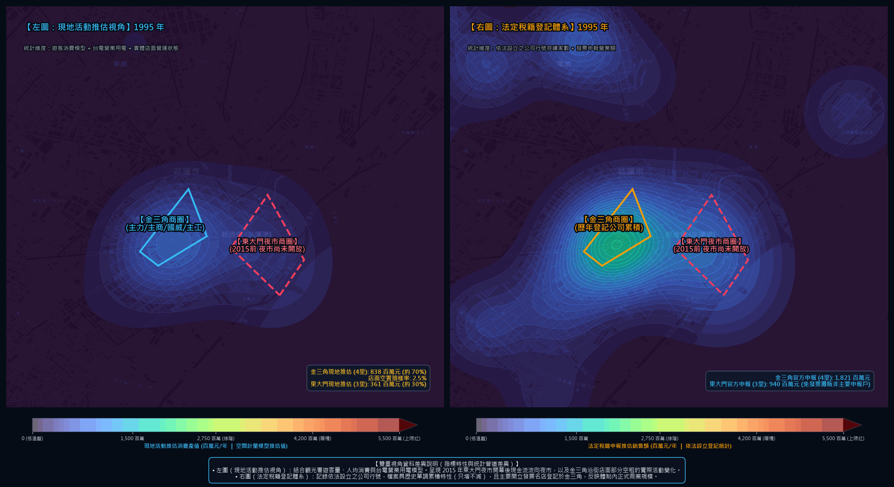

<!DOCTYPE html>
<html lang="zh-TW" class="scroll-smooth">
<head>
    <meta charset="UTF-8">
    <meta name="viewport" content="width=device-width, initial-scale=1.0">
    <title>花蓮市商圈 30 年空間與經濟變遷觀測（1995–2025）｜ 法定稅籍分佈 vs 多元人潮空間模擬</title>
    
    <!-- Tailwind CSS -->
    <script src="https://cdn.tailwindcss.com"></script>
    <script>
        tailwind.config = {
            darkMode: 'class',
            theme: {
                extend: {
                    colors: {
                        slate: {
                            850: '#0f172a',
                            900: '#0b1120',
                            950: '#070d18'
                        }
                    }
                }
            }
        }
    </script>
    
    <!-- Leaflet CSS -->
    <link rel="stylesheet" href="https://cdnjs.cloudflare.com/ajax/libs/leaflet/1.9.4/leaflet.css" />
    
    <!-- KaTeX for Math Formulas -->
    <link rel="stylesheet" href="https://cdn.jsdelivr.net/npm/katex@0.16.8/dist/katex.min.css">
    <script defer src="https://cdn.jsdelivr.net/npm/katex@0.16.8/dist/katex.min.js"></script>
    <script defer src="https://cdn.jsdelivr.net/npm/katex@0.16.8/dist/contrib/auto-render.min.js"
        onload="renderMathInElement(document.body);"></script>

    <style>
        body {
            font-family: -apple-system, BlinkMacSystemFont, "Segoe UI", "PingFang TC", "Microsoft JhengHei", Roboto, sans-serif;
            background-color: #070d18;
            color: #e2e8f0;
        }
        .glass-card {
            background: rgba(15, 23, 42, 0.85);
            backdrop-filter: blur(12px);
            border: 1px solid rgba(51, 65, 85, 0.65);
        }
        .glass-nav {
            background: rgba(7, 13, 24, 0.90);
            backdrop-filter: blur(16px);
            border-bottom: 1px solid rgba(51, 65, 85, 0.6);
        }
        .gradient-text-gold {
            background: linear-gradient(135deg, #fbbf24 0%, #f59e0b 50%, #d97706 100%);
            -webkit-background-clip: text;
            -webkit-text-fill-color: transparent;
        }
        .gradient-text-cyan {
            background: linear-gradient(135deg, #38bdf8 0%, #0284c7 100%);
            -webkit-background-clip: text;
            -webkit-text-fill-color: transparent;
        }
        .gradient-text-rose {
            background: linear-gradient(135deg, #fb7185 0%, #f43f5e 100%);
            -webkit-background-clip: text;
            -webkit-text-fill-color: transparent;
        }
        /* 自訂滾動條 */
        ::-webkit-scrollbar {
            width: 8px;
            height: 8px;
        }
        ::-webkit-scrollbar-track {
            background: #0b1120;
        }
        ::-webkit-scrollbar-thumb {
            background: #334155;
            border-radius: 4px;
        }
        ::-webkit-scrollbar-thumb:hover {
            background: #475569;
        }
    </style>
</head>
<body class="min-h-screen flex flex-col antialiased selection:bg-amber-500 selection:text-slate-950">

    <!-- 1. 置頂導覽列 (Sticky Header) -->
    <header class="sticky top-0 z-50 glass-nav transition-all">
        <div class="max-w-7xl mx-auto px-4 sm:px-6 lg:px-8 h-16 flex items-center justify-between">
            <div class="flex items-center gap-3">
                <span class="text-2xl">🏛️</span>
                <div>
                    <h1 class="text-sm sm:text-base font-bold text-white tracking-tight flex items-center gap-2">
                        <span>花蓮市商圈 30 年空間與經濟變遷觀測</span>
                        <span class="text-[11px] px-2 py-0.5 rounded-full bg-slate-800 text-slate-300 border border-slate-700 font-mono">1995–2025</span>
                    </h1>
                    <p class="text-[11px] text-slate-400 hidden sm:block">雙重視角空間模擬 ｜ 法定稅籍登記 vs 多元人潮模擬</p>
                </div>
            </div>

            <!-- 錨點導覽按鈕 -->
            <nav class="hidden md:flex items-center gap-1 text-xs font-medium text-slate-300">
                <a href="#disclaimer" class="px-3 py-1.5 rounded-lg hover:bg-slate-800 hover:text-white transition text-amber-300">📌 資料聲明</a>
                <a href="#dual-gif" class="px-3 py-1.5 rounded-lg hover:bg-slate-800 hover:text-white transition text-sky-300 font-bold">🎞️ 雙重視角對照</a>
                <a href="#comparison" class="px-3 py-1.5 rounded-lg hover:bg-slate-800 hover:text-white transition">商圈結構分析</a>
                <a href="#interactive-map" class="px-3 py-1.5 rounded-lg hover:bg-slate-800 hover:text-white transition">🗺️ 空間互動探索</a>
                <a href="#methodology" class="px-3 py-1.5 rounded-lg hover:bg-slate-800 hover:text-white transition text-emerald-400 font-bold">📐 計量模型與硬傷解法</a>
                <a href="#data-table" class="px-3 py-1.5 rounded-lg hover:bg-slate-800 hover:text-white transition">資料庫</a>
            </nav>

            <div class="flex items-center gap-2">
                <a href="./output_data/hualien_comparative_heatmap.gif" download class="text-xs px-3 py-1.5 rounded-lg bg-slate-800 hover:bg-slate-700 text-slate-200 border border-slate-700 font-bold transition shadow flex items-center gap-1.5">
                    <span>📥 下載對照 GIF</span>
                </a>
            </div>
        </div>
    </header>

    <!-- 主頁面容器 -->
    <main class="flex-1 max-w-7xl w-full mx-auto px-4 sm:px-6 lg:px-8 py-8 space-y-16">

        <!-- 2. 研究定位與資料聲明 (Project Framing & Strict Disclaimer) -->
        <section id="disclaimer" class="space-y-6">
            <div class="text-center max-w-3xl mx-auto space-y-3 pt-4">
                <span class="px-3 py-1 rounded-full text-xs font-semibold bg-sky-500/10 text-sky-400 border border-sky-500/20">
                    空間資訊與計量模擬實驗
                </span>
                <h2 class="text-2xl sm:text-4xl font-extrabold text-white tracking-tight leading-tight">
                    花蓮市商圈 30 年空間分佈變遷<br>
                    <span class="gradient-text-gold">從「法定稅籍」與「多元人潮模擬」理解城市商業面貌</span>
                </h2>
                <p class="text-sm sm:text-base text-slate-300 leading-relaxed">
                    本專案並列展示兩組不同性質的地理空間數據：一組為<b>財政部官方登記之營業稅籍分佈</b>，另一組為<b>結合三年移動平均基期、業態能耗係數與分層空間抽樣之多元人潮模擬</b>。兩者各有其統計目的與法制基礎，呈現不同維度的客觀面貌。
                </p>
            </div>

            <!-- 明確免責與研究定位聲明橫幅 -->
            <div class="glass-card p-5 rounded-2xl border border-amber-900/50 bg-amber-950/20 text-xs sm:text-sm text-slate-300 space-y-2">
                <div class="flex items-center gap-2 text-amber-300 font-bold">
                    <span>📌</span>
                    <span>重要研究定位與數據性質說明（避免誤解）</span>
                </div>
                <ul class="list-disc list-inside space-y-1.5 text-slate-300 text-xs leading-relaxed">
                    <li><b>非官方戶口普查或稅務查帳：</b>本站所展示之產值與空置率數字皆為<b>「計量模型模擬之推估區間」</b>，旨在供都市規劃與空間變遷之趨勢參考，非政府普查統計硬數據。</li>
                    <li><b>指標性質互補，非否定官方資料：</b>「營業稅籍」依法記錄納稅主體與法人登記，忠實履行法規職責；「人潮模型」則嘗試補充免開發票夜市攤商之現金流動。兩者計稅與統計基礎本質不同，並非對立或誰真誰假。</li>
                </ul>
            </div>

            <!-- 三大核心趨勢區間概況卡 (區間化呈現，杜絕偽精確) -->
            <div class="grid grid-cols-1 md:grid-cols-3 gap-4">
                <!-- 卡片 1 -->
                <div class="glass-card p-5 rounded-2xl border-l-4 border-l-rose-500 relative overflow-hidden">
                    <div class="text-xs font-bold text-rose-400 uppercase tracking-wider mb-1">🎡 東大門夜市休閒帶 (3里) 人潮現金流推估</div>
                    <div class="text-2xl sm:text-3xl font-black text-white font-mono">約 45 ~ 50 <span class="text-sm font-normal text-slate-400">億元 / 年</span></div>
                    <div class="text-xs text-rose-300 font-semibold mt-1">基準情境折減後：約 45.2 億元 (佔比 63%)</div>
                    <p class="text-xs text-slate-400 mt-2 leading-relaxed">
                        依據觀光署年人次與消費模型，並主動扣除 15% 重複進出與散步人流（折減係數 \(eta=0.85\)），呈現夜間主要人潮聚集特徵。
                    </p>
                </div>

                <!-- 卡片 2 -->
                <div class="glass-card p-5 rounded-2xl border-l-4 border-l-sky-500 relative overflow-hidden">
                    <div class="text-xs font-bold text-sky-400 uppercase tracking-wider mb-1">🏛️ 金三角核心街區 (4里) 複合產值推估</div>
                    <div class="text-2xl sm:text-3xl font-black text-white font-mono">約 25 ~ 30 <span class="text-sm font-normal text-slate-400">億元 / 年</span></div>
                    <div class="text-xs text-sky-300 font-semibold mt-1">含業態能耗與巷弄位移補償後：約 26.4 億元</div>
                    <p class="text-xs text-slate-400 mt-2 leading-relaxed">
                        以 2012–2014 三年均值為基期，修正能耗效率提升（\(eta=1.157\)）並計入博愛街/節約街文創巷弄位移（\(\gamma=+6.2\%\)）。
                    </p>
                </div>

                <!-- 卡片 3 -->
                <div class="glass-card p-5 rounded-2xl border-l-4 border-l-amber-500 relative overflow-hidden">
                    <div class="text-xs font-bold text-amber-400 uppercase tracking-wider mb-1">🏚️ 金三角分層加權綜合空置率</div>
                    <div class="text-2xl sm:text-3xl font-black text-white font-mono">約 22.8% ~ 25.4% <span class="text-sm font-normal text-slate-400">分層綜合</span></div>
                    <div class="text-xs text-amber-300 font-semibold mt-1">主幹道 28.0% ｜ 巷弄次街廓 13.1%</div>
                    <p class="text-xs text-slate-400 mt-2 leading-relaxed">
                        採分層隨機抽樣（主幹道 65% + 巷弄 35% 加權），避免僅抽樣一線大馬路而放大悲觀信號。
                    </p>
                </div>
            </div>
        </section>

        <!-- 3. 雙重視角動態熱力對照 (Dual Perspective Heatmap Section) -->
        <section id="dual-gif" class="space-y-4 pt-4">
            <div class="flex items-center justify-between border-b border-slate-800 pb-3 flex-wrap gap-2">
                <div class="flex items-center gap-2.5">
                    <span class="text-xl">🎞️</span>
                    <div>
                        <h3 class="text-lg sm:text-xl font-extrabold text-white">30 年空間分佈動態對照（1995–2025）</h3>
                        <p class="text-xs text-slate-400">左圖：多元人潮與夜經濟空間模擬 ｜ 右圖：法定營業稅籍申報分佈 ｜ 統一量度（0～5,500 百萬元）</p>
                    </div>
                </div>
                <span class="text-xs px-2.5 py-1 rounded-lg bg-slate-800 text-slate-300 border border-slate-700 font-mono">
                    CartoDB 暗色地理底圖
                </span>
            </div>

            <!-- GIF 主展示框 -->
            <div class="glass-card rounded-2xl p-2 sm:p-4 overflow-hidden border border-slate-700/80 shadow-2xl">
                <div class="relative bg-slate-950 rounded-xl overflow-hidden flex items-center justify-center min-h-[360px] sm:min-h-[480px]">
                    
                </div>
            </div>

            <!-- 兩張圖資料性質客觀說明卡片 -->
            <div class="glass-card rounded-2xl p-5 border border-sky-900/50 space-y-3">
                <div class="flex items-center gap-2 text-sm font-bold text-amber-300">
                    <span>💡</span>
                    <span>兩組指標之統計特性與空間意涵客觀說明</span>
                </div>
                <div class="grid grid-cols-1 md:grid-cols-2 gap-4 text-xs sm:text-sm leading-relaxed">
                    <!-- 左圖說明 -->
                    <div class="p-4 bg-slate-900/90 rounded-xl border border-sky-900/40 space-y-1.5">
                        <div class="font-bold text-sky-300 flex items-center gap-1.5">
                            <span>🏃 • 左圖【多元人潮與夜經濟模擬】：</span>
                        </div>
                        <p class="text-slate-300">
                            結合<b>3年移動平均基期、業態能耗係數、主幹/巷弄分層抽樣與 POI 空間位移補償</b>，模擬實體街區的人潮聚集與現金流動。呈現 2015 年東大門夜市成立後人流往東轉移，以及金三角內部由大馬路轉入巷弄文創之空間活動變化。
                        </p>
                    </div>

                    <!-- 右圖說明 -->
                    <div class="p-4 bg-slate-900/90 rounded-xl border border-amber-900/40 space-y-1.5">
                        <div class="font-bold text-amber-300 flex items-center gap-1.5">
                            <span>📋 • 右圖【法定營業稅籍申報分佈】：</span>
                        </div>
                        <p class="text-slate-300">
                            依據<b>財政部商業登記與發票申報資料</b>，記錄依法設立登記之公司法人。金三角因集中大量大型名產旗艦店、連鎖品牌與金融機構，且歷史登記以存續狀態累積，忠實反映體制內正式商業資本聚落。
                        </p>
                    </div>
                </div>
            </div>
        </section>

        <!-- 4. 兩大商圈結構對比 (Macro District Comparison) -->
        <section id="comparison" class="space-y-6 pt-4">
            <div class="border-b border-slate-800 pb-3">
                <h3 class="text-lg sm:text-xl font-extrabold text-white flex items-center gap-2">
                    <span>⚖️</span>
                    <span>花蓮市兩大商業聚落現況結構分析（2025 年）</span>
                </h3>
                <p class="text-xs text-slate-400">金三角商圈（4里） vs 東大門夜市商圈（3里）之業態特徵與空間機能</p>
            </div>

            <!-- 產值比例進度條 -->
            <div class="glass-card p-5 rounded-2xl space-y-3">
                <div class="flex justify-between items-center text-xs sm:text-sm font-bold">
                    <span class="text-sky-300">🏛️ 金三角商圈：推估約佔 30% ~ 40% (約 25~30 億元)</span>
                    <span class="text-rose-300">東大門夜市商圈：推估約佔 60% ~ 70% (約 45~50 億元) 🎡</span>
                </div>
                <div class="w-full h-4 bg-slate-800 rounded-full overflow-hidden flex shadow-inner">
                    <div class="h-full bg-gradient-to-r from-sky-500 to-cyan-400 transition-all duration-500" style="width: 37%;"></div>
                    <div class="h-full bg-gradient-to-r from-rose-500 to-pink-500 transition-all duration-500" style="width: 63%;"></div>
                </div>
                <div class="flex justify-between text-[11px] text-slate-400">
                    <span>傳統核心（主力、主商、國威、主工 4里）</span>
                    <span>夜市休閒帶（民族、民主、民生 3里）</span>
                </div>
            </div>

            <!-- 兩大商圈維度對比表格 -->
            <div class="grid grid-cols-1 md:grid-cols-2 gap-4">
                <!-- 金三角商圈 -->
                <div class="glass-card p-5 rounded-2xl border border-sky-900/50 space-y-3">
                    <div class="flex items-center justify-between border-b border-slate-800 pb-2">
                        <span class="font-extrabold text-sky-300 text-base">🏛️ 金三角商圈</span>
                        <span class="text-xs px-2 py-0.5 rounded bg-sky-950 text-sky-400 border border-sky-800">4 里核心街區</span>
                    </div>
                    <ul class="space-y-2 text-xs sm:text-sm text-slate-300 divide-y divide-slate-800/60">
                        <li class="pt-2 flex justify-between">
                            <span class="text-slate-400">涵蓋里別：</span>
                            <span class="font-semibold text-white">主力里、主商里、國威里、主工里</span>
                        </li>
                        <li class="pt-2 flex justify-between">
                            <span class="text-slate-400">主要業態：</span>
                            <span class="text-right text-slate-200">大型名產旗艦店、金融機構、連鎖品牌、巷弄文創咖啡</span>
                        </li>
                        <li class="pt-2 flex justify-between">
                            <span class="text-slate-400">發票制度：</span>
                            <span class="text-right text-sky-300 font-semibold">開立統一發票店家佔比高（稅籍申報集中）</span>
                        </li>
                        <li class="pt-2 flex justify-between">
                            <span class="text-slate-400">主要時段：</span>
                            <span class="text-right text-slate-200">日間至傍晚，夜間約 21:00 後活動轉靜</span>
                        </li>
                        <li class="pt-2 flex justify-between">
                            <span class="text-slate-400">空間現況：</span>
                            <span class="text-right text-amber-300 font-semibold">幹道空置 28%，但博愛/節約巷弄特色小店滿租活躍</span>
                        </li>
                    </ul>
                </div>

                <!-- 東大門夜市商圈 -->
                <div class="glass-card p-5 rounded-2xl border border-rose-900/50 space-y-3">
                    <div class="flex items-center justify-between border-b border-slate-800 pb-2">
                        <span class="font-extrabold text-rose-300 text-base">🎡 東大門夜市商圈</span>
                        <span class="text-xs px-2 py-0.5 rounded bg-rose-950 text-rose-400 border border-rose-800">3 里濱海帶</span>
                    </div>
                    <ul class="space-y-2 text-xs sm:text-sm text-slate-300 divide-y divide-slate-800/60">
                        <li class="pt-2 flex justify-between">
                            <span class="text-slate-400">涵蓋里別：</span>
                            <span class="font-semibold text-white">民族里（夜市）、民主里（民宿）、民生里（文創）</span>
                        </li>
                        <li class="pt-2 flex justify-between">
                            <span class="text-slate-400">主要業態：</span>
                            <span class="text-right text-slate-200">夜市 400 攤特色小吃、北濱海景民宿、將軍府文創</span>
                        </li>
                        <li class="pt-2 flex justify-between">
                            <span class="text-slate-400">發票制度：</span>
                            <span class="text-right text-rose-300 font-semibold">依法多屬免用統一發票（小規模營業人）</span>
                        </li>
                        <li class="pt-2 flex justify-between">
                            <span class="text-slate-400">主要時段：</span>
                            <span class="text-right text-slate-200">18:00 至深夜 23:30，假日觀光人潮極度密集</span>
                        </li>
                        <li class="pt-2 flex justify-between">
                            <span class="text-slate-400">空間現況：</span>
                            <span class="text-right text-emerald-300 font-semibold">攤位滿租運作，為花蓮夜間觀光人流重心</span>
                        </li>
                    </ul>
                </div>
            </div>
        </section>

        <!-- 5. 空間互動探索 (Interactive Leaflet Map & Year Slider) -->
        <section id="interactive-map" class="space-y-6 pt-4">
            <div class="border-b border-slate-800 pb-3 flex items-center justify-between flex-wrap gap-2">
                <div>
                    <h3 class="text-lg sm:text-xl font-extrabold text-white flex items-center gap-2">
                        <span>🗺️</span>
                        <span>空間時間軸互動探索（1995–2025）</span>
                    </h3>
                    <p class="text-xs text-slate-400">拖動年份滑桿，即時探索 30 年間兩組空間指標之演變趨勢</p>
                </div>
                <div class="flex items-center gap-2">
                    <button id="playBtn" class="px-3.5 py-1.5 rounded-lg bg-slate-800 hover:bg-slate-700 text-white text-xs font-bold border border-slate-700 transition flex items-center gap-1.5 shadow">
                        <span>▶️</span> <span id="playBtnText">自動播放</span>
                    </button>
                </div>
            </div>

            <!-- 時間軸控制器卡片 -->
            <div class="glass-card p-5 rounded-2xl space-y-4">
                <div class="flex items-center justify-between">
                    <div class="flex items-center gap-3">
                        <span class="text-xs text-slate-400">觀測年份：</span>
                        <span id="currentYearDisplay" class="text-2xl sm:text-3xl font-black text-amber-300 font-mono">2025</span>
                        <span class="text-xs text-slate-400 font-normal">年</span>
                    </div>
                    <div id="yearStageBadge" class="text-xs px-3 py-1 rounded-full bg-slate-800 text-sky-300 border border-slate-700 font-medium">
                        雙商圈成熟分工期
                    </div>
                </div>

                <!-- 滑桿 -->
                <div class="space-y-1">
                    <input id="yearSlider" type="range" min="1995" max="2025" step="1" value="2025" 
                           class="w-full h-2.5 bg-slate-800 rounded-lg appearance-none cursor-pointer accent-amber-400" />
                    <div class="flex justify-between text-[10px] text-slate-500 font-mono px-1">
                        <span>1995</span>
                        <span>2005</span>
                        <span>2014 (陸客巔峰)</span>
                        <span>2015 (夜市整合)</span>
                        <span>2025 (現況)</span>
                    </div>
                </div>

                <!-- 該年份兩大商圈數值 HUD (以模擬區間中位數標示) -->
                <div class="grid grid-cols-1 sm:grid-cols-2 gap-3 pt-2">
                    <div class="p-3 bg-slate-900/90 rounded-xl border border-sky-900/40 flex items-center justify-between">
                        <div>
                            <div class="text-[11px] text-sky-400 font-semibold">🏛️ 金三角商圈 (4里) 複合推估產值</div>
                            <div id="hudGtSales" class="text-lg font-black text-white font-mono">約 2,641 百萬元</div>
                        </div>
                        <div class="text-right">
                            <div class="text-[10px] text-slate-400">分層加權空置率</div>
                            <div id="hudGtVacant" class="text-sm font-bold text-amber-300 font-mono">約 22.8% (分層加權)</div>
                        </div>
                    </div>

                    <div class="p-3 bg-slate-900/90 rounded-xl border border-rose-900/40 flex items-center justify-between">
                        <div>
                            <div class="text-[11px] text-rose-400 font-semibold">🎡 東大門夜市商圈 (3里) 現地推估產值</div>
                            <div id="hudDdmSales" class="text-lg font-black text-white font-mono">約 4,929 百萬元</div>
                        </div>
                        <div class="text-right">
                            <div class="text-[10px] text-slate-400">人潮現金流佔比</div>
                            <div id="hudDdmShare" class="text-sm font-bold text-rose-300 font-mono">約 65%</div>
                        </div>
                    </div>
                </div>
            </div>

            <!-- Leaflet 雙地圖對照容器 -->
            <div class="grid grid-cols-1 lg:grid-cols-2 gap-4">
                <!-- 左地圖：人潮空間模擬 -->
                <div class="glass-card rounded-2xl overflow-hidden border border-slate-800 flex flex-col">
                    <div class="px-4 py-2.5 bg-slate-900/90 border-b border-slate-800 flex items-center justify-between">
                        <span class="text-xs font-bold text-sky-300 flex items-center gap-1.5">
                            <span>🏃</span>
                            <span>左圖：多元人潮與夜經濟空間模擬</span>
                        </span>
                        <span class="text-[10px] text-slate-400">3年移動平均基期 + 分層空間校準</span>
                    </div>
                    <div id="mapReal" class="w-full h-[400px] bg-slate-950"></div>
                </div>

                <!-- 右地圖：法定稅籍申報 -->
                <div class="glass-card rounded-2xl overflow-hidden border border-slate-800 flex flex-col">
                    <div class="px-4 py-2.5 bg-slate-900/90 border-b border-slate-800 flex items-center justify-between">
                        <span class="text-xs font-bold text-amber-300 flex items-center gap-1.5">
                            <span>📋</span>
                            <span>右圖：法定營業稅籍申報分佈</span>
                        </span>
                        <span class="text-[10px] text-slate-400">財政部商業登記與發票申報</span>
                    </div>
                    <div id="mapTax" class="w-full h-[400px] bg-slate-950"></div>
                </div>
            </div>
        </section>

        <!-- 6. 📐 空間模擬模型、演算法公式與研究限制 (Methodology, Mathematical Models & Limitations) -->
        <section id="methodology" class="space-y-6 pt-4">
            <div class="border-b border-slate-800 pb-3">
                <h3 class="text-lg sm:text-xl font-extrabold text-white flex items-center gap-2">
                    <span>📐</span>
                    <span>空間模擬推估模型、公式公開與計量硬傷落地解法</span>
                </h3>
                <p class="text-xs text-slate-400">完整公開現地產值、分層空置率抽樣推估公式與參數來源，維持研究透明度</p>
            </div>

            <div class="grid grid-cols-1 lg:grid-cols-2 gap-6">
                <!-- 公式 1：東大門夜市推估模型 -->
                <div class="glass-card p-5 rounded-2xl border border-rose-900/40 space-y-3">
                    <div class="flex items-center justify-between border-b border-slate-800 pb-2">
                        <span class="font-bold text-rose-300 text-sm">模型一：東大門夜市人潮現金流推估公式</span>
                        <span class="text-[10px] px-2 py-0.5 rounded bg-rose-950 text-rose-400 font-mono">觀光人潮模型</span>
                    </div>
                    <div class="p-3.5 bg-slate-950/80 rounded-xl border border-slate-800 text-xs font-mono text-slate-200 overflow-x-auto">
                        $$	ext{Sales}_{	ext{DDM}, t} = \left( N_{	ext{visitors}, t} 	imes eta_{	ext{effective}} 	imes lpha_{	ext{night}} 	imes ar{C}_{	ext{spend}, t} 
ight) + \sum_{k=1}^{400} \left( ar{R}_{k, t} 	imes 365 
ight)$$
                    </div>
                    <div class="space-y-1.5 text-xs text-slate-300 leading-relaxed">
                        <p class="font-semibold text-slate-200">參數依據與折減校正：</p>
                        <ul class="list-disc list-inside space-y-1 text-slate-400 text-[11px]">
                            <li><b>\(N_{	ext{visitors}, t}\)（年遊憩人次）：</b>觀光署主要遊憩據點統計，東大門夜市歷年約 350 萬～480 萬人次。</li>
                            <li><b>\(eta_{	ext{effective}}\)（有效人潮折減因數）：</b>設定 \(eta=0.85\)，主動扣除 15% 重複進出與純散步無消費人次。</li>
                            <li><b>\(lpha_{	ext{night}}\)（夜市到訪率）：</b>觀光署調查，花蓮住宿遊客夜間到訪夜市率約 75%～82%。</li>
                            <li><b>\(ar{C}_{	ext{spend}, t}\)（人均夜間消費）：</b>東部人均餐飲與伴手禮消費約 700～950 元。</li>
                        </ul>
                    </div>
                </div>

                <!-- 公式 2：金三角實體活動模型 (升級為多元複合與分層校準模型) -->
                <div class="glass-card p-5 rounded-2xl border border-sky-900/40 space-y-3">
                    <div class="flex items-center justify-between border-b border-slate-800 pb-2">
                        <span class="font-bold text-sky-300 text-sm">模型二：金三角多元複合與分層空間校準公式</span>
                        <span class="text-[10px] px-2 py-0.5 rounded bg-sky-950 text-sky-400 font-mono">多元複合空間模型</span>
                    </div>
                    <div class="p-3.5 bg-slate-950/80 rounded-xl border border-slate-800 text-xs font-mono text-slate-200 overflow-x-auto">
                        $$	ext{Sales}_{	ext{GT}, t} = ar{S}_{	ext{Base(2012-2014)}} 	imes \left[ w_E \left(rac{E_t}{ar{E}_{	ext{Base}}} \cdot eta_{	ext{sector}, t}
ight) + w_M \left(rac{M_t}{ar{M}_{	ext{Base}}}
ight) + w_T \left(rac{T_t}{ar{T}_{	ext{Base}}}
ight) 
ight] 	imes \left(1 - V_{	ext{stratified}, t}
ight) 	imes \left(1 + \gamma_{	ext{alley}, t}
ight)$$
                    </div>
                    <div class="space-y-1.5 text-xs text-slate-300 leading-relaxed">
                        <p class="font-semibold text-slate-200">三大計量硬傷之具體落地參數：</p>
                        <ul class="list-disc list-inside space-y-1 text-slate-400 text-[11px]">
                            <li><b>\(ar{S}_{	ext{Base(2012-2014)}}\)（3年移動平均基期）：</b>以 2012–2014 年 3 年均值（\(4,918.5\) 百萬元）為分母，避免單一 2014 巔峰基數偏誤。</li>
                            <li><b>\(eta_{	ext{sector}, 2025}\)（業態能耗效率校正因數）：</b>\(1.157\)，補償高能耗名產冷凍退縮與微型文創進駐之能耗效率提升。</li>
                            <li><b>\(V_{	ext{stratified}, 2025}\)（分層空間抽樣空置率）：</b>主幹道 65% (空置 28.0%) ＋ 巷弄 35% (空置 13.1%)，分層綜合空置率約 \(22.8\%\)。</li>
                            <li><b>\(\gamma_{	ext{alley}, 2025}\)（巷弄 POI 商業活力補償值）：</b>\(+6.2\%\)，補償博愛街、節約街文創聚落之空間位移動能。</li>
                        </ul>
                    </div>
                </div>
            </div>

            <!-- 深度計量與空間地理學自審與三大解法專區 -->
            <div class="glass-card p-6 rounded-2xl border border-sky-900/60 space-y-5">
                <div class="flex items-center justify-between border-b border-slate-800 pb-2.5">
                    <div class="flex items-center gap-2 text-sm font-bold text-sky-300">
                        <span>🔬</span>
                        <span>三大計量硬傷之具體解法數據對照表</span>
                    </div>
                    <span class="text-[11px] px-2.5 py-0.5 rounded bg-sky-950 text-sky-400 border border-sky-800 font-mono">實證數據落地</span>
                </div>

                <!-- 1. 多基準期相對指數對照矩陣 -->
                <div class="space-y-2">
                    <div class="text-xs font-bold text-amber-300 flex items-center gap-1.5">
                        <span>📊 1. 基數效應解法：多基準期相對指數對照矩陣（避免單一巔峰偏誤）</span>
                    </div>
                    <div class="overflow-x-auto">
                        <table class="w-full text-left text-xs text-slate-300 border-collapse">
                            <thead class="bg-slate-900 border-b border-slate-800 text-slate-400 text-[11px]">
                                <tr>
                                    <th class="p-2">基準期選擇</th>
                                    <th class="p-2">基準產值 (百萬)</th>
                                    <th class="p-2">代表意義</th>
                                    <th class="p-2 text-amber-300 font-bold">2025 年推估相對指數</th>
                                    <th class="p-2">解讀結論</th>
                                </tr>
                            </thead>
                            <tbody class="divide-y divide-slate-800/60 font-mono text-[11px]">
                                <tr>
                                    <td class="p-2 font-bold text-white">2012–2014 3年均值</td>
                                    <td class="p-2 text-sky-300">4,918.5</td>
                                    <td class="p-2 font-sans text-slate-400">陸客繁榮期常態分母</td>
                                    <td class="p-2 text-amber-300 font-bold">53.7%</td>
                                    <td class="p-2 font-sans text-slate-300">平滑單年高峰，反映理性結構調整</td>
                                </tr>
                                <tr>
                                    <td class="p-2 text-slate-400">2014 單一歷史巔峰</td>
                                    <td class="p-2 text-rose-400">5,270.9</td>
                                    <td class="p-2 font-sans text-slate-400">歷史最高峰單點 (極端值)</td>
                                    <td class="p-2 text-rose-300">50.1%</td>
                                    <td class="p-2 font-sans text-slate-400">單點分母過大，容易放大崩盤視覺感</td>
                                </tr>
                                <tr>
                                    <td class="p-2 text-emerald-400">2005 自由行前基期</td>
                                    <td class="p-2 text-emerald-300">2,672.0</td>
                                    <td class="p-2 font-sans text-slate-400">無陸客團紅利之常態基底</td>
                                    <td class="p-2 text-emerald-300 font-bold">98.8%</td>
                                    <td class="p-2 font-sans text-emerald-200">實質回歸 2005 常態水準 (非無止境萎縮)</td>
                                </tr>
                                <tr>
                                    <td class="p-2 text-slate-400">1995 觀測起始年</td>
                                    <td class="p-2 text-slate-300">837.8</td>
                                    <td class="p-2 font-sans text-slate-400">30 年前原始基期</td>
                                    <td class="p-2 text-sky-300 font-bold">315.2%</td>
                                    <td class="p-2 font-sans text-slate-400">長期 30 年總量仍成長逾 3 倍</td>
                                </tr>
                            </tbody>
                        </table>
                    </div>
                </div>

                <!-- 2. 業態能耗係數與分層空間抽樣拆解 -->
                <div class="grid grid-cols-1 md:grid-cols-2 gap-4 pt-2">
                    <!-- 能耗效率拆解 -->
                    <div class="p-4 bg-slate-900/90 rounded-xl border border-amber-900/40 space-y-2">
                        <div class="font-bold text-amber-300 text-xs flex items-center justify-between">
                            <span>⚡ 2. 業態能耗效率加權拆解 (\(eta_{	ext{sector}}=1.157\))</span>
                            <span class="text-[10px] text-slate-400 font-mono">行業代碼結構加權</span>
                        </div>
                        <ul class="text-[11px] text-slate-300 space-y-1 divide-y divide-slate-800/60">
                            <li class="pt-1 flex justify-between"><span>高能耗大型名產餐飲 (權重 0.85)：</span><span class="font-mono text-slate-400">45% ➔ 26%</span></li>
                            <li class="pt-1 flex justify-between"><span>一般商業零售生活 (權重 1.00)：</span><span class="font-mono text-slate-400">35% ➔ 30%</span></li>
                            <li class="pt-1 flex justify-between"><span>微型文創/特色咖啡 (權重 1.35)：</span><span class="font-mono text-emerald-400">15% ➔ 32%</span></li>
                            <li class="pt-1 flex justify-between"><span>低能耗無人化店鋪 (權重 1.50)：</span><span class="font-mono text-amber-400">5% ➔ 12%</span></li>
                        </ul>
                        <p class="text-[10px] text-slate-400 pt-1">
                            每度電產出產值效率提升 15.7%，避免將「能耗結構轉型」直接等比誤讀為「產值等比衰退」。
                        </p>
                    </div>

                    <!-- 分層抽樣與巷弄位移拆解 -->
                    <div class="p-4 bg-slate-900/90 rounded-xl border border-emerald-900/40 space-y-2">
                        <div class="font-bold text-emerald-300 text-xs flex items-center justify-between">
                            <span>🏘️ 3. 分層空間抽樣與巷弄位移補償 (\(V=22.8\%, \gamma=+6.2\%\))</span>
                            <span class="text-[10px] text-slate-400 font-mono">主幹道 vs 巷弄次街廓</span>
                        </div>
                        <ul class="text-[11px] text-slate-300 space-y-1 divide-y divide-slate-800/60">
                            <li class="pt-1 flex justify-between"><span>一線主幹道區 (中正/中山/大禹，權重 65%)：</span><span class="font-mono text-rose-400">抽樣空置 28.0%</span></li>
                            <li class="pt-1 flex justify-between"><span>二線巷弄次幹道 (博愛/節約/光復，權重 35%)：</span><span class="font-mono text-emerald-400">抽樣空置 13.1%</span></li>
                            <li class="pt-1 flex justify-between"><span>分層加權綜合空置率 (\(V_{	ext{stratified}}\))：</span><span class="font-mono text-amber-300 font-bold">22.8%</span></li>
                            <li class="pt-1 flex justify-between"><span>巷弄 POI 社群打卡熱點位移補償 (\(\gamma\))：</span><span class="font-mono text-sky-300 font-bold">+6.2%</span></li>
                        </ul>
                        <p class="text-[10px] text-slate-400 pt-1">
                            完整計入由大馬路移轉至博愛街、節約街文創聚落的空間位移動能，克服單一幹道抽樣偏誤。
                        </p>
                    </div>
                </div>
            </div>

            <!-- 研究限制與模型邊界說明 -->
            <div class="glass-card p-5 rounded-2xl border border-amber-900/40 space-y-3">
                <div class="flex items-center gap-2 text-sm font-bold text-amber-300">
                    <span>⚠️</span>
                    <span>研究限制與空間推估模型誤差說明</span>
                </div>
                <div class="grid grid-cols-1 md:grid-cols-3 gap-3 text-xs text-slate-300 leading-relaxed">
                    <div class="p-3 bg-slate-900/90 rounded-xl border border-slate-800 space-y-1">
                        <b class="text-slate-200">1. 推估區間性質：</b>
                        <p class="text-slate-400 text-[11px]">本數據為計量模型推估值，整體數值存在約 \(\pm 10\% \sim 15\%\) 之模型估計區間，主要用於觀察長期相對空間趨勢。</p>
                    </div>
                    <div class="p-3 bg-slate-900/90 rounded-xl border border-slate-800 space-y-1">
                        <b class="text-slate-200">2. 分層抽樣空間權重：</b>
                        <p class="text-slate-400 text-[11px]">模型已依主幹道（65%）與巷弄次幹道（35%）進行分層加權，兼顧主要大馬路與特色巷弄之空間異質性。</p>
                    </div>
                    <div class="p-3 bg-slate-900/90 rounded-xl border border-slate-800 space-y-1">
                        <b class="text-slate-200">3. 開放資料與重現性：</b>
                        <p class="text-slate-400 text-[11px]">本站公開所有去重 CSV 原始檔案與 Python 處理腳本，供各界研究人員與規劃單位自由檢視、測試與提出改進。</p>
                    </div>
                </div>
            </div>
        </section>

        <!-- 7. 資料庫查詢 (Data Table Section) -->
        <section id="data-table" class="space-y-4 pt-4">
            <div class="flex items-center justify-between border-b border-slate-800 pb-3 flex-wrap gap-2">
                <div>
                    <h3 class="text-lg sm:text-xl font-extrabold text-white flex items-center gap-2">
                        <span>📊</span>
                        <span>花蓮市 45 里雙軌觀測資料庫（1995–2025）</span>
                    </h3>
                    <p class="text-xs text-slate-400">包含實體門牌、分層空置率、能耗校正因數、推估產值與官方登記等完整數據</p>
                </div>
                <a href="./output_data/unified_hualien_commercial_data_1995_2025.csv" download class="text-xs px-3 py-1.5 rounded-lg bg-slate-800 hover:bg-slate-700 text-slate-200 border border-slate-700 transition flex items-center gap-1.5">
                    <span>📥 下載完整 CSV 資料表</span>
                </a>
            </div>

            <!-- 篩選器 -->
            <div class="glass-card p-3.5 rounded-2xl flex items-center justify-between gap-3 flex-wrap text-xs">
                <div class="flex items-center gap-2">
                    <span class="text-slate-400">選擇年份:</span>
                    <select id="filterYear" class="bg-slate-900 text-slate-200 border border-slate-700 rounded-lg px-2.5 py-1">
                        <option value="ALL">全部年份 (1995-2025)</option>
                    </select>
                </div>
                <div class="flex items-center gap-2">
                    <span class="text-slate-400">選擇里別:</span>
                    <select id="filterLi" class="bg-slate-900 text-slate-200 border border-slate-700 rounded-lg px-2.5 py-1">
                        <option value="ALL">全部 45 里</option>
                        <option value="主力里">主力里 (金三角核心)</option>
                        <option value="主商里">主商里 (金三角/中山路)</option>
                        <option value="民族里">民族里 (東大門夜市)</option>
                        <option value="民主里">民主里 (北濱民宿)</option>
                        <option value="民生里">民生里 (將軍府文創)</option>
                        <option value="國威里">國威里 (金三角北側)</option>
                        <option value="主工里">主工里 (金三角西南)</option>
                    </select>
                </div>
                <div id="tableCount" class="text-slate-400 font-mono ml-auto">
                    共 1,395 筆資料
                </div>
            </div>

            <!-- 資料表格 -->
            <div class="glass-card rounded-2xl overflow-hidden border border-slate-800 max-h-[420px] overflow-y-auto">
                <table class="w-full text-left text-xs text-slate-300 border-collapse">
                    <thead class="bg-slate-900 sticky top-0 border-b border-slate-800 text-slate-400 font-bold uppercase text-[11px]">
                        <tr>
                            <th class="p-2.5">年份</th>
                            <th class="p-2.5">里別</th>
                            <th class="p-2.5 text-sky-300">門牌採樣</th>
                            <th class="p-2.5 text-amber-300 font-bold">推估產值(百萬)</th>
                            <th class="p-2.5">用電指數</th>
                            <th class="p-2.5 text-rose-300">分層空置(%)</th>
                            <th class="p-2.5 text-emerald-400">能耗β</th>
                            <th class="p-2.5 text-slate-400">法定登記(家)</th>
                            <th class="p-2.5 text-slate-400">申報額(千元)</th>
                            <th class="p-2.5">空間現況備註</th>
                        </tr>
                    </thead>
                    <tbody id="dataTableBody" class="divide-y divide-slate-800/60 font-mono text-[11px]">
                    </tbody>
                </table>
            </div>
        </section>

    </main>

    <!-- 頁尾宣告 (Footer) -->
    <footer class="border-t border-slate-800/80 bg-slate-950 py-8 text-center text-xs text-slate-500 space-y-2">
        <p>花蓮市商圈 30 年空間與經濟變遷觀測平台 ｜ 1995–2025 雙重視角空間模擬</p>
        <p class="text-[11px] text-slate-600">
            資料來源：台灣電力公司用電統計、交通部觀光署遊客統計、財政部財政資訊中心營業登記檔、主要街區實地抽樣
        </p>
    </footer>

    <!-- Leaflet JS -->
    <script src="https://cdnjs.cloudflare.com/ajax/libs/leaflet/1.9.4/leaflet.js"></script>
    <script src="https://cdnjs.cloudflare.com/ajax/libs/leaflet.heat/0.2.0/leaflet-heat.js"></script>

    <!-- 前端互動資料與腳本 -->
    <script>
        const DATA = [{"year": 1995, "li": "主信里", "real_stores": 27, "real_sales_m": 25.2, "power_idx": 77.2, "foot_traffic": 32.7, "distress_rate": 4.4, "vacant_stratified": 3.6, "vacant_main": 4.4, "vacant_alley": 2.1, "beta_sector": 1.0, "gamma_alley": 0.0, "tax_stores": 28, "tax_sales_k": 249918.9, "notes": "主信里常民生活與社區商業"}, {"year": 1995, "li": "主力里", "real_stores": 62, "real_sales_m": 356.0, "power_idx": 100.0, "foot_traffic": 90.0, "distress_rate": 2.5, "vacant_stratified": 2.0, "vacant_main": 2.5, "vacant_alley": 1.2, "beta_sector": 1.0, "gamma_alley": 0.0, "tax_stores": 62, "tax_sales_k": 737397.1, "notes": "金三角全盛初期，中正/中山路一線店面一位難求"}, {"year": 1995, "li": "主勤里", "real_stores": 29, "real_sales_m": 29.5, "power_idx": 77.4, "foot_traffic": 32.9, "distress_rate": 4.8, "vacant_stratified": 3.9, "vacant_main": 4.8, "vacant_alley": 2.2, "beta_sector": 1.0, "gamma_alley": 0.0, "tax_stores": 30, "tax_sales_k": 294031.8, "notes": "主勤里常民生活與社區商業"}, {"year": 1995, "li": "主和里", "real_stores": 31, "real_sales_m": 30.5, "power_idx": 77.6, "foot_traffic": 33.1, "distress_rate": 4.4, "vacant_stratified": 3.6, "vacant_main": 4.4, "vacant_alley": 2.1, "beta_sector": 1.0, "gamma_alley": 0.0, "tax_stores": 31, "tax_sales_k": 296990.2, "notes": "主和里常民生活與社區商業"}, {"year": 1995, "li": "主商里", "real_stores": 32, "real_sales_m": 177.8, "power_idx": 100.0, "foot_traffic": 90.0, "distress_rate": 2.5, "vacant_stratified": 2.0, "vacant_main": 2.5, "vacant_alley": 1.2, "beta_sector": 1.0, "gamma_alley": 0.0, "tax_stores": 32, "tax_sales_k": 442409.4, "notes": "金三角全盛初期，中正/中山路一線店面一位難求"}, {"year": 1995, "li": "主學里", "real_stores": 22, "real_sales_m": 21.7, "power_idx": 76.8, "foot_traffic": 32.2, "distress_rate": 7.2, "vacant_stratified": 5.9, "vacant_main": 7.2, "vacant_alley": 3.4, "beta_sector": 1.0, "gamma_alley": 0.0, "tax_stores": 22, "tax_sales_k": 209961.3, "notes": "主學里常民生活與社區商業"}, {"year": 1995, "li": "主安里", "real_stores": 23, "real_sales_m": 23.3, "power_idx": 76.9, "foot_traffic": 32.3, "distress_rate": 6.0, "vacant_stratified": 4.9, "vacant_main": 6.0, "vacant_alley": 2.8, "beta_sector": 1.0, "gamma_alley": 0.0, "tax_stores": 25, "tax_sales_k": 242457.0, "notes": "主安里常民生活與社區商業"}, {"year": 1995, "li": "主工里", "real_stores": 20, "real_sales_m": 95.9, "power_idx": 100.0, "foot_traffic": 90.0, "distress_rate": 2.5, "vacant_stratified": 2.0, "vacant_main": 2.5, "vacant_alley": 1.2, "beta_sector": 1.0, "gamma_alley": 0.0, "tax_stores": 20, "tax_sales_k": 189172.9, "notes": "金三角全盛初期，中正/中山路一線店面一位難求"}, {"year": 1995, "li": "主權里", "real_stores": 48, "real_sales_m": 54.0, "power_idx": 79.0, "foot_traffic": 34.8, "distress_rate": 6.8, "vacant_stratified": 5.5, "vacant_main": 6.8, "vacant_alley": 3.2, "beta_sector": 1.0, "gamma_alley": 0.0, "tax_stores": 48, "tax_sales_k": 541687.6, "notes": "主權里常民生活與社區商業"}, {"year": 1995, "li": "主睦里", "real_stores": 29, "real_sales_m": 23.0, "power_idx": 77.4, "foot_traffic": 32.9, "distress_rate": 4.8, "vacant_stratified": 3.9, "vacant_main": 4.8, "vacant_alley": 2.2, "beta_sector": 1.0, "gamma_alley": 0.0, "tax_stores": 29, "tax_sales_k": 215429.0, "notes": "主睦里常民生活與社區商業"}, {"year": 1995, "li": "主義里", "real_stores": 12, "real_sales_m": 20.0, "power_idx": 76.0, "foot_traffic": 31.2, "distress_rate": 4.0, "vacant_stratified": 3.3, "vacant_main": 4.0, "vacant_alley": 1.9, "beta_sector": 1.0, "gamma_alley": 0.0, "tax_stores": 13, "tax_sales_k": 87260.6, "notes": "主義里常民生活與社區商業"}, {"year": 1995, "li": "主計里", "real_stores": 15, "real_sales_m": 20.0, "power_idx": 76.2, "foot_traffic": 31.5, "distress_rate": 4.4, "vacant_stratified": 3.6, "vacant_main": 4.4, "vacant_alley": 2.1, "beta_sector": 1.0, "gamma_alley": 0.0, "tax_stores": 15, "tax_sales_k": 97501.7, "notes": "主計里常民生活與社區商業"}, {"year": 1995, "li": "主農里", "real_stores": 30, "real_sales_m": 28.9, "power_idx": 77.5, "foot_traffic": 33.0, "distress_rate": 4.8, "vacant_stratified": 3.9, "vacant_main": 4.8, "vacant_alley": 2.2, "beta_sector": 1.0, "gamma_alley": 0.0, "tax_stores": 30, "tax_sales_k": 278469.1, "notes": "主農里常民生活與社區商業"}, {"year": 1995, "li": "國光里", "real_stores": 29, "real_sales_m": 27.3, "power_idx": 77.4, "foot_traffic": 32.9, "distress_rate": 4.4, "vacant_stratified": 3.6, "vacant_main": 4.4, "vacant_alley": 2.1, "beta_sector": 1.0, "gamma_alley": 0.0, "tax_stores": 29, "tax_sales_k": 263022.2, "notes": "國光里常民生活與社區商業"}, {"year": 1995, "li": "國威里", "real_stores": 38, "real_sales_m": 208.1, "power_idx": 100.0, "foot_traffic": 90.0, "distress_rate": 2.5, "vacant_stratified": 2.0, "vacant_main": 2.5, "vacant_alley": 1.2, "beta_sector": 1.0, "gamma_alley": 0.0, "tax_stores": 39, "tax_sales_k": 451553.3, "notes": "金三角全盛初期，中正/中山路一線店面一位難求"}, {"year": 1995, "li": "國安里", "real_stores": 21, "real_sales_m": 20.0, "power_idx": 76.8, "foot_traffic": 32.1, "distress_rate": 4.8, "vacant_stratified": 3.9, "vacant_main": 4.8, "vacant_alley": 2.2, "beta_sector": 1.0, "gamma_alley": 0.0, "tax_stores": 22, "tax_sales_k": 186563.1, "notes": "國安里常民生活與社區商業"}, {"year": 1995, "li": "國富里", "real_stores": 56, "real_sales_m": 62.3, "power_idx": 79.7, "foot_traffic": 35.6, "distress_rate": 5.2, "vacant_stratified": 4.2, "vacant_main": 5.2, "vacant_alley": 2.4, "beta_sector": 1.0, "gamma_alley": 0.0, "tax_stores": 59, "tax_sales_k": 629571.9, "notes": "國富里常民生活與社區商業"}, {"year": 1995, "li": "國強里", "real_stores": 15, "real_sales_m": 20.0, "power_idx": 76.2, "foot_traffic": 31.5, "distress_rate": 4.8, "vacant_stratified": 3.9, "vacant_main": 4.8, "vacant_alley": 2.2, "beta_sector": 1.0, "gamma_alley": 0.0, "tax_stores": 17, "tax_sales_k": 205173.2, "notes": "國強里常民生活與社區商業"}, {"year": 1995, "li": "國慶里", "real_stores": 15, "real_sales_m": 20.0, "power_idx": 76.2, "foot_traffic": 31.5, "distress_rate": 4.4, "vacant_stratified": 3.6, "vacant_main": 4.4, "vacant_alley": 2.1, "beta_sector": 1.0, "gamma_alley": 0.0, "tax_stores": 15, "tax_sales_k": 381242.1, "notes": "國慶里常民生活與社區商業"}, {"year": 1995, "li": "國治里", "real_stores": 21, "real_sales_m": 20.0, "power_idx": 76.8, "foot_traffic": 32.1, "distress_rate": 5.6, "vacant_stratified": 4.6, "vacant_main": 5.6, "vacant_alley": 2.6, "beta_sector": 1.0, "gamma_alley": 0.0, "tax_stores": 21, "tax_sales_k": 181615.5, "notes": "國治里常民生活與社區商業"}, {"year": 1995, "li": "國盛里", "real_stores": 24, "real_sales_m": 28.1, "power_idx": 77.0, "foot_traffic": 32.4, "distress_rate": 8.4, "vacant_stratified": 6.8, "vacant_main": 8.4, "vacant_alley": 3.9, "beta_sector": 1.0, "gamma_alley": 0.0, "tax_stores": 32, "tax_sales_k": 315286.0, "notes": "國盛里常民生活與社區商業"}, {"year": 1995, "li": "國福里", "real_stores": 6, "real_sales_m": 20.0, "power_idx": 75.5, "foot_traffic": 30.6, "distress_rate": 4.4, "vacant_stratified": 3.6, "vacant_main": 4.4, "vacant_alley": 2.1, "beta_sector": 1.0, "gamma_alley": 0.0, "tax_stores": 6, "tax_sales_k": 73696.6, "notes": "國福里常民生活與社區商業"}, {"year": 1995, "li": "國聯里", "real_stores": 63, "real_sales_m": 81.9, "power_idx": 80.2, "foot_traffic": 36.3, "distress_rate": 7.6, "vacant_stratified": 6.2, "vacant_main": 7.6, "vacant_alley": 3.6, "beta_sector": 1.0, "gamma_alley": 0.0, "tax_stores": 84, "tax_sales_k": 1026387.4, "notes": "國聯里常民生活與社區商業"}, {"year": 1995, "li": "國興里", "real_stores": 12, "real_sales_m": 20.0, "power_idx": 76.0, "foot_traffic": 31.2, "distress_rate": 4.8, "vacant_stratified": 3.9, "vacant_main": 4.8, "vacant_alley": 2.2, "beta_sector": 1.0, "gamma_alley": 0.0, "tax_stores": 12, "tax_sales_k": 144731.9, "notes": "國興里常民生活與社區商業"}, {"year": 1995, "li": "國華里", "real_stores": 28, "real_sales_m": 30.1, "power_idx": 77.3, "foot_traffic": 32.8, "distress_rate": 4.4, "vacant_stratified": 3.6, "vacant_main": 4.4, "vacant_alley": 2.1, "beta_sector": 1.0, "gamma_alley": 0.0, "tax_stores": 29, "tax_sales_k": 301027.4, "notes": "國華里常民生活與社區商業"}, {"year": 1995, "li": "國裕里", "real_stores": 42, "real_sales_m": 54.3, "power_idx": 78.5, "foot_traffic": 34.2, "distress_rate": 5.6, "vacant_stratified": 4.6, "vacant_main": 5.6, "vacant_alley": 2.6, "beta_sector": 1.0, "gamma_alley": 0.0, "tax_stores": 51, "tax_sales_k": 641495.6, "notes": "國裕里常民生活與社區商業"}, {"year": 1995, "li": "國防里", "real_stores": 8, "real_sales_m": 20.0, "power_idx": 75.7, "foot_traffic": 30.8, "distress_rate": 4.0, "vacant_stratified": 3.3, "vacant_main": 4.0, "vacant_alley": 1.9, "beta_sector": 1.0, "gamma_alley": 0.0, "tax_stores": 8, "tax_sales_k": 93978.9, "notes": "國防里常民生活與社區商業"}, {"year": 1995, "li": "國風里", "real_stores": 37, "real_sales_m": 42.1, "power_idx": 78.1, "foot_traffic": 33.7, "distress_rate": 5.2, "vacant_stratified": 4.2, "vacant_main": 5.2, "vacant_alley": 2.4, "beta_sector": 1.0, "gamma_alley": 0.0, "tax_stores": 38, "tax_sales_k": 426700.4, "notes": "國風里常民生活與社區商業"}, {"year": 1995, "li": "國魂里", "real_stores": 21, "real_sales_m": 26.6, "power_idx": 76.8, "foot_traffic": 32.1, "distress_rate": 5.2, "vacant_stratified": 4.2, "vacant_main": 5.2, "vacant_alley": 2.4, "beta_sector": 1.0, "gamma_alley": 0.0, "tax_stores": 22, "tax_sales_k": 333765.1, "notes": "國魂里常民生活與社區商業"}, {"year": 1995, "li": "民主里", "real_stores": 14, "real_sales_m": 21.4, "power_idx": 80.0, "foot_traffic": 40.0, "distress_rate": 5.0, "vacant_stratified": 4.1, "vacant_main": 5.0, "vacant_alley": 2.3, "beta_sector": 1.0, "gamma_alley": 0.0, "tax_stores": 14, "tax_sales_k": 74098.5, "notes": "民主里常民生活與社區商業"}, {"year": 1995, "li": "民享里", "real_stores": 19, "real_sales_m": 20.2, "power_idx": 76.6, "foot_traffic": 31.9, "distress_rate": 5.6, "vacant_stratified": 4.6, "vacant_main": 5.6, "vacant_alley": 2.6, "beta_sector": 1.0, "gamma_alley": 0.0, "tax_stores": 19, "tax_sales_k": 202705.9, "notes": "民享里常民生活與社區商業"}, {"year": 1995, "li": "民勤里", "real_stores": 15, "real_sales_m": 20.0, "power_idx": 76.2, "foot_traffic": 31.5, "distress_rate": 4.8, "vacant_stratified": 3.9, "vacant_main": 4.8, "vacant_alley": 2.2, "beta_sector": 1.0, "gamma_alley": 0.0, "tax_stores": 16, "tax_sales_k": 177568.1, "notes": "民勤里常民生活與社區商業"}, {"year": 1995, "li": "民孝里", "real_stores": 25, "real_sales_m": 30.7, "power_idx": 77.1, "foot_traffic": 32.5, "distress_rate": 4.4, "vacant_stratified": 3.6, "vacant_main": 4.4, "vacant_alley": 2.1, "beta_sector": 1.0, "gamma_alley": 0.0, "tax_stores": 30, "tax_sales_k": 344644.9, "notes": "民孝里常民生活與社區商業"}, {"year": 1995, "li": "民德里", "real_stores": 14, "real_sales_m": 20.0, "power_idx": 76.2, "foot_traffic": 31.4, "distress_rate": 4.8, "vacant_stratified": 3.9, "vacant_main": 4.8, "vacant_alley": 2.2, "beta_sector": 1.0, "gamma_alley": 0.0, "tax_stores": 14, "tax_sales_k": 129369.5, "notes": "民德里常民生活與社區商業"}, {"year": 1995, "li": "民心里", "real_stores": 77, "real_sales_m": 117.0, "power_idx": 81.4, "foot_traffic": 37.7, "distress_rate": 4.4, "vacant_stratified": 3.6, "vacant_main": 4.4, "vacant_alley": 2.1, "beta_sector": 1.0, "gamma_alley": 0.0, "tax_stores": 79, "tax_sales_k": 1314551.0, "notes": "民心里常民生活與社區商業"}, {"year": 1995, "li": "民意里", "real_stores": 10, "real_sales_m": 20.0, "power_idx": 75.8, "foot_traffic": 31.0, "distress_rate": 4.0, "vacant_stratified": 3.3, "vacant_main": 4.0, "vacant_alley": 1.9, "beta_sector": 1.0, "gamma_alley": 0.0, "tax_stores": 10, "tax_sales_k": 144760.2, "notes": "民意里常民生活與社區商業"}, {"year": 1995, "li": "民政里", "real_stores": 26, "real_sales_m": 28.0, "power_idx": 77.2, "foot_traffic": 32.6, "distress_rate": 4.0, "vacant_stratified": 3.3, "vacant_main": 4.0, "vacant_alley": 1.9, "beta_sector": 1.0, "gamma_alley": 0.0, "tax_stores": 26, "tax_sales_k": 281017.9, "notes": "民政里常民生活與社區商業"}, {"year": 1995, "li": "民族里", "real_stores": 31, "real_sales_m": 35.0, "power_idx": 40.0, "foot_traffic": 15.0, "distress_rate": 12.0, "vacant_stratified": 9.8, "vacant_main": 12.0, "vacant_alley": 5.6, "beta_sector": 1.0, "gamma_alley": 0.0, "tax_stores": 34, "tax_sales_k": 299001.7, "notes": "尚未開放（原舊鐵路工務段/空地，夜市在南濱與自強）"}, {"year": 1995, "li": "民有里", "real_stores": 3, "real_sales_m": 20.0, "power_idx": 75.2, "foot_traffic": 30.3, "distress_rate": 4.0, "vacant_stratified": 3.3, "vacant_main": 4.0, "vacant_alley": 1.9, "beta_sector": 1.0, "gamma_alley": 0.0, "tax_stores": 3, "tax_sales_k": 11408.5, "notes": "民有里常民生活與社區商業"}, {"year": 1995, "li": "民樂里", "real_stores": 3, "real_sales_m": 20.0, "power_idx": 75.2, "foot_traffic": 30.3, "distress_rate": 4.0, "vacant_stratified": 3.3, "vacant_main": 4.0, "vacant_alley": 1.9, "beta_sector": 1.0, "gamma_alley": 0.0, "tax_stores": 3, "tax_sales_k": 11410.6, "notes": "民樂里常民生活與社區商業"}, {"year": 1995, "li": "民權里", "real_stores": 5, "real_sales_m": 20.0, "power_idx": 75.4, "foot_traffic": 30.5, "distress_rate": 4.0, "vacant_stratified": 3.3, "vacant_main": 4.0, "vacant_alley": 1.9, "beta_sector": 1.0, "gamma_alley": 0.0, "tax_stores": 5, "tax_sales_k": 44164.6, "notes": "民權里常民生活與社區商業"}, {"year": 1995, "li": "民治里", "real_stores": 0, "real_sales_m": 20.0, "power_idx": 75.0, "foot_traffic": 30.0, "distress_rate": 4.0, "vacant_stratified": 3.3, "vacant_main": 4.0, "vacant_alley": 1.9, "beta_sector": 1.0, "gamma_alley": 0.0, "tax_stores": 0, "tax_sales_k": 0.0, "notes": "民治里常民生活與社區商業"}, {"year": 1995, "li": "民生里", "real_stores": 76, "real_sales_m": 160.8, "power_idx": 80.0, "foot_traffic": 40.0, "distress_rate": 5.0, "vacant_stratified": 4.1, "vacant_main": 5.0, "vacant_alley": 2.3, "beta_sector": 1.0, "gamma_alley": 0.0, "tax_stores": 79, "tax_sales_k": 566638.0, "notes": "民生里常民生活與社區商業"}, {"year": 1995, "li": "民立里", "real_stores": 6, "real_sales_m": 20.0, "power_idx": 75.5, "foot_traffic": 30.6, "distress_rate": 4.4, "vacant_stratified": 3.6, "vacant_main": 4.4, "vacant_alley": 2.1, "beta_sector": 1.0, "gamma_alley": 0.0, "tax_stores": 7, "tax_sales_k": 90700.3, "notes": "民立里常民生活與社區商業"}, {"year": 1995, "li": "民運里", "real_stores": 44, "real_sales_m": 40.1, "power_idx": 78.7, "foot_traffic": 34.4, "distress_rate": 5.2, "vacant_stratified": 4.2, "vacant_main": 5.2, "vacant_alley": 2.4, "beta_sector": 1.0, "gamma_alley": 0.0, "tax_stores": 45, "tax_sales_k": 401808.4, "notes": "民運里常民生活與社區商業"}, {"year": 1996, "li": "主信里", "real_stores": 28, "real_sales_m": 26.8, "power_idx": 78.5, "foot_traffic": 33.6, "distress_rate": 4.5, "vacant_stratified": 3.7, "vacant_main": 4.5, "vacant_alley": 2.1, "beta_sector": 1.0, "gamma_alley": 0.0, "tax_stores": 29, "tax_sales_k": 253719.7, "notes": "主信里常民生活與社區商業"}, {"year": 1996, "li": "主力里", "real_stores": 64, "real_sales_m": 386.1, "power_idx": 103.5, "foot_traffic": 95.0, "distress_rate": 2.5, "vacant_stratified": 2.0, "vacant_main": 2.5, "vacant_alley": 1.2, "beta_sector": 1.0, "gamma_alley": 0.0, "tax_stores": 64, "tax_sales_k": 757897.9, "notes": "金三角全盛初期，中正/中山路一線店面一位難求"}, {"year": 1996, "li": "主勤里", "real_stores": 30, "real_sales_m": 32.3, "power_idx": 78.7, "foot_traffic": 33.8, "distress_rate": 4.9, "vacant_stratified": 4.0, "vacant_main": 4.9, "vacant_alley": 2.3, "beta_sector": 1.0, "gamma_alley": 0.0, "tax_stores": 31, "tax_sales_k": 310811.8, "notes": "主勤里常民生活與社區商業"}, {"year": 1996, "li": "主和里", "real_stores": 33, "real_sales_m": 32.7, "power_idx": 79.0, "foot_traffic": 34.1, "distress_rate": 4.5, "vacant_stratified": 3.7, "vacant_main": 4.5, "vacant_alley": 2.1, "beta_sector": 1.0, "gamma_alley": 0.0, "tax_stores": 34, "tax_sales_k": 308391.8, "notes": "主和里常民生活與社區商業"}, {"year": 1996, "li": "主商里", "real_stores": 34, "real_sales_m": 202.6, "power_idx": 103.5, "foot_traffic": 95.0, "distress_rate": 2.5, "vacant_stratified": 2.0, "vacant_main": 2.5, "vacant_alley": 1.2, "beta_sector": 1.0, "gamma_alley": 0.0, "tax_stores": 34, "tax_sales_k": 450009.9, "notes": "金三角全盛初期，中正/中山路一線店面一位難求"}, {"year": 1996, "li": "主學里", "real_stores": 25, "real_sales_m": 26.3, "power_idx": 78.3, "foot_traffic": 33.3, "distress_rate": 7.3, "vacant_stratified": 5.9, "vacant_main": 7.3, "vacant_alley": 3.4, "beta_sector": 1.0, "gamma_alley": 0.0, "tax_stores": 25, "tax_sales_k": 246537.5, "notes": "主學里常民生活與社區商業"}, {"year": 1996, "li": "主安里", "real_stores": 26, "real_sales_m": 26.9, "power_idx": 78.4, "foot_traffic": 33.4, "distress_rate": 6.1, "vacant_stratified": 5.0, "vacant_main": 6.1, "vacant_alley": 2.9, "beta_sector": 1.0, "gamma_alley": 0.0, "tax_stores": 28, "tax_sales_k": 267041.4, "notes": "主安里常民生活與社區商業"}, {"year": 1996, "li": "主工里", "real_stores": 20, "real_sales_m": 115.9, "power_idx": 103.5, "foot_traffic": 95.0, "distress_rate": 2.5, "vacant_stratified": 2.0, "vacant_main": 2.5, "vacant_alley": 1.2, "beta_sector": 1.0, "gamma_alley": 0.0, "tax_stores": 20, "tax_sales_k": 189172.9, "notes": "金三角全盛初期，中正/中山路一線店面一位難求"}, {"year": 1996, "li": "主權里", "real_stores": 53, "real_sales_m": 61.0, "power_idx": 80.6, "foot_traffic": 36.1, "distress_rate": 6.9, "vacant_stratified": 5.6, "vacant_main": 6.9, "vacant_alley": 3.2, "beta_sector": 1.0, "gamma_alley": 0.0, "tax_stores": 53, "tax_sales_k": 585725.4, "notes": "主權里常民生活與社區商業"}, {"year": 1996, "li": "主睦里", "real_stores": 32, "real_sales_m": 28.8, "power_idx": 78.9, "foot_traffic": 34.0, "distress_rate": 4.9, "vacant_stratified": 4.0, "vacant_main": 4.9, "vacant_alley": 2.3, "beta_sector": 1.0, "gamma_alley": 0.0, "tax_stores": 32, "tax_sales_k": 265553.0, "notes": "主睦里常民生活與社區商業"}, {"year": 1996, "li": "主義里", "real_stores": 12, "real_sales_m": 20.0, "power_idx": 77.2, "foot_traffic": 32.0, "distress_rate": 4.1, "vacant_stratified": 3.3, "vacant_main": 4.1, "vacant_alley": 1.9, "beta_sector": 1.0, "gamma_alley": 0.0, "tax_stores": 13, "tax_sales_k": 87260.6, "notes": "主義里常民生活與社區商業"}, {"year": 1996, "li": "主計里", "real_stores": 16, "real_sales_m": 20.0, "power_idx": 77.5, "foot_traffic": 32.4, "distress_rate": 4.5, "vacant_stratified": 3.7, "vacant_main": 4.5, "vacant_alley": 2.1, "beta_sector": 1.0, "gamma_alley": 0.0, "tax_stores": 16, "tax_sales_k": 101302.1, "notes": "主計里常民生活與社區商業"}, {"year": 1996, "li": "主農里", "real_stores": 32, "real_sales_m": 33.3, "power_idx": 78.9, "foot_traffic": 34.0, "distress_rate": 4.9, "vacant_stratified": 4.0, "vacant_main": 4.9, "vacant_alley": 2.3, "beta_sector": 1.0, "gamma_alley": 0.0, "tax_stores": 32, "tax_sales_k": 311157.1, "notes": "主農里常民生活與社區商業"}, {"year": 1996, "li": "國光里", "real_stores": 30, "real_sales_m": 30.0, "power_idx": 78.7, "foot_traffic": 33.8, "distress_rate": 4.5, "vacant_stratified": 3.7, "vacant_main": 4.5, "vacant_alley": 2.1, "beta_sector": 1.0, "gamma_alley": 0.0, "tax_stores": 30, "tax_sales_k": 279442.2, "notes": "國光里常民生活與社區商業"}, {"year": 1996, "li": "國威里", "real_stores": 38, "real_sales_m": 228.1, "power_idx": 103.5, "foot_traffic": 95.0, "distress_rate": 2.5, "vacant_stratified": 2.0, "vacant_main": 2.5, "vacant_alley": 1.2, "beta_sector": 1.0, "gamma_alley": 0.0, "tax_stores": 40, "tax_sales_k": 455354.1, "notes": "金三角全盛初期，中正/中山路一線店面一位難求"}, {"year": 1996, "li": "國安里", "real_stores": 23, "real_sales_m": 21.9, "power_idx": 78.1, "foot_traffic": 33.1, "distress_rate": 4.9, "vacant_stratified": 4.0, "vacant_main": 4.9, "vacant_alley": 2.3, "beta_sector": 1.0, "gamma_alley": 0.0, "tax_stores": 24, "tax_sales_k": 206667.1, "notes": "國安里常民生活與社區商業"}, {"year": 1996, "li": "國富里", "real_stores": 61, "real_sales_m": 69.6, "power_idx": 81.3, "foot_traffic": 36.9, "distress_rate": 5.3, "vacant_stratified": 4.3, "vacant_main": 5.3, "vacant_alley": 2.5, "beta_sector": 1.0, "gamma_alley": 0.0, "tax_stores": 64, "tax_sales_k": 673753.8, "notes": "國富里常民生活與社區商業"}, {"year": 1996, "li": "國強里", "real_stores": 18, "real_sales_m": 25.0, "power_idx": 77.7, "foot_traffic": 32.6, "distress_rate": 4.9, "vacant_stratified": 4.0, "vacant_main": 4.9, "vacant_alley": 2.3, "beta_sector": 1.0, "gamma_alley": 0.0, "tax_stores": 20, "tax_sales_k": 256569.2, "notes": "國強里常民生活與社區商業"}, {"year": 1996, "li": "國慶里", "real_stores": 16, "real_sales_m": 20.6, "power_idx": 77.5, "foot_traffic": 32.4, "distress_rate": 4.5, "vacant_stratified": 3.7, "vacant_main": 4.5, "vacant_alley": 2.1, "beta_sector": 1.0, "gamma_alley": 0.0, "tax_stores": 16, "tax_sales_k": 397558.1, "notes": "國慶里常民生活與社區商業"}, {"year": 1996, "li": "國治里", "real_stores": 23, "real_sales_m": 23.1, "power_idx": 78.1, "foot_traffic": 33.1, "distress_rate": 5.7, "vacant_stratified": 4.6, "vacant_main": 5.7, "vacant_alley": 2.7, "beta_sector": 1.0, "gamma_alley": 0.0, "tax_stores": 23, "tax_sales_k": 217015.5, "notes": "國治里常民生活與社區商業"}, {"year": 1996, "li": "國盛里", "real_stores": 26, "real_sales_m": 32.5, "power_idx": 78.4, "foot_traffic": 33.4, "distress_rate": 8.5, "vacant_stratified": 6.9, "vacant_main": 8.5, "vacant_alley": 4.0, "beta_sector": 1.0, "gamma_alley": 0.0, "tax_stores": 34, "tax_sales_k": 349886.4, "notes": "國盛里常民生活與社區商業"}, {"year": 1996, "li": "國福里", "real_stores": 8, "real_sales_m": 20.0, "power_idx": 76.9, "foot_traffic": 31.6, "distress_rate": 4.5, "vacant_stratified": 3.7, "vacant_main": 4.5, "vacant_alley": 2.1, "beta_sector": 1.0, "gamma_alley": 0.0, "tax_stores": 8, "tax_sales_k": 93799.4, "notes": "國福里常民生活與社區商業"}, {"year": 1996, "li": "國聯里", "real_stores": 68, "real_sales_m": 94.5, "power_idx": 81.9, "foot_traffic": 37.6, "distress_rate": 7.7, "vacant_stratified": 6.3, "vacant_main": 7.7, "vacant_alley": 3.6, "beta_sector": 1.0, "gamma_alley": 0.0, "tax_stores": 90, "tax_sales_k": 1125054.6, "notes": "國聯里常民生活與社區商業"}, {"year": 1996, "li": "國興里", "real_stores": 15, "real_sales_m": 20.0, "power_idx": 77.5, "foot_traffic": 32.3, "distress_rate": 4.9, "vacant_stratified": 4.0, "vacant_main": 4.9, "vacant_alley": 2.3, "beta_sector": 1.0, "gamma_alley": 0.0, "tax_stores": 15, "tax_sales_k": 156133.6, "notes": "國興里常民生活與社區商業"}, {"year": 1996, "li": "國華里", "real_stores": 28, "real_sales_m": 31.3, "power_idx": 78.5, "foot_traffic": 33.6, "distress_rate": 4.5, "vacant_stratified": 3.7, "vacant_main": 4.5, "vacant_alley": 2.1, "beta_sector": 1.0, "gamma_alley": 0.0, "tax_stores": 29, "tax_sales_k": 301027.4, "notes": "國華里常民生活與社區商業"}, {"year": 1996, "li": "國裕里", "real_stores": 44, "real_sales_m": 62.0, "power_idx": 79.9, "foot_traffic": 35.2, "distress_rate": 5.7, "vacant_stratified": 4.6, "vacant_main": 5.7, "vacant_alley": 2.7, "beta_sector": 1.0, "gamma_alley": 0.0, "tax_stores": 55, "tax_sales_k": 712111.6, "notes": "國裕里常民生活與社區商業"}, {"year": 1996, "li": "國防里", "real_stores": 8, "real_sales_m": 20.0, "power_idx": 76.9, "foot_traffic": 31.6, "distress_rate": 4.1, "vacant_stratified": 3.3, "vacant_main": 4.1, "vacant_alley": 1.9, "beta_sector": 1.0, "gamma_alley": 0.0, "tax_stores": 10, "tax_sales_k": 126930.9, "notes": "國防里常民生活與社區商業"}, {"year": 1996, "li": "國風里", "real_stores": 37, "real_sales_m": 43.8, "power_idx": 79.3, "foot_traffic": 34.5, "distress_rate": 5.3, "vacant_stratified": 4.3, "vacant_main": 5.3, "vacant_alley": 2.5, "beta_sector": 1.0, "gamma_alley": 0.0, "tax_stores": 38, "tax_sales_k": 426700.4, "notes": "國風里常民生活與社區商業"}, {"year": 1996, "li": "國魂里", "real_stores": 21, "real_sales_m": 27.7, "power_idx": 78.0, "foot_traffic": 32.9, "distress_rate": 5.3, "vacant_stratified": 4.3, "vacant_main": 5.3, "vacant_alley": 2.5, "beta_sector": 1.0, "gamma_alley": 0.0, "tax_stores": 22, "tax_sales_k": 333765.1, "notes": "國魂里常民生活與社區商業"}, {"year": 1996, "li": "民主里", "real_stores": 15, "real_sales_m": 30.7, "power_idx": 81.5, "foot_traffic": 41.2, "distress_rate": 5.0, "vacant_stratified": 4.1, "vacant_main": 5.0, "vacant_alley": 2.3, "beta_sector": 1.0, "gamma_alley": 0.0, "tax_stores": 15, "tax_sales_k": 77898.7, "notes": "民主里常民生活與社區商業"}, {"year": 1996, "li": "民享里", "real_stores": 20, "real_sales_m": 22.7, "power_idx": 77.9, "foot_traffic": 32.8, "distress_rate": 5.7, "vacant_stratified": 4.6, "vacant_main": 5.7, "vacant_alley": 2.7, "beta_sector": 1.0, "gamma_alley": 0.0, "tax_stores": 20, "tax_sales_k": 219021.9, "notes": "民享里常民生活與社區商業"}, {"year": 1996, "li": "民勤里", "real_stores": 17, "real_sales_m": 21.1, "power_idx": 77.6, "foot_traffic": 32.5, "distress_rate": 4.9, "vacant_stratified": 4.0, "vacant_main": 4.9, "vacant_alley": 2.3, "beta_sector": 1.0, "gamma_alley": 0.0, "tax_stores": 18, "tax_sales_k": 210169.9, "notes": "民勤里常民生活與社區商業"}, {"year": 1996, "li": "民孝里", "real_stores": 26, "real_sales_m": 33.6, "power_idx": 78.4, "foot_traffic": 33.4, "distress_rate": 4.5, "vacant_stratified": 3.7, "vacant_main": 4.5, "vacant_alley": 2.1, "beta_sector": 1.0, "gamma_alley": 0.0, "tax_stores": 32, "tax_sales_k": 364752.9, "notes": "民孝里常民生活與社區商業"}, {"year": 1996, "li": "民德里", "real_stores": 14, "real_sales_m": 20.0, "power_idx": 77.4, "foot_traffic": 32.2, "distress_rate": 4.9, "vacant_stratified": 4.0, "vacant_main": 4.9, "vacant_alley": 2.3, "beta_sector": 1.0, "gamma_alley": 0.0, "tax_stores": 14, "tax_sales_k": 129369.5, "notes": "民德里常民生活與社區商業"}, {"year": 1996, "li": "民心里", "real_stores": 78, "real_sales_m": 123.3, "power_idx": 82.7, "foot_traffic": 38.6, "distress_rate": 4.5, "vacant_stratified": 3.7, "vacant_main": 4.5, "vacant_alley": 2.1, "beta_sector": 1.0, "gamma_alley": 0.0, "tax_stores": 80, "tax_sales_k": 1330867.0, "notes": "民心里常民生活與社區商業"}, {"year": 1996, "li": "民意里", "real_stores": 11, "real_sales_m": 20.0, "power_idx": 77.1, "foot_traffic": 31.9, "distress_rate": 4.1, "vacant_stratified": 3.3, "vacant_main": 4.1, "vacant_alley": 1.9, "beta_sector": 1.0, "gamma_alley": 0.0, "tax_stores": 11, "tax_sales_k": 148561.6, "notes": "民意里常民生活與社區商業"}, {"year": 1996, "li": "民政里", "real_stores": 28, "real_sales_m": 31.3, "power_idx": 78.5, "foot_traffic": 33.6, "distress_rate": 4.1, "vacant_stratified": 3.3, "vacant_main": 4.1, "vacant_alley": 1.9, "beta_sector": 1.0, "gamma_alley": 0.0, "tax_stores": 28, "tax_sales_k": 301134.1, "notes": "民政里常民生活與社區商業"}, {"year": 1996, "li": "民族里", "real_stores": 31, "real_sales_m": 37.0, "power_idx": 41.0, "foot_traffic": 15.8, "distress_rate": 12.0, "vacant_stratified": 9.8, "vacant_main": 12.0, "vacant_alley": 5.6, "beta_sector": 1.0, "gamma_alley": 0.0, "tax_stores": 34, "tax_sales_k": 299001.7, "notes": "尚未開放（原舊鐵路工務段/空地，夜市在南濱與自強）"}, {"year": 1996, "li": "民有里", "real_stores": 3, "real_sales_m": 20.0, "power_idx": 76.5, "foot_traffic": 31.1, "distress_rate": 4.1, "vacant_stratified": 3.3, "vacant_main": 4.1, "vacant_alley": 1.9, "beta_sector": 1.0, "gamma_alley": 0.0, "tax_stores": 3, "tax_sales_k": 11408.5, "notes": "民有里常民生活與社區商業"}, {"year": 1996, "li": "民樂里", "real_stores": 3, "real_sales_m": 20.0, "power_idx": 76.5, "foot_traffic": 31.1, "distress_rate": 4.1, "vacant_stratified": 3.3, "vacant_main": 4.1, "vacant_alley": 1.9, "beta_sector": 1.0, "gamma_alley": 0.0, "tax_stores": 3, "tax_sales_k": 11410.6, "notes": "民樂里常民生活與社區商業"}, {"year": 1996, "li": "民權里", "real_stores": 5, "real_sales_m": 20.0, "power_idx": 76.6, "foot_traffic": 31.3, "distress_rate": 4.1, "vacant_stratified": 3.3, "vacant_main": 4.1, "vacant_alley": 1.9, "beta_sector": 1.0, "gamma_alley": 0.0, "tax_stores": 5, "tax_sales_k": 44164.6, "notes": "民權里常民生活與社區商業"}, {"year": 1996, "li": "民治里", "real_stores": 0, "real_sales_m": 20.0, "power_idx": 76.2, "foot_traffic": 30.8, "distress_rate": 4.1, "vacant_stratified": 3.3, "vacant_main": 4.1, "vacant_alley": 1.9, "beta_sector": 1.0, "gamma_alley": 0.0, "tax_stores": 0, "tax_sales_k": 0.0, "notes": "民治里常民生活與社區商業"}, {"year": 1996, "li": "民生里", "real_stores": 78, "real_sales_m": 171.4, "power_idx": 81.5, "foot_traffic": 41.2, "distress_rate": 5.0, "vacant_stratified": 4.1, "vacant_main": 5.0, "vacant_alley": 2.3, "beta_sector": 1.0, "gamma_alley": 0.0, "tax_stores": 81, "tax_sales_k": 574238.5, "notes": "民生里常民生活與社區商業"}, {"year": 1996, "li": "民立里", "real_stores": 7, "real_sales_m": 20.0, "power_idx": 76.8, "foot_traffic": 31.5, "distress_rate": 4.5, "vacant_stratified": 3.7, "vacant_main": 4.5, "vacant_alley": 2.1, "beta_sector": 1.0, "gamma_alley": 0.0, "tax_stores": 8, "tax_sales_k": 94502.3, "notes": "民立里常民生活與社區商業"}, {"year": 1996, "li": "民運里", "real_stores": 47, "real_sales_m": 45.5, "power_idx": 80.1, "foot_traffic": 35.5, "distress_rate": 5.3, "vacant_stratified": 4.3, "vacant_main": 5.3, "vacant_alley": 2.5, "beta_sector": 1.0, "gamma_alley": 0.0, "tax_stores": 49, "tax_sales_k": 442855.2, "notes": "民運里常民生活與社區商業"}, {"year": 1997, "li": "主信里", "real_stores": 29, "real_sales_m": 28.3, "power_idx": 79.8, "foot_traffic": 34.5, "distress_rate": 4.6, "vacant_stratified": 3.8, "vacant_main": 4.6, "vacant_alley": 2.2, "beta_sector": 1.0, "gamma_alley": 0.0, "tax_stores": 30, "tax_sales_k": 257520.3, "notes": "主信里常民生活與社區商業"}, {"year": 1997, "li": "主力里", "real_stores": 74, "real_sales_m": 467.2, "power_idx": 107.0, "foot_traffic": 100.0, "distress_rate": 2.5, "vacant_stratified": 2.0, "vacant_main": 2.5, "vacant_alley": 1.2, "beta_sector": 1.0, "gamma_alley": 0.0, "tax_stores": 74, "tax_sales_k": 884611.9, "notes": "金三角全盛初期，中正/中山路一線店面一位難求"}, {"year": 1997, "li": "主勤里", "real_stores": 32, "real_sales_m": 34.6, "power_idx": 80.1, "foot_traffic": 34.8, "distress_rate": 5.0, "vacant_stratified": 4.1, "vacant_main": 5.0, "vacant_alley": 2.3, "beta_sector": 1.0, "gamma_alley": 0.0, "tax_stores": 33, "tax_sales_k": 318412.2, "notes": "主勤里常民生活與社區商業"}, {"year": 1997, "li": "主和里", "real_stores": 36, "real_sales_m": 36.7, "power_idx": 80.4, "foot_traffic": 35.2, "distress_rate": 4.6, "vacant_stratified": 3.8, "vacant_main": 4.6, "vacant_alley": 2.2, "beta_sector": 1.0, "gamma_alley": 0.0, "tax_stores": 37, "tax_sales_k": 332311.7, "notes": "主和里常民生活與社區商業"}, {"year": 1997, "li": "主商里", "real_stores": 39, "real_sales_m": 250.5, "power_idx": 107.0, "foot_traffic": 100.0, "distress_rate": 2.5, "vacant_stratified": 2.0, "vacant_main": 2.5, "vacant_alley": 1.2, "beta_sector": 1.0, "gamma_alley": 0.0, "tax_stores": 39, "tax_sales_k": 506564.3, "notes": "金三角全盛初期，中正/中山路一線店面一位難求"}, {"year": 1997, "li": "主學里", "real_stores": 31, "real_sales_m": 34.1, "power_idx": 80.0, "foot_traffic": 34.7, "distress_rate": 7.4, "vacant_stratified": 6.0, "vacant_main": 7.4, "vacant_alley": 3.5, "beta_sector": 1.0, "gamma_alley": 0.0, "tax_stores": 31, "tax_sales_k": 306967.0, "notes": "主學里常民生活與社區商業"}, {"year": 1997, "li": "主安里", "real_stores": 29, "real_sales_m": 31.8, "power_idx": 79.8, "foot_traffic": 34.5, "distress_rate": 6.2, "vacant_stratified": 5.0, "vacant_main": 6.2, "vacant_alley": 2.9, "beta_sector": 1.0, "gamma_alley": 0.0, "tax_stores": 31, "tax_sales_k": 303561.4, "notes": "主安里常民生活與社區商業"}, {"year": 1997, "li": "主工里", "real_stores": 21, "real_sales_m": 143.6, "power_idx": 107.0, "foot_traffic": 100.0, "distress_rate": 2.5, "vacant_stratified": 2.0, "vacant_main": 2.5, "vacant_alley": 1.2, "beta_sector": 1.0, "gamma_alley": 0.0, "tax_stores": 21, "tax_sales_k": 205488.9, "notes": "金三角全盛初期，中正/中山路一線店面一位難求"}, {"year": 1997, "li": "主權里", "real_stores": 59, "real_sales_m": 72.4, "power_idx": 82.3, "foot_traffic": 37.5, "distress_rate": 7.0, "vacant_stratified": 5.7, "vacant_main": 7.0, "vacant_alley": 3.3, "beta_sector": 1.0, "gamma_alley": 0.0, "tax_stores": 59, "tax_sales_k": 673550.2, "notes": "主權里常民生活與社區商業"}, {"year": 1997, "li": "主睦里", "real_stores": 33, "real_sales_m": 31.6, "power_idx": 80.2, "foot_traffic": 34.9, "distress_rate": 5.0, "vacant_stratified": 4.1, "vacant_main": 5.0, "vacant_alley": 2.3, "beta_sector": 1.0, "gamma_alley": 0.0, "tax_stores": 33, "tax_sales_k": 281853.0, "notes": "主睦里常民生活與社區商業"}, {"year": 1997, "li": "主義里", "real_stores": 12, "real_sales_m": 20.0, "power_idx": 78.4, "foot_traffic": 32.8, "distress_rate": 4.2, "vacant_stratified": 3.4, "vacant_main": 4.2, "vacant_alley": 2.0, "beta_sector": 1.0, "gamma_alley": 0.0, "tax_stores": 13, "tax_sales_k": 87260.6, "notes": "主義里常民生活與社區商業"}, {"year": 1997, "li": "主計里", "real_stores": 16, "real_sales_m": 20.0, "power_idx": 78.7, "foot_traffic": 33.2, "distress_rate": 4.6, "vacant_stratified": 3.8, "vacant_main": 4.6, "vacant_alley": 2.2, "beta_sector": 1.0, "gamma_alley": 0.0, "tax_stores": 16, "tax_sales_k": 101302.1, "notes": "主計里常民生活與社區商業"}, {"year": 1997, "li": "主農里", "real_stores": 35, "real_sales_m": 37.4, "power_idx": 80.3, "foot_traffic": 35.1, "distress_rate": 5.0, "vacant_stratified": 4.1, "vacant_main": 5.0, "vacant_alley": 2.3, "beta_sector": 1.0, "gamma_alley": 0.0, "tax_stores": 35, "tax_sales_k": 335082.4, "notes": "主農里常民生活與社區商業"}, {"year": 1997, "li": "國光里", "real_stores": 30, "real_sales_m": 31.2, "power_idx": 79.9, "foot_traffic": 34.6, "distress_rate": 4.6, "vacant_stratified": 3.8, "vacant_main": 4.6, "vacant_alley": 2.2, "beta_sector": 1.0, "gamma_alley": 0.0, "tax_stores": 30, "tax_sales_k": 279442.2, "notes": "國光里常民生活與社區商業"}, {"year": 1997, "li": "國威里", "real_stores": 38, "real_sales_m": 248.1, "power_idx": 107.0, "foot_traffic": 100.0, "distress_rate": 2.5, "vacant_stratified": 2.0, "vacant_main": 2.5, "vacant_alley": 1.2, "beta_sector": 1.0, "gamma_alley": 0.0, "tax_stores": 40, "tax_sales_k": 455354.1, "notes": "金三角全盛初期，中正/中山路一線店面一位難求"}, {"year": 1997, "li": "國安里", "real_stores": 26, "real_sales_m": 26.7, "power_idx": 79.6, "foot_traffic": 34.2, "distress_rate": 5.0, "vacant_stratified": 4.1, "vacant_main": 5.0, "vacant_alley": 2.3, "beta_sector": 1.0, "gamma_alley": 0.0, "tax_stores": 27, "tax_sales_k": 243707.1, "notes": "國安里常民生活與社區商業"}, {"year": 1997, "li": "國富里", "real_stores": 69, "real_sales_m": 81.2, "power_idx": 83.2, "foot_traffic": 38.5, "distress_rate": 5.4, "vacant_stratified": 4.4, "vacant_main": 5.4, "vacant_alley": 2.5, "beta_sector": 1.0, "gamma_alley": 0.0, "tax_stores": 72, "tax_sales_k": 757563.8, "notes": "國富里常民生活與社區商業"}, {"year": 1997, "li": "國強里", "real_stores": 18, "real_sales_m": 26.0, "power_idx": 78.9, "foot_traffic": 33.4, "distress_rate": 5.0, "vacant_stratified": 4.1, "vacant_main": 5.0, "vacant_alley": 2.3, "beta_sector": 1.0, "gamma_alley": 0.0, "tax_stores": 20, "tax_sales_k": 256569.2, "notes": "國強里常民生活與社區商業"}, {"year": 1997, "li": "國慶里", "real_stores": 16, "real_sales_m": 21.4, "power_idx": 78.7, "foot_traffic": 33.2, "distress_rate": 4.6, "vacant_stratified": 3.8, "vacant_main": 4.6, "vacant_alley": 2.2, "beta_sector": 1.0, "gamma_alley": 0.0, "tax_stores": 16, "tax_sales_k": 397558.1, "notes": "國慶里常民生活與社區商業"}, {"year": 1997, "li": "國治里", "real_stores": 26, "real_sales_m": 27.9, "power_idx": 79.6, "foot_traffic": 34.2, "distress_rate": 5.8, "vacant_stratified": 4.7, "vacant_main": 5.8, "vacant_alley": 2.7, "beta_sector": 1.0, "gamma_alley": 0.0, "tax_stores": 26, "tax_sales_k": 253421.9, "notes": "國治里常民生活與社區商業"}, {"year": 1997, "li": "國盛里", "real_stores": 31, "real_sales_m": 38.7, "power_idx": 80.0, "foot_traffic": 34.7, "distress_rate": 8.6, "vacant_stratified": 7.0, "vacant_main": 8.6, "vacant_alley": 4.0, "beta_sector": 1.0, "gamma_alley": 0.0, "tax_stores": 39, "tax_sales_k": 394943.6, "notes": "國盛里常民生活與社區商業"}, {"year": 1997, "li": "國福里", "real_stores": 8, "real_sales_m": 20.0, "power_idx": 78.1, "foot_traffic": 32.4, "distress_rate": 4.6, "vacant_stratified": 3.8, "vacant_main": 4.6, "vacant_alley": 2.2, "beta_sector": 1.0, "gamma_alley": 0.0, "tax_stores": 8, "tax_sales_k": 93799.4, "notes": "國福里常民生活與社區商業"}, {"year": 1997, "li": "國聯里", "real_stores": 76, "real_sales_m": 108.3, "power_idx": 83.7, "foot_traffic": 39.2, "distress_rate": 7.8, "vacant_stratified": 6.4, "vacant_main": 7.8, "vacant_alley": 3.7, "beta_sector": 1.0, "gamma_alley": 0.0, "tax_stores": 99, "tax_sales_k": 1223328.0, "notes": "國聯里常民生活與社區商業"}, {"year": 1997, "li": "國興里", "real_stores": 18, "real_sales_m": 20.0, "power_idx": 78.9, "foot_traffic": 33.4, "distress_rate": 5.0, "vacant_stratified": 4.1, "vacant_main": 5.0, "vacant_alley": 2.3, "beta_sector": 1.0, "gamma_alley": 0.0, "tax_stores": 18, "tax_sales_k": 167539.2, "notes": "國興里常民生活與社區商業"}, {"year": 1997, "li": "國華里", "real_stores": 29, "real_sales_m": 33.0, "power_idx": 79.8, "foot_traffic": 34.5, "distress_rate": 4.6, "vacant_stratified": 3.8, "vacant_main": 4.6, "vacant_alley": 2.2, "beta_sector": 1.0, "gamma_alley": 0.0, "tax_stores": 30, "tax_sales_k": 304829.8, "notes": "國華里常民生活與社區商業"}, {"year": 1997, "li": "國裕里", "real_stores": 53, "real_sales_m": 75.0, "power_idx": 81.8, "foot_traffic": 36.9, "distress_rate": 5.8, "vacant_stratified": 4.7, "vacant_main": 5.8, "vacant_alley": 2.7, "beta_sector": 1.0, "gamma_alley": 0.0, "tax_stores": 65, "tax_sales_k": 820492.9, "notes": "國裕里常民生活與社區商業"}, {"year": 1997, "li": "國防里", "real_stores": 10, "real_sales_m": 20.0, "power_idx": 78.2, "foot_traffic": 32.6, "distress_rate": 4.2, "vacant_stratified": 3.4, "vacant_main": 4.2, "vacant_alley": 2.0, "beta_sector": 1.0, "gamma_alley": 0.0, "tax_stores": 12, "tax_sales_k": 147111.1, "notes": "國防里常民生活與社區商業"}, {"year": 1997, "li": "國風里", "real_stores": 41, "real_sales_m": 51.1, "power_idx": 80.8, "foot_traffic": 35.7, "distress_rate": 5.4, "vacant_stratified": 4.4, "vacant_main": 5.4, "vacant_alley": 2.5, "beta_sector": 1.0, "gamma_alley": 0.0, "tax_stores": 42, "tax_sales_k": 481644.6, "notes": "國風里常民生活與社區商業"}, {"year": 1997, "li": "國魂里", "real_stores": 25, "real_sales_m": 33.2, "power_idx": 79.5, "foot_traffic": 34.1, "distress_rate": 5.4, "vacant_stratified": 4.4, "vacant_main": 5.4, "vacant_alley": 2.5, "beta_sector": 1.0, "gamma_alley": 0.0, "tax_stores": 26, "tax_sales_k": 373978.3, "notes": "國魂里常民生活與社區商業"}, {"year": 1997, "li": "民主里", "real_stores": 15, "real_sales_m": 41.6, "power_idx": 83.0, "foot_traffic": 42.4, "distress_rate": 5.0, "vacant_stratified": 4.1, "vacant_main": 5.0, "vacant_alley": 2.3, "beta_sector": 1.0, "gamma_alley": 0.0, "tax_stores": 16, "tax_sales_k": 94318.7, "notes": "民主里常民生活與社區商業"}, {"year": 1997, "li": "民享里", "real_stores": 21, "real_sales_m": 24.1, "power_idx": 79.2, "foot_traffic": 33.7, "distress_rate": 5.8, "vacant_stratified": 4.7, "vacant_main": 5.8, "vacant_alley": 2.7, "beta_sector": 1.0, "gamma_alley": 0.0, "tax_stores": 21, "tax_sales_k": 222822.3, "notes": "民享里常民生活與社區商業"}, {"year": 1997, "li": "民勤里", "real_stores": 21, "real_sales_m": 26.4, "power_idx": 79.2, "foot_traffic": 33.7, "distress_rate": 5.0, "vacant_stratified": 4.1, "vacant_main": 5.0, "vacant_alley": 2.3, "beta_sector": 1.0, "gamma_alley": 0.0, "tax_stores": 22, "tax_sales_k": 251258.1, "notes": "民勤里常民生活與社區商業"}, {"year": 1997, "li": "民孝里", "real_stores": 28, "real_sales_m": 37.1, "power_idx": 79.7, "foot_traffic": 34.4, "distress_rate": 4.6, "vacant_stratified": 3.8, "vacant_main": 4.6, "vacant_alley": 2.2, "beta_sector": 1.0, "gamma_alley": 0.0, "tax_stores": 34, "tax_sales_k": 384901.1, "notes": "民孝里常民生活與社區商業"}, {"year": 1997, "li": "民德里", "real_stores": 15, "real_sales_m": 20.0, "power_idx": 78.7, "foot_traffic": 33.1, "distress_rate": 5.0, "vacant_stratified": 4.1, "vacant_main": 5.0, "vacant_alley": 2.3, "beta_sector": 1.0, "gamma_alley": 0.0, "tax_stores": 15, "tax_sales_k": 133169.8, "notes": "民德里常民生活與社區商業"}, {"year": 1997, "li": "民心里", "real_stores": 83, "real_sales_m": 137.7, "power_idx": 84.3, "foot_traffic": 39.9, "distress_rate": 4.6, "vacant_stratified": 3.8, "vacant_main": 4.6, "vacant_alley": 2.2, "beta_sector": 1.0, "gamma_alley": 0.0, "tax_stores": 86, "tax_sales_k": 1438347.0, "notes": "民心里常民生活與社區商業"}, {"year": 1997, "li": "民意里", "real_stores": 13, "real_sales_m": 20.0, "power_idx": 78.5, "foot_traffic": 32.9, "distress_rate": 4.2, "vacant_stratified": 3.4, "vacant_main": 4.2, "vacant_alley": 2.0, "beta_sector": 1.0, "gamma_alley": 0.0, "tax_stores": 13, "tax_sales_k": 168669.6, "notes": "民意里常民生活與社區商業"}, {"year": 1997, "li": "民政里", "real_stores": 29, "real_sales_m": 33.0, "power_idx": 79.8, "foot_traffic": 34.5, "distress_rate": 4.2, "vacant_stratified": 3.4, "vacant_main": 4.2, "vacant_alley": 2.0, "beta_sector": 1.0, "gamma_alley": 0.0, "tax_stores": 29, "tax_sales_k": 304937.7, "notes": "民政里常民生活與社區商業"}, {"year": 1997, "li": "民族里", "real_stores": 33, "real_sales_m": 39.0, "power_idx": 42.0, "foot_traffic": 16.6, "distress_rate": 12.0, "vacant_stratified": 9.8, "vacant_main": 12.0, "vacant_alley": 5.6, "beta_sector": 1.0, "gamma_alley": 0.0, "tax_stores": 36, "tax_sales_k": 319103.3, "notes": "尚未開放（原舊鐵路工務段/空地，夜市在南濱與自強）"}, {"year": 1997, "li": "民有里", "real_stores": 3, "real_sales_m": 20.0, "power_idx": 77.7, "foot_traffic": 31.9, "distress_rate": 4.2, "vacant_stratified": 3.4, "vacant_main": 4.2, "vacant_alley": 2.0, "beta_sector": 1.0, "gamma_alley": 0.0, "tax_stores": 3, "tax_sales_k": 11408.5, "notes": "民有里常民生活與社區商業"}, {"year": 1997, "li": "民樂里", "real_stores": 3, "real_sales_m": 20.0, "power_idx": 77.7, "foot_traffic": 31.9, "distress_rate": 4.2, "vacant_stratified": 3.4, "vacant_main": 4.2, "vacant_alley": 2.0, "beta_sector": 1.0, "gamma_alley": 0.0, "tax_stores": 3, "tax_sales_k": 11410.6, "notes": "民樂里常民生活與社區商業"}, {"year": 1997, "li": "民權里", "real_stores": 5, "real_sales_m": 20.0, "power_idx": 77.8, "foot_traffic": 32.1, "distress_rate": 4.2, "vacant_stratified": 3.4, "vacant_main": 4.2, "vacant_alley": 2.0, "beta_sector": 1.0, "gamma_alley": 0.0, "tax_stores": 5, "tax_sales_k": 44164.6, "notes": "民權里常民生活與社區商業"}, {"year": 1997, "li": "民治里", "real_stores": 0, "real_sales_m": 20.0, "power_idx": 77.4, "foot_traffic": 31.6, "distress_rate": 4.2, "vacant_stratified": 3.4, "vacant_main": 4.2, "vacant_alley": 2.0, "beta_sector": 1.0, "gamma_alley": 0.0, "tax_stores": 0, "tax_sales_k": 0.0, "notes": "民治里常民生活與社區商業"}, {"year": 1997, "li": "民生里", "real_stores": 81, "real_sales_m": 189.2, "power_idx": 83.0, "foot_traffic": 42.4, "distress_rate": 5.0, "vacant_stratified": 4.1, "vacant_main": 5.0, "vacant_alley": 2.3, "beta_sector": 1.0, "gamma_alley": 0.0, "tax_stores": 84, "tax_sales_k": 610659.2, "notes": "民生里常民生活與社區商業"}, {"year": 1997, "li": "民立里", "real_stores": 10, "real_sales_m": 20.0, "power_idx": 78.2, "foot_traffic": 32.6, "distress_rate": 4.6, "vacant_stratified": 3.8, "vacant_main": 4.6, "vacant_alley": 2.2, "beta_sector": 1.0, "gamma_alley": 0.0, "tax_stores": 11, "tax_sales_k": 146882.3, "notes": "民立里常民生活與社區商業"}, {"year": 1997, "li": "民運里", "real_stores": 48, "real_sales_m": 47.8, "power_idx": 81.4, "foot_traffic": 36.4, "distress_rate": 5.4, "vacant_stratified": 4.4, "vacant_main": 5.4, "vacant_alley": 2.5, "beta_sector": 1.0, "gamma_alley": 0.0, "tax_stores": 50, "tax_sales_k": 446655.2, "notes": "民運里常民生活與社區商業"}, {"year": 1998, "li": "主信里", "real_stores": 32, "real_sales_m": 33.5, "power_idx": 81.3, "foot_traffic": 35.6, "distress_rate": 4.8, "vacant_stratified": 3.9, "vacant_main": 4.8, "vacant_alley": 2.2, "beta_sector": 1.0, "gamma_alley": 0.0, "tax_stores": 33, "tax_sales_k": 294880.6, "notes": "主信里常民生活與社區商業"}, {"year": 1998, "li": "主力里", "real_stores": 76, "real_sales_m": 492.1, "power_idx": 110.5, "foot_traffic": 105.0, "distress_rate": 2.5, "vacant_stratified": 2.0, "vacant_main": 2.5, "vacant_alley": 1.2, "beta_sector": 1.0, "gamma_alley": 0.0, "tax_stores": 76, "tax_sales_k": 892411.9, "notes": "金三角全盛初期，中正/中山路一線店面一位難求"}, {"year": 1998, "li": "主勤里", "real_stores": 32, "real_sales_m": 35.9, "power_idx": 81.3, "foot_traffic": 35.6, "distress_rate": 5.2, "vacant_stratified": 4.2, "vacant_main": 5.2, "vacant_alley": 2.4, "beta_sector": 1.0, "gamma_alley": 0.0, "tax_stores": 33, "tax_sales_k": 318412.2, "notes": "主勤里常民生活與社區商業"}, {"year": 1998, "li": "主和里", "real_stores": 39, "real_sales_m": 41.0, "power_idx": 81.8, "foot_traffic": 36.3, "distress_rate": 4.8, "vacant_stratified": 3.9, "vacant_main": 4.8, "vacant_alley": 2.2, "beta_sector": 1.0, "gamma_alley": 0.0, "tax_stores": 40, "tax_sales_k": 356500.2, "notes": "主和里常民生活與社區商業"}, {"year": 1998, "li": "主商里", "real_stores": 40, "real_sales_m": 278.2, "power_idx": 110.5, "foot_traffic": 105.0, "distress_rate": 2.5, "vacant_stratified": 2.0, "vacant_main": 2.5, "vacant_alley": 1.2, "beta_sector": 1.0, "gamma_alley": 0.0, "tax_stores": 41, "tax_sales_k": 526664.3, "notes": "金三角全盛初期，中正/中山路一線店面一位難求"}, {"year": 1998, "li": "主學里", "real_stores": 35, "real_sales_m": 41.2, "power_idx": 81.5, "foot_traffic": 35.9, "distress_rate": 7.6, "vacant_stratified": 6.2, "vacant_main": 7.6, "vacant_alley": 3.6, "beta_sector": 1.0, "gamma_alley": 0.0, "tax_stores": 35, "tax_sales_k": 364211.0, "notes": "主學里常民生活與社區商業"}, {"year": 1998, "li": "主安里", "real_stores": 30, "real_sales_m": 34.8, "power_idx": 81.1, "foot_traffic": 35.4, "distress_rate": 6.4, "vacant_stratified": 5.2, "vacant_main": 6.4, "vacant_alley": 3.0, "beta_sector": 1.0, "gamma_alley": 0.0, "tax_stores": 32, "tax_sales_k": 319941.4, "notes": "主安里常民生活與社區商業"}, {"year": 1998, "li": "主工里", "real_stores": 23, "real_sales_m": 168.5, "power_idx": 110.5, "foot_traffic": 105.0, "distress_rate": 2.5, "vacant_stratified": 2.0, "vacant_main": 2.5, "vacant_alley": 1.2, "beta_sector": 1.0, "gamma_alley": 0.0, "tax_stores": 23, "tax_sales_k": 213089.7, "notes": "金三角全盛初期，中正/中山路一線店面一位難求"}, {"year": 1998, "li": "主權里", "real_stores": 62, "real_sales_m": 77.9, "power_idx": 83.8, "foot_traffic": 38.6, "distress_rate": 7.2, "vacant_stratified": 5.9, "vacant_main": 7.2, "vacant_alley": 3.4, "beta_sector": 1.0, "gamma_alley": 0.0, "tax_stores": 62, "tax_sales_k": 697691.0, "notes": "主權里常民生活與社區商業"}, {"year": 1998, "li": "主睦里", "real_stores": 34, "real_sales_m": 33.4, "power_idx": 81.4, "foot_traffic": 35.8, "distress_rate": 5.2, "vacant_stratified": 4.2, "vacant_main": 5.2, "vacant_alley": 2.4, "beta_sector": 1.0, "gamma_alley": 0.0, "tax_stores": 34, "tax_sales_k": 285653.4, "notes": "主睦里常民生活與社區商業"}, {"year": 1998, "li": "主義里", "real_stores": 12, "real_sales_m": 20.0, "power_idx": 79.6, "foot_traffic": 33.6, "distress_rate": 4.4, "vacant_stratified": 3.6, "vacant_main": 4.4, "vacant_alley": 2.1, "beta_sector": 1.0, "gamma_alley": 0.0, "tax_stores": 13, "tax_sales_k": 87260.6, "notes": "主義里常民生活與社區商業"}, {"year": 1998, "li": "主計里", "real_stores": 16, "real_sales_m": 20.0, "power_idx": 79.9, "foot_traffic": 34.0, "distress_rate": 4.8, "vacant_stratified": 3.9, "vacant_main": 4.8, "vacant_alley": 2.2, "beta_sector": 1.0, "gamma_alley": 0.0, "tax_stores": 16, "tax_sales_k": 101302.1, "notes": "主計里常民生活與社區商業"}, {"year": 1998, "li": "主農里", "real_stores": 39, "real_sales_m": 43.4, "power_idx": 81.8, "foot_traffic": 36.3, "distress_rate": 5.2, "vacant_stratified": 4.2, "vacant_main": 5.2, "vacant_alley": 2.4, "beta_sector": 1.0, "gamma_alley": 0.0, "tax_stores": 39, "tax_sales_k": 375863.4, "notes": "主農里常民生活與社區商業"}, {"year": 1998, "li": "國光里", "real_stores": 32, "real_sales_m": 34.7, "power_idx": 81.3, "foot_traffic": 35.6, "distress_rate": 4.8, "vacant_stratified": 3.9, "vacant_main": 4.8, "vacant_alley": 2.2, "beta_sector": 1.0, "gamma_alley": 0.0, "tax_stores": 32, "tax_sales_k": 299543.3, "notes": "國光里常民生活與社區商業"}, {"year": 1998, "li": "國威里", "real_stores": 42, "real_sales_m": 288.4, "power_idx": 110.5, "foot_traffic": 105.0, "distress_rate": 2.5, "vacant_stratified": 2.0, "vacant_main": 2.5, "vacant_alley": 1.2, "beta_sector": 1.0, "gamma_alley": 0.0, "tax_stores": 44, "tax_sales_k": 495577.5, "notes": "金三角全盛初期，中正/中山路一線店面一位難求"}, {"year": 1998, "li": "國安里", "real_stores": 27, "real_sales_m": 29.5, "power_idx": 80.8, "foot_traffic": 35.1, "distress_rate": 5.2, "vacant_stratified": 4.2, "vacant_main": 5.2, "vacant_alley": 2.4, "beta_sector": 1.0, "gamma_alley": 0.0, "tax_stores": 28, "tax_sales_k": 260167.1, "notes": "國安里常民生活與社區商業"}, {"year": 1998, "li": "國富里", "real_stores": 76, "real_sales_m": 91.7, "power_idx": 84.9, "foot_traffic": 40.0, "distress_rate": 5.6, "vacant_stratified": 4.6, "vacant_main": 5.6, "vacant_alley": 2.6, "beta_sector": 1.0, "gamma_alley": 0.0, "tax_stores": 79, "tax_sales_k": 821761.4, "notes": "國富里常民生活與社區商業"}, {"year": 1998, "li": "國強里", "real_stores": 18, "real_sales_m": 26.9, "power_idx": 80.1, "foot_traffic": 34.2, "distress_rate": 5.2, "vacant_stratified": 4.2, "vacant_main": 5.2, "vacant_alley": 2.4, "beta_sector": 1.0, "gamma_alley": 0.0, "tax_stores": 20, "tax_sales_k": 256569.2, "notes": "國強里常民生活與社區商業"}, {"year": 1998, "li": "國慶里", "real_stores": 17, "real_sales_m": 23.9, "power_idx": 80.0, "foot_traffic": 34.1, "distress_rate": 4.8, "vacant_stratified": 3.9, "vacant_main": 4.8, "vacant_alley": 2.2, "beta_sector": 1.0, "gamma_alley": 0.0, "tax_stores": 17, "tax_sales_k": 413874.1, "notes": "國慶里常民生活與社區商業"}, {"year": 1998, "li": "國治里", "real_stores": 29, "real_sales_m": 31.8, "power_idx": 81.0, "foot_traffic": 35.3, "distress_rate": 6.0, "vacant_stratified": 4.9, "vacant_main": 6.0, "vacant_alley": 2.8, "beta_sector": 1.0, "gamma_alley": 0.0, "tax_stores": 29, "tax_sales_k": 277332.1, "notes": "國治里常民生活與社區商業"}, {"year": 1998, "li": "國盛里", "real_stores": 35, "real_sales_m": 46.0, "power_idx": 81.5, "foot_traffic": 35.9, "distress_rate": 8.8, "vacant_stratified": 7.2, "vacant_main": 8.8, "vacant_alley": 4.1, "beta_sector": 1.0, "gamma_alley": 0.0, "tax_stores": 43, "tax_sales_k": 448451.6, "notes": "國盛里常民生活與社區商業"}, {"year": 1998, "li": "國福里", "real_stores": 8, "real_sales_m": 20.0, "power_idx": 79.3, "foot_traffic": 33.2, "distress_rate": 4.8, "vacant_stratified": 3.9, "vacant_main": 4.8, "vacant_alley": 2.2, "beta_sector": 1.0, "gamma_alley": 0.0, "tax_stores": 8, "tax_sales_k": 93799.4, "notes": "國福里常民生活與社區商業"}, {"year": 1998, "li": "國聯里", "real_stores": 83, "real_sales_m": 124.6, "power_idx": 85.5, "foot_traffic": 40.7, "distress_rate": 8.0, "vacant_stratified": 6.5, "vacant_main": 8.0, "vacant_alley": 3.7, "beta_sector": 1.0, "gamma_alley": 0.0, "tax_stores": 106, "tax_sales_k": 1339227.4, "notes": "國聯里常民生活與社區商業"}, {"year": 1998, "li": "國興里", "real_stores": 21, "real_sales_m": 21.3, "power_idx": 80.3, "foot_traffic": 34.5, "distress_rate": 5.2, "vacant_stratified": 4.2, "vacant_main": 5.2, "vacant_alley": 2.4, "beta_sector": 1.0, "gamma_alley": 0.0, "tax_stores": 21, "tax_sales_k": 191728.8, "notes": "國興里常民生活與社區商業"}, {"year": 1998, "li": "國華里", "real_stores": 29, "real_sales_m": 34.2, "power_idx": 81.0, "foot_traffic": 35.3, "distress_rate": 4.8, "vacant_stratified": 3.9, "vacant_main": 4.8, "vacant_alley": 2.2, "beta_sector": 1.0, "gamma_alley": 0.0, "tax_stores": 30, "tax_sales_k": 304829.8, "notes": "國華里常民生活與社區商業"}, {"year": 1998, "li": "國裕里", "real_stores": 56, "real_sales_m": 84.3, "power_idx": 83.3, "foot_traffic": 38.0, "distress_rate": 6.0, "vacant_stratified": 4.9, "vacant_main": 6.0, "vacant_alley": 2.8, "beta_sector": 1.0, "gamma_alley": 0.0, "tax_stores": 70, "tax_sales_k": 894317.2, "notes": "國裕里常民生活與社區商業"}, {"year": 1998, "li": "國防里", "real_stores": 11, "real_sales_m": 20.0, "power_idx": 79.5, "foot_traffic": 33.5, "distress_rate": 4.4, "vacant_stratified": 3.6, "vacant_main": 4.4, "vacant_alley": 2.1, "beta_sector": 1.0, "gamma_alley": 0.0, "tax_stores": 13, "tax_sales_k": 150911.4, "notes": "國防里常民生活與社區商業"}, {"year": 1998, "li": "國風里", "real_stores": 45, "real_sales_m": 57.6, "power_idx": 82.3, "foot_traffic": 36.9, "distress_rate": 5.6, "vacant_stratified": 4.6, "vacant_main": 5.6, "vacant_alley": 2.6, "beta_sector": 1.0, "gamma_alley": 0.0, "tax_stores": 46, "tax_sales_k": 521888.5, "notes": "國風里常民生活與社區商業"}, {"year": 1998, "li": "國魂里", "real_stores": 27, "real_sales_m": 38.0, "power_idx": 80.8, "foot_traffic": 35.1, "distress_rate": 5.6, "vacant_stratified": 4.6, "vacant_main": 5.6, "vacant_alley": 2.6, "beta_sector": 1.0, "gamma_alley": 0.0, "tax_stores": 28, "tax_sales_k": 407058.3, "notes": "國魂里常民生活與社區商業"}, {"year": 1998, "li": "民主里", "real_stores": 16, "real_sales_m": 50.9, "power_idx": 84.5, "foot_traffic": 43.6, "distress_rate": 5.0, "vacant_stratified": 4.1, "vacant_main": 5.0, "vacant_alley": 2.3, "beta_sector": 1.0, "gamma_alley": 0.0, "tax_stores": 17, "tax_sales_k": 98119.0, "notes": "民主里常民生活與社區商業"}, {"year": 1998, "li": "民享里", "real_stores": 21, "real_sales_m": 24.9, "power_idx": 80.3, "foot_traffic": 34.5, "distress_rate": 6.0, "vacant_stratified": 4.9, "vacant_main": 6.0, "vacant_alley": 2.8, "beta_sector": 1.0, "gamma_alley": 0.0, "tax_stores": 21, "tax_sales_k": 222822.3, "notes": "民享里常民生活與社區商業"}, {"year": 1998, "li": "民勤里", "real_stores": 25, "real_sales_m": 33.2, "power_idx": 80.7, "foot_traffic": 34.9, "distress_rate": 5.2, "vacant_stratified": 4.2, "vacant_main": 5.2, "vacant_alley": 2.4, "beta_sector": 1.0, "gamma_alley": 0.0, "tax_stores": 26, "tax_sales_k": 305246.1, "notes": "民勤里常民生活與社區商業"}, {"year": 1998, "li": "民孝里", "real_stores": 31, "real_sales_m": 43.8, "power_idx": 81.2, "foot_traffic": 35.5, "distress_rate": 4.8, "vacant_stratified": 3.9, "vacant_main": 4.8, "vacant_alley": 2.2, "beta_sector": 1.0, "gamma_alley": 0.0, "tax_stores": 43, "tax_sales_k": 457225.1, "notes": "民孝里常民生活與社區商業"}, {"year": 1998, "li": "民德里", "real_stores": 17, "real_sales_m": 20.0, "power_idx": 80.0, "foot_traffic": 34.1, "distress_rate": 5.2, "vacant_stratified": 4.2, "vacant_main": 5.2, "vacant_alley": 2.4, "beta_sector": 1.0, "gamma_alley": 0.0, "tax_stores": 17, "tax_sales_k": 153271.4, "notes": "民德里常民生活與社區商業"}, {"year": 1998, "li": "民心里", "real_stores": 87, "real_sales_m": 149.8, "power_idx": 85.8, "foot_traffic": 41.1, "distress_rate": 4.8, "vacant_stratified": 3.9, "vacant_main": 4.8, "vacant_alley": 2.2, "beta_sector": 1.0, "gamma_alley": 0.0, "tax_stores": 90, "tax_sales_k": 1508027.0, "notes": "民心里常民生活與社區商業"}, {"year": 1998, "li": "民意里", "real_stores": 14, "real_sales_m": 20.0, "power_idx": 79.8, "foot_traffic": 33.8, "distress_rate": 4.4, "vacant_stratified": 3.6, "vacant_main": 4.4, "vacant_alley": 2.1, "beta_sector": 1.0, "gamma_alley": 0.0, "tax_stores": 14, "tax_sales_k": 185049.6, "notes": "民意里常民生活與社區商業"}, {"year": 1998, "li": "民政里", "real_stores": 31, "real_sales_m": 39.0, "power_idx": 81.2, "foot_traffic": 35.5, "distress_rate": 4.4, "vacant_stratified": 3.6, "vacant_main": 4.4, "vacant_alley": 2.1, "beta_sector": 1.0, "gamma_alley": 0.0, "tax_stores": 32, "tax_sales_k": 355357.7, "notes": "民政里常民生活與社區商業"}, {"year": 1998, "li": "民族里", "real_stores": 35, "real_sales_m": 41.0, "power_idx": 43.0, "foot_traffic": 17.4, "distress_rate": 12.0, "vacant_stratified": 9.8, "vacant_main": 12.0, "vacant_alley": 5.6, "beta_sector": 1.0, "gamma_alley": 0.0, "tax_stores": 38, "tax_sales_k": 343203.7, "notes": "尚未開放（原舊鐵路工務段/空地，夜市在南濱與自強）"}, {"year": 1998, "li": "民有里", "real_stores": 3, "real_sales_m": 20.0, "power_idx": 78.8, "foot_traffic": 32.7, "distress_rate": 4.4, "vacant_stratified": 3.6, "vacant_main": 4.4, "vacant_alley": 2.1, "beta_sector": 1.0, "gamma_alley": 0.0, "tax_stores": 3, "tax_sales_k": 11408.5, "notes": "民有里常民生活與社區商業"}, {"year": 1998, "li": "民樂里", "real_stores": 4, "real_sales_m": 20.0, "power_idx": 78.9, "foot_traffic": 32.8, "distress_rate": 4.4, "vacant_stratified": 3.6, "vacant_main": 4.4, "vacant_alley": 2.1, "beta_sector": 1.0, "gamma_alley": 0.0, "tax_stores": 4, "tax_sales_k": 29310.6, "notes": "民樂里常民生活與社區商業"}, {"year": 1998, "li": "民權里", "real_stores": 5, "real_sales_m": 20.0, "power_idx": 79.0, "foot_traffic": 32.9, "distress_rate": 4.4, "vacant_stratified": 3.6, "vacant_main": 4.4, "vacant_alley": 2.1, "beta_sector": 1.0, "gamma_alley": 0.0, "tax_stores": 5, "tax_sales_k": 44164.6, "notes": "民權里常民生活與社區商業"}, {"year": 1998, "li": "民治里", "real_stores": 0, "real_sales_m": 20.0, "power_idx": 78.6, "foot_traffic": 32.4, "distress_rate": 4.4, "vacant_stratified": 3.6, "vacant_main": 4.4, "vacant_alley": 2.1, "beta_sector": 1.0, "gamma_alley": 0.0, "tax_stores": 0, "tax_sales_k": 0.0, "notes": "民治里常民生活與社區商業"}, {"year": 1998, "li": "民生里", "real_stores": 82, "real_sales_m": 201.4, "power_idx": 84.5, "foot_traffic": 43.6, "distress_rate": 5.0, "vacant_stratified": 4.1, "vacant_main": 5.0, "vacant_alley": 2.3, "beta_sector": 1.0, "gamma_alley": 0.0, "tax_stores": 85, "tax_sales_k": 629319.2, "notes": "民生里常民生活與社區商業"}, {"year": 1998, "li": "民立里", "real_stores": 12, "real_sales_m": 20.0, "power_idx": 79.6, "foot_traffic": 33.6, "distress_rate": 4.8, "vacant_stratified": 3.9, "vacant_main": 4.8, "vacant_alley": 2.2, "beta_sector": 1.0, "gamma_alley": 0.0, "tax_stores": 13, "tax_sales_k": 167142.6, "notes": "民立里常民生活與社區商業"}, {"year": 1998, "li": "民運里", "real_stores": 50, "real_sales_m": 53.1, "power_idx": 82.8, "foot_traffic": 37.4, "distress_rate": 5.6, "vacant_stratified": 4.6, "vacant_main": 5.6, "vacant_alley": 2.6, "beta_sector": 1.0, "gamma_alley": 0.0, "tax_stores": 53, "tax_sales_k": 487455.2, "notes": "民運里常民生活與社區商業"}, {"year": 1999, "li": "主信里", "real_stores": 32, "real_sales_m": 34.7, "power_idx": 82.5, "foot_traffic": 36.4, "distress_rate": 4.9, "vacant_stratified": 4.0, "vacant_main": 4.9, "vacant_alley": 2.3, "beta_sector": 1.0, "gamma_alley": 0.0, "tax_stores": 33, "tax_sales_k": 294880.6, "notes": "主信里常民生活與社區商業"}, {"year": 1999, "li": "主力里", "real_stores": 80, "real_sales_m": 537.6, "power_idx": 114.0, "foot_traffic": 110.0, "distress_rate": 2.5, "vacant_stratified": 2.0, "vacant_main": 2.5, "vacant_alley": 1.2, "beta_sector": 1.0, "gamma_alley": 0.0, "tax_stores": 80, "tax_sales_k": 946792.7, "notes": "金三角全盛初期，中正/中山路一線店面一位難求"}, {"year": 1999, "li": "主勤里", "real_stores": 34, "real_sales_m": 40.8, "power_idx": 82.6, "foot_traffic": 36.6, "distress_rate": 5.3, "vacant_stratified": 4.3, "vacant_main": 5.3, "vacant_alley": 2.5, "beta_sector": 1.0, "gamma_alley": 0.0, "tax_stores": 35, "tax_sales_k": 351108.2, "notes": "主勤里常民生活與社區商業"}, {"year": 1999, "li": "主和里", "real_stores": 40, "real_sales_m": 44.3, "power_idx": 83.1, "foot_traffic": 37.2, "distress_rate": 4.9, "vacant_stratified": 4.0, "vacant_main": 4.9, "vacant_alley": 2.3, "beta_sector": 1.0, "gamma_alley": 0.0, "tax_stores": 41, "tax_sales_k": 374800.2, "notes": "主和里常民生活與社區商業"}, {"year": 1999, "li": "主商里", "real_stores": 41, "real_sales_m": 300.7, "power_idx": 114.0, "foot_traffic": 110.0, "distress_rate": 2.5, "vacant_stratified": 2.0, "vacant_main": 2.5, "vacant_alley": 1.2, "beta_sector": 1.0, "gamma_alley": 0.0, "tax_stores": 42, "tax_sales_k": 530512.3, "notes": "金三角全盛初期，中正/中山路一線店面一位難求"}, {"year": 1999, "li": "主學里", "real_stores": 36, "real_sales_m": 43.2, "power_idx": 82.8, "foot_traffic": 36.8, "distress_rate": 7.7, "vacant_stratified": 6.3, "vacant_main": 7.7, "vacant_alley": 3.6, "beta_sector": 1.0, "gamma_alley": 0.0, "tax_stores": 36, "tax_sales_k": 368011.2, "notes": "主學里常民生活與社區商業"}, {"year": 1999, "li": "主安里", "real_stores": 30, "real_sales_m": 37.3, "power_idx": 82.3, "foot_traffic": 36.2, "distress_rate": 6.5, "vacant_stratified": 5.3, "vacant_main": 6.5, "vacant_alley": 3.0, "beta_sector": 1.0, "gamma_alley": 0.0, "tax_stores": 34, "tax_sales_k": 340063.0, "notes": "主安里常民生活與社區商業"}, {"year": 1999, "li": "主工里", "real_stores": 26, "real_sales_m": 206.3, "power_idx": 114.0, "foot_traffic": 110.0, "distress_rate": 2.5, "vacant_stratified": 2.0, "vacant_main": 2.5, "vacant_alley": 1.2, "beta_sector": 1.0, "gamma_alley": 0.0, "tax_stores": 27, "tax_sales_k": 253938.2, "notes": "金三角全盛初期，中正/中山路一線店面一位難求"}, {"year": 1999, "li": "主權里", "real_stores": 69, "real_sales_m": 91.0, "power_idx": 85.5, "foot_traffic": 40.1, "distress_rate": 7.3, "vacant_stratified": 5.9, "vacant_main": 7.3, "vacant_alley": 3.4, "beta_sector": 1.0, "gamma_alley": 0.0, "tax_stores": 70, "tax_sales_k": 791433.0, "notes": "主權里常民生活與社區商業"}, {"year": 1999, "li": "主睦里", "real_stores": 37, "real_sales_m": 38.8, "power_idx": 82.9, "foot_traffic": 36.9, "distress_rate": 5.3, "vacant_stratified": 4.3, "vacant_main": 5.3, "vacant_alley": 2.5, "beta_sector": 1.0, "gamma_alley": 0.0, "tax_stores": 37, "tax_sales_k": 322277.4, "notes": "主睦里常民生活與社區商業"}, {"year": 1999, "li": "主義里", "real_stores": 13, "real_sales_m": 20.0, "power_idx": 80.9, "foot_traffic": 34.5, "distress_rate": 4.5, "vacant_stratified": 3.7, "vacant_main": 4.5, "vacant_alley": 2.1, "beta_sector": 1.0, "gamma_alley": 0.0, "tax_stores": 14, "tax_sales_k": 103560.8, "notes": "主義里常民生活與社區商業"}, {"year": 1999, "li": "主計里", "real_stores": 18, "real_sales_m": 20.0, "power_idx": 81.3, "foot_traffic": 35.0, "distress_rate": 4.9, "vacant_stratified": 4.0, "vacant_main": 4.9, "vacant_alley": 2.3, "beta_sector": 1.0, "gamma_alley": 0.0, "tax_stores": 18, "tax_sales_k": 123018.1, "notes": "主計里常民生活與社區商業"}, {"year": 1999, "li": "主農里", "real_stores": 44, "real_sales_m": 51.6, "power_idx": 83.5, "foot_traffic": 37.6, "distress_rate": 5.3, "vacant_stratified": 4.3, "vacant_main": 5.3, "vacant_alley": 2.5, "beta_sector": 1.0, "gamma_alley": 0.0, "tax_stores": 44, "tax_sales_k": 433661.3, "notes": "主農里常民生活與社區商業"}, {"year": 1999, "li": "國光里", "real_stores": 33, "real_sales_m": 36.5, "power_idx": 82.5, "foot_traffic": 36.5, "distress_rate": 4.9, "vacant_stratified": 4.0, "vacant_main": 4.9, "vacant_alley": 2.3, "beta_sector": 1.0, "gamma_alley": 0.0, "tax_stores": 33, "tax_sales_k": 303343.5, "notes": "國光里常民生活與社區商業"}, {"year": 1999, "li": "國威里", "real_stores": 48, "real_sales_m": 338.7, "power_idx": 114.0, "foot_traffic": 110.0, "distress_rate": 2.5, "vacant_stratified": 2.0, "vacant_main": 2.5, "vacant_alley": 1.2, "beta_sector": 1.0, "gamma_alley": 0.0, "tax_stores": 50, "tax_sales_k": 556320.8, "notes": "金三角全盛初期，中正/中山路一線店面一位難求"}, {"year": 1999, "li": "國安里", "real_stores": 29, "real_sales_m": 32.9, "power_idx": 82.2, "foot_traffic": 36.1, "distress_rate": 5.3, "vacant_stratified": 4.3, "vacant_main": 5.3, "vacant_alley": 2.5, "beta_sector": 1.0, "gamma_alley": 0.0, "tax_stores": 30, "tax_sales_k": 280267.4, "notes": "國安里常民生活與社區商業"}, {"year": 1999, "li": "國富里", "real_stores": 85, "real_sales_m": 105.2, "power_idx": 86.9, "foot_traffic": 41.7, "distress_rate": 5.7, "vacant_stratified": 4.6, "vacant_main": 5.7, "vacant_alley": 2.7, "beta_sector": 1.0, "gamma_alley": 0.0, "tax_stores": 88, "tax_sales_k": 906003.6, "notes": "國富里常民生活與社區商業"}, {"year": 1999, "li": "國強里", "real_stores": 19, "real_sales_m": 29.7, "power_idx": 81.4, "foot_traffic": 35.1, "distress_rate": 5.3, "vacant_stratified": 4.3, "vacant_main": 5.3, "vacant_alley": 2.5, "beta_sector": 1.0, "gamma_alley": 0.0, "tax_stores": 21, "tax_sales_k": 273349.2, "notes": "國強里常民生活與社區商業"}, {"year": 1999, "li": "國慶里", "real_stores": 19, "real_sales_m": 28.4, "power_idx": 81.4, "foot_traffic": 35.1, "distress_rate": 4.9, "vacant_stratified": 4.0, "vacant_main": 4.9, "vacant_alley": 2.3, "beta_sector": 1.0, "gamma_alley": 0.0, "tax_stores": 20, "tax_sales_k": 450278.3, "notes": "國慶里常民生活與社區商業"}, {"year": 1999, "li": "國治里", "real_stores": 31, "real_sales_m": 35.3, "power_idx": 82.4, "foot_traffic": 36.3, "distress_rate": 6.1, "vacant_stratified": 5.0, "vacant_main": 6.1, "vacant_alley": 2.9, "beta_sector": 1.0, "gamma_alley": 0.0, "tax_stores": 31, "tax_sales_k": 297437.2, "notes": "國治里常民生活與社區商業"}, {"year": 1999, "li": "國盛里", "real_stores": 39, "real_sales_m": 55.0, "power_idx": 83.0, "foot_traffic": 37.1, "distress_rate": 8.9, "vacant_stratified": 7.3, "vacant_main": 8.9, "vacant_alley": 4.2, "beta_sector": 1.0, "gamma_alley": 0.0, "tax_stores": 47, "tax_sales_k": 513787.6, "notes": "國盛里常民生活與社區商業"}, {"year": 1999, "li": "國福里", "real_stores": 8, "real_sales_m": 20.0, "power_idx": 80.5, "foot_traffic": 34.0, "distress_rate": 4.9, "vacant_stratified": 4.0, "vacant_main": 4.9, "vacant_alley": 2.3, "beta_sector": 1.0, "gamma_alley": 0.0, "tax_stores": 8, "tax_sales_k": 93799.4, "notes": "國福里常民生活與社區商業"}, {"year": 1999, "li": "國聯里", "real_stores": 93, "real_sales_m": 142.3, "power_idx": 87.5, "foot_traffic": 42.5, "distress_rate": 8.1, "vacant_stratified": 6.6, "vacant_main": 8.1, "vacant_alley": 3.8, "beta_sector": 1.0, "gamma_alley": 0.0, "tax_stores": 116, "tax_sales_k": 1452248.7, "notes": "國聯里常民生活與社區商業"}, {"year": 1999, "li": "國興里", "real_stores": 23, "real_sales_m": 24.5, "power_idx": 81.7, "foot_traffic": 35.5, "distress_rate": 5.3, "vacant_stratified": 4.3, "vacant_main": 5.3, "vacant_alley": 2.5, "beta_sector": 1.0, "gamma_alley": 0.0, "tax_stores": 23, "tax_sales_k": 212229.6, "notes": "國興里常民生活與社區商業"}, {"year": 1999, "li": "國華里", "real_stores": 30, "real_sales_m": 37.3, "power_idx": 82.3, "foot_traffic": 36.2, "distress_rate": 4.9, "vacant_stratified": 4.0, "vacant_main": 4.9, "vacant_alley": 2.3, "beta_sector": 1.0, "gamma_alley": 0.0, "tax_stores": 31, "tax_sales_k": 321166.6, "notes": "國華里常民生活與社區商業"}, {"year": 1999, "li": "國裕里", "real_stores": 57, "real_sales_m": 87.9, "power_idx": 84.5, "foot_traffic": 38.9, "distress_rate": 6.1, "vacant_stratified": 5.0, "vacant_main": 6.1, "vacant_alley": 2.9, "beta_sector": 1.0, "gamma_alley": 0.0, "tax_stores": 71, "tax_sales_k": 898117.4, "notes": "國裕里常民生活與社區商業"}, {"year": 1999, "li": "國防里", "real_stores": 12, "real_sales_m": 20.0, "power_idx": 80.8, "foot_traffic": 34.4, "distress_rate": 4.5, "vacant_stratified": 3.7, "vacant_main": 4.5, "vacant_alley": 2.1, "beta_sector": 1.0, "gamma_alley": 0.0, "tax_stores": 14, "tax_sales_k": 167212.2, "notes": "國防里常民生活與社區商業"}, {"year": 1999, "li": "國風里", "real_stores": 49, "real_sales_m": 65.7, "power_idx": 83.9, "foot_traffic": 38.1, "distress_rate": 5.7, "vacant_stratified": 4.6, "vacant_main": 5.7, "vacant_alley": 2.7, "beta_sector": 1.0, "gamma_alley": 0.0, "tax_stores": 50, "tax_sales_k": 574776.5, "notes": "國風里常民生活與社區商業"}, {"year": 1999, "li": "國魂里", "real_stores": 29, "real_sales_m": 41.7, "power_idx": 82.2, "foot_traffic": 36.1, "distress_rate": 5.7, "vacant_stratified": 4.6, "vacant_main": 5.7, "vacant_alley": 2.7, "beta_sector": 1.0, "gamma_alley": 0.0, "tax_stores": 31, "tax_sales_k": 431599.4, "notes": "國魂里常民生活與社區商業"}, {"year": 1999, "li": "民主里", "real_stores": 18, "real_sales_m": 61.5, "power_idx": 86.0, "foot_traffic": 44.8, "distress_rate": 5.0, "vacant_stratified": 4.1, "vacant_main": 5.0, "vacant_alley": 2.3, "beta_sector": 1.0, "gamma_alley": 0.0, "tax_stores": 19, "tax_sales_k": 105719.6, "notes": "民主里常民生活與社區商業"}, {"year": 1999, "li": "民享里", "real_stores": 23, "real_sales_m": 28.2, "power_idx": 81.7, "foot_traffic": 35.5, "distress_rate": 6.1, "vacant_stratified": 5.0, "vacant_main": 6.1, "vacant_alley": 2.9, "beta_sector": 1.0, "gamma_alley": 0.0, "tax_stores": 23, "tax_sales_k": 242922.6, "notes": "民享里常民生活與社區商業"}, {"year": 1999, "li": "民勤里", "real_stores": 25, "real_sales_m": 34.4, "power_idx": 81.9, "foot_traffic": 35.7, "distress_rate": 5.3, "vacant_stratified": 4.3, "vacant_main": 5.3, "vacant_alley": 2.5, "beta_sector": 1.0, "gamma_alley": 0.0, "tax_stores": 26, "tax_sales_k": 305246.1, "notes": "民勤里常民生活與社區商業"}, {"year": 1999, "li": "民孝里", "real_stores": 34, "real_sales_m": 49.6, "power_idx": 82.6, "foot_traffic": 36.6, "distress_rate": 4.9, "vacant_stratified": 4.0, "vacant_main": 4.9, "vacant_alley": 2.3, "beta_sector": 1.0, "gamma_alley": 0.0, "tax_stores": 48, "tax_sales_k": 503257.4, "notes": "民孝里常民生活與社區商業"}, {"year": 1999, "li": "民德里", "real_stores": 18, "real_sales_m": 20.4, "power_idx": 81.3, "foot_traffic": 35.0, "distress_rate": 5.3, "vacant_stratified": 4.3, "vacant_main": 5.3, "vacant_alley": 2.5, "beta_sector": 1.0, "gamma_alley": 0.0, "tax_stores": 18, "tax_sales_k": 170451.4, "notes": "民德里常民生活與社區商業"}, {"year": 1999, "li": "民心里", "real_stores": 90, "real_sales_m": 161.9, "power_idx": 87.3, "foot_traffic": 42.2, "distress_rate": 4.9, "vacant_stratified": 4.0, "vacant_main": 4.9, "vacant_alley": 2.3, "beta_sector": 1.0, "gamma_alley": 0.0, "tax_stores": 94, "tax_sales_k": 1599147.0, "notes": "民心里常民生活與社區商業"}, {"year": 1999, "li": "民意里", "real_stores": 14, "real_sales_m": 20.0, "power_idx": 81.0, "foot_traffic": 34.6, "distress_rate": 4.5, "vacant_stratified": 3.7, "vacant_main": 4.5, "vacant_alley": 2.1, "beta_sector": 1.0, "gamma_alley": 0.0, "tax_stores": 14, "tax_sales_k": 185049.6, "notes": "民意里常民生活與社區商業"}, {"year": 1999, "li": "民政里", "real_stores": 32, "real_sales_m": 43.4, "power_idx": 82.5, "foot_traffic": 36.4, "distress_rate": 4.5, "vacant_stratified": 3.7, "vacant_main": 4.5, "vacant_alley": 2.1, "beta_sector": 1.0, "gamma_alley": 0.0, "tax_stores": 34, "tax_sales_k": 388325.7, "notes": "民政里常民生活與社區商業"}, {"year": 1999, "li": "民族里", "real_stores": 36, "real_sales_m": 43.0, "power_idx": 44.0, "foot_traffic": 18.2, "distress_rate": 12.0, "vacant_stratified": 9.8, "vacant_main": 12.0, "vacant_alley": 5.6, "beta_sector": 1.0, "gamma_alley": 0.0, "tax_stores": 39, "tax_sales_k": 347004.1, "notes": "尚未開放（原舊鐵路工務段/空地，夜市在南濱與自強）"}, {"year": 1999, "li": "民有里", "real_stores": 4, "real_sales_m": 20.0, "power_idx": 80.1, "foot_traffic": 33.6, "distress_rate": 4.5, "vacant_stratified": 3.7, "vacant_main": 4.5, "vacant_alley": 2.1, "beta_sector": 1.0, "gamma_alley": 0.0, "tax_stores": 4, "tax_sales_k": 27712.5, "notes": "民有里常民生活與社區商業"}, {"year": 1999, "li": "民樂里", "real_stores": 4, "real_sales_m": 20.0, "power_idx": 80.1, "foot_traffic": 33.6, "distress_rate": 4.5, "vacant_stratified": 3.7, "vacant_main": 4.5, "vacant_alley": 2.1, "beta_sector": 1.0, "gamma_alley": 0.0, "tax_stores": 4, "tax_sales_k": 29310.6, "notes": "民樂里常民生活與社區商業"}, {"year": 1999, "li": "民權里", "real_stores": 6, "real_sales_m": 20.0, "power_idx": 80.3, "foot_traffic": 33.8, "distress_rate": 4.5, "vacant_stratified": 3.7, "vacant_main": 4.5, "vacant_alley": 2.1, "beta_sector": 1.0, "gamma_alley": 0.0, "tax_stores": 6, "tax_sales_k": 47964.9, "notes": "民權里常民生活與社區商業"}, {"year": 1999, "li": "民治里", "real_stores": 0, "real_sales_m": 20.0, "power_idx": 79.8, "foot_traffic": 33.2, "distress_rate": 4.5, "vacant_stratified": 3.7, "vacant_main": 4.5, "vacant_alley": 2.1, "beta_sector": 1.0, "gamma_alley": 0.0, "tax_stores": 0, "tax_sales_k": 0.0, "notes": "民治里常民生活與社區商業"}, {"year": 1999, "li": "民生里", "real_stores": 83, "real_sales_m": 213.6, "power_idx": 86.0, "foot_traffic": 44.8, "distress_rate": 5.0, "vacant_stratified": 4.1, "vacant_main": 5.0, "vacant_alley": 2.3, "beta_sector": 1.0, "gamma_alley": 0.0, "tax_stores": 86, "tax_sales_k": 646419.2, "notes": "民生里常民生活與社區商業"}, {"year": 1999, "li": "民立里", "real_stores": 15, "real_sales_m": 23.6, "power_idx": 81.0, "foot_traffic": 34.7, "distress_rate": 4.9, "vacant_stratified": 4.0, "vacant_main": 4.9, "vacant_alley": 2.3, "beta_sector": 1.0, "gamma_alley": 0.0, "tax_stores": 16, "tax_sales_k": 217258.6, "notes": "民立里常民生活與社區商業"}, {"year": 1999, "li": "民運里", "real_stores": 50, "real_sales_m": 55.0, "power_idx": 84.0, "foot_traffic": 38.2, "distress_rate": 5.7, "vacant_stratified": 4.6, "vacant_main": 5.7, "vacant_alley": 2.7, "beta_sector": 1.0, "gamma_alley": 0.0, "tax_stores": 53, "tax_sales_k": 487455.2, "notes": "民運里常民生活與社區商業"}, {"year": 2000, "li": "主信里", "real_stores": 34, "real_sales_m": 38.3, "power_idx": 83.8, "foot_traffic": 37.4, "distress_rate": 5.0, "vacant_stratified": 4.1, "vacant_main": 5.0, "vacant_alley": 2.3, "beta_sector": 1.0, "gamma_alley": 0.0, "tax_stores": 35, "tax_sales_k": 315220.8, "notes": "主信里常民生活與社區商業"}, {"year": 2000, "li": "主力里", "real_stores": 85, "real_sales_m": 580.3, "power_idx": 117.5, "foot_traffic": 115.0, "distress_rate": 2.5, "vacant_stratified": 2.0, "vacant_main": 2.5, "vacant_alley": 1.2, "beta_sector": 1.0, "gamma_alley": 0.0, "tax_stores": 85, "tax_sales_k": 991434.2, "notes": "三中商圈黃金鼎盛期，大禹街服飾與名產匯聚，夜間燈火通明"}, {"year": 2000, "li": "主勤里", "real_stores": 36, "real_sales_m": 46.0, "power_idx": 84.0, "foot_traffic": 37.6, "distress_rate": 5.4, "vacant_stratified": 4.4, "vacant_main": 5.4, "vacant_alley": 2.5, "beta_sector": 1.0, "gamma_alley": 0.0, "tax_stores": 37, "tax_sales_k": 383708.2, "notes": "主勤里常民生活與社區商業"}, {"year": 2000, "li": "主和里", "real_stores": 42, "real_sales_m": 49.6, "power_idx": 84.5, "foot_traffic": 38.2, "distress_rate": 5.0, "vacant_stratified": 4.1, "vacant_main": 5.0, "vacant_alley": 2.3, "beta_sector": 1.0, "gamma_alley": 0.0, "tax_stores": 43, "tax_sales_k": 407816.2, "notes": "主和里常民生活與社區商業"}, {"year": 2000, "li": "主商里", "real_stores": 44, "real_sales_m": 338.5, "power_idx": 117.5, "foot_traffic": 115.0, "distress_rate": 2.5, "vacant_stratified": 2.0, "vacant_main": 2.5, "vacant_alley": 1.2, "beta_sector": 1.0, "gamma_alley": 0.0, "tax_stores": 45, "tax_sales_k": 566948.3, "notes": "三中商圈黃金鼎盛期，大禹街服飾與名產匯聚，夜間燈火通明"}, {"year": 2000, "li": "主學里", "real_stores": 36, "real_sales_m": 44.7, "power_idx": 84.0, "foot_traffic": 37.6, "distress_rate": 7.8, "vacant_stratified": 6.4, "vacant_main": 7.8, "vacant_alley": 3.7, "beta_sector": 1.0, "gamma_alley": 0.0, "tax_stores": 36, "tax_sales_k": 368011.2, "notes": "主學里常民生活與社區商業"}, {"year": 2000, "li": "主安里", "real_stores": 30, "real_sales_m": 38.6, "power_idx": 83.5, "foot_traffic": 37.0, "distress_rate": 6.6, "vacant_stratified": 5.4, "vacant_main": 6.6, "vacant_alley": 3.1, "beta_sector": 1.0, "gamma_alley": 0.0, "tax_stores": 35, "tax_sales_k": 343879.0, "notes": "主安里常民生活與社區商業"}, {"year": 2000, "li": "主工里", "real_stores": 30, "real_sales_m": 251.8, "power_idx": 117.5, "foot_traffic": 115.0, "distress_rate": 2.5, "vacant_stratified": 2.0, "vacant_main": 2.5, "vacant_alley": 1.2, "beta_sector": 1.0, "gamma_alley": 0.0, "tax_stores": 31, "tax_sales_k": 308680.6, "notes": "三中商圈黃金鼎盛期，大禹街服飾與名產匯聚，夜間燈火通明"}, {"year": 2000, "li": "主權里", "real_stores": 74, "real_sales_m": 101.0, "power_idx": 87.2, "foot_traffic": 41.4, "distress_rate": 7.4, "vacant_stratified": 6.0, "vacant_main": 7.4, "vacant_alley": 3.5, "beta_sector": 1.0, "gamma_alley": 0.0, "tax_stores": 75, "tax_sales_k": 848764.2, "notes": "主權里常民生活與社區商業"}, {"year": 2000, "li": "主睦里", "real_stores": 39, "real_sales_m": 46.5, "power_idx": 84.2, "foot_traffic": 37.9, "distress_rate": 5.4, "vacant_stratified": 4.4, "vacant_main": 5.4, "vacant_alley": 2.5, "beta_sector": 1.0, "gamma_alley": 0.0, "tax_stores": 41, "tax_sales_k": 390710.2, "notes": "主睦里常民生活與社區商業"}, {"year": 2000, "li": "主義里", "real_stores": 13, "real_sales_m": 20.0, "power_idx": 82.1, "foot_traffic": 35.3, "distress_rate": 4.6, "vacant_stratified": 3.8, "vacant_main": 4.6, "vacant_alley": 2.2, "beta_sector": 1.0, "gamma_alley": 0.0, "tax_stores": 14, "tax_sales_k": 103560.8, "notes": "主義里常民生活與社區商業"}, {"year": 2000, "li": "主計里", "real_stores": 18, "real_sales_m": 20.0, "power_idx": 82.5, "foot_traffic": 35.8, "distress_rate": 5.0, "vacant_stratified": 4.1, "vacant_main": 5.0, "vacant_alley": 2.3, "beta_sector": 1.0, "gamma_alley": 0.0, "tax_stores": 18, "tax_sales_k": 123018.1, "notes": "主計里常民生活與社區商業"}, {"year": 2000, "li": "主農里", "real_stores": 46, "real_sales_m": 54.5, "power_idx": 84.8, "foot_traffic": 38.6, "distress_rate": 5.4, "vacant_stratified": 4.4, "vacant_main": 5.4, "vacant_alley": 2.5, "beta_sector": 1.0, "gamma_alley": 0.0, "tax_stores": 46, "tax_sales_k": 441265.5, "notes": "主農里常民生活與社區商業"}, {"year": 2000, "li": "國光里", "real_stores": 34, "real_sales_m": 38.3, "power_idx": 83.8, "foot_traffic": 37.4, "distress_rate": 5.0, "vacant_stratified": 4.1, "vacant_main": 5.0, "vacant_alley": 2.3, "beta_sector": 1.0, "gamma_alley": 0.0, "tax_stores": 34, "tax_sales_k": 307143.8, "notes": "國光里常民生活與社區商業"}, {"year": 2000, "li": "國威里", "real_stores": 53, "real_sales_m": 386.7, "power_idx": 117.5, "foot_traffic": 115.0, "distress_rate": 2.5, "vacant_stratified": 2.0, "vacant_main": 2.5, "vacant_alley": 1.2, "beta_sector": 1.0, "gamma_alley": 0.0, "tax_stores": 55, "tax_sales_k": 612918.6, "notes": "三中商圈黃金鼎盛期，大禹街服飾與名產匯聚，夜間燈火通明"}, {"year": 2000, "li": "國安里", "real_stores": 29, "real_sales_m": 34.1, "power_idx": 83.4, "foot_traffic": 36.9, "distress_rate": 5.4, "vacant_stratified": 4.4, "vacant_main": 5.4, "vacant_alley": 2.5, "beta_sector": 1.0, "gamma_alley": 0.0, "tax_stores": 30, "tax_sales_k": 280267.4, "notes": "國安里常民生活與社區商業"}, {"year": 2000, "li": "國富里", "real_stores": 90, "real_sales_m": 115.7, "power_idx": 88.5, "foot_traffic": 43.0, "distress_rate": 5.8, "vacant_stratified": 4.7, "vacant_main": 5.8, "vacant_alley": 2.7, "beta_sector": 1.0, "gamma_alley": 0.0, "tax_stores": 93, "tax_sales_k": 966744.1, "notes": "國富里常民生活與社區商業"}, {"year": 2000, "li": "國強里", "real_stores": 21, "real_sales_m": 34.5, "power_idx": 82.8, "foot_traffic": 36.1, "distress_rate": 5.4, "vacant_stratified": 4.4, "vacant_main": 5.4, "vacant_alley": 2.5, "beta_sector": 1.0, "gamma_alley": 0.0, "tax_stores": 23, "tax_sales_k": 306193.2, "notes": "國強里常民生活與社區商業"}, {"year": 2000, "li": "國慶里", "real_stores": 20, "real_sales_m": 31.3, "power_idx": 82.7, "foot_traffic": 36.0, "distress_rate": 5.0, "vacant_stratified": 4.1, "vacant_main": 5.0, "vacant_alley": 2.3, "beta_sector": 1.0, "gamma_alley": 0.0, "tax_stores": 21, "tax_sales_k": 466658.3, "notes": "國慶里常民生活與社區商業"}, {"year": 2000, "li": "國治里", "real_stores": 32, "real_sales_m": 38.4, "power_idx": 83.7, "foot_traffic": 37.2, "distress_rate": 6.2, "vacant_stratified": 5.0, "vacant_main": 6.2, "vacant_alley": 2.9, "beta_sector": 1.0, "gamma_alley": 0.0, "tax_stores": 32, "tax_sales_k": 314217.2, "notes": "國治里常民生活與社區商業"}, {"year": 2000, "li": "國盛里", "real_stores": 42, "real_sales_m": 59.9, "power_idx": 84.5, "foot_traffic": 38.2, "distress_rate": 9.0, "vacant_stratified": 7.3, "vacant_main": 9.0, "vacant_alley": 4.2, "beta_sector": 1.0, "gamma_alley": 0.0, "tax_stores": 50, "tax_sales_k": 537980.0, "notes": "國盛里常民生活與社區商業"}, {"year": 2000, "li": "國福里", "real_stores": 8, "real_sales_m": 20.0, "power_idx": 81.7, "foot_traffic": 34.8, "distress_rate": 5.0, "vacant_stratified": 4.1, "vacant_main": 5.0, "vacant_alley": 2.3, "beta_sector": 1.0, "gamma_alley": 0.0, "tax_stores": 8, "tax_sales_k": 93799.4, "notes": "國福里常民生活與社區商業"}, {"year": 2000, "li": "國聯里", "real_stores": 97, "real_sales_m": 152.2, "power_idx": 89.1, "foot_traffic": 43.7, "distress_rate": 8.2, "vacant_stratified": 6.7, "vacant_main": 8.2, "vacant_alley": 3.8, "beta_sector": 1.0, "gamma_alley": 0.0, "tax_stores": 120, "tax_sales_k": 1492535.3, "notes": "國聯里常民生活與社區商業"}, {"year": 2000, "li": "國興里", "real_stores": 27, "real_sales_m": 31.6, "power_idx": 83.2, "foot_traffic": 36.7, "distress_rate": 5.4, "vacant_stratified": 4.4, "vacant_main": 5.4, "vacant_alley": 2.5, "beta_sector": 1.0, "gamma_alley": 0.0, "tax_stores": 27, "tax_sales_k": 264990.0, "notes": "國興里常民生活與社區商業"}, {"year": 2000, "li": "國華里", "real_stores": 30, "real_sales_m": 38.6, "power_idx": 83.5, "foot_traffic": 37.0, "distress_rate": 5.0, "vacant_stratified": 4.1, "vacant_main": 5.0, "vacant_alley": 2.3, "beta_sector": 1.0, "gamma_alley": 0.0, "tax_stores": 31, "tax_sales_k": 321166.6, "notes": "國華里常民生活與社區商業"}, {"year": 2000, "li": "國裕里", "real_stores": 63, "real_sales_m": 99.6, "power_idx": 86.2, "foot_traffic": 40.3, "distress_rate": 6.2, "vacant_stratified": 5.0, "vacant_main": 6.2, "vacant_alley": 2.9, "beta_sector": 1.0, "gamma_alley": 0.0, "tax_stores": 77, "tax_sales_k": 973477.6, "notes": "國裕里常民生活與社區商業"}, {"year": 2000, "li": "國防里", "real_stores": 12, "real_sales_m": 20.0, "power_idx": 82.0, "foot_traffic": 35.2, "distress_rate": 4.6, "vacant_stratified": 3.8, "vacant_main": 4.6, "vacant_alley": 2.2, "beta_sector": 1.0, "gamma_alley": 0.0, "tax_stores": 14, "tax_sales_k": 167212.2, "notes": "國防里常民生活與社區商業"}, {"year": 2000, "li": "國風里", "real_stores": 52, "real_sales_m": 72.4, "power_idx": 85.3, "foot_traffic": 39.2, "distress_rate": 5.8, "vacant_stratified": 4.7, "vacant_main": 5.8, "vacant_alley": 2.7, "beta_sector": 1.0, "gamma_alley": 0.0, "tax_stores": 54, "tax_sales_k": 616991.1, "notes": "國風里常民生活與社區商業"}, {"year": 2000, "li": "國魂里", "real_stores": 31, "real_sales_m": 46.9, "power_idx": 83.6, "foot_traffic": 37.1, "distress_rate": 5.8, "vacant_stratified": 4.7, "vacant_main": 5.8, "vacant_alley": 2.7, "beta_sector": 1.0, "gamma_alley": 0.0, "tax_stores": 33, "tax_sales_k": 464367.4, "notes": "國魂里常民生活與社區商業"}, {"year": 2000, "li": "民主里", "real_stores": 20, "real_sales_m": 72.2, "power_idx": 87.5, "foot_traffic": 46.0, "distress_rate": 5.0, "vacant_stratified": 4.1, "vacant_main": 5.0, "vacant_alley": 2.3, "beta_sector": 1.0, "gamma_alley": 0.0, "tax_stores": 22, "tax_sales_k": 117120.9, "notes": "民主里常民生活與社區商業"}, {"year": 2000, "li": "民享里", "real_stores": 25, "real_sales_m": 31.7, "power_idx": 83.1, "foot_traffic": 36.5, "distress_rate": 6.2, "vacant_stratified": 5.0, "vacant_main": 6.2, "vacant_alley": 2.9, "beta_sector": 1.0, "gamma_alley": 0.0, "tax_stores": 25, "tax_sales_k": 263022.8, "notes": "民享里常民生活與社區商業"}, {"year": 2000, "li": "民勤里", "real_stores": 25, "real_sales_m": 35.6, "power_idx": 83.1, "foot_traffic": 36.5, "distress_rate": 5.4, "vacant_stratified": 4.4, "vacant_main": 5.4, "vacant_alley": 2.5, "beta_sector": 1.0, "gamma_alley": 0.0, "tax_stores": 26, "tax_sales_k": 305246.1, "notes": "民勤里常民生活與社區商業"}, {"year": 2000, "li": "民孝里", "real_stores": 35, "real_sales_m": 51.9, "power_idx": 83.9, "foot_traffic": 37.5, "distress_rate": 5.0, "vacant_stratified": 4.1, "vacant_main": 5.0, "vacant_alley": 2.3, "beta_sector": 1.0, "gamma_alley": 0.0, "tax_stores": 52, "tax_sales_k": 518481.6, "notes": "民孝里常民生活與社區商業"}, {"year": 2000, "li": "民德里", "real_stores": 18, "real_sales_m": 21.1, "power_idx": 82.5, "foot_traffic": 35.8, "distress_rate": 5.4, "vacant_stratified": 4.4, "vacant_main": 5.4, "vacant_alley": 2.5, "beta_sector": 1.0, "gamma_alley": 0.0, "tax_stores": 18, "tax_sales_k": 170451.4, "notes": "民德里常民生活與社區商業"}, {"year": 2000, "li": "民心里", "real_stores": 94, "real_sales_m": 177.7, "power_idx": 88.8, "foot_traffic": 43.4, "distress_rate": 5.0, "vacant_stratified": 4.1, "vacant_main": 5.0, "vacant_alley": 2.3, "beta_sector": 1.0, "gamma_alley": 0.0, "tax_stores": 101, "tax_sales_k": 1716931.0, "notes": "民心里常民生活與社區商業"}, {"year": 2000, "li": "民意里", "real_stores": 14, "real_sales_m": 20.0, "power_idx": 82.2, "foot_traffic": 35.4, "distress_rate": 4.6, "vacant_stratified": 3.8, "vacant_main": 4.6, "vacant_alley": 2.2, "beta_sector": 1.0, "gamma_alley": 0.0, "tax_stores": 14, "tax_sales_k": 185049.6, "notes": "民意里常民生活與社區商業"}, {"year": 2000, "li": "民政里", "real_stores": 33, "real_sales_m": 45.5, "power_idx": 83.8, "foot_traffic": 37.3, "distress_rate": 4.6, "vacant_stratified": 3.8, "vacant_main": 4.6, "vacant_alley": 2.2, "beta_sector": 1.0, "gamma_alley": 0.0, "tax_stores": 35, "tax_sales_k": 392126.1, "notes": "民政里常民生活與社區商業"}, {"year": 2000, "li": "民族里", "real_stores": 36, "real_sales_m": 45.0, "power_idx": 45.0, "foot_traffic": 19.0, "distress_rate": 12.0, "vacant_stratified": 9.8, "vacant_main": 12.0, "vacant_alley": 5.6, "beta_sector": 1.0, "gamma_alley": 0.0, "tax_stores": 39, "tax_sales_k": 347004.1, "notes": "尚未開放（原舊鐵路工務段/空地，夜市在南濱與自強）"}, {"year": 2000, "li": "民有里", "real_stores": 4, "real_sales_m": 20.0, "power_idx": 81.3, "foot_traffic": 34.4, "distress_rate": 4.6, "vacant_stratified": 3.8, "vacant_main": 4.6, "vacant_alley": 2.2, "beta_sector": 1.0, "gamma_alley": 0.0, "tax_stores": 4, "tax_sales_k": 27712.5, "notes": "民有里常民生活與社區商業"}, {"year": 2000, "li": "民樂里", "real_stores": 4, "real_sales_m": 20.0, "power_idx": 81.3, "foot_traffic": 34.4, "distress_rate": 4.6, "vacant_stratified": 3.8, "vacant_main": 4.6, "vacant_alley": 2.2, "beta_sector": 1.0, "gamma_alley": 0.0, "tax_stores": 4, "tax_sales_k": 29310.6, "notes": "民樂里常民生活與社區商業"}, {"year": 2000, "li": "民權里", "real_stores": 6, "real_sales_m": 20.0, "power_idx": 81.5, "foot_traffic": 34.6, "distress_rate": 4.6, "vacant_stratified": 3.8, "vacant_main": 4.6, "vacant_alley": 2.2, "beta_sector": 1.0, "gamma_alley": 0.0, "tax_stores": 6, "tax_sales_k": 47964.9, "notes": "民權里常民生活與社區商業"}, {"year": 2000, "li": "民治里", "real_stores": 0, "real_sales_m": 20.0, "power_idx": 81.0, "foot_traffic": 34.0, "distress_rate": 4.6, "vacant_stratified": 3.8, "vacant_main": 4.6, "vacant_alley": 2.2, "beta_sector": 1.0, "gamma_alley": 0.0, "tax_stores": 0, "tax_sales_k": 0.0, "notes": "民治里常民生活與社區商業"}, {"year": 2000, "li": "民生里", "real_stores": 85, "real_sales_m": 230.0, "power_idx": 87.5, "foot_traffic": 46.0, "distress_rate": 5.0, "vacant_stratified": 4.1, "vacant_main": 5.0, "vacant_alley": 2.3, "beta_sector": 1.0, "gamma_alley": 0.0, "tax_stores": 89, "tax_sales_k": 682931.2, "notes": "民生里常民生活與社區商業"}, {"year": 2000, "li": "民立里", "real_stores": 16, "real_sales_m": 26.4, "power_idx": 82.3, "foot_traffic": 35.6, "distress_rate": 5.0, "vacant_stratified": 4.1, "vacant_main": 5.0, "vacant_alley": 2.3, "beta_sector": 1.0, "gamma_alley": 0.0, "tax_stores": 17, "tax_sales_k": 233597.8, "notes": "民立里常民生活與社區商業"}, {"year": 2000, "li": "民運里", "real_stores": 53, "real_sales_m": 62.6, "power_idx": 85.4, "foot_traffic": 39.3, "distress_rate": 5.8, "vacant_stratified": 4.7, "vacant_main": 5.8, "vacant_alley": 2.7, "beta_sector": 1.0, "gamma_alley": 0.0, "tax_stores": 56, "tax_sales_k": 538051.2, "notes": "民運里常民生活與社區商業"}, {"year": 2001, "li": "主信里", "real_stores": 35, "real_sales_m": 40.2, "power_idx": 85.1, "foot_traffic": 38.3, "distress_rate": 5.1, "vacant_stratified": 4.2, "vacant_main": 5.1, "vacant_alley": 2.4, "beta_sector": 1.0, "gamma_alley": 0.0, "tax_stores": 36, "tax_sales_k": 319021.0, "notes": "主信里常民生活與社區商業"}, {"year": 2001, "li": "主力里", "real_stores": 87, "real_sales_m": 721.0, "power_idx": 120.0, "foot_traffic": 120.0, "distress_rate": 3.2, "vacant_stratified": 2.6, "vacant_main": 3.2, "vacant_alley": 1.5, "beta_sector": 1.0, "gamma_alley": 0.0, "tax_stores": 87, "tax_sales_k": 1024450.2, "notes": "三中商圈黃金鼎盛期，大禹街服飾與名產匯聚，夜間燈火通明"}, {"year": 2001, "li": "主勤里", "real_stores": 37, "real_sales_m": 49.5, "power_idx": 85.3, "foot_traffic": 38.5, "distress_rate": 5.5, "vacant_stratified": 4.5, "vacant_main": 5.5, "vacant_alley": 2.6, "beta_sector": 1.0, "gamma_alley": 0.0, "tax_stores": 38, "tax_sales_k": 400024.2, "notes": "主勤里常民生活與社區商業"}, {"year": 2001, "li": "主和里", "real_stores": 48, "real_sales_m": 56.2, "power_idx": 86.2, "foot_traffic": 39.6, "distress_rate": 5.1, "vacant_stratified": 4.2, "vacant_main": 5.1, "vacant_alley": 2.4, "beta_sector": 1.0, "gamma_alley": 0.0, "tax_stores": 49, "tax_sales_k": 445458.2, "notes": "主和里常民生活與社區商業"}, {"year": 2001, "li": "主商里", "real_stores": 44, "real_sales_m": 346.9, "power_idx": 120.0, "foot_traffic": 120.0, "distress_rate": 3.2, "vacant_stratified": 2.6, "vacant_main": 3.2, "vacant_alley": 1.5, "beta_sector": 1.0, "gamma_alley": 0.0, "tax_stores": 45, "tax_sales_k": 566948.3, "notes": "三中商圈黃金鼎盛期，大禹街服飾與名產匯聚，夜間燈火通明"}, {"year": 2001, "li": "主學里", "real_stores": 40, "real_sales_m": 51.3, "power_idx": 85.5, "foot_traffic": 38.8, "distress_rate": 7.9, "vacant_stratified": 6.4, "vacant_main": 7.9, "vacant_alley": 3.7, "beta_sector": 1.0, "gamma_alley": 0.0, "tax_stores": 40, "tax_sales_k": 412213.0, "notes": "主學里常民生活與社區商業"}, {"year": 2001, "li": "主安里", "real_stores": 34, "real_sales_m": 46.3, "power_idx": 85.0, "foot_traffic": 38.2, "distress_rate": 6.7, "vacant_stratified": 5.4, "vacant_main": 6.7, "vacant_alley": 3.1, "beta_sector": 1.0, "gamma_alley": 0.0, "tax_stores": 39, "tax_sales_k": 397026.7, "notes": "主安里常民生活與社區商業"}, {"year": 2001, "li": "主工里", "real_stores": 34, "real_sales_m": 257.9, "power_idx": 120.0, "foot_traffic": 120.0, "distress_rate": 3.2, "vacant_stratified": 2.6, "vacant_main": 3.2, "vacant_alley": 1.5, "beta_sector": 1.0, "gamma_alley": 0.0, "tax_stores": 35, "tax_sales_k": 368596.8, "notes": "三中商圈黃金鼎盛期，大禹街服飾與名產匯聚，夜間燈火通明"}, {"year": 2001, "li": "主權里", "real_stores": 82, "real_sales_m": 114.6, "power_idx": 89.0, "foot_traffic": 43.0, "distress_rate": 7.5, "vacant_stratified": 6.1, "vacant_main": 7.5, "vacant_alley": 3.5, "beta_sector": 1.0, "gamma_alley": 0.0, "tax_stores": 83, "tax_sales_k": 929764.6, "notes": "主權里常民生活與社區商業"}, {"year": 2001, "li": "主睦里", "real_stores": 41, "real_sales_m": 50.6, "power_idx": 85.6, "foot_traffic": 38.9, "distress_rate": 5.5, "vacant_stratified": 4.5, "vacant_main": 5.5, "vacant_alley": 2.6, "beta_sector": 1.0, "gamma_alley": 0.0, "tax_stores": 43, "tax_sales_k": 410826.4, "notes": "主睦里常民生活與社區商業"}, {"year": 2001, "li": "主義里", "real_stores": 13, "real_sales_m": 20.0, "power_idx": 83.3, "foot_traffic": 36.1, "distress_rate": 4.7, "vacant_stratified": 3.8, "vacant_main": 4.7, "vacant_alley": 2.2, "beta_sector": 1.0, "gamma_alley": 0.0, "tax_stores": 14, "tax_sales_k": 103560.8, "notes": "主義里常民生活與社區商業"}, {"year": 2001, "li": "主計里", "real_stores": 20, "real_sales_m": 20.0, "power_idx": 83.9, "foot_traffic": 36.8, "distress_rate": 5.1, "vacant_stratified": 4.2, "vacant_main": 5.1, "vacant_alley": 2.4, "beta_sector": 1.0, "gamma_alley": 0.0, "tax_stores": 20, "tax_sales_k": 143150.1, "notes": "主計里常民生活與社區商業"}, {"year": 2001, "li": "主農里", "real_stores": 48, "real_sales_m": 58.9, "power_idx": 86.2, "foot_traffic": 39.6, "distress_rate": 5.5, "vacant_stratified": 4.5, "vacant_main": 5.5, "vacant_alley": 2.6, "beta_sector": 1.0, "gamma_alley": 0.0, "tax_stores": 48, "tax_sales_k": 464405.8, "notes": "主農里常民生活與社區商業"}, {"year": 2001, "li": "國光里", "real_stores": 36, "real_sales_m": 40.8, "power_idx": 85.2, "foot_traffic": 38.4, "distress_rate": 5.1, "vacant_stratified": 4.2, "vacant_main": 5.1, "vacant_alley": 2.4, "beta_sector": 1.0, "gamma_alley": 0.0, "tax_stores": 36, "tax_sales_k": 314746.2, "notes": "國光里常民生活與社區商業"}, {"year": 2001, "li": "國威里", "real_stores": 57, "real_sales_m": 438.7, "power_idx": 120.0, "foot_traffic": 120.0, "distress_rate": 3.2, "vacant_stratified": 2.6, "vacant_main": 3.2, "vacant_alley": 1.5, "beta_sector": 1.0, "gamma_alley": 0.0, "tax_stores": 60, "tax_sales_k": 644441.3, "notes": "三中商圈黃金鼎盛期，大禹街服飾與名產匯聚，夜間燈火通明"}, {"year": 2001, "li": "國安里", "real_stores": 30, "real_sales_m": 35.8, "power_idx": 84.7, "foot_traffic": 37.8, "distress_rate": 5.5, "vacant_stratified": 4.5, "vacant_main": 5.5, "vacant_alley": 2.6, "beta_sector": 1.0, "gamma_alley": 0.0, "tax_stores": 31, "tax_sales_k": 284067.8, "notes": "國安里常民生活與社區商業"}, {"year": 2001, "li": "國富里", "real_stores": 102, "real_sales_m": 134.9, "power_idx": 90.7, "foot_traffic": 45.0, "distress_rate": 5.9, "vacant_stratified": 4.8, "vacant_main": 5.9, "vacant_alley": 2.8, "beta_sector": 1.0, "gamma_alley": 0.0, "tax_stores": 105, "tax_sales_k": 1087942.4, "notes": "國富里常民生活與社區商業"}, {"year": 2001, "li": "國強里", "real_stores": 22, "real_sales_m": 37.6, "power_idx": 84.0, "foot_traffic": 37.0, "distress_rate": 5.5, "vacant_stratified": 4.5, "vacant_main": 5.5, "vacant_alley": 2.6, "beta_sector": 1.0, "gamma_alley": 0.0, "tax_stores": 24, "tax_sales_k": 322509.2, "notes": "國強里常民生活與社區商業"}, {"year": 2001, "li": "國慶里", "real_stores": 22, "real_sales_m": 36.3, "power_idx": 84.0, "foot_traffic": 37.0, "distress_rate": 5.1, "vacant_stratified": 4.2, "vacant_main": 5.1, "vacant_alley": 2.4, "beta_sector": 1.0, "gamma_alley": 0.0, "tax_stores": 23, "tax_sales_k": 499293.5, "notes": "國慶里常民生活與社區商業"}, {"year": 2001, "li": "國治里", "real_stores": 33, "real_sales_m": 40.3, "power_idx": 85.0, "foot_traffic": 38.1, "distress_rate": 6.3, "vacant_stratified": 5.1, "vacant_main": 6.3, "vacant_alley": 2.9, "beta_sector": 1.0, "gamma_alley": 0.0, "tax_stores": 33, "tax_sales_k": 318017.4, "notes": "國治里常民生活與社區商業"}, {"year": 2001, "li": "國盛里", "real_stores": 47, "real_sales_m": 70.4, "power_idx": 86.1, "foot_traffic": 39.5, "distress_rate": 9.1, "vacant_stratified": 7.4, "vacant_main": 9.1, "vacant_alley": 4.3, "beta_sector": 1.0, "gamma_alley": 0.0, "tax_stores": 55, "tax_sales_k": 607435.3, "notes": "國盛里常民生活與社區商業"}, {"year": 2001, "li": "國福里", "real_stores": 10, "real_sales_m": 20.0, "power_idx": 83.0, "foot_traffic": 35.8, "distress_rate": 5.1, "vacant_stratified": 4.2, "vacant_main": 5.1, "vacant_alley": 2.4, "beta_sector": 1.0, "gamma_alley": 0.0, "tax_stores": 10, "tax_sales_k": 101400.1, "notes": "國福里常民生活與社區商業"}, {"year": 2001, "li": "國聯里", "real_stores": 102, "real_sales_m": 164.4, "power_idx": 90.7, "foot_traffic": 45.0, "distress_rate": 8.3, "vacant_stratified": 6.8, "vacant_main": 8.3, "vacant_alley": 3.9, "beta_sector": 1.0, "gamma_alley": 0.0, "tax_stores": 125, "tax_sales_k": 1549372.5, "notes": "國聯里常民生活與社區商業"}, {"year": 2001, "li": "國興里", "real_stores": 31, "real_sales_m": 36.4, "power_idx": 84.8, "foot_traffic": 37.9, "distress_rate": 5.5, "vacant_stratified": 4.5, "vacant_main": 5.5, "vacant_alley": 2.6, "beta_sector": 1.0, "gamma_alley": 0.0, "tax_stores": 31, "tax_sales_k": 292713.8, "notes": "國興里常民生活與社區商業"}, {"year": 2001, "li": "國華里", "real_stores": 32, "real_sales_m": 43.7, "power_idx": 84.9, "foot_traffic": 38.0, "distress_rate": 5.1, "vacant_stratified": 4.2, "vacant_main": 5.1, "vacant_alley": 2.4, "beta_sector": 1.0, "gamma_alley": 0.0, "tax_stores": 33, "tax_sales_k": 353862.6, "notes": "國華里常民生活與社區商業"}, {"year": 2001, "li": "國裕里", "real_stores": 72, "real_sales_m": 115.2, "power_idx": 88.2, "foot_traffic": 42.0, "distress_rate": 6.3, "vacant_stratified": 5.1, "vacant_main": 6.3, "vacant_alley": 2.9, "beta_sector": 1.0, "gamma_alley": 0.0, "tax_stores": 86, "tax_sales_k": 1070665.6, "notes": "國裕里常民生活與社區商業"}, {"year": 2001, "li": "國防里", "real_stores": 14, "real_sales_m": 23.3, "power_idx": 83.4, "foot_traffic": 36.2, "distress_rate": 4.7, "vacant_stratified": 3.8, "vacant_main": 4.7, "vacant_alley": 2.2, "beta_sector": 1.0, "gamma_alley": 0.0, "tax_stores": 16, "tax_sales_k": 199908.2, "notes": "國防里常民生活與社區商業"}, {"year": 2001, "li": "國風里", "real_stores": 58, "real_sales_m": 82.5, "power_idx": 87.0, "foot_traffic": 40.6, "distress_rate": 5.9, "vacant_stratified": 4.8, "vacant_main": 5.9, "vacant_alley": 2.8, "beta_sector": 1.0, "gamma_alley": 0.0, "tax_stores": 61, "tax_sales_k": 681177.8, "notes": "國風里常民生活與社區商業"}, {"year": 2001, "li": "國魂里", "real_stores": 34, "real_sales_m": 51.7, "power_idx": 85.0, "foot_traffic": 38.2, "distress_rate": 5.9, "vacant_stratified": 4.8, "vacant_main": 5.9, "vacant_alley": 2.8, "beta_sector": 1.0, "gamma_alley": 0.0, "tax_stores": 36, "tax_sales_k": 488511.6, "notes": "國魂里常民生活與社區商業"}, {"year": 2001, "li": "民主里", "real_stores": 27, "real_sales_m": 89.4, "power_idx": 89.0, "foot_traffic": 47.2, "distress_rate": 5.0, "vacant_stratified": 4.1, "vacant_main": 5.0, "vacant_alley": 2.3, "beta_sector": 1.0, "gamma_alley": 0.0, "tax_stores": 29, "tax_sales_k": 143728.6, "notes": "民主里常民生活與社區商業"}, {"year": 2001, "li": "民享里", "real_stores": 27, "real_sales_m": 36.7, "power_idx": 84.5, "foot_traffic": 37.5, "distress_rate": 6.3, "vacant_stratified": 5.1, "vacant_main": 6.3, "vacant_alley": 2.9, "beta_sector": 1.0, "gamma_alley": 0.0, "tax_stores": 27, "tax_sales_k": 299798.8, "notes": "民享里常民生活與社區商業"}, {"year": 2001, "li": "民勤里", "real_stores": 30, "real_sales_m": 43.9, "power_idx": 84.7, "foot_traffic": 37.8, "distress_rate": 5.5, "vacant_stratified": 4.5, "vacant_main": 5.5, "vacant_alley": 2.6, "beta_sector": 1.0, "gamma_alley": 0.0, "tax_stores": 32, "tax_sales_k": 367823.6, "notes": "民勤里常民生活與社區商業"}, {"year": 2001, "li": "民孝里", "real_stores": 37, "real_sales_m": 56.2, "power_idx": 85.3, "foot_traffic": 38.5, "distress_rate": 5.1, "vacant_stratified": 4.2, "vacant_main": 5.1, "vacant_alley": 2.4, "beta_sector": 1.0, "gamma_alley": 0.0, "tax_stores": 55, "tax_sales_k": 543350.0, "notes": "民孝里常民生活與社區商業"}, {"year": 2001, "li": "民德里", "real_stores": 20, "real_sales_m": 25.7, "power_idx": 83.9, "foot_traffic": 36.8, "distress_rate": 5.5, "vacant_stratified": 4.5, "vacant_main": 5.5, "vacant_alley": 2.6, "beta_sector": 1.0, "gamma_alley": 0.0, "tax_stores": 20, "tax_sales_k": 203103.4, "notes": "民德里常民生活與社區商業"}, {"year": 2001, "li": "民心里", "real_stores": 97, "real_sales_m": 189.4, "power_idx": 90.3, "foot_traffic": 44.5, "distress_rate": 5.1, "vacant_stratified": 4.2, "vacant_main": 5.1, "vacant_alley": 2.4, "beta_sector": 1.0, "gamma_alley": 0.0, "tax_stores": 104, "tax_sales_k": 1767831.0, "notes": "民心里常民生活與社區商業"}, {"year": 2001, "li": "民意里", "real_stores": 15, "real_sales_m": 21.3, "power_idx": 83.5, "foot_traffic": 36.3, "distress_rate": 4.7, "vacant_stratified": 3.8, "vacant_main": 4.7, "vacant_alley": 2.2, "beta_sector": 1.0, "gamma_alley": 0.0, "tax_stores": 15, "tax_sales_k": 188849.8, "notes": "民意里常民生活與社區商業"}, {"year": 2001, "li": "民政里", "real_stores": 34, "real_sales_m": 49.0, "power_idx": 85.0, "foot_traffic": 38.2, "distress_rate": 4.7, "vacant_stratified": 3.8, "vacant_main": 4.7, "vacant_alley": 2.2, "beta_sector": 1.0, "gamma_alley": 0.0, "tax_stores": 36, "tax_sales_k": 409426.1, "notes": "民政里常民生活與社區商業"}, {"year": 2001, "li": "民族里", "real_stores": 38, "real_sales_m": 47.0, "power_idx": 46.0, "foot_traffic": 19.8, "distress_rate": 12.0, "vacant_stratified": 9.8, "vacant_main": 12.0, "vacant_alley": 5.6, "beta_sector": 1.0, "gamma_alley": 0.0, "tax_stores": 41, "tax_sales_k": 367145.3, "notes": "尚未開放（原舊鐵路工務段/空地，夜市在南濱與自強）"}, {"year": 2001, "li": "民有里", "real_stores": 5, "real_sales_m": 20.0, "power_idx": 82.6, "foot_traffic": 35.3, "distress_rate": 4.7, "vacant_stratified": 3.8, "vacant_main": 4.7, "vacant_alley": 2.2, "beta_sector": 1.0, "gamma_alley": 0.0, "tax_stores": 5, "tax_sales_k": 31512.7, "notes": "民有里常民生活與社區商業"}, {"year": 2001, "li": "民樂里", "real_stores": 4, "real_sales_m": 20.0, "power_idx": 82.5, "foot_traffic": 35.2, "distress_rate": 4.7, "vacant_stratified": 3.8, "vacant_main": 4.7, "vacant_alley": 2.2, "beta_sector": 1.0, "gamma_alley": 0.0, "tax_stores": 4, "tax_sales_k": 29310.6, "notes": "民樂里常民生活與社區商業"}, {"year": 2001, "li": "民權里", "real_stores": 6, "real_sales_m": 20.0, "power_idx": 82.7, "foot_traffic": 35.4, "distress_rate": 4.7, "vacant_stratified": 3.8, "vacant_main": 4.7, "vacant_alley": 2.2, "beta_sector": 1.0, "gamma_alley": 0.0, "tax_stores": 6, "tax_sales_k": 47964.9, "notes": "民權里常民生活與社區商業"}, {"year": 2001, "li": "民治里", "real_stores": 0, "real_sales_m": 20.0, "power_idx": 82.2, "foot_traffic": 34.8, "distress_rate": 4.7, "vacant_stratified": 3.8, "vacant_main": 4.7, "vacant_alley": 2.2, "beta_sector": 1.0, "gamma_alley": 0.0, "tax_stores": 0, "tax_sales_k": 0.0, "notes": "民治里常民生活與社區商業"}, {"year": 2001, "li": "民生里", "real_stores": 90, "real_sales_m": 250.3, "power_idx": 89.0, "foot_traffic": 47.2, "distress_rate": 5.0, "vacant_stratified": 4.1, "vacant_main": 5.0, "vacant_alley": 2.3, "beta_sector": 1.0, "gamma_alley": 0.0, "tax_stores": 95, "tax_sales_k": 730735.7, "notes": "民生里常民生活與社區商業"}, {"year": 2001, "li": "民立里", "real_stores": 17, "real_sales_m": 29.2, "power_idx": 83.6, "foot_traffic": 36.5, "distress_rate": 5.1, "vacant_stratified": 4.2, "vacant_main": 5.1, "vacant_alley": 2.4, "beta_sector": 1.0, "gamma_alley": 0.0, "tax_stores": 19, "tax_sales_k": 253698.0, "notes": "民立里常民生活與社區商業"}, {"year": 2001, "li": "民運里", "real_stores": 55, "real_sales_m": 65.9, "power_idx": 86.8, "foot_traffic": 40.3, "distress_rate": 5.9, "vacant_stratified": 4.8, "vacant_main": 5.9, "vacant_alley": 2.8, "beta_sector": 1.0, "gamma_alley": 0.0, "tax_stores": 58, "tax_sales_k": 545651.7, "notes": "民運里常民生活與社區商業"}, {"year": 2002, "li": "主信里", "real_stores": 35, "real_sales_m": 41.5, "power_idx": 86.3, "foot_traffic": 39.1, "distress_rate": 5.2, "vacant_stratified": 4.2, "vacant_main": 5.2, "vacant_alley": 2.4, "beta_sector": 1.0, "gamma_alley": 0.0, "tax_stores": 36, "tax_sales_k": 319021.0, "notes": "主信里常民生活與社區商業"}, {"year": 2002, "li": "主力里", "real_stores": 93, "real_sales_m": 807.8, "power_idx": 123.2, "foot_traffic": 124.5, "distress_rate": 3.2, "vacant_stratified": 2.6, "vacant_main": 3.2, "vacant_alley": 1.5, "beta_sector": 1.0, "gamma_alley": 0.0, "tax_stores": 93, "tax_sales_k": 1098242.2, "notes": "三中商圈黃金鼎盛期，大禹街服飾與名產匯聚，夜間燈火通明"}, {"year": 2002, "li": "主勤里", "real_stores": 42, "real_sales_m": 59.8, "power_idx": 86.9, "foot_traffic": 39.8, "distress_rate": 5.6, "vacant_stratified": 4.6, "vacant_main": 5.6, "vacant_alley": 2.6, "beta_sector": 1.0, "gamma_alley": 0.0, "tax_stores": 43, "tax_sales_k": 469072.2, "notes": "主勤里常民生活與社區商業"}, {"year": 2002, "li": "主和里", "real_stores": 49, "real_sales_m": 60.1, "power_idx": 87.5, "foot_traffic": 40.5, "distress_rate": 5.2, "vacant_stratified": 4.2, "vacant_main": 5.2, "vacant_alley": 2.4, "beta_sector": 1.0, "gamma_alley": 0.0, "tax_stores": 51, "tax_sales_k": 465578.3, "notes": "主和里常民生活與社區商業"}, {"year": 2002, "li": "主商里", "real_stores": 44, "real_sales_m": 381.9, "power_idx": 123.2, "foot_traffic": 124.5, "distress_rate": 3.2, "vacant_stratified": 2.6, "vacant_main": 3.2, "vacant_alley": 1.5, "beta_sector": 1.0, "gamma_alley": 0.0, "tax_stores": 45, "tax_sales_k": 566948.3, "notes": "三中商圈黃金鼎盛期，大禹街服飾與名產匯聚，夜間燈火通明"}, {"year": 2002, "li": "主學里", "real_stores": 44, "real_sales_m": 56.9, "power_idx": 87.1, "foot_traffic": 40.0, "distress_rate": 8.0, "vacant_stratified": 6.5, "vacant_main": 8.0, "vacant_alley": 3.7, "beta_sector": 1.0, "gamma_alley": 0.0, "tax_stores": 44, "tax_sales_k": 439930.5, "notes": "主學里常民生活與社區商業"}, {"year": 2002, "li": "主安里", "real_stores": 36, "real_sales_m": 50.5, "power_idx": 86.4, "foot_traffic": 39.2, "distress_rate": 6.8, "vacant_stratified": 5.5, "vacant_main": 6.8, "vacant_alley": 3.2, "beta_sector": 1.0, "gamma_alley": 0.0, "tax_stores": 41, "tax_sales_k": 417146.8, "notes": "主安里常民生活與社區商業"}, {"year": 2002, "li": "主工里", "real_stores": 34, "real_sales_m": 292.9, "power_idx": 123.2, "foot_traffic": 124.5, "distress_rate": 3.2, "vacant_stratified": 2.6, "vacant_main": 3.2, "vacant_alley": 1.5, "beta_sector": 1.0, "gamma_alley": 0.0, "tax_stores": 35, "tax_sales_k": 368596.8, "notes": "三中商圈黃金鼎盛期，大禹街服飾與名產匯聚，夜間燈火通明"}, {"year": 2002, "li": "主權里", "real_stores": 89, "real_sales_m": 131.0, "power_idx": 90.8, "foot_traffic": 44.5, "distress_rate": 7.6, "vacant_stratified": 6.2, "vacant_main": 7.6, "vacant_alley": 3.6, "beta_sector": 1.0, "gamma_alley": 0.0, "tax_stores": 91, "tax_sales_k": 1037449.1, "notes": "主權里常民生活與社區商業"}, {"year": 2002, "li": "主睦里", "real_stores": 41, "real_sales_m": 52.2, "power_idx": 86.8, "foot_traffic": 39.7, "distress_rate": 5.6, "vacant_stratified": 4.6, "vacant_main": 5.6, "vacant_alley": 2.6, "beta_sector": 1.0, "gamma_alley": 0.0, "tax_stores": 43, "tax_sales_k": 410826.4, "notes": "主睦里常民生活與社區商業"}, {"year": 2002, "li": "主義里", "real_stores": 14, "real_sales_m": 20.0, "power_idx": 84.6, "foot_traffic": 37.0, "distress_rate": 4.8, "vacant_stratified": 3.9, "vacant_main": 4.8, "vacant_alley": 2.2, "beta_sector": 1.0, "gamma_alley": 0.0, "tax_stores": 15, "tax_sales_k": 119924.8, "notes": "主義里常民生活與社區商業"}, {"year": 2002, "li": "主計里", "real_stores": 22, "real_sales_m": 20.9, "power_idx": 85.2, "foot_traffic": 37.8, "distress_rate": 5.2, "vacant_stratified": 4.2, "vacant_main": 5.2, "vacant_alley": 2.4, "beta_sector": 1.0, "gamma_alley": 0.0, "tax_stores": 22, "tax_sales_k": 150754.3, "notes": "主計里常民生活與社區商業"}, {"year": 2002, "li": "主農里", "real_stores": 51, "real_sales_m": 65.5, "power_idx": 87.7, "foot_traffic": 40.7, "distress_rate": 5.6, "vacant_stratified": 4.6, "vacant_main": 5.6, "vacant_alley": 2.6, "beta_sector": 1.0, "gamma_alley": 0.0, "tax_stores": 51, "tax_sales_k": 501174.2, "notes": "主農里常民生活與社區商業"}, {"year": 2002, "li": "國光里", "real_stores": 38, "real_sales_m": 44.8, "power_idx": 86.6, "foot_traffic": 39.4, "distress_rate": 5.2, "vacant_stratified": 4.2, "vacant_main": 5.2, "vacant_alley": 2.4, "beta_sector": 1.0, "gamma_alley": 0.0, "tax_stores": 38, "tax_sales_k": 334862.4, "notes": "國光里常民生活與社區商業"}, {"year": 2002, "li": "國威里", "real_stores": 62, "real_sales_m": 499.0, "power_idx": 123.2, "foot_traffic": 124.5, "distress_rate": 3.2, "vacant_stratified": 2.6, "vacant_main": 3.2, "vacant_alley": 1.5, "beta_sector": 1.0, "gamma_alley": 0.0, "tax_stores": 65, "tax_sales_k": 675951.1, "notes": "三中商圈黃金鼎盛期，大禹街服飾與名產匯聚，夜間燈火通明"}, {"year": 2002, "li": "國安里", "real_stores": 34, "real_sales_m": 42.3, "power_idx": 86.2, "foot_traffic": 39.0, "distress_rate": 5.6, "vacant_stratified": 4.6, "vacant_main": 5.6, "vacant_alley": 2.6, "beta_sector": 1.0, "gamma_alley": 0.0, "tax_stores": 35, "tax_sales_k": 324724.2, "notes": "國安里常民生活與社區商業"}, {"year": 2002, "li": "國富里", "real_stores": 113, "real_sales_m": 153.2, "power_idx": 92.8, "foot_traffic": 46.9, "distress_rate": 6.0, "vacant_stratified": 4.9, "vacant_main": 6.0, "vacant_alley": 2.8, "beta_sector": 1.0, "gamma_alley": 0.0, "tax_stores": 116, "tax_sales_k": 1192723.4, "notes": "國富里常民生活與社區商業"}, {"year": 2002, "li": "國強里", "real_stores": 22, "real_sales_m": 38.8, "power_idx": 85.2, "foot_traffic": 37.8, "distress_rate": 5.6, "vacant_stratified": 4.6, "vacant_main": 5.6, "vacant_alley": 2.6, "beta_sector": 1.0, "gamma_alley": 0.0, "tax_stores": 24, "tax_sales_k": 322509.2, "notes": "國強里常民生活與社區商業"}, {"year": 2002, "li": "國慶里", "real_stores": 29, "real_sales_m": 48.8, "power_idx": 85.8, "foot_traffic": 38.5, "distress_rate": 5.2, "vacant_stratified": 4.2, "vacant_main": 5.2, "vacant_alley": 2.4, "beta_sector": 1.0, "gamma_alley": 0.0, "tax_stores": 30, "tax_sales_k": 588789.7, "notes": "國慶里常民生活與社區商業"}, {"year": 2002, "li": "國治里", "real_stores": 34, "real_sales_m": 43.7, "power_idx": 86.2, "foot_traffic": 39.0, "distress_rate": 6.4, "vacant_stratified": 5.2, "vacant_main": 6.4, "vacant_alley": 3.0, "beta_sector": 1.0, "gamma_alley": 0.0, "tax_stores": 34, "tax_sales_k": 334325.4, "notes": "國治里常民生活與社區商業"}, {"year": 2002, "li": "國盛里", "real_stores": 52, "real_sales_m": 81.3, "power_idx": 87.7, "foot_traffic": 40.8, "distress_rate": 9.2, "vacant_stratified": 7.5, "vacant_main": 9.2, "vacant_alley": 4.3, "beta_sector": 1.0, "gamma_alley": 0.0, "tax_stores": 60, "tax_sales_k": 677251.5, "notes": "國盛里常民生活與社區商業"}, {"year": 2002, "li": "國福里", "real_stores": 10, "real_sales_m": 20.0, "power_idx": 84.2, "foot_traffic": 36.6, "distress_rate": 5.2, "vacant_stratified": 4.2, "vacant_main": 5.2, "vacant_alley": 2.4, "beta_sector": 1.0, "gamma_alley": 0.0, "tax_stores": 10, "tax_sales_k": 101400.1, "notes": "國福里常民生活與社區商業"}, {"year": 2002, "li": "國聯里", "real_stores": 108, "real_sales_m": 179.0, "power_idx": 92.4, "foot_traffic": 46.4, "distress_rate": 8.4, "vacant_stratified": 6.8, "vacant_main": 8.4, "vacant_alley": 3.9, "beta_sector": 1.0, "gamma_alley": 0.0, "tax_stores": 131, "tax_sales_k": 1623170.5, "notes": "國聯里常民生活與社區商業"}, {"year": 2002, "li": "國興里", "real_stores": 33, "real_sales_m": 40.3, "power_idx": 86.2, "foot_traffic": 38.9, "distress_rate": 5.6, "vacant_stratified": 4.6, "vacant_main": 5.6, "vacant_alley": 2.6, "beta_sector": 1.0, "gamma_alley": 0.0, "tax_stores": 33, "tax_sales_k": 315213.8, "notes": "國興里常民生活與社區商業"}, {"year": 2002, "li": "國華里", "real_stores": 32, "real_sales_m": 45.2, "power_idx": 86.1, "foot_traffic": 38.8, "distress_rate": 5.2, "vacant_stratified": 4.2, "vacant_main": 5.2, "vacant_alley": 2.4, "beta_sector": 1.0, "gamma_alley": 0.0, "tax_stores": 33, "tax_sales_k": 353862.6, "notes": "國華里常民生活與社區商業"}, {"year": 2002, "li": "國裕里", "real_stores": 81, "real_sales_m": 130.1, "power_idx": 90.2, "foot_traffic": 43.7, "distress_rate": 6.4, "vacant_stratified": 5.2, "vacant_main": 6.4, "vacant_alley": 3.0, "beta_sector": 1.0, "gamma_alley": 0.0, "tax_stores": 95, "tax_sales_k": 1154964.3, "notes": "國裕里常民生活與社區商業"}, {"year": 2002, "li": "國防里", "real_stores": 14, "real_sales_m": 24.1, "power_idx": 84.6, "foot_traffic": 37.0, "distress_rate": 4.8, "vacant_stratified": 3.9, "vacant_main": 4.8, "vacant_alley": 2.2, "beta_sector": 1.0, "gamma_alley": 0.0, "tax_stores": 16, "tax_sales_k": 199908.2, "notes": "國防里常民生活與社區商業"}, {"year": 2002, "li": "國風里", "real_stores": 61, "real_sales_m": 89.8, "power_idx": 88.5, "foot_traffic": 41.7, "distress_rate": 6.0, "vacant_stratified": 4.9, "vacant_main": 6.0, "vacant_alley": 2.8, "beta_sector": 1.0, "gamma_alley": 0.0, "tax_stores": 64, "tax_sales_k": 718098.1, "notes": "國風里常民生活與社區商業"}, {"year": 2002, "li": "國魂里", "real_stores": 36, "real_sales_m": 56.0, "power_idx": 86.4, "foot_traffic": 39.2, "distress_rate": 6.0, "vacant_stratified": 4.9, "vacant_main": 6.0, "vacant_alley": 2.8, "beta_sector": 1.0, "gamma_alley": 0.0, "tax_stores": 38, "tax_sales_k": 509015.6, "notes": "國魂里常民生活與社區商業"}, {"year": 2002, "li": "民主里", "real_stores": 28, "real_sales_m": 98.7, "power_idx": 90.5, "foot_traffic": 48.4, "distress_rate": 5.0, "vacant_stratified": 4.1, "vacant_main": 5.0, "vacant_alley": 2.3, "beta_sector": 1.0, "gamma_alley": 0.0, "tax_stores": 30, "tax_sales_k": 147531.0, "notes": "民主里常民生活與社區商業"}, {"year": 2002, "li": "民享里", "real_stores": 29, "real_sales_m": 41.9, "power_idx": 85.8, "foot_traffic": 38.5, "distress_rate": 6.4, "vacant_stratified": 5.2, "vacant_main": 6.4, "vacant_alley": 3.0, "beta_sector": 1.0, "gamma_alley": 0.0, "tax_stores": 29, "tax_sales_k": 332958.8, "notes": "民享里常民生活與社區商業"}, {"year": 2002, "li": "民勤里", "real_stores": 32, "real_sales_m": 47.9, "power_idx": 86.1, "foot_traffic": 38.8, "distress_rate": 5.6, "vacant_stratified": 4.6, "vacant_main": 5.6, "vacant_alley": 2.6, "beta_sector": 1.0, "gamma_alley": 0.0, "tax_stores": 34, "tax_sales_k": 387923.8, "notes": "民勤里常民生活與社區商業"}, {"year": 2002, "li": "民孝里", "real_stores": 41, "real_sales_m": 64.7, "power_idx": 86.8, "foot_traffic": 39.7, "distress_rate": 5.2, "vacant_stratified": 4.2, "vacant_main": 5.2, "vacant_alley": 2.4, "beta_sector": 1.0, "gamma_alley": 0.0, "tax_stores": 65, "tax_sales_k": 620118.1, "notes": "民孝里常民生活與社區商業"}, {"year": 2002, "li": "民德里", "real_stores": 22, "real_sales_m": 29.1, "power_idx": 85.2, "foot_traffic": 37.8, "distress_rate": 5.6, "vacant_stratified": 4.6, "vacant_main": 5.6, "vacant_alley": 2.6, "beta_sector": 1.0, "gamma_alley": 0.0, "tax_stores": 22, "tax_sales_k": 223211.4, "notes": "民德里常民生活與社區商業"}, {"year": 2002, "li": "民心里", "real_stores": 100, "real_sales_m": 204.4, "power_idx": 91.7, "foot_traffic": 45.6, "distress_rate": 5.2, "vacant_stratified": 4.2, "vacant_main": 5.2, "vacant_alley": 2.4, "beta_sector": 1.0, "gamma_alley": 0.0, "tax_stores": 109, "tax_sales_k": 1855619.0, "notes": "民心里常民生活與社區商業"}, {"year": 2002, "li": "民意里", "real_stores": 18, "real_sales_m": 25.2, "power_idx": 84.9, "foot_traffic": 37.4, "distress_rate": 4.8, "vacant_stratified": 3.9, "vacant_main": 4.8, "vacant_alley": 2.2, "beta_sector": 1.0, "gamma_alley": 0.0, "tax_stores": 18, "tax_sales_k": 212910.3, "notes": "民意里常民生活與社區商業"}, {"year": 2002, "li": "民政里", "real_stores": 38, "real_sales_m": 55.9, "power_idx": 86.6, "foot_traffic": 39.4, "distress_rate": 4.8, "vacant_stratified": 3.9, "vacant_main": 4.8, "vacant_alley": 2.2, "beta_sector": 1.0, "gamma_alley": 0.0, "tax_stores": 40, "tax_sales_k": 451171.0, "notes": "民政里常民生活與社區商業"}, {"year": 2002, "li": "民族里", "real_stores": 41, "real_sales_m": 49.0, "power_idx": 47.0, "foot_traffic": 20.6, "distress_rate": 12.0, "vacant_stratified": 9.8, "vacant_main": 12.0, "vacant_alley": 5.6, "beta_sector": 1.0, "gamma_alley": 0.0, "tax_stores": 44, "tax_sales_k": 391125.8, "notes": "尚未開放（原舊鐵路工務段/空地，夜市在南濱與自強）"}, {"year": 2002, "li": "民有里", "real_stores": 5, "real_sales_m": 20.0, "power_idx": 83.8, "foot_traffic": 36.1, "distress_rate": 4.8, "vacant_stratified": 3.9, "vacant_main": 4.8, "vacant_alley": 2.2, "beta_sector": 1.0, "gamma_alley": 0.0, "tax_stores": 5, "tax_sales_k": 31512.7, "notes": "民有里常民生活與社區商業"}, {"year": 2002, "li": "民樂里", "real_stores": 4, "real_sales_m": 20.0, "power_idx": 83.7, "foot_traffic": 36.0, "distress_rate": 4.8, "vacant_stratified": 3.9, "vacant_main": 4.8, "vacant_alley": 2.2, "beta_sector": 1.0, "gamma_alley": 0.0, "tax_stores": 4, "tax_sales_k": 29310.6, "notes": "民樂里常民生活與社區商業"}, {"year": 2002, "li": "民權里", "real_stores": 7, "real_sales_m": 20.0, "power_idx": 84.0, "foot_traffic": 36.3, "distress_rate": 4.8, "vacant_stratified": 3.9, "vacant_main": 4.8, "vacant_alley": 2.2, "beta_sector": 1.0, "gamma_alley": 0.0, "tax_stores": 7, "tax_sales_k": 64276.9, "notes": "民權里常民生活與社區商業"}, {"year": 2002, "li": "民治里", "real_stores": 0, "real_sales_m": 20.0, "power_idx": 83.4, "foot_traffic": 35.6, "distress_rate": 4.8, "vacant_stratified": 3.9, "vacant_main": 4.8, "vacant_alley": 2.2, "beta_sector": 1.0, "gamma_alley": 0.0, "tax_stores": 0, "tax_sales_k": 0.0, "notes": "民治里常民生活與社區商業"}, {"year": 2002, "li": "民生里", "real_stores": 98, "real_sales_m": 274.6, "power_idx": 90.5, "foot_traffic": 48.4, "distress_rate": 5.0, "vacant_stratified": 4.1, "vacant_main": 5.0, "vacant_alley": 2.3, "beta_sector": 1.0, "gamma_alley": 0.0, "tax_stores": 104, "tax_sales_k": 789969.2, "notes": "民生里常民生活與社區商業"}, {"year": 2002, "li": "民立里", "real_stores": 22, "real_sales_m": 38.8, "power_idx": 85.2, "foot_traffic": 37.8, "distress_rate": 5.2, "vacant_stratified": 4.2, "vacant_main": 5.2, "vacant_alley": 2.4, "beta_sector": 1.0, "gamma_alley": 0.0, "tax_stores": 24, "tax_sales_k": 324701.4, "notes": "民立里常民生活與社區商業"}, {"year": 2002, "li": "民運里", "real_stores": 60, "real_sales_m": 75.3, "power_idx": 88.4, "foot_traffic": 41.6, "distress_rate": 6.0, "vacant_stratified": 4.9, "vacant_main": 6.0, "vacant_alley": 2.8, "beta_sector": 1.0, "gamma_alley": 0.0, "tax_stores": 63, "tax_sales_k": 603368.2, "notes": "民運里常民生活與社區商業"}, {"year": 2003, "li": "主信里", "real_stores": 36, "real_sales_m": 44.9, "power_idx": 87.6, "foot_traffic": 40.0, "distress_rate": 5.4, "vacant_stratified": 4.4, "vacant_main": 5.4, "vacant_alley": 2.5, "beta_sector": 1.0, "gamma_alley": 0.0, "tax_stores": 37, "tax_sales_k": 335337.8, "notes": "主信里常民生活與社區商業"}, {"year": 2003, "li": "主力里", "real_stores": 99, "real_sales_m": 894.6, "power_idx": 126.4, "foot_traffic": 129.0, "distress_rate": 3.2, "vacant_stratified": 2.6, "vacant_main": 3.2, "vacant_alley": 1.5, "beta_sector": 1.0, "gamma_alley": 0.0, "tax_stores": 99, "tax_sales_k": 1171619.8, "notes": "三中商圈黃金鼎盛期，大禹街服飾與名產匯聚，夜間燈火通明"}, {"year": 2003, "li": "主勤里", "real_stores": 44, "real_sales_m": 63.0, "power_idx": 88.3, "foot_traffic": 40.8, "distress_rate": 5.8, "vacant_stratified": 4.7, "vacant_main": 5.8, "vacant_alley": 2.7, "beta_sector": 1.0, "gamma_alley": 0.0, "tax_stores": 45, "tax_sales_k": 476672.8, "notes": "主勤里常民生活與社區商業"}, {"year": 2003, "li": "主和里", "real_stores": 53, "real_sales_m": 70.3, "power_idx": 89.0, "foot_traffic": 41.7, "distress_rate": 5.4, "vacant_stratified": 4.4, "vacant_main": 5.4, "vacant_alley": 2.5, "beta_sector": 1.0, "gamma_alley": 0.0, "tax_stores": 55, "tax_sales_k": 531314.3, "notes": "主和里常民生活與社區商業"}, {"year": 2003, "li": "主商里", "real_stores": 46, "real_sales_m": 439.3, "power_idx": 126.4, "foot_traffic": 129.0, "distress_rate": 3.2, "vacant_stratified": 2.6, "vacant_main": 3.2, "vacant_alley": 1.5, "beta_sector": 1.0, "gamma_alley": 0.0, "tax_stores": 47, "tax_sales_k": 599548.3, "notes": "三中商圈黃金鼎盛期，大禹街服飾與名產匯聚，夜間燈火通明"}, {"year": 2003, "li": "主學里", "real_stores": 44, "real_sales_m": 58.7, "power_idx": 88.3, "foot_traffic": 40.8, "distress_rate": 8.2, "vacant_stratified": 6.7, "vacant_main": 8.2, "vacant_alley": 3.8, "beta_sector": 1.0, "gamma_alley": 0.0, "tax_stores": 44, "tax_sales_k": 439930.5, "notes": "主學里常民生活與社區商業"}, {"year": 2003, "li": "主安里", "real_stores": 39, "real_sales_m": 56.8, "power_idx": 87.8, "foot_traffic": 40.3, "distress_rate": 7.0, "vacant_stratified": 5.7, "vacant_main": 7.0, "vacant_alley": 3.3, "beta_sector": 1.0, "gamma_alley": 0.0, "tax_stores": 44, "tax_sales_k": 453951.2, "notes": "主安里常民生活與社區商業"}, {"year": 2003, "li": "主工里", "real_stores": 37, "real_sales_m": 361.5, "power_idx": 126.4, "foot_traffic": 129.0, "distress_rate": 3.2, "vacant_stratified": 2.6, "vacant_main": 3.2, "vacant_alley": 1.5, "beta_sector": 1.0, "gamma_alley": 0.0, "tax_stores": 39, "tax_sales_k": 423745.0, "notes": "三中商圈黃金鼎盛期，大禹街服飾與名產匯聚，夜間燈火通明"}, {"year": 2003, "li": "主權里", "real_stores": 96, "real_sales_m": 145.4, "power_idx": 92.6, "foot_traffic": 46.0, "distress_rate": 7.8, "vacant_stratified": 6.4, "vacant_main": 7.8, "vacant_alley": 3.7, "beta_sector": 1.0, "gamma_alley": 0.0, "tax_stores": 98, "tax_sales_k": 1114348.2, "notes": "主權里常民生活與社區商業"}, {"year": 2003, "li": "主睦里", "real_stores": 42, "real_sales_m": 54.5, "power_idx": 88.1, "foot_traffic": 40.6, "distress_rate": 5.8, "vacant_stratified": 4.7, "vacant_main": 5.8, "vacant_alley": 2.7, "beta_sector": 1.0, "gamma_alley": 0.0, "tax_stores": 44, "tax_sales_k": 414627.2, "notes": "主睦里常民生活與社區商業"}, {"year": 2003, "li": "主義里", "real_stores": 14, "real_sales_m": 20.0, "power_idx": 85.8, "foot_traffic": 37.8, "distress_rate": 5.0, "vacant_stratified": 4.1, "vacant_main": 5.0, "vacant_alley": 2.3, "beta_sector": 1.0, "gamma_alley": 0.0, "tax_stores": 15, "tax_sales_k": 119924.8, "notes": "主義里常民生活與社區商業"}, {"year": 2003, "li": "主計里", "real_stores": 23, "real_sales_m": 25.0, "power_idx": 86.5, "foot_traffic": 38.7, "distress_rate": 5.4, "vacant_stratified": 4.4, "vacant_main": 5.4, "vacant_alley": 2.5, "beta_sector": 1.0, "gamma_alley": 0.0, "tax_stores": 25, "tax_sales_k": 193074.8, "notes": "主計里常民生活與社區商業"}, {"year": 2003, "li": "主農里", "real_stores": 53, "real_sales_m": 70.3, "power_idx": 89.0, "foot_traffic": 41.7, "distress_rate": 5.8, "vacant_stratified": 4.7, "vacant_main": 5.8, "vacant_alley": 2.7, "beta_sector": 1.0, "gamma_alley": 0.0, "tax_stores": 53, "tax_sales_k": 521514.6, "notes": "主農里常民生活與社區商業"}, {"year": 2003, "li": "國光里", "real_stores": 41, "real_sales_m": 51.0, "power_idx": 88.0, "foot_traffic": 40.5, "distress_rate": 5.4, "vacant_stratified": 4.4, "vacant_main": 5.4, "vacant_alley": 2.5, "beta_sector": 1.0, "gamma_alley": 0.0, "tax_stores": 41, "tax_sales_k": 371297.6, "notes": "國光里常民生活與社區商業"}, {"year": 2003, "li": "國威里", "real_stores": 65, "real_sales_m": 559.9, "power_idx": 126.4, "foot_traffic": 129.0, "distress_rate": 3.2, "vacant_stratified": 2.6, "vacant_main": 3.2, "vacant_alley": 1.5, "beta_sector": 1.0, "gamma_alley": 0.0, "tax_stores": 68, "tax_sales_k": 719147.0, "notes": "三中商圈黃金鼎盛期，大禹街服飾與名產匯聚，夜間燈火通明"}, {"year": 2003, "li": "國安里", "real_stores": 37, "real_sales_m": 51.3, "power_idx": 87.7, "foot_traffic": 40.1, "distress_rate": 5.8, "vacant_stratified": 4.7, "vacant_main": 5.8, "vacant_alley": 2.7, "beta_sector": 1.0, "gamma_alley": 0.0, "tax_stores": 39, "tax_sales_k": 390804.2, "notes": "國安里常民生活與社區商業"}, {"year": 2003, "li": "國富里", "real_stores": 122, "real_sales_m": 171.0, "power_idx": 94.8, "foot_traffic": 48.6, "distress_rate": 6.2, "vacant_stratified": 5.0, "vacant_main": 6.2, "vacant_alley": 2.9, "beta_sector": 1.0, "gamma_alley": 0.0, "tax_stores": 125, "tax_sales_k": 1290738.6, "notes": "國富里常民生活與社區商業"}, {"year": 2003, "li": "國強里", "real_stores": 22, "real_sales_m": 40.0, "power_idx": 86.4, "foot_traffic": 38.6, "distress_rate": 5.8, "vacant_stratified": 4.7, "vacant_main": 5.8, "vacant_alley": 2.7, "beta_sector": 1.0, "gamma_alley": 0.0, "tax_stores": 24, "tax_sales_k": 322509.2, "notes": "國強里常民生活與社區商業"}, {"year": 2003, "li": "國慶里", "real_stores": 34, "real_sales_m": 56.4, "power_idx": 87.4, "foot_traffic": 39.8, "distress_rate": 5.4, "vacant_stratified": 4.4, "vacant_main": 5.4, "vacant_alley": 2.5, "beta_sector": 1.0, "gamma_alley": 0.0, "tax_stores": 35, "tax_sales_k": 632914.4, "notes": "國慶里常民生活與社區商業"}, {"year": 2003, "li": "國治里", "real_stores": 43, "real_sales_m": 55.2, "power_idx": 88.2, "foot_traffic": 40.7, "distress_rate": 6.6, "vacant_stratified": 5.4, "vacant_main": 6.6, "vacant_alley": 3.1, "beta_sector": 1.0, "gamma_alley": 0.0, "tax_stores": 43, "tax_sales_k": 406030.1, "notes": "國治里常民生活與社區商業"}, {"year": 2003, "li": "國盛里", "real_stores": 56, "real_sales_m": 87.9, "power_idx": 89.3, "foot_traffic": 42.0, "distress_rate": 9.4, "vacant_stratified": 7.6, "vacant_main": 9.4, "vacant_alley": 4.4, "beta_sector": 1.0, "gamma_alley": 0.0, "tax_stores": 65, "tax_sales_k": 708838.6, "notes": "國盛里常民生活與社區商業"}, {"year": 2003, "li": "國福里", "real_stores": 11, "real_sales_m": 20.0, "power_idx": 85.5, "foot_traffic": 37.5, "distress_rate": 5.4, "vacant_stratified": 4.4, "vacant_main": 5.4, "vacant_alley": 2.5, "beta_sector": 1.0, "gamma_alley": 0.0, "tax_stores": 11, "tax_sales_k": 117739.9, "notes": "國福里常民生活與社區商業"}, {"year": 2003, "li": "國聯里", "real_stores": 115, "real_sales_m": 196.3, "power_idx": 94.2, "foot_traffic": 47.9, "distress_rate": 8.6, "vacant_stratified": 7.0, "vacant_main": 8.6, "vacant_alley": 4.0, "beta_sector": 1.0, "gamma_alley": 0.0, "tax_stores": 138, "tax_sales_k": 1712502.7, "notes": "國聯里常民生活與社區商業"}, {"year": 2003, "li": "國興里", "real_stores": 40, "real_sales_m": 50.4, "power_idx": 87.9, "foot_traffic": 40.4, "distress_rate": 5.8, "vacant_stratified": 4.7, "vacant_main": 5.8, "vacant_alley": 2.7, "beta_sector": 1.0, "gamma_alley": 0.0, "tax_stores": 40, "tax_sales_k": 379375.8, "notes": "國興里常民生活與社區商業"}, {"year": 2003, "li": "國華里", "real_stores": 32, "real_sales_m": 46.6, "power_idx": 87.3, "foot_traffic": 39.6, "distress_rate": 5.4, "vacant_stratified": 4.4, "vacant_main": 5.4, "vacant_alley": 2.5, "beta_sector": 1.0, "gamma_alley": 0.0, "tax_stores": 33, "tax_sales_k": 353862.6, "notes": "國華里常民生活與社區商業"}, {"year": 2003, "li": "國裕里", "real_stores": 87, "real_sales_m": 142.4, "power_idx": 91.8, "foot_traffic": 45.1, "distress_rate": 6.6, "vacant_stratified": 5.4, "vacant_main": 6.6, "vacant_alley": 3.1, "beta_sector": 1.0, "gamma_alley": 0.0, "tax_stores": 101, "tax_sales_k": 1215297.0, "notes": "國裕里常民生活與社區商業"}, {"year": 2003, "li": "國防里", "real_stores": 15, "real_sales_m": 25.5, "power_idx": 85.8, "foot_traffic": 37.9, "distress_rate": 5.0, "vacant_stratified": 4.1, "vacant_main": 5.0, "vacant_alley": 2.3, "beta_sector": 1.0, "gamma_alley": 0.0, "tax_stores": 17, "tax_sales_k": 203709.0, "notes": "國防里常民生活與社區商業"}, {"year": 2003, "li": "國風里", "real_stores": 64, "real_sales_m": 98.8, "power_idx": 89.9, "foot_traffic": 42.8, "distress_rate": 6.2, "vacant_stratified": 5.0, "vacant_main": 6.2, "vacant_alley": 2.9, "beta_sector": 1.0, "gamma_alley": 0.0, "tax_stores": 67, "tax_sales_k": 767502.1, "notes": "國風里常民生活與社區商業"}, {"year": 2003, "li": "國魂里", "real_stores": 44, "real_sales_m": 70.1, "power_idx": 88.3, "foot_traffic": 40.8, "distress_rate": 6.2, "vacant_stratified": 5.0, "vacant_main": 6.2, "vacant_alley": 2.9, "beta_sector": 1.0, "gamma_alley": 0.0, "tax_stores": 46, "tax_sales_k": 602171.1, "notes": "國魂里常民生活與社區商業"}, {"year": 2003, "li": "民主里", "real_stores": 29, "real_sales_m": 108.0, "power_idx": 92.0, "foot_traffic": 49.6, "distress_rate": 5.0, "vacant_stratified": 4.1, "vacant_main": 5.0, "vacant_alley": 2.3, "beta_sector": 1.0, "gamma_alley": 0.0, "tax_stores": 31, "tax_sales_k": 151331.3, "notes": "民主里常民生活與社區商業"}, {"year": 2003, "li": "民享里", "real_stores": 30, "real_sales_m": 45.3, "power_idx": 87.1, "foot_traffic": 39.4, "distress_rate": 6.6, "vacant_stratified": 5.4, "vacant_main": 6.6, "vacant_alley": 3.1, "beta_sector": 1.0, "gamma_alley": 0.0, "tax_stores": 30, "tax_sales_k": 349338.8, "notes": "民享里常民生活與社區商業"}, {"year": 2003, "li": "民勤里", "real_stores": 37, "real_sales_m": 57.0, "power_idx": 87.7, "foot_traffic": 40.1, "distress_rate": 5.8, "vacant_stratified": 4.7, "vacant_main": 5.8, "vacant_alley": 2.7, "beta_sector": 1.0, "gamma_alley": 0.0, "tax_stores": 40, "tax_sales_k": 450804.3, "notes": "民勤里常民生活與社區商業"}, {"year": 2003, "li": "民孝里", "real_stores": 42, "real_sales_m": 68.8, "power_idx": 88.1, "foot_traffic": 40.6, "distress_rate": 5.4, "vacant_stratified": 4.4, "vacant_main": 5.4, "vacant_alley": 2.5, "beta_sector": 1.0, "gamma_alley": 0.0, "tax_stores": 68, "tax_sales_k": 644234.1, "notes": "民孝里常民生活與社區商業"}, {"year": 2003, "li": "民德里", "real_stores": 22, "real_sales_m": 30.1, "power_idx": 86.4, "foot_traffic": 38.6, "distress_rate": 5.8, "vacant_stratified": 4.7, "vacant_main": 5.8, "vacant_alley": 2.7, "beta_sector": 1.0, "gamma_alley": 0.0, "tax_stores": 22, "tax_sales_k": 223211.4, "notes": "民德里常民生活與社區商業"}, {"year": 2003, "li": "民心里", "real_stores": 104, "real_sales_m": 219.1, "power_idx": 93.3, "foot_traffic": 46.8, "distress_rate": 5.4, "vacant_stratified": 4.4, "vacant_main": 5.4, "vacant_alley": 2.5, "beta_sector": 1.0, "gamma_alley": 0.0, "tax_stores": 113, "tax_sales_k": 1921399.0, "notes": "民心里常民生活與社區商業"}, {"year": 2003, "li": "民意里", "real_stores": 19, "real_sales_m": 28.1, "power_idx": 86.2, "foot_traffic": 38.3, "distress_rate": 5.0, "vacant_stratified": 4.1, "vacant_main": 5.0, "vacant_alley": 2.3, "beta_sector": 1.0, "gamma_alley": 0.0, "tax_stores": 19, "tax_sales_k": 229466.3, "notes": "民意里常民生活與社區商業"}, {"year": 2003, "li": "民政里", "real_stores": 40, "real_sales_m": 60.4, "power_idx": 87.9, "foot_traffic": 40.4, "distress_rate": 5.0, "vacant_stratified": 4.1, "vacant_main": 5.0, "vacant_alley": 2.3, "beta_sector": 1.0, "gamma_alley": 0.0, "tax_stores": 42, "tax_sales_k": 472231.3, "notes": "民政里常民生活與社區商業"}, {"year": 2003, "li": "民族里", "real_stores": 43, "real_sales_m": 51.0, "power_idx": 48.0, "foot_traffic": 21.4, "distress_rate": 12.0, "vacant_stratified": 9.8, "vacant_main": 12.0, "vacant_alley": 5.6, "beta_sector": 1.0, "gamma_alley": 0.0, "tax_stores": 46, "tax_sales_k": 398744.2, "notes": "尚未開放（原舊鐵路工務段/空地，夜市在南濱與自強）"}, {"year": 2003, "li": "民有里", "real_stores": 5, "real_sales_m": 20.0, "power_idx": 85.0, "foot_traffic": 36.9, "distress_rate": 5.0, "vacant_stratified": 4.1, "vacant_main": 5.0, "vacant_alley": 2.3, "beta_sector": 1.0, "gamma_alley": 0.0, "tax_stores": 5, "tax_sales_k": 31512.7, "notes": "民有里常民生活與社區商業"}, {"year": 2003, "li": "民樂里", "real_stores": 4, "real_sales_m": 20.0, "power_idx": 84.9, "foot_traffic": 36.8, "distress_rate": 5.0, "vacant_stratified": 4.1, "vacant_main": 5.0, "vacant_alley": 2.3, "beta_sector": 1.0, "gamma_alley": 0.0, "tax_stores": 4, "tax_sales_k": 29310.6, "notes": "民樂里常民生活與社區商業"}, {"year": 2003, "li": "民權里", "real_stores": 7, "real_sales_m": 20.0, "power_idx": 85.2, "foot_traffic": 37.1, "distress_rate": 5.0, "vacant_stratified": 4.1, "vacant_main": 5.0, "vacant_alley": 2.3, "beta_sector": 1.0, "gamma_alley": 0.0, "tax_stores": 7, "tax_sales_k": 64276.9, "notes": "民權里常民生活與社區商業"}, {"year": 2003, "li": "民治里", "real_stores": 0, "real_sales_m": 20.0, "power_idx": 84.6, "foot_traffic": 36.4, "distress_rate": 5.0, "vacant_stratified": 4.1, "vacant_main": 5.0, "vacant_alley": 2.3, "beta_sector": 1.0, "gamma_alley": 0.0, "tax_stores": 0, "tax_sales_k": 0.0, "notes": "民治里常民生活與社區商業"}, {"year": 2003, "li": "民生里", "real_stores": 107, "real_sales_m": 308.9, "power_idx": 92.0, "foot_traffic": 49.6, "distress_rate": 5.0, "vacant_stratified": 4.1, "vacant_main": 5.0, "vacant_alley": 2.3, "beta_sector": 1.0, "gamma_alley": 0.0, "tax_stores": 113, "tax_sales_k": 886732.5, "notes": "民生里常民生活與社區商業"}, {"year": 2003, "li": "民立里", "real_stores": 22, "real_sales_m": 40.0, "power_idx": 86.4, "foot_traffic": 38.6, "distress_rate": 5.4, "vacant_stratified": 4.4, "vacant_main": 5.4, "vacant_alley": 2.5, "beta_sector": 1.0, "gamma_alley": 0.0, "tax_stores": 24, "tax_sales_k": 324701.4, "notes": "民立里常民生活與社區商業"}, {"year": 2003, "li": "民運里", "real_stores": 64, "real_sales_m": 81.7, "power_idx": 89.9, "foot_traffic": 42.8, "distress_rate": 6.2, "vacant_stratified": 5.0, "vacant_main": 6.2, "vacant_alley": 2.9, "beta_sector": 1.0, "gamma_alley": 0.0, "tax_stores": 67, "tax_sales_k": 631093.2, "notes": "民運里常民生活與社區商業"}, {"year": 2004, "li": "主信里", "real_stores": 36, "real_sales_m": 46.3, "power_idx": 88.8, "foot_traffic": 40.8, "distress_rate": 5.5, "vacant_stratified": 4.5, "vacant_main": 5.5, "vacant_alley": 2.6, "beta_sector": 1.0, "gamma_alley": 0.0, "tax_stores": 37, "tax_sales_k": 335337.8, "notes": "主信里常民生活與社區商業"}, {"year": 2004, "li": "主力里", "real_stores": 104, "real_sales_m": 970.3, "power_idx": 129.6, "foot_traffic": 133.5, "distress_rate": 3.2, "vacant_stratified": 2.6, "vacant_main": 3.2, "vacant_alley": 1.5, "beta_sector": 1.0, "gamma_alley": 0.0, "tax_stores": 104, "tax_sales_k": 1228154.1, "notes": "三中商圈黃金鼎盛期，大禹街服飾與名產匯聚，夜間燈火通明"}, {"year": 2004, "li": "主勤里", "real_stores": 45, "real_sales_m": 67.0, "power_idx": 89.5, "foot_traffic": 41.7, "distress_rate": 5.9, "vacant_stratified": 4.8, "vacant_main": 5.9, "vacant_alley": 2.8, "beta_sector": 1.0, "gamma_alley": 0.0, "tax_stores": 46, "tax_sales_k": 492996.8, "notes": "主勤里常民生活與社區商業"}, {"year": 2004, "li": "主和里", "real_stores": 54, "real_sales_m": 74.5, "power_idx": 90.3, "foot_traffic": 42.6, "distress_rate": 5.5, "vacant_stratified": 4.5, "vacant_main": 5.5, "vacant_alley": 2.6, "beta_sector": 1.0, "gamma_alley": 0.0, "tax_stores": 56, "tax_sales_k": 547638.3, "notes": "主和里常民生活與社區商業"}, {"year": 2004, "li": "主商里", "real_stores": 48, "real_sales_m": 489.0, "power_idx": 129.6, "foot_traffic": 133.5, "distress_rate": 3.2, "vacant_stratified": 2.6, "vacant_main": 3.2, "vacant_alley": 1.5, "beta_sector": 1.0, "gamma_alley": 0.0, "tax_stores": 49, "tax_sales_k": 619744.3, "notes": "三中商圈黃金鼎盛期，大禹街服飾與名產匯聚，夜間燈火通明"}, {"year": 2004, "li": "主學里", "real_stores": 47, "real_sales_m": 66.9, "power_idx": 89.7, "foot_traffic": 41.9, "distress_rate": 8.3, "vacant_stratified": 6.8, "vacant_main": 8.3, "vacant_alley": 3.9, "beta_sector": 1.0, "gamma_alley": 0.0, "tax_stores": 47, "tax_sales_k": 489390.5, "notes": "主學里常民生活與社區商業"}, {"year": 2004, "li": "主安里", "real_stores": 43, "real_sales_m": 64.2, "power_idx": 89.4, "foot_traffic": 41.5, "distress_rate": 7.1, "vacant_stratified": 5.8, "vacant_main": 7.1, "vacant_alley": 3.3, "beta_sector": 1.0, "gamma_alley": 0.0, "tax_stores": 48, "tax_sales_k": 502156.2, "notes": "主安里常民生活與社區商業"}, {"year": 2004, "li": "主工里", "real_stores": 37, "real_sales_m": 396.5, "power_idx": 129.6, "foot_traffic": 133.5, "distress_rate": 3.2, "vacant_stratified": 2.6, "vacant_main": 3.2, "vacant_alley": 1.5, "beta_sector": 1.0, "gamma_alley": 0.0, "tax_stores": 39, "tax_sales_k": 423745.0, "notes": "三中商圈黃金鼎盛期，大禹街服飾與名產匯聚，夜間燈火通明"}, {"year": 2004, "li": "主權里", "real_stores": 100, "real_sales_m": 155.4, "power_idx": 94.1, "foot_traffic": 47.2, "distress_rate": 7.9, "vacant_stratified": 6.4, "vacant_main": 7.9, "vacant_alley": 3.7, "beta_sector": 1.0, "gamma_alley": 0.0, "tax_stores": 104, "tax_sales_k": 1166960.7, "notes": "主權里常民生活與社區商業"}, {"year": 2004, "li": "主睦里", "real_stores": 44, "real_sales_m": 57.5, "power_idx": 89.5, "foot_traffic": 41.6, "distress_rate": 5.9, "vacant_stratified": 4.8, "vacant_main": 5.9, "vacant_alley": 2.8, "beta_sector": 1.0, "gamma_alley": 0.0, "tax_stores": 46, "tax_sales_k": 422239.6, "notes": "主睦里常民生活與社區商業"}, {"year": 2004, "li": "主義里", "real_stores": 14, "real_sales_m": 20.0, "power_idx": 87.0, "foot_traffic": 38.6, "distress_rate": 5.1, "vacant_stratified": 4.2, "vacant_main": 5.1, "vacant_alley": 2.4, "beta_sector": 1.0, "gamma_alley": 0.0, "tax_stores": 15, "tax_sales_k": 119924.8, "notes": "主義里常民生活與社區商業"}, {"year": 2004, "li": "主計里", "real_stores": 24, "real_sales_m": 26.4, "power_idx": 87.8, "foot_traffic": 39.6, "distress_rate": 5.5, "vacant_stratified": 4.5, "vacant_main": 5.5, "vacant_alley": 2.6, "beta_sector": 1.0, "gamma_alley": 0.0, "tax_stores": 26, "tax_sales_k": 196890.8, "notes": "主計里常民生活與社區商業"}, {"year": 2004, "li": "主農里", "real_stores": 55, "real_sales_m": 73.7, "power_idx": 90.4, "foot_traffic": 42.7, "distress_rate": 5.9, "vacant_stratified": 4.8, "vacant_main": 5.9, "vacant_alley": 2.8, "beta_sector": 1.0, "gamma_alley": 0.0, "tax_stores": 55, "tax_sales_k": 529135.8, "notes": "主農里常民生活與社區商業"}, {"year": 2004, "li": "國光里", "real_stores": 42, "real_sales_m": 54.7, "power_idx": 89.3, "foot_traffic": 41.4, "distress_rate": 5.5, "vacant_stratified": 4.5, "vacant_main": 5.5, "vacant_alley": 2.6, "beta_sector": 1.0, "gamma_alley": 0.0, "tax_stores": 42, "tax_sales_k": 387613.6, "notes": "國光里常民生活與社區商業"}, {"year": 2004, "li": "國威里", "real_stores": 68, "real_sales_m": 613.2, "power_idx": 129.6, "foot_traffic": 133.5, "distress_rate": 3.2, "vacant_stratified": 2.6, "vacant_main": 3.2, "vacant_alley": 1.5, "beta_sector": 1.0, "gamma_alley": 0.0, "tax_stores": 71, "tax_sales_k": 743049.6, "notes": "三中商圈黃金鼎盛期，大禹街服飾與名產匯聚，夜間燈火通明"}, {"year": 2004, "li": "國安里", "real_stores": 41, "real_sales_m": 61.4, "power_idx": 89.2, "foot_traffic": 41.3, "distress_rate": 5.9, "vacant_stratified": 4.8, "vacant_main": 5.9, "vacant_alley": 2.8, "beta_sector": 1.0, "gamma_alley": 0.0, "tax_stores": 44, "tax_sales_k": 465124.5, "notes": "國安里常民生活與社區商業"}, {"year": 2004, "li": "國富里", "real_stores": 134, "real_sales_m": 187.1, "power_idx": 97.0, "foot_traffic": 50.6, "distress_rate": 6.3, "vacant_stratified": 5.1, "vacant_main": 6.3, "vacant_alley": 2.9, "beta_sector": 1.0, "gamma_alley": 0.0, "tax_stores": 137, "tax_sales_k": 1361430.4, "notes": "國富里常民生活與社區商業"}, {"year": 2004, "li": "國強里", "real_stores": 24, "real_sales_m": 44.1, "power_idx": 87.8, "foot_traffic": 39.6, "distress_rate": 5.9, "vacant_stratified": 4.8, "vacant_main": 5.9, "vacant_alley": 2.8, "beta_sector": 1.0, "gamma_alley": 0.0, "tax_stores": 26, "tax_sales_k": 342653.2, "notes": "國強里常民生活與社區商業"}, {"year": 2004, "li": "國慶里", "real_stores": 34, "real_sales_m": 58.1, "power_idx": 88.6, "foot_traffic": 40.6, "distress_rate": 5.5, "vacant_stratified": 4.5, "vacant_main": 5.5, "vacant_alley": 2.6, "beta_sector": 1.0, "gamma_alley": 0.0, "tax_stores": 35, "tax_sales_k": 632914.4, "notes": "國慶里常民生活與社區商業"}, {"year": 2004, "li": "國治里", "real_stores": 46, "real_sales_m": 61.8, "power_idx": 89.6, "foot_traffic": 41.8, "distress_rate": 6.7, "vacant_stratified": 5.4, "vacant_main": 6.7, "vacant_alley": 3.1, "beta_sector": 1.0, "gamma_alley": 0.0, "tax_stores": 46, "tax_sales_k": 442438.9, "notes": "國治里常民生活與社區商業"}, {"year": 2004, "li": "國盛里", "real_stores": 63, "real_sales_m": 101.2, "power_idx": 91.0, "foot_traffic": 43.5, "distress_rate": 9.5, "vacant_stratified": 7.7, "vacant_main": 9.5, "vacant_alley": 4.4, "beta_sector": 1.0, "gamma_alley": 0.0, "tax_stores": 72, "tax_sales_k": 785593.4, "notes": "國盛里常民生活與社區商業"}, {"year": 2004, "li": "國福里", "real_stores": 12, "real_sales_m": 20.0, "power_idx": 86.8, "foot_traffic": 38.4, "distress_rate": 5.5, "vacant_stratified": 4.5, "vacant_main": 5.5, "vacant_alley": 2.6, "beta_sector": 1.0, "gamma_alley": 0.0, "tax_stores": 13, "tax_sales_k": 137920.3, "notes": "國福里常民生活與社區商業"}, {"year": 2004, "li": "國聯里", "real_stores": 123, "real_sales_m": 216.5, "power_idx": 96.0, "foot_traffic": 49.5, "distress_rate": 8.7, "vacant_stratified": 7.1, "vacant_main": 8.7, "vacant_alley": 4.1, "beta_sector": 1.0, "gamma_alley": 0.0, "tax_stores": 147, "tax_sales_k": 1823904.1, "notes": "國聯里常民生活與社區商業"}, {"year": 2004, "li": "國興里", "real_stores": 45, "real_sales_m": 56.7, "power_idx": 89.5, "foot_traffic": 41.7, "distress_rate": 5.9, "vacant_stratified": 4.8, "vacant_main": 5.9, "vacant_alley": 2.8, "beta_sector": 1.0, "gamma_alley": 0.0, "tax_stores": 45, "tax_sales_k": 410897.7, "notes": "國興里常民生活與社區商業"}, {"year": 2004, "li": "國華里", "real_stores": 33, "real_sales_m": 48.7, "power_idx": 88.5, "foot_traffic": 40.5, "distress_rate": 5.5, "vacant_stratified": 4.5, "vacant_main": 5.5, "vacant_alley": 2.6, "beta_sector": 1.0, "gamma_alley": 0.0, "tax_stores": 34, "tax_sales_k": 357662.9, "notes": "國華里常民生活與社區商業"}, {"year": 2004, "li": "國裕里", "real_stores": 94, "real_sales_m": 157.3, "power_idx": 93.6, "foot_traffic": 46.6, "distress_rate": 6.7, "vacant_stratified": 5.4, "vacant_main": 6.7, "vacant_alley": 3.1, "beta_sector": 1.0, "gamma_alley": 0.0, "tax_stores": 108, "tax_sales_k": 1292050.0, "notes": "國裕里常民生活與社區商業"}, {"year": 2004, "li": "國防里", "real_stores": 15, "real_sales_m": 26.3, "power_idx": 87.0, "foot_traffic": 38.7, "distress_rate": 5.1, "vacant_stratified": 4.2, "vacant_main": 5.1, "vacant_alley": 2.4, "beta_sector": 1.0, "gamma_alley": 0.0, "tax_stores": 17, "tax_sales_k": 203709.0, "notes": "國防里常民生活與社區商業"}, {"year": 2004, "li": "國風里", "real_stores": 67, "real_sales_m": 105.3, "power_idx": 91.4, "foot_traffic": 43.9, "distress_rate": 6.3, "vacant_stratified": 5.1, "vacant_main": 6.3, "vacant_alley": 2.9, "beta_sector": 1.0, "gamma_alley": 0.0, "tax_stores": 70, "tax_sales_k": 791486.9, "notes": "國風里常民生活與社區商業"}, {"year": 2004, "li": "國魂里", "real_stores": 49, "real_sales_m": 78.5, "power_idx": 89.9, "foot_traffic": 42.1, "distress_rate": 6.3, "vacant_stratified": 5.1, "vacant_main": 6.3, "vacant_alley": 2.9, "beta_sector": 1.0, "gamma_alley": 0.0, "tax_stores": 51, "tax_sales_k": 647080.9, "notes": "國魂里常民生活與社區商業"}, {"year": 2004, "li": "民主里", "real_stores": 31, "real_sales_m": 118.7, "power_idx": 93.5, "foot_traffic": 50.8, "distress_rate": 5.0, "vacant_stratified": 4.1, "vacant_main": 5.0, "vacant_alley": 2.3, "beta_sector": 1.0, "gamma_alley": 0.0, "tax_stores": 34, "tax_sales_k": 162735.9, "notes": "民主里常民生活與社區商業"}, {"year": 2004, "li": "民享里", "real_stores": 32, "real_sales_m": 49.4, "power_idx": 88.5, "foot_traffic": 40.4, "distress_rate": 6.7, "vacant_stratified": 5.4, "vacant_main": 6.7, "vacant_alley": 3.1, "beta_sector": 1.0, "gamma_alley": 0.0, "tax_stores": 32, "tax_sales_k": 371439.0, "notes": "民享里常民生活與社區商業"}, {"year": 2004, "li": "民勤里", "real_stores": 42, "real_sales_m": 63.5, "power_idx": 89.3, "foot_traffic": 41.4, "distress_rate": 5.9, "vacant_stratified": 4.8, "vacant_main": 5.9, "vacant_alley": 2.8, "beta_sector": 1.0, "gamma_alley": 0.0, "tax_stores": 45, "tax_sales_k": 482710.4, "notes": "民勤里常民生活與社區商業"}, {"year": 2004, "li": "民孝里", "real_stores": 43, "real_sales_m": 73.0, "power_idx": 89.4, "foot_traffic": 41.5, "distress_rate": 5.5, "vacant_stratified": 4.5, "vacant_main": 5.5, "vacant_alley": 2.6, "beta_sector": 1.0, "gamma_alley": 0.0, "tax_stores": 75, "tax_sales_k": 683386.1, "notes": "民孝里常民生活與社區商業"}, {"year": 2004, "li": "民德里", "real_stores": 22, "real_sales_m": 31.0, "power_idx": 87.6, "foot_traffic": 39.4, "distress_rate": 5.9, "vacant_stratified": 4.8, "vacant_main": 5.9, "vacant_alley": 2.8, "beta_sector": 1.0, "gamma_alley": 0.0, "tax_stores": 22, "tax_sales_k": 223211.4, "notes": "民德里常民生活與社區商業"}, {"year": 2004, "li": "民心里", "real_stores": 109, "real_sales_m": 236.4, "power_idx": 94.9, "foot_traffic": 48.1, "distress_rate": 5.5, "vacant_stratified": 4.5, "vacant_main": 5.5, "vacant_alley": 2.6, "beta_sector": 1.0, "gamma_alley": 0.0, "tax_stores": 118, "tax_sales_k": 2008138.2, "notes": "民心里常民生活與社區商業"}, {"year": 2004, "li": "民意里", "real_stores": 22, "real_sales_m": 32.4, "power_idx": 87.6, "foot_traffic": 39.4, "distress_rate": 5.1, "vacant_stratified": 4.2, "vacant_main": 5.1, "vacant_alley": 2.4, "beta_sector": 1.0, "gamma_alley": 0.0, "tax_stores": 22, "tax_sales_k": 253383.0, "notes": "民意里常民生活與社區商業"}, {"year": 2004, "li": "民政里", "real_stores": 43, "real_sales_m": 65.7, "power_idx": 89.4, "foot_traffic": 41.5, "distress_rate": 5.1, "vacant_stratified": 4.2, "vacant_main": 5.1, "vacant_alley": 2.4, "beta_sector": 1.0, "gamma_alley": 0.0, "tax_stores": 45, "tax_sales_k": 496150.9, "notes": "民政里常民生活與社區商業"}, {"year": 2004, "li": "民族里", "real_stores": 43, "real_sales_m": 53.0, "power_idx": 49.0, "foot_traffic": 22.2, "distress_rate": 12.0, "vacant_stratified": 9.8, "vacant_main": 12.0, "vacant_alley": 5.6, "beta_sector": 1.0, "gamma_alley": 0.0, "tax_stores": 46, "tax_sales_k": 398744.2, "notes": "尚未開放（原舊鐵路工務段/空地，夜市在南濱與自強）"}, {"year": 2004, "li": "民有里", "real_stores": 5, "real_sales_m": 20.0, "power_idx": 86.2, "foot_traffic": 37.7, "distress_rate": 5.1, "vacant_stratified": 4.2, "vacant_main": 5.1, "vacant_alley": 2.4, "beta_sector": 1.0, "gamma_alley": 0.0, "tax_stores": 5, "tax_sales_k": 31512.7, "notes": "民有里常民生活與社區商業"}, {"year": 2004, "li": "民樂里", "real_stores": 4, "real_sales_m": 20.0, "power_idx": 86.1, "foot_traffic": 37.6, "distress_rate": 5.1, "vacant_stratified": 4.2, "vacant_main": 5.1, "vacant_alley": 2.4, "beta_sector": 1.0, "gamma_alley": 0.0, "tax_stores": 4, "tax_sales_k": 29310.6, "notes": "民樂里常民生活與社區商業"}, {"year": 2004, "li": "民權里", "real_stores": 7, "real_sales_m": 20.0, "power_idx": 86.4, "foot_traffic": 37.9, "distress_rate": 5.1, "vacant_stratified": 4.2, "vacant_main": 5.1, "vacant_alley": 2.4, "beta_sector": 1.0, "gamma_alley": 0.0, "tax_stores": 7, "tax_sales_k": 64276.9, "notes": "民權里常民生活與社區商業"}, {"year": 2004, "li": "民治里", "real_stores": 0, "real_sales_m": 20.0, "power_idx": 85.8, "foot_traffic": 37.2, "distress_rate": 5.1, "vacant_stratified": 4.2, "vacant_main": 5.1, "vacant_alley": 2.4, "beta_sector": 1.0, "gamma_alley": 0.0, "tax_stores": 0, "tax_sales_k": 0.0, "notes": "民治里常民生活與社區商業"}, {"year": 2004, "li": "民生里", "real_stores": 113, "real_sales_m": 336.4, "power_idx": 93.5, "foot_traffic": 50.8, "distress_rate": 5.0, "vacant_stratified": 4.1, "vacant_main": 5.0, "vacant_alley": 2.3, "beta_sector": 1.0, "gamma_alley": 0.0, "tax_stores": 120, "tax_sales_k": 963437.8, "notes": "民生里常民生活與社區商業"}, {"year": 2004, "li": "民立里", "real_stores": 23, "real_sales_m": 43.4, "power_idx": 87.7, "foot_traffic": 39.5, "distress_rate": 5.5, "vacant_stratified": 4.5, "vacant_main": 5.5, "vacant_alley": 2.6, "beta_sector": 1.0, "gamma_alley": 0.0, "tax_stores": 25, "tax_sales_k": 341001.4, "notes": "民立里常民生活與社區商業"}, {"year": 2004, "li": "民運里", "real_stores": 67, "real_sales_m": 86.2, "power_idx": 91.4, "foot_traffic": 43.9, "distress_rate": 6.3, "vacant_stratified": 5.1, "vacant_main": 6.3, "vacant_alley": 2.9, "beta_sector": 1.0, "gamma_alley": 0.0, "tax_stores": 70, "tax_sales_k": 642517.4, "notes": "民運里常民生活與社區商業"}, {"year": 2005, "li": "主信里", "real_stores": 38, "real_sales_m": 50.5, "power_idx": 90.2, "foot_traffic": 41.8, "distress_rate": 5.6, "vacant_stratified": 4.6, "vacant_main": 5.6, "vacant_alley": 2.6, "beta_sector": 1.0, "gamma_alley": 0.0, "tax_stores": 39, "tax_sales_k": 355482.6, "notes": "主信里常民生活與社區商業"}, {"year": 2005, "li": "主力里", "real_stores": 107, "real_sales_m": 1038.9, "power_idx": 132.8, "foot_traffic": 138.0, "distress_rate": 3.2, "vacant_stratified": 2.6, "vacant_main": 3.2, "vacant_alley": 1.5, "beta_sector": 1.0, "gamma_alley": 0.0, "tax_stores": 108, "tax_sales_k": 1281293.7, "notes": "三中商圈黃金鼎盛期，大禹街服飾與名產匯聚，夜間燈火通明"}, {"year": 2005, "li": "主勤里", "real_stores": 47, "real_sales_m": 71.9, "power_idx": 90.9, "foot_traffic": 42.7, "distress_rate": 6.0, "vacant_stratified": 4.9, "vacant_main": 6.0, "vacant_alley": 2.8, "beta_sector": 1.0, "gamma_alley": 0.0, "tax_stores": 48, "tax_sales_k": 513116.4, "notes": "主勤里常民生活與社區商業"}, {"year": 2005, "li": "主和里", "real_stores": 59, "real_sales_m": 86.2, "power_idx": 91.9, "foot_traffic": 43.9, "distress_rate": 5.6, "vacant_stratified": 4.6, "vacant_main": 5.6, "vacant_alley": 2.6, "beta_sector": 1.0, "gamma_alley": 0.0, "tax_stores": 62, "tax_sales_k": 620899.9, "notes": "主和里常民生活與社區商業"}, {"year": 2005, "li": "主商里", "real_stores": 49, "real_sales_m": 527.5, "power_idx": 132.8, "foot_traffic": 138.0, "distress_rate": 3.2, "vacant_stratified": 2.6, "vacant_main": 3.2, "vacant_alley": 1.5, "beta_sector": 1.0, "gamma_alley": 0.0, "tax_stores": 50, "tax_sales_k": 623560.3, "notes": "三中商圈黃金鼎盛期，大禹街服飾與名產匯聚，夜間燈火通明"}, {"year": 2005, "li": "主學里", "real_stores": 48, "real_sales_m": 71.1, "power_idx": 91.0, "foot_traffic": 42.8, "distress_rate": 8.4, "vacant_stratified": 6.8, "vacant_main": 8.4, "vacant_alley": 3.9, "beta_sector": 1.0, "gamma_alley": 0.0, "tax_stores": 48, "tax_sales_k": 505729.7, "notes": "主學里常民生活與社區商業"}, {"year": 2005, "li": "主安里", "real_stores": 47, "real_sales_m": 73.4, "power_idx": 90.9, "foot_traffic": 42.7, "distress_rate": 7.2, "vacant_stratified": 5.9, "vacant_main": 7.2, "vacant_alley": 3.4, "beta_sector": 1.0, "gamma_alley": 0.0, "tax_stores": 52, "tax_sales_k": 554952.9, "notes": "主安里常民生活與社區商業"}, {"year": 2005, "li": "主工里", "real_stores": 38, "real_sales_m": 442.7, "power_idx": 132.8, "foot_traffic": 138.0, "distress_rate": 3.2, "vacant_stratified": 2.6, "vacant_main": 3.2, "vacant_alley": 1.5, "beta_sector": 1.0, "gamma_alley": 0.0, "tax_stores": 40, "tax_sales_k": 440083.4, "notes": "三中商圈黃金鼎盛期，大禹街服飾與名產匯聚，夜間燈火通明"}, {"year": 2005, "li": "主權里", "real_stores": 104, "real_sales_m": 164.3, "power_idx": 95.7, "foot_traffic": 48.4, "distress_rate": 8.0, "vacant_stratified": 6.5, "vacant_main": 8.0, "vacant_alley": 3.7, "beta_sector": 1.0, "gamma_alley": 0.0, "tax_stores": 108, "tax_sales_k": 1194661.4, "notes": "主權里常民生活與社區商業"}, {"year": 2005, "li": "主睦里", "real_stores": 46, "real_sales_m": 63.6, "power_idx": 90.8, "foot_traffic": 42.6, "distress_rate": 6.0, "vacant_stratified": 4.9, "vacant_main": 6.0, "vacant_alley": 2.8, "beta_sector": 1.0, "gamma_alley": 0.0, "tax_stores": 49, "tax_sales_k": 458639.8, "notes": "主睦里常民生活與社區商業"}, {"year": 2005, "li": "主義里", "real_stores": 14, "real_sales_m": 20.0, "power_idx": 88.2, "foot_traffic": 39.4, "distress_rate": 5.2, "vacant_stratified": 4.2, "vacant_main": 5.2, "vacant_alley": 2.4, "beta_sector": 1.0, "gamma_alley": 0.0, "tax_stores": 15, "tax_sales_k": 119924.8, "notes": "主義里常民生活與社區商業"}, {"year": 2005, "li": "主計里", "real_stores": 28, "real_sales_m": 36.0, "power_idx": 89.3, "foot_traffic": 40.8, "distress_rate": 5.6, "vacant_stratified": 4.6, "vacant_main": 5.6, "vacant_alley": 2.6, "beta_sector": 1.0, "gamma_alley": 0.0, "tax_stores": 31, "tax_sales_k": 267331.8, "notes": "主計里常民生活與社區商業"}, {"year": 2005, "li": "主農里", "real_stores": 60, "real_sales_m": 85.4, "power_idx": 92.0, "foot_traffic": 44.0, "distress_rate": 6.0, "vacant_stratified": 4.9, "vacant_main": 6.0, "vacant_alley": 2.8, "beta_sector": 1.0, "gamma_alley": 0.0, "tax_stores": 60, "tax_sales_k": 600875.8, "notes": "主農里常民生活與社區商業"}, {"year": 2005, "li": "國光里", "real_stores": 44, "real_sales_m": 60.7, "power_idx": 90.7, "foot_traffic": 42.4, "distress_rate": 5.6, "vacant_stratified": 4.6, "vacant_main": 5.6, "vacant_alley": 2.6, "beta_sector": 1.0, "gamma_alley": 0.0, "tax_stores": 44, "tax_sales_k": 420693.6, "notes": "國光里常民生活與社區商業"}, {"year": 2005, "li": "國威里", "real_stores": 70, "real_sales_m": 662.9, "power_idx": 132.8, "foot_traffic": 138.0, "distress_rate": 3.2, "vacant_stratified": 2.6, "vacant_main": 3.2, "vacant_alley": 1.5, "beta_sector": 1.0, "gamma_alley": 0.0, "tax_stores": 74, "tax_sales_k": 768552.4, "notes": "三中商圈黃金鼎盛期，大禹街服飾與名產匯聚，夜間燈火通明"}, {"year": 2005, "li": "國安里", "real_stores": 42, "real_sales_m": 68.4, "power_idx": 90.5, "foot_traffic": 42.2, "distress_rate": 6.0, "vacant_stratified": 4.9, "vacant_main": 6.0, "vacant_alley": 2.8, "beta_sector": 1.0, "gamma_alley": 0.0, "tax_stores": 47, "tax_sales_k": 518424.5, "notes": "國安里常民生活與社區商業"}, {"year": 2005, "li": "國富里", "real_stores": 138, "real_sales_m": 200.0, "power_idx": 98.5, "foot_traffic": 51.8, "distress_rate": 6.4, "vacant_stratified": 5.2, "vacant_main": 6.4, "vacant_alley": 3.0, "beta_sector": 1.0, "gamma_alley": 0.0, "tax_stores": 143, "tax_sales_k": 1422570.9, "notes": "國富里常民生活與社區商業"}, {"year": 2005, "li": "國強里", "real_stores": 25, "real_sales_m": 47.6, "power_idx": 89.1, "foot_traffic": 40.5, "distress_rate": 6.0, "vacant_stratified": 4.9, "vacant_main": 6.0, "vacant_alley": 2.8, "beta_sector": 1.0, "gamma_alley": 0.0, "tax_stores": 27, "tax_sales_k": 359353.2, "notes": "國強里常民生活與社區商業"}, {"year": 2005, "li": "國慶里", "real_stores": 40, "real_sales_m": 73.1, "power_idx": 90.3, "foot_traffic": 42.0, "distress_rate": 5.6, "vacant_stratified": 4.6, "vacant_main": 5.6, "vacant_alley": 2.6, "beta_sector": 1.0, "gamma_alley": 0.0, "tax_stores": 42, "tax_sales_k": 736191.2, "notes": "國慶里常民生活與社區商業"}, {"year": 2005, "li": "國治里", "real_stores": 48, "real_sales_m": 68.0, "power_idx": 91.0, "foot_traffic": 42.8, "distress_rate": 6.8, "vacant_stratified": 5.5, "vacant_main": 6.8, "vacant_alley": 3.2, "beta_sector": 1.0, "gamma_alley": 0.0, "tax_stores": 49, "tax_sales_k": 479015.2, "notes": "國治里常民生活與社區商業"}, {"year": 2005, "li": "國盛里", "real_stores": 67, "real_sales_m": 114.5, "power_idx": 92.6, "foot_traffic": 44.7, "distress_rate": 9.6, "vacant_stratified": 7.8, "vacant_main": 9.6, "vacant_alley": 4.5, "beta_sector": 1.0, "gamma_alley": 0.0, "tax_stores": 78, "tax_sales_k": 880349.4, "notes": "國盛里常民生活與社區商業"}, {"year": 2005, "li": "國福里", "real_stores": 13, "real_sales_m": 20.0, "power_idx": 88.1, "foot_traffic": 39.3, "distress_rate": 5.6, "vacant_stratified": 4.6, "vacant_main": 5.6, "vacant_alley": 2.6, "beta_sector": 1.0, "gamma_alley": 0.0, "tax_stores": 14, "tax_sales_k": 141740.2, "notes": "國福里常民生活與社區商業"}, {"year": 2005, "li": "國聯里", "real_stores": 129, "real_sales_m": 234.5, "power_idx": 97.8, "foot_traffic": 50.9, "distress_rate": 8.8, "vacant_stratified": 7.2, "vacant_main": 8.8, "vacant_alley": 4.1, "beta_sector": 1.0, "gamma_alley": 0.0, "tax_stores": 154, "tax_sales_k": 1914805.3, "notes": "國聯里常民生活與社區商業"}, {"year": 2005, "li": "國興里", "real_stores": 51, "real_sales_m": 68.6, "power_idx": 91.2, "foot_traffic": 43.1, "distress_rate": 6.0, "vacant_stratified": 4.9, "vacant_main": 6.0, "vacant_alley": 2.8, "beta_sector": 1.0, "gamma_alley": 0.0, "tax_stores": 51, "tax_sales_k": 484548.3, "notes": "國興里常民生活與社區商業"}, {"year": 2005, "li": "國華里", "real_stores": 38, "real_sales_m": 58.1, "power_idx": 90.2, "foot_traffic": 41.8, "distress_rate": 5.6, "vacant_stratified": 4.6, "vacant_main": 5.6, "vacant_alley": 2.6, "beta_sector": 1.0, "gamma_alley": 0.0, "tax_stores": 39, "tax_sales_k": 414351.1, "notes": "國華里常民生活與社區商業"}, {"year": 2005, "li": "國裕里", "real_stores": 103, "real_sales_m": 180.2, "power_idx": 95.6, "foot_traffic": 48.3, "distress_rate": 6.8, "vacant_stratified": 5.5, "vacant_main": 6.8, "vacant_alley": 3.2, "beta_sector": 1.0, "gamma_alley": 0.0, "tax_stores": 118, "tax_sales_k": 1433069.1, "notes": "國裕里常民生活與社區商業"}, {"year": 2005, "li": "國防里", "real_stores": 16, "real_sales_m": 30.7, "power_idx": 88.3, "foot_traffic": 39.6, "distress_rate": 5.2, "vacant_stratified": 4.2, "vacant_main": 5.2, "vacant_alley": 2.4, "beta_sector": 1.0, "gamma_alley": 0.0, "tax_stores": 19, "tax_sales_k": 236425.0, "notes": "國防里常民生活與社區商業"}, {"year": 2005, "li": "國風里", "real_stores": 71, "real_sales_m": 115.7, "power_idx": 92.9, "foot_traffic": 45.1, "distress_rate": 6.4, "vacant_stratified": 5.2, "vacant_main": 6.4, "vacant_alley": 3.0, "beta_sector": 1.0, "gamma_alley": 0.0, "tax_stores": 75, "tax_sales_k": 848353.3, "notes": "國風里常民生活與社區商業"}, {"year": 2005, "li": "國魂里", "real_stores": 52, "real_sales_m": 85.9, "power_idx": 91.3, "foot_traffic": 43.2, "distress_rate": 6.4, "vacant_stratified": 5.2, "vacant_main": 6.4, "vacant_alley": 3.0, "beta_sector": 1.0, "gamma_alley": 0.0, "tax_stores": 54, "tax_sales_k": 683761.9, "notes": "國魂里常民生活與社區商業"}, {"year": 2005, "li": "民主里", "real_stores": 32, "real_sales_m": 130.9, "power_idx": 95.0, "foot_traffic": 52.0, "distress_rate": 5.0, "vacant_stratified": 4.1, "vacant_main": 5.0, "vacant_alley": 2.3, "beta_sector": 1.0, "gamma_alley": 0.0, "tax_stores": 35, "tax_sales_k": 179039.9, "notes": "民主里常民生活與社區商業"}, {"year": 2005, "li": "民享里", "real_stores": 35, "real_sales_m": 57.5, "power_idx": 89.9, "foot_traffic": 41.5, "distress_rate": 6.8, "vacant_stratified": 5.5, "vacant_main": 6.8, "vacant_alley": 3.2, "beta_sector": 1.0, "gamma_alley": 0.0, "tax_stores": 35, "tax_sales_k": 420883.5, "notes": "民享里常民生活與社區商業"}, {"year": 2005, "li": "民勤里", "real_stores": 48, "real_sales_m": 72.6, "power_idx": 91.0, "foot_traffic": 42.8, "distress_rate": 6.0, "vacant_stratified": 4.9, "vacant_main": 6.0, "vacant_alley": 2.8, "beta_sector": 1.0, "gamma_alley": 0.0, "tax_stores": 51, "tax_sales_k": 530599.8, "notes": "民勤里常民生活與社區商業"}, {"year": 2005, "li": "民孝里", "real_stores": 52, "real_sales_m": 90.5, "power_idx": 91.3, "foot_traffic": 43.2, "distress_rate": 5.6, "vacant_stratified": 4.6, "vacant_main": 5.6, "vacant_alley": 2.6, "beta_sector": 1.0, "gamma_alley": 0.0, "tax_stores": 91, "tax_sales_k": 821001.0, "notes": "民孝里常民生活與社區商業"}, {"year": 2005, "li": "民德里", "real_stores": 24, "real_sales_m": 34.8, "power_idx": 89.0, "foot_traffic": 40.4, "distress_rate": 6.0, "vacant_stratified": 4.9, "vacant_main": 6.0, "vacant_alley": 2.8, "beta_sector": 1.0, "gamma_alley": 0.0, "tax_stores": 24, "tax_sales_k": 243351.6, "notes": "民德里常民生活與社區商業"}, {"year": 2005, "li": "民心里", "real_stores": 118, "real_sales_m": 263.2, "power_idx": 96.8, "foot_traffic": 49.8, "distress_rate": 5.6, "vacant_stratified": 4.6, "vacant_main": 5.6, "vacant_alley": 2.6, "beta_sector": 1.0, "gamma_alley": 0.0, "tax_stores": 127, "tax_sales_k": 2160774.2, "notes": "民心里常民生活與社區商業"}, {"year": 2005, "li": "民意里", "real_stores": 24, "real_sales_m": 36.3, "power_idx": 89.0, "foot_traffic": 40.4, "distress_rate": 5.2, "vacant_stratified": 4.2, "vacant_main": 5.2, "vacant_alley": 2.4, "beta_sector": 1.0, "gamma_alley": 0.0, "tax_stores": 24, "tax_sales_k": 273495.0, "notes": "民意里常民生活與社區商業"}, {"year": 2005, "li": "民政里", "real_stores": 44, "real_sales_m": 69.8, "power_idx": 90.7, "foot_traffic": 42.4, "distress_rate": 5.2, "vacant_stratified": 4.2, "vacant_main": 5.2, "vacant_alley": 2.4, "beta_sector": 1.0, "gamma_alley": 0.0, "tax_stores": 46, "tax_sales_k": 512458.9, "notes": "民政里常民生活與社區商業"}, {"year": 2005, "li": "民族里", "real_stores": 45, "real_sales_m": 55.0, "power_idx": 50.0, "foot_traffic": 23.0, "distress_rate": 12.0, "vacant_stratified": 9.8, "vacant_main": 12.0, "vacant_alley": 5.6, "beta_sector": 1.0, "gamma_alley": 0.0, "tax_stores": 48, "tax_sales_k": 418885.8, "notes": "尚未開放（原舊鐵路工務段/空地，夜市在南濱與自強）"}, {"year": 2005, "li": "民有里", "real_stores": 5, "real_sales_m": 20.0, "power_idx": 87.4, "foot_traffic": 38.5, "distress_rate": 5.2, "vacant_stratified": 4.2, "vacant_main": 5.2, "vacant_alley": 2.4, "beta_sector": 1.0, "gamma_alley": 0.0, "tax_stores": 5, "tax_sales_k": 31512.7, "notes": "民有里常民生活與社區商業"}, {"year": 2005, "li": "民樂里", "real_stores": 4, "real_sales_m": 20.0, "power_idx": 87.3, "foot_traffic": 38.4, "distress_rate": 5.2, "vacant_stratified": 4.2, "vacant_main": 5.2, "vacant_alley": 2.4, "beta_sector": 1.0, "gamma_alley": 0.0, "tax_stores": 4, "tax_sales_k": 29310.6, "notes": "民樂里常民生活與社區商業"}, {"year": 2005, "li": "民權里", "real_stores": 7, "real_sales_m": 20.0, "power_idx": 87.6, "foot_traffic": 38.7, "distress_rate": 5.2, "vacant_stratified": 4.2, "vacant_main": 5.2, "vacant_alley": 2.4, "beta_sector": 1.0, "gamma_alley": 0.0, "tax_stores": 7, "tax_sales_k": 64276.9, "notes": "民權里常民生活與社區商業"}, {"year": 2005, "li": "民治里", "real_stores": 0, "real_sales_m": 20.0, "power_idx": 87.0, "foot_traffic": 38.0, "distress_rate": 5.2, "vacant_stratified": 4.2, "vacant_main": 5.2, "vacant_alley": 2.4, "beta_sector": 1.0, "gamma_alley": 0.0, "tax_stores": 0, "tax_sales_k": 0.0, "notes": "民治里常民生活與社區商業"}, {"year": 2005, "li": "民生里", "real_stores": 116, "real_sales_m": 351.2, "power_idx": 95.0, "foot_traffic": 52.0, "distress_rate": 5.0, "vacant_stratified": 4.1, "vacant_main": 5.0, "vacant_alley": 2.3, "beta_sector": 1.0, "gamma_alley": 0.0, "tax_stores": 123, "tax_sales_k": 987358.2, "notes": "民生里常民生活與社區商業"}, {"year": 2005, "li": "民立里", "real_stores": 23, "real_sales_m": 46.2, "power_idx": 88.9, "foot_traffic": 40.3, "distress_rate": 5.6, "vacant_stratified": 4.6, "vacant_main": 5.6, "vacant_alley": 2.6, "beta_sector": 1.0, "gamma_alley": 0.0, "tax_stores": 26, "tax_sales_k": 357301.4, "notes": "民立里常民生活與社區商業"}, {"year": 2005, "li": "民運里", "real_stores": 70, "real_sales_m": 93.9, "power_idx": 92.8, "foot_traffic": 45.0, "distress_rate": 6.4, "vacant_stratified": 5.2, "vacant_main": 6.4, "vacant_alley": 3.0, "beta_sector": 1.0, "gamma_alley": 0.0, "tax_stores": 74, "tax_sales_k": 683118.3, "notes": "民運里常民生活與社區商業"}, {"year": 2006, "li": "主信里", "real_stores": 40, "real_sales_m": 53.4, "power_idx": 91.5, "foot_traffic": 42.8, "distress_rate": 5.7, "vacant_stratified": 4.6, "vacant_main": 5.7, "vacant_alley": 2.7, "beta_sector": 1.0, "gamma_alley": 0.0, "tax_stores": 41, "tax_sales_k": 363087.4, "notes": "主信里常民生活與社區商業"}, {"year": 2006, "li": "主力里", "real_stores": 112, "real_sales_m": 1129.9, "power_idx": 136.0, "foot_traffic": 142.5, "distress_rate": 3.2, "vacant_stratified": 2.6, "vacant_main": 3.2, "vacant_alley": 1.5, "beta_sector": 1.0, "gamma_alley": 0.0, "tax_stores": 116, "tax_sales_k": 1374400.6, "notes": "三中商圈黃金鼎盛期，大禹街服飾與名產匯聚，夜間燈火通明"}, {"year": 2006, "li": "主勤里", "real_stores": 49, "real_sales_m": 78.5, "power_idx": 92.3, "foot_traffic": 43.7, "distress_rate": 6.1, "vacant_stratified": 5.0, "vacant_main": 6.1, "vacant_alley": 2.9, "beta_sector": 1.0, "gamma_alley": 0.0, "tax_stores": 51, "tax_sales_k": 549673.2, "notes": "主勤里常民生活與社區商業"}, {"year": 2006, "li": "主和里", "real_stores": 64, "real_sales_m": 96.9, "power_idx": 93.5, "foot_traffic": 45.2, "distress_rate": 5.7, "vacant_stratified": 4.6, "vacant_main": 5.7, "vacant_alley": 2.7, "beta_sector": 1.0, "gamma_alley": 0.0, "tax_stores": 67, "tax_sales_k": 677964.7, "notes": "主和里常民生活與社區商業"}, {"year": 2006, "li": "主商里", "real_stores": 51, "real_sales_m": 577.2, "power_idx": 136.0, "foot_traffic": 142.5, "distress_rate": 3.2, "vacant_stratified": 2.6, "vacant_main": 3.2, "vacant_alley": 1.5, "beta_sector": 1.0, "gamma_alley": 0.0, "tax_stores": 52, "tax_sales_k": 643696.3, "notes": "三中商圈黃金鼎盛期，大禹街服飾與名產匯聚，夜間燈火通明"}, {"year": 2006, "li": "主學里", "real_stores": 49, "real_sales_m": 75.4, "power_idx": 92.3, "foot_traffic": 43.7, "distress_rate": 8.5, "vacant_stratified": 6.9, "vacant_main": 8.5, "vacant_alley": 4.0, "beta_sector": 1.0, "gamma_alley": 0.0, "tax_stores": 50, "tax_sales_k": 526234.5, "notes": "主學里常民生活與社區商業"}, {"year": 2006, "li": "主安里", "real_stores": 48, "real_sales_m": 77.8, "power_idx": 92.2, "foot_traffic": 43.6, "distress_rate": 7.3, "vacant_stratified": 5.9, "vacant_main": 7.3, "vacant_alley": 3.4, "beta_sector": 1.0, "gamma_alley": 0.0, "tax_stores": 54, "tax_sales_k": 575488.9, "notes": "主安里常民生活與社區商業"}, {"year": 2006, "li": "主工里", "real_stores": 40, "real_sales_m": 492.4, "power_idx": 136.0, "foot_traffic": 142.5, "distress_rate": 3.2, "vacant_stratified": 2.6, "vacant_main": 3.2, "vacant_alley": 1.5, "beta_sector": 1.0, "gamma_alley": 0.0, "tax_stores": 42, "tax_sales_k": 460983.8, "notes": "三中商圈黃金鼎盛期，大禹街服飾與名產匯聚，夜間燈火通明"}, {"year": 2006, "li": "主權里", "real_stores": 107, "real_sales_m": 172.7, "power_idx": 97.1, "foot_traffic": 49.5, "distress_rate": 8.1, "vacant_stratified": 6.6, "vacant_main": 8.1, "vacant_alley": 3.8, "beta_sector": 1.0, "gamma_alley": 0.0, "tax_stores": 111, "tax_sales_k": 1218659.8, "notes": "主權里常民生活與社區商業"}, {"year": 2006, "li": "主睦里", "real_stores": 47, "real_sales_m": 66.2, "power_idx": 92.1, "foot_traffic": 43.5, "distress_rate": 6.1, "vacant_stratified": 5.0, "vacant_main": 6.1, "vacant_alley": 2.9, "beta_sector": 1.0, "gamma_alley": 0.0, "tax_stores": 50, "tax_sales_k": 462440.1, "notes": "主睦里常民生活與社區商業"}, {"year": 2006, "li": "主義里", "real_stores": 15, "real_sales_m": 20.0, "power_idx": 89.5, "foot_traffic": 40.3, "distress_rate": 5.3, "vacant_stratified": 4.3, "vacant_main": 5.3, "vacant_alley": 2.5, "beta_sector": 1.0, "gamma_alley": 0.0, "tax_stores": 16, "tax_sales_k": 123726.8, "notes": "主義里常民生活與社區商業"}, {"year": 2006, "li": "主計里", "real_stores": 30, "real_sales_m": 41.6, "power_idx": 90.7, "foot_traffic": 41.8, "distress_rate": 5.7, "vacant_stratified": 4.6, "vacant_main": 5.7, "vacant_alley": 2.7, "beta_sector": 1.0, "gamma_alley": 0.0, "tax_stores": 33, "tax_sales_k": 299940.1, "notes": "主計里常民生活與社區商業"}, {"year": 2006, "li": "主農里", "real_stores": 66, "real_sales_m": 96.8, "power_idx": 93.7, "foot_traffic": 45.4, "distress_rate": 6.1, "vacant_stratified": 5.0, "vacant_main": 6.1, "vacant_alley": 2.9, "beta_sector": 1.0, "gamma_alley": 0.0, "tax_stores": 66, "tax_sales_k": 661348.1, "notes": "主農里常民生活與社區商業"}, {"year": 2006, "li": "國光里", "real_stores": 46, "real_sales_m": 65.4, "power_idx": 92.0, "foot_traffic": 43.4, "distress_rate": 5.7, "vacant_stratified": 4.6, "vacant_main": 5.7, "vacant_alley": 2.7, "beta_sector": 1.0, "gamma_alley": 0.0, "tax_stores": 46, "tax_sales_k": 440864.8, "notes": "國光里常民生活與社區商業"}, {"year": 2006, "li": "國威里", "real_stores": 73, "real_sales_m": 731.5, "power_idx": 136.0, "foot_traffic": 142.5, "distress_rate": 3.2, "vacant_stratified": 2.6, "vacant_main": 3.2, "vacant_alley": 1.5, "beta_sector": 1.0, "gamma_alley": 0.0, "tax_stores": 77, "tax_sales_k": 817730.8, "notes": "三中商圈黃金鼎盛期，大禹街服飾與名產匯聚，夜間燈火通明"}, {"year": 2006, "li": "國安里", "real_stores": 46, "real_sales_m": 74.8, "power_idx": 92.0, "foot_traffic": 43.4, "distress_rate": 6.1, "vacant_stratified": 5.0, "vacant_main": 6.1, "vacant_alley": 2.9, "beta_sector": 1.0, "gamma_alley": 0.0, "tax_stores": 51, "tax_sales_k": 546170.6, "notes": "國安里常民生活與社區商業"}, {"year": 2006, "li": "國富里", "real_stores": 152, "real_sales_m": 229.7, "power_idx": 100.9, "foot_traffic": 54.0, "distress_rate": 6.5, "vacant_stratified": 5.3, "vacant_main": 6.5, "vacant_alley": 3.0, "beta_sector": 1.0, "gamma_alley": 0.0, "tax_stores": 158, "tax_sales_k": 1593637.0, "notes": "國富里常民生活與社區商業"}, {"year": 2006, "li": "國強里", "real_stores": 28, "real_sales_m": 55.7, "power_idx": 90.5, "foot_traffic": 41.6, "distress_rate": 6.1, "vacant_stratified": 5.0, "vacant_main": 6.1, "vacant_alley": 2.9, "beta_sector": 1.0, "gamma_alley": 0.0, "tax_stores": 30, "tax_sales_k": 413853.2, "notes": "國強里常民生活與社區商業"}, {"year": 2006, "li": "國慶里", "real_stores": 43, "real_sales_m": 77.3, "power_idx": 91.8, "foot_traffic": 43.1, "distress_rate": 5.7, "vacant_stratified": 4.6, "vacant_main": 5.7, "vacant_alley": 2.7, "beta_sector": 1.0, "gamma_alley": 0.0, "tax_stores": 45, "tax_sales_k": 747600.4, "notes": "國慶里常民生活與社區商業"}, {"year": 2006, "li": "國治里", "real_stores": 51, "real_sales_m": 73.7, "power_idx": 92.5, "foot_traffic": 43.9, "distress_rate": 6.9, "vacant_stratified": 5.6, "vacant_main": 6.9, "vacant_alley": 3.2, "beta_sector": 1.0, "gamma_alley": 0.0, "tax_stores": 52, "tax_sales_k": 502919.6, "notes": "國治里常民生活與社區商業"}, {"year": 2006, "li": "國盛里", "real_stores": 75, "real_sales_m": 131.2, "power_idx": 94.5, "foot_traffic": 46.3, "distress_rate": 9.7, "vacant_stratified": 7.9, "vacant_main": 9.7, "vacant_alley": 4.5, "beta_sector": 1.0, "gamma_alley": 0.0, "tax_stores": 86, "tax_sales_k": 975705.4, "notes": "國盛里常民生活與社區商業"}, {"year": 2006, "li": "國福里", "real_stores": 13, "real_sales_m": 20.2, "power_idx": 89.3, "foot_traffic": 40.1, "distress_rate": 5.7, "vacant_stratified": 4.6, "vacant_main": 5.7, "vacant_alley": 2.7, "beta_sector": 1.0, "gamma_alley": 0.0, "tax_stores": 14, "tax_sales_k": 141740.2, "notes": "國福里常民生活與社區商業"}, {"year": 2006, "li": "國聯里", "real_stores": 141, "real_sales_m": 262.2, "power_idx": 100.0, "foot_traffic": 52.9, "distress_rate": 8.9, "vacant_stratified": 7.3, "vacant_main": 8.9, "vacant_alley": 4.2, "beta_sector": 1.0, "gamma_alley": 0.0, "tax_stores": 167, "tax_sales_k": 2079329.3, "notes": "國聯里常民生活與社區商業"}, {"year": 2006, "li": "國興里", "real_stores": 53, "real_sales_m": 73.5, "power_idx": 92.6, "foot_traffic": 44.1, "distress_rate": 6.1, "vacant_stratified": 5.0, "vacant_main": 6.1, "vacant_alley": 2.9, "beta_sector": 1.0, "gamma_alley": 0.0, "tax_stores": 54, "tax_sales_k": 508617.1, "notes": "國興里常民生活與社區商業"}, {"year": 2006, "li": "國華里", "real_stores": 42, "real_sales_m": 64.2, "power_idx": 91.7, "foot_traffic": 43.0, "distress_rate": 5.7, "vacant_stratified": 4.6, "vacant_main": 5.7, "vacant_alley": 2.7, "beta_sector": 1.0, "gamma_alley": 0.0, "tax_stores": 43, "tax_sales_k": 442312.2, "notes": "國華里常民生活與社區商業"}, {"year": 2006, "li": "國裕里", "real_stores": 115, "real_sales_m": 209.5, "power_idx": 97.8, "foot_traffic": 50.3, "distress_rate": 6.9, "vacant_stratified": 5.6, "vacant_main": 6.9, "vacant_alley": 3.2, "beta_sector": 1.0, "gamma_alley": 0.0, "tax_stores": 130, "tax_sales_k": 1608734.1, "notes": "國裕里常民生活與社區商業"}, {"year": 2006, "li": "國防里", "real_stores": 19, "real_sales_m": 33.8, "power_idx": 89.8, "foot_traffic": 40.7, "distress_rate": 5.3, "vacant_stratified": 4.3, "vacant_main": 5.3, "vacant_alley": 2.5, "beta_sector": 1.0, "gamma_alley": 0.0, "tax_stores": 22, "tax_sales_k": 247826.2, "notes": "國防里常民生活與社區商業"}, {"year": 2006, "li": "國風里", "real_stores": 79, "real_sales_m": 135.6, "power_idx": 94.8, "foot_traffic": 46.7, "distress_rate": 6.5, "vacant_stratified": 5.3, "vacant_main": 6.5, "vacant_alley": 3.0, "beta_sector": 1.0, "gamma_alley": 0.0, "tax_stores": 83, "tax_sales_k": 968252.5, "notes": "國風里常民生活與社區商業"}, {"year": 2006, "li": "國魂里", "real_stores": 56, "real_sales_m": 94.3, "power_idx": 92.9, "foot_traffic": 44.4, "distress_rate": 6.5, "vacant_stratified": 5.3, "vacant_main": 6.5, "vacant_alley": 3.0, "beta_sector": 1.0, "gamma_alley": 0.0, "tax_stores": 58, "tax_sales_k": 723978.6, "notes": "國魂里常民生活與社區商業"}, {"year": 2006, "li": "民主里", "real_stores": 35, "real_sales_m": 148.6, "power_idx": 96.5, "foot_traffic": 53.2, "distress_rate": 5.0, "vacant_stratified": 4.1, "vacant_main": 5.0, "vacant_alley": 2.3, "beta_sector": 1.0, "gamma_alley": 0.0, "tax_stores": 38, "tax_sales_k": 216246.6, "notes": "民主里常民生活與社區商業"}, {"year": 2006, "li": "民享里", "real_stores": 39, "real_sales_m": 65.1, "power_idx": 91.5, "foot_traffic": 42.7, "distress_rate": 6.9, "vacant_stratified": 5.6, "vacant_main": 6.9, "vacant_alley": 3.2, "beta_sector": 1.0, "gamma_alley": 0.0, "tax_stores": 39, "tax_sales_k": 461169.1, "notes": "民享里常民生活與社區商業"}, {"year": 2006, "li": "民勤里", "real_stores": 53, "real_sales_m": 82.9, "power_idx": 92.6, "foot_traffic": 44.1, "distress_rate": 6.1, "vacant_stratified": 5.0, "vacant_main": 6.1, "vacant_alley": 2.9, "beta_sector": 1.0, "gamma_alley": 0.0, "tax_stores": 56, "tax_sales_k": 587627.1, "notes": "民勤里常民生活與社區商業"}, {"year": 2006, "li": "民孝里", "real_stores": 54, "real_sales_m": 99.1, "power_idx": 92.7, "foot_traffic": 44.2, "distress_rate": 5.7, "vacant_stratified": 4.6, "vacant_main": 5.7, "vacant_alley": 2.7, "beta_sector": 1.0, "gamma_alley": 0.0, "tax_stores": 95, "tax_sales_k": 896525.3, "notes": "民孝里常民生活與社區商業"}, {"year": 2006, "li": "民德里", "real_stores": 30, "real_sales_m": 44.7, "power_idx": 90.7, "foot_traffic": 41.8, "distress_rate": 6.1, "vacant_stratified": 5.0, "vacant_main": 6.1, "vacant_alley": 2.9, "beta_sector": 1.0, "gamma_alley": 0.0, "tax_stores": 30, "tax_sales_k": 309375.2, "notes": "民德里常民生活與社區商業"}, {"year": 2006, "li": "民心里", "real_stores": 121, "real_sales_m": 277.5, "power_idx": 98.3, "foot_traffic": 50.9, "distress_rate": 5.7, "vacant_stratified": 4.6, "vacant_main": 5.7, "vacant_alley": 2.7, "beta_sector": 1.0, "gamma_alley": 0.0, "tax_stores": 130, "tax_sales_k": 2212313.4, "notes": "民心里常民生活與社區商業"}, {"year": 2006, "li": "民意里", "real_stores": 27, "real_sales_m": 41.0, "power_idx": 90.5, "foot_traffic": 41.5, "distress_rate": 5.3, "vacant_stratified": 4.3, "vacant_main": 5.3, "vacant_alley": 2.5, "beta_sector": 1.0, "gamma_alley": 0.0, "tax_stores": 27, "tax_sales_k": 297479.4, "notes": "民意里常民生活與社區商業"}, {"year": 2006, "li": "民政里", "real_stores": 48, "real_sales_m": 76.2, "power_idx": 92.2, "foot_traffic": 43.6, "distress_rate": 5.3, "vacant_stratified": 4.3, "vacant_main": 5.3, "vacant_alley": 2.5, "beta_sector": 1.0, "gamma_alley": 0.0, "tax_stores": 50, "tax_sales_k": 540190.1, "notes": "民政里常民生活與社區商業"}, {"year": 2006, "li": "民族里", "real_stores": 47, "real_sales_m": 57.0, "power_idx": 51.0, "foot_traffic": 23.8, "distress_rate": 12.0, "vacant_stratified": 9.8, "vacant_main": 12.0, "vacant_alley": 5.6, "beta_sector": 1.0, "gamma_alley": 0.0, "tax_stores": 50, "tax_sales_k": 438987.4, "notes": "尚未開放（原舊鐵路工務段/空地，夜市在南濱與自強）"}, {"year": 2006, "li": "民有里", "real_stores": 5, "real_sales_m": 20.0, "power_idx": 88.6, "foot_traffic": 39.3, "distress_rate": 5.3, "vacant_stratified": 4.3, "vacant_main": 5.3, "vacant_alley": 2.5, "beta_sector": 1.0, "gamma_alley": 0.0, "tax_stores": 5, "tax_sales_k": 31512.7, "notes": "民有里常民生活與社區商業"}, {"year": 2006, "li": "民樂里", "real_stores": 6, "real_sales_m": 20.0, "power_idx": 88.7, "foot_traffic": 39.4, "distress_rate": 5.3, "vacant_stratified": 4.3, "vacant_main": 5.3, "vacant_alley": 2.5, "beta_sector": 1.0, "gamma_alley": 0.0, "tax_stores": 6, "tax_sales_k": 49411.7, "notes": "民樂里常民生活與社區商業"}, {"year": 2006, "li": "民權里", "real_stores": 9, "real_sales_m": 20.0, "power_idx": 89.0, "foot_traffic": 39.7, "distress_rate": 5.3, "vacant_stratified": 4.3, "vacant_main": 5.3, "vacant_alley": 2.5, "beta_sector": 1.0, "gamma_alley": 0.0, "tax_stores": 9, "tax_sales_k": 84573.1, "notes": "民權里常民生活與社區商業"}, {"year": 2006, "li": "民治里", "real_stores": 0, "real_sales_m": 20.0, "power_idx": 88.2, "foot_traffic": 38.8, "distress_rate": 5.3, "vacant_stratified": 4.3, "vacant_main": 5.3, "vacant_alley": 2.5, "beta_sector": 1.0, "gamma_alley": 0.0, "tax_stores": 0, "tax_sales_k": 0.0, "notes": "民治里常民生活與社區商業"}, {"year": 2006, "li": "民生里", "real_stores": 127, "real_sales_m": 391.0, "power_idx": 96.5, "foot_traffic": 53.2, "distress_rate": 5.0, "vacant_stratified": 4.1, "vacant_main": 5.0, "vacant_alley": 2.3, "beta_sector": 1.0, "gamma_alley": 0.0, "tax_stores": 135, "tax_sales_k": 1108102.5, "notes": "民生里常民生活與社區商業"}, {"year": 2006, "li": "民立里", "real_stores": 25, "real_sales_m": 48.9, "power_idx": 90.3, "foot_traffic": 41.3, "distress_rate": 5.7, "vacant_stratified": 4.6, "vacant_main": 5.7, "vacant_alley": 2.7, "beta_sector": 1.0, "gamma_alley": 0.0, "tax_stores": 29, "tax_sales_k": 368736.1, "notes": "民立里常民生活與社區商業"}, {"year": 2006, "li": "民運里", "real_stores": 73, "real_sales_m": 98.7, "power_idx": 94.3, "foot_traffic": 46.1, "distress_rate": 6.5, "vacant_stratified": 5.3, "vacant_main": 6.5, "vacant_alley": 3.0, "beta_sector": 1.0, "gamma_alley": 0.0, "tax_stores": 77, "tax_sales_k": 694527.4, "notes": "民運里常民生活與社區商業"}, {"year": 2007, "li": "主信里", "real_stores": 40, "real_sales_m": 54.9, "power_idx": 92.7, "foot_traffic": 43.6, "distress_rate": 5.8, "vacant_stratified": 4.7, "vacant_main": 5.8, "vacant_alley": 2.7, "beta_sector": 1.0, "gamma_alley": 0.0, "tax_stores": 41, "tax_sales_k": 363087.4, "notes": "主信里常民生活與社區商業"}, {"year": 2007, "li": "主力里", "real_stores": 118, "real_sales_m": 1216.7, "power_idx": 139.2, "foot_traffic": 147.0, "distress_rate": 3.2, "vacant_stratified": 2.6, "vacant_main": 3.2, "vacant_alley": 1.5, "beta_sector": 1.0, "gamma_alley": 0.0, "tax_stores": 122, "tax_sales_k": 1451319.4, "notes": "三中商圈黃金鼎盛期，大禹街服飾與名產匯聚，夜間燈火通明"}, {"year": 2007, "li": "主勤里", "real_stores": 52, "real_sales_m": 84.4, "power_idx": 93.7, "foot_traffic": 44.8, "distress_rate": 6.2, "vacant_stratified": 5.0, "vacant_main": 6.2, "vacant_alley": 2.9, "beta_sector": 1.0, "gamma_alley": 0.0, "tax_stores": 54, "tax_sales_k": 573618.8, "notes": "主勤里常民生活與社區商業"}, {"year": 2007, "li": "主和里", "real_stores": 68, "real_sales_m": 104.2, "power_idx": 95.1, "foot_traffic": 46.4, "distress_rate": 5.8, "vacant_stratified": 4.7, "vacant_main": 5.8, "vacant_alley": 2.7, "beta_sector": 1.0, "gamma_alley": 0.0, "tax_stores": 71, "tax_sales_k": 705833.4, "notes": "主和里常民生活與社區商業"}, {"year": 2007, "li": "主商里", "real_stores": 54, "real_sales_m": 630.5, "power_idx": 139.2, "foot_traffic": 147.0, "distress_rate": 3.2, "vacant_stratified": 2.6, "vacant_main": 3.2, "vacant_alley": 1.5, "beta_sector": 1.0, "gamma_alley": 0.0, "tax_stores": 55, "tax_sales_k": 667759.0, "notes": "三中商圈黃金鼎盛期，大禹街服飾與名產匯聚，夜間燈火通明"}, {"year": 2007, "li": "主學里", "real_stores": 53, "real_sales_m": 85.2, "power_idx": 93.8, "foot_traffic": 44.9, "distress_rate": 8.6, "vacant_stratified": 7.0, "vacant_main": 8.6, "vacant_alley": 4.0, "beta_sector": 1.0, "gamma_alley": 0.0, "tax_stores": 55, "tax_sales_k": 582887.3, "notes": "主學里常民生活與社區商業"}, {"year": 2007, "li": "主安里", "real_stores": 48, "real_sales_m": 79.9, "power_idx": 93.4, "foot_traffic": 44.4, "distress_rate": 7.4, "vacant_stratified": 6.0, "vacant_main": 7.4, "vacant_alley": 3.5, "beta_sector": 1.0, "gamma_alley": 0.0, "tax_stores": 54, "tax_sales_k": 575488.9, "notes": "主安里常民生活與社區商業"}, {"year": 2007, "li": "主工里", "real_stores": 46, "real_sales_m": 556.2, "power_idx": 139.2, "foot_traffic": 147.0, "distress_rate": 3.2, "vacant_stratified": 2.6, "vacant_main": 3.2, "vacant_alley": 1.5, "beta_sector": 1.0, "gamma_alley": 0.0, "tax_stores": 48, "tax_sales_k": 496562.7, "notes": "三中商圈黃金鼎盛期，大禹街服飾與名產匯聚，夜間燈火通明"}, {"year": 2007, "li": "主權里", "real_stores": 113, "real_sales_m": 194.7, "power_idx": 98.8, "foot_traffic": 50.9, "distress_rate": 8.2, "vacant_stratified": 6.7, "vacant_main": 8.2, "vacant_alley": 3.8, "beta_sector": 1.0, "gamma_alley": 0.0, "tax_stores": 119, "tax_sales_k": 1350542.3, "notes": "主權里常民生活與社區商業"}, {"year": 2007, "li": "主睦里", "real_stores": 49, "real_sales_m": 71.1, "power_idx": 93.5, "foot_traffic": 44.5, "distress_rate": 6.2, "vacant_stratified": 5.0, "vacant_main": 6.2, "vacant_alley": 2.9, "beta_sector": 1.0, "gamma_alley": 0.0, "tax_stores": 52, "tax_sales_k": 482556.3, "notes": "主睦里常民生活與社區商業"}, {"year": 2007, "li": "主義里", "real_stores": 15, "real_sales_m": 20.0, "power_idx": 90.7, "foot_traffic": 41.1, "distress_rate": 5.4, "vacant_stratified": 4.4, "vacant_main": 5.4, "vacant_alley": 2.5, "beta_sector": 1.0, "gamma_alley": 0.0, "tax_stores": 16, "tax_sales_k": 123726.8, "notes": "主義里常民生活與社區商業"}, {"year": 2007, "li": "主計里", "real_stores": 30, "real_sales_m": 42.8, "power_idx": 91.9, "foot_traffic": 42.6, "distress_rate": 5.8, "vacant_stratified": 4.7, "vacant_main": 5.8, "vacant_alley": 2.7, "beta_sector": 1.0, "gamma_alley": 0.0, "tax_stores": 33, "tax_sales_k": 299940.1, "notes": "主計里常民生活與社區商業"}, {"year": 2007, "li": "主農里", "real_stores": 71, "real_sales_m": 109.6, "power_idx": 95.3, "foot_traffic": 46.7, "distress_rate": 6.2, "vacant_stratified": 5.0, "vacant_main": 6.2, "vacant_alley": 2.9, "beta_sector": 1.0, "gamma_alley": 0.0, "tax_stores": 71, "tax_sales_k": 730683.1, "notes": "主農里常民生活與社區商業"}, {"year": 2007, "li": "國光里", "real_stores": 48, "real_sales_m": 70.3, "power_idx": 93.4, "foot_traffic": 44.4, "distress_rate": 5.8, "vacant_stratified": 4.7, "vacant_main": 5.8, "vacant_alley": 2.7, "beta_sector": 1.0, "gamma_alley": 0.0, "tax_stores": 48, "tax_sales_k": 460984.8, "notes": "國光里常民生活與社區商業"}, {"year": 2007, "li": "國威里", "real_stores": 79, "real_sales_m": 803.0, "power_idx": 139.2, "foot_traffic": 147.0, "distress_rate": 3.2, "vacant_stratified": 2.6, "vacant_main": 3.2, "vacant_alley": 1.5, "beta_sector": 1.0, "gamma_alley": 0.0, "tax_stores": 83, "tax_sales_k": 865603.3, "notes": "三中商圈黃金鼎盛期，大禹街服飾與名產匯聚，夜間燈火通明"}, {"year": 2007, "li": "國安里", "real_stores": 47, "real_sales_m": 79.2, "power_idx": 93.3, "foot_traffic": 44.3, "distress_rate": 6.2, "vacant_stratified": 5.0, "vacant_main": 6.2, "vacant_alley": 2.9, "beta_sector": 1.0, "gamma_alley": 0.0, "tax_stores": 53, "tax_sales_k": 566310.8, "notes": "國安里常民生活與社區商業"}, {"year": 2007, "li": "國富里", "real_stores": 160, "real_sales_m": 249.9, "power_idx": 102.7, "foot_traffic": 55.6, "distress_rate": 6.6, "vacant_stratified": 5.4, "vacant_main": 6.6, "vacant_alley": 3.1, "beta_sector": 1.0, "gamma_alley": 0.0, "tax_stores": 167, "tax_sales_k": 1690493.8, "notes": "國富里常民生活與社區商業"}, {"year": 2007, "li": "國強里", "real_stores": 30, "real_sales_m": 63.5, "power_idx": 91.9, "foot_traffic": 42.6, "distress_rate": 6.2, "vacant_stratified": 5.0, "vacant_main": 6.2, "vacant_alley": 2.9, "beta_sector": 1.0, "gamma_alley": 0.0, "tax_stores": 33, "tax_sales_k": 464052.8, "notes": "國強里常民生活與社區商業"}, {"year": 2007, "li": "國慶里", "real_stores": 48, "real_sales_m": 89.5, "power_idx": 93.4, "foot_traffic": 44.4, "distress_rate": 5.8, "vacant_stratified": 4.7, "vacant_main": 5.8, "vacant_alley": 2.7, "beta_sector": 1.0, "gamma_alley": 0.0, "tax_stores": 50, "tax_sales_k": 816633.2, "notes": "國慶里常民生活與社區商業"}, {"year": 2007, "li": "國治里", "real_stores": 55, "real_sales_m": 86.6, "power_idx": 94.0, "foot_traffic": 45.1, "distress_rate": 7.0, "vacant_stratified": 5.7, "vacant_main": 7.0, "vacant_alley": 3.3, "beta_sector": 1.0, "gamma_alley": 0.0, "tax_stores": 57, "tax_sales_k": 585035.6, "notes": "國治里常民生活與社區商業"}, {"year": 2007, "li": "國盛里", "real_stores": 83, "real_sales_m": 145.5, "power_idx": 96.3, "foot_traffic": 47.9, "distress_rate": 9.8, "vacant_stratified": 8.0, "vacant_main": 9.8, "vacant_alley": 4.6, "beta_sector": 1.0, "gamma_alley": 0.0, "tax_stores": 94, "tax_sales_k": 1043859.0, "notes": "國盛里常民生活與社區商業"}, {"year": 2007, "li": "國福里", "real_stores": 15, "real_sales_m": 23.8, "power_idx": 90.7, "foot_traffic": 41.1, "distress_rate": 5.8, "vacant_stratified": 4.7, "vacant_main": 5.8, "vacant_alley": 2.7, "beta_sector": 1.0, "gamma_alley": 0.0, "tax_stores": 16, "tax_sales_k": 161841.2, "notes": "國福里常民生活與社區商業"}, {"year": 2007, "li": "國聯里", "real_stores": 156, "real_sales_m": 293.3, "power_idx": 102.4, "foot_traffic": 55.2, "distress_rate": 9.0, "vacant_stratified": 7.3, "vacant_main": 9.0, "vacant_alley": 4.2, "beta_sector": 1.0, "gamma_alley": 0.0, "tax_stores": 184, "tax_sales_k": 2244101.3, "notes": "國聯里常民生活與社區商業"}, {"year": 2007, "li": "國興里", "real_stores": 57, "real_sales_m": 81.7, "power_idx": 94.2, "foot_traffic": 45.3, "distress_rate": 6.2, "vacant_stratified": 5.0, "vacant_main": 6.2, "vacant_alley": 2.9, "beta_sector": 1.0, "gamma_alley": 0.0, "tax_stores": 58, "tax_sales_k": 548914.6, "notes": "國興里常民生活與社區商業"}, {"year": 2007, "li": "國華里", "real_stores": 46, "real_sales_m": 72.1, "power_idx": 93.2, "foot_traffic": 44.2, "distress_rate": 5.8, "vacant_stratified": 4.7, "vacant_main": 5.8, "vacant_alley": 2.7, "beta_sector": 1.0, "gamma_alley": 0.0, "tax_stores": 47, "tax_sales_k": 482536.6, "notes": "國華里常民生活與社區商業"}, {"year": 2007, "li": "國裕里", "real_stores": 124, "real_sales_m": 229.9, "power_idx": 99.7, "foot_traffic": 52.0, "distress_rate": 7.0, "vacant_stratified": 5.7, "vacant_main": 7.0, "vacant_alley": 3.3, "beta_sector": 1.0, "gamma_alley": 0.0, "tax_stores": 140, "tax_sales_k": 1709425.0, "notes": "國裕里常民生活與社區商業"}, {"year": 2007, "li": "國防里", "real_stores": 20, "real_sales_m": 35.4, "power_idx": 91.1, "foot_traffic": 41.6, "distress_rate": 5.4, "vacant_stratified": 4.4, "vacant_main": 5.4, "vacant_alley": 2.5, "beta_sector": 1.0, "gamma_alley": 0.0, "tax_stores": 23, "tax_sales_k": 251626.5, "notes": "國防里常民生活與社區商業"}, {"year": 2007, "li": "國風里", "real_stores": 84, "real_sales_m": 149.5, "power_idx": 96.4, "foot_traffic": 48.0, "distress_rate": 6.6, "vacant_stratified": 5.4, "vacant_main": 6.6, "vacant_alley": 3.1, "beta_sector": 1.0, "gamma_alley": 0.0, "tax_stores": 88, "tax_sales_k": 1037691.9, "notes": "國風里常民生活與社區商業"}, {"year": 2007, "li": "國魂里", "real_stores": 58, "real_sales_m": 100.0, "power_idx": 94.2, "foot_traffic": 45.4, "distress_rate": 6.6, "vacant_stratified": 5.4, "vacant_main": 6.6, "vacant_alley": 3.1, "beta_sector": 1.0, "gamma_alley": 0.0, "tax_stores": 60, "tax_sales_k": 744083.4, "notes": "國魂里常民生活與社區商業"}, {"year": 2007, "li": "民主里", "real_stores": 45, "real_sales_m": 175.6, "power_idx": 98.0, "foot_traffic": 54.4, "distress_rate": 5.0, "vacant_stratified": 4.1, "vacant_main": 5.0, "vacant_alley": 2.3, "beta_sector": 1.0, "gamma_alley": 0.0, "tax_stores": 48, "tax_sales_k": 279250.3, "notes": "民主里常民生活與社區商業"}, {"year": 2007, "li": "民享里", "real_stores": 47, "real_sales_m": 77.6, "power_idx": 93.3, "foot_traffic": 44.3, "distress_rate": 7.0, "vacant_stratified": 5.7, "vacant_main": 7.0, "vacant_alley": 3.3, "beta_sector": 1.0, "gamma_alley": 0.0, "tax_stores": 47, "tax_sales_k": 530382.1, "notes": "民享里常民生活與社區商業"}, {"year": 2007, "li": "民勤里", "real_stores": 56, "real_sales_m": 92.2, "power_idx": 94.1, "foot_traffic": 45.2, "distress_rate": 6.2, "vacant_stratified": 5.0, "vacant_main": 6.2, "vacant_alley": 2.9, "beta_sector": 1.0, "gamma_alley": 0.0, "tax_stores": 60, "tax_sales_k": 641143.4, "notes": "民勤里常民生活與社區商業"}, {"year": 2007, "li": "民孝里", "real_stores": 57, "real_sales_m": 107.3, "power_idx": 94.2, "foot_traffic": 45.3, "distress_rate": 5.8, "vacant_stratified": 4.7, "vacant_main": 5.8, "vacant_alley": 2.7, "beta_sector": 1.0, "gamma_alley": 0.0, "tax_stores": 99, "tax_sales_k": 936859.7, "notes": "民孝里常民生活與社區商業"}, {"year": 2007, "li": "民德里", "real_stores": 31, "real_sales_m": 48.3, "power_idx": 92.0, "foot_traffic": 42.7, "distress_rate": 6.2, "vacant_stratified": 5.0, "vacant_main": 6.2, "vacant_alley": 2.9, "beta_sector": 1.0, "gamma_alley": 0.0, "tax_stores": 31, "tax_sales_k": 326635.2, "notes": "民德里常民生活與社區商業"}, {"year": 2007, "li": "民心里", "real_stores": 125, "real_sales_m": 294.6, "power_idx": 99.8, "foot_traffic": 52.1, "distress_rate": 5.8, "vacant_stratified": 4.7, "vacant_main": 5.8, "vacant_alley": 2.7, "beta_sector": 1.0, "gamma_alley": 0.0, "tax_stores": 135, "tax_sales_k": 2282833.9, "notes": "民心里常民生活與社區商業"}, {"year": 2007, "li": "民意里", "real_stores": 29, "real_sales_m": 46.8, "power_idx": 91.8, "foot_traffic": 42.5, "distress_rate": 5.4, "vacant_stratified": 4.4, "vacant_main": 5.4, "vacant_alley": 2.5, "beta_sector": 1.0, "gamma_alley": 0.0, "tax_stores": 30, "tax_sales_k": 334679.7, "notes": "民意里常民生活與社區商業"}, {"year": 2007, "li": "民政里", "real_stores": 53, "real_sales_m": 86.8, "power_idx": 93.8, "foot_traffic": 44.9, "distress_rate": 5.4, "vacant_stratified": 4.4, "vacant_main": 5.4, "vacant_alley": 2.5, "beta_sector": 1.0, "gamma_alley": 0.0, "tax_stores": 56, "tax_sales_k": 600862.3, "notes": "民政里常民生活與社區商業"}, {"year": 2007, "li": "民族里", "real_stores": 48, "real_sales_m": 59.0, "power_idx": 52.0, "foot_traffic": 24.6, "distress_rate": 12.0, "vacant_stratified": 9.8, "vacant_main": 12.0, "vacant_alley": 5.6, "beta_sector": 1.0, "gamma_alley": 0.0, "tax_stores": 51, "tax_sales_k": 442787.4, "notes": "尚未開放（原舊鐵路工務段/空地，夜市在南濱與自強）"}, {"year": 2007, "li": "民有里", "real_stores": 6, "real_sales_m": 20.0, "power_idx": 89.9, "foot_traffic": 40.2, "distress_rate": 5.4, "vacant_stratified": 4.4, "vacant_main": 5.4, "vacant_alley": 2.5, "beta_sector": 1.0, "gamma_alley": 0.0, "tax_stores": 6, "tax_sales_k": 35313.0, "notes": "民有里常民生活與社區商業"}, {"year": 2007, "li": "民樂里", "real_stores": 7, "real_sales_m": 20.0, "power_idx": 90.0, "foot_traffic": 40.3, "distress_rate": 5.4, "vacant_stratified": 4.4, "vacant_main": 5.4, "vacant_alley": 2.5, "beta_sector": 1.0, "gamma_alley": 0.0, "tax_stores": 7, "tax_sales_k": 65791.7, "notes": "民樂里常民生活與社區商業"}, {"year": 2007, "li": "民權里", "real_stores": 9, "real_sales_m": 20.0, "power_idx": 90.2, "foot_traffic": 40.5, "distress_rate": 5.4, "vacant_stratified": 4.4, "vacant_main": 5.4, "vacant_alley": 2.5, "beta_sector": 1.0, "gamma_alley": 0.0, "tax_stores": 9, "tax_sales_k": 84573.1, "notes": "民權里常民生活與社區商業"}, {"year": 2007, "li": "民治里", "real_stores": 0, "real_sales_m": 20.0, "power_idx": 89.4, "foot_traffic": 39.6, "distress_rate": 5.4, "vacant_stratified": 4.4, "vacant_main": 5.4, "vacant_alley": 2.5, "beta_sector": 1.0, "gamma_alley": 0.0, "tax_stores": 0, "tax_sales_k": 0.0, "notes": "民治里常民生活與社區商業"}, {"year": 2007, "li": "民生里", "real_stores": 133, "real_sales_m": 415.6, "power_idx": 98.0, "foot_traffic": 54.4, "distress_rate": 5.0, "vacant_stratified": 4.1, "vacant_main": 5.0, "vacant_alley": 2.3, "beta_sector": 1.0, "gamma_alley": 0.0, "tax_stores": 141, "tax_sales_k": 1168403.6, "notes": "民生里常民生活與社區商業"}, {"year": 2007, "li": "民立里", "real_stores": 28, "real_sales_m": 54.1, "power_idx": 91.7, "foot_traffic": 42.4, "distress_rate": 5.8, "vacant_stratified": 4.7, "vacant_main": 5.8, "vacant_alley": 2.7, "beta_sector": 1.0, "gamma_alley": 0.0, "tax_stores": 33, "tax_sales_k": 396956.3, "notes": "民立里常民生活與社區商業"}, {"year": 2007, "li": "民運里", "real_stores": 76, "real_sales_m": 103.6, "power_idx": 95.7, "foot_traffic": 47.2, "distress_rate": 6.6, "vacant_stratified": 5.4, "vacant_main": 6.6, "vacant_alley": 3.1, "beta_sector": 1.0, "gamma_alley": 0.0, "tax_stores": 80, "tax_sales_k": 705928.3, "notes": "民運里常民生活與社區商業"}, {"year": 2008, "li": "主信里", "real_stores": 40, "real_sales_m": 56.4, "power_idx": 93.9, "foot_traffic": 44.4, "distress_rate": 6.0, "vacant_stratified": 4.9, "vacant_main": 6.0, "vacant_alley": 2.8, "beta_sector": 1.0, "gamma_alley": 0.0, "tax_stores": 42, "tax_sales_k": 367247.4, "notes": "主信里常民生活與社區商業"}, {"year": 2008, "li": "主力里", "real_stores": 123, "real_sales_m": 1284.7, "power_idx": 142.4, "foot_traffic": 151.5, "distress_rate": 3.2, "vacant_stratified": 2.6, "vacant_main": 3.2, "vacant_alley": 1.5, "beta_sector": 1.0, "gamma_alley": 0.0, "tax_stores": 127, "tax_sales_k": 1495342.7, "notes": "三中商圈黃金鼎盛期，大禹街服飾與名產匯聚，夜間燈火通明"}, {"year": 2008, "li": "主勤里", "real_stores": 54, "real_sales_m": 89.9, "power_idx": 95.1, "foot_traffic": 45.8, "distress_rate": 6.4, "vacant_stratified": 5.2, "vacant_main": 6.4, "vacant_alley": 3.0, "beta_sector": 1.0, "gamma_alley": 0.0, "tax_stores": 56, "tax_sales_k": 593735.6, "notes": "主勤里常民生活與社區商業"}, {"year": 2008, "li": "主和里", "real_stores": 75, "real_sales_m": 115.5, "power_idx": 96.8, "foot_traffic": 47.9, "distress_rate": 6.0, "vacant_stratified": 4.9, "vacant_main": 6.0, "vacant_alley": 2.8, "beta_sector": 1.0, "gamma_alley": 0.0, "tax_stores": 78, "tax_sales_k": 757606.1, "notes": "主和里常民生活與社區商業"}, {"year": 2008, "li": "主商里", "real_stores": 58, "real_sales_m": 679.6, "power_idx": 142.4, "foot_traffic": 151.5, "distress_rate": 3.2, "vacant_stratified": 2.6, "vacant_main": 3.2, "vacant_alley": 1.5, "beta_sector": 1.0, "gamma_alley": 0.0, "tax_stores": 59, "tax_sales_k": 682971.8, "notes": "三中商圈黃金鼎盛期，大禹街服飾與名產匯聚，夜間燈火通明"}, {"year": 2008, "li": "主學里", "real_stores": 59, "real_sales_m": 92.0, "power_idx": 95.5, "foot_traffic": 46.3, "distress_rate": 8.8, "vacant_stratified": 7.2, "vacant_main": 8.8, "vacant_alley": 4.1, "beta_sector": 1.0, "gamma_alley": 0.0, "tax_stores": 61, "tax_sales_k": 605696.5, "notes": "主學里常民生活與社區商業"}, {"year": 2008, "li": "主安里", "real_stores": 48, "real_sales_m": 82.1, "power_idx": 94.6, "foot_traffic": 45.2, "distress_rate": 7.6, "vacant_stratified": 6.2, "vacant_main": 7.6, "vacant_alley": 3.6, "beta_sector": 1.0, "gamma_alley": 0.0, "tax_stores": 54, "tax_sales_k": 575488.9, "notes": "主安里常民生活與社區商業"}, {"year": 2008, "li": "主工里", "real_stores": 51, "real_sales_m": 631.9, "power_idx": 142.4, "foot_traffic": 151.5, "distress_rate": 3.2, "vacant_stratified": 2.6, "vacant_main": 3.2, "vacant_alley": 1.5, "beta_sector": 1.0, "gamma_alley": 0.0, "tax_stores": 54, "tax_sales_k": 557375.7, "notes": "三中商圈黃金鼎盛期，大禹街服飾與名產匯聚，夜間燈火通明"}, {"year": 2008, "li": "主權里", "real_stores": 119, "real_sales_m": 207.7, "power_idx": 100.5, "foot_traffic": 52.3, "distress_rate": 8.4, "vacant_stratified": 6.8, "vacant_main": 8.4, "vacant_alley": 3.9, "beta_sector": 1.0, "gamma_alley": 0.0, "tax_stores": 128, "tax_sales_k": 1410168.2, "notes": "主權里常民生活與社區商業"}, {"year": 2008, "li": "主睦里", "real_stores": 53, "real_sales_m": 79.3, "power_idx": 95.0, "foot_traffic": 45.7, "distress_rate": 6.4, "vacant_stratified": 5.2, "vacant_main": 6.4, "vacant_alley": 3.0, "beta_sector": 1.0, "gamma_alley": 0.0, "tax_stores": 56, "tax_sales_k": 523572.8, "notes": "主睦里常民生活與社區商業"}, {"year": 2008, "li": "主義里", "real_stores": 18, "real_sales_m": 23.4, "power_idx": 92.1, "foot_traffic": 42.2, "distress_rate": 5.6, "vacant_stratified": 4.6, "vacant_main": 5.6, "vacant_alley": 2.6, "beta_sector": 1.0, "gamma_alley": 0.0, "tax_stores": 19, "tax_sales_k": 147711.0, "notes": "主義里常民生活與社區商業"}, {"year": 2008, "li": "主計里", "real_stores": 31, "real_sales_m": 44.7, "power_idx": 93.2, "foot_traffic": 43.5, "distress_rate": 6.0, "vacant_stratified": 4.9, "vacant_main": 6.0, "vacant_alley": 2.8, "beta_sector": 1.0, "gamma_alley": 0.0, "tax_stores": 34, "tax_sales_k": 303740.3, "notes": "主計里常民生活與社區商業"}, {"year": 2008, "li": "主農里", "real_stores": 76, "real_sales_m": 119.6, "power_idx": 96.9, "foot_traffic": 48.0, "distress_rate": 6.4, "vacant_stratified": 5.2, "vacant_main": 6.4, "vacant_alley": 3.0, "beta_sector": 1.0, "gamma_alley": 0.0, "tax_stores": 76, "tax_sales_k": 774860.0, "notes": "主農里常民生活與社區商業"}, {"year": 2008, "li": "國光里", "real_stores": 49, "real_sales_m": 74.6, "power_idx": 94.7, "foot_traffic": 45.3, "distress_rate": 6.0, "vacant_stratified": 4.9, "vacant_main": 6.0, "vacant_alley": 2.8, "beta_sector": 1.0, "gamma_alley": 0.0, "tax_stores": 49, "tax_sales_k": 477323.2, "notes": "國光里常民生活與社區商業"}, {"year": 2008, "li": "國威里", "real_stores": 83, "real_sales_m": 867.4, "power_idx": 142.4, "foot_traffic": 151.5, "distress_rate": 3.2, "vacant_stratified": 2.6, "vacant_main": 3.2, "vacant_alley": 1.5, "beta_sector": 1.0, "gamma_alley": 0.0, "tax_stores": 87, "tax_sales_k": 905885.1, "notes": "三中商圈黃金鼎盛期，大禹街服飾與名產匯聚，夜間燈火通明"}, {"year": 2008, "li": "國安里", "real_stores": 49, "real_sales_m": 86.1, "power_idx": 94.7, "foot_traffic": 45.3, "distress_rate": 6.4, "vacant_stratified": 5.2, "vacant_main": 6.4, "vacant_alley": 3.0, "beta_sector": 1.0, "gamma_alley": 0.0, "tax_stores": 55, "tax_sales_k": 599330.7, "notes": "國安里常民生活與社區商業"}, {"year": 2008, "li": "國富里", "real_stores": 168, "real_sales_m": 270.9, "power_idx": 104.6, "foot_traffic": 57.2, "distress_rate": 6.8, "vacant_stratified": 5.5, "vacant_main": 6.8, "vacant_alley": 3.2, "beta_sector": 1.0, "gamma_alley": 0.0, "tax_stores": 175, "tax_sales_k": 1783716.7, "notes": "國富里常民生活與社區商業"}, {"year": 2008, "li": "國強里", "real_stores": 30, "real_sales_m": 65.3, "power_idx": 93.1, "foot_traffic": 43.4, "distress_rate": 6.4, "vacant_stratified": 5.2, "vacant_main": 6.4, "vacant_alley": 3.0, "beta_sector": 1.0, "gamma_alley": 0.0, "tax_stores": 33, "tax_sales_k": 464052.8, "notes": "國強里常民生活與社區商業"}, {"year": 2008, "li": "國慶里", "real_stores": 51, "real_sales_m": 97.5, "power_idx": 94.8, "foot_traffic": 45.5, "distress_rate": 6.0, "vacant_stratified": 4.9, "vacant_main": 6.0, "vacant_alley": 2.8, "beta_sector": 1.0, "gamma_alley": 0.0, "tax_stores": 53, "tax_sales_k": 853886.8, "notes": "國慶里常民生活與社區商業"}, {"year": 2008, "li": "國治里", "real_stores": 59, "real_sales_m": 96.9, "power_idx": 95.5, "foot_traffic": 46.3, "distress_rate": 7.2, "vacant_stratified": 5.9, "vacant_main": 7.2, "vacant_alley": 3.4, "beta_sector": 1.0, "gamma_alley": 0.0, "tax_stores": 62, "tax_sales_k": 641563.2, "notes": "國治里常民生活與社區商業"}, {"year": 2008, "li": "國盛里", "real_stores": 91, "real_sales_m": 162.0, "power_idx": 98.2, "foot_traffic": 49.5, "distress_rate": 10.0, "vacant_stratified": 8.1, "vacant_main": 10.0, "vacant_alley": 4.7, "beta_sector": 1.0, "gamma_alley": 0.0, "tax_stores": 102, "tax_sales_k": 1124387.3, "notes": "國盛里常民生活與社區商業"}, {"year": 2008, "li": "國福里", "real_stores": 16, "real_sales_m": 25.2, "power_idx": 91.9, "foot_traffic": 42.0, "distress_rate": 6.0, "vacant_stratified": 4.9, "vacant_main": 6.0, "vacant_alley": 2.8, "beta_sector": 1.0, "gamma_alley": 0.0, "tax_stores": 17, "tax_sales_k": 165642.0, "notes": "國福里常民生活與社區商業"}, {"year": 2008, "li": "國聯里", "real_stores": 167, "real_sales_m": 322.6, "power_idx": 104.5, "foot_traffic": 57.1, "distress_rate": 9.2, "vacant_stratified": 7.5, "vacant_main": 9.2, "vacant_alley": 4.3, "beta_sector": 1.0, "gamma_alley": 0.0, "tax_stores": 197, "tax_sales_k": 2393659.7, "notes": "國聯里常民生活與社區商業"}, {"year": 2008, "li": "國興里", "real_stores": 64, "real_sales_m": 94.1, "power_idx": 95.9, "foot_traffic": 46.8, "distress_rate": 6.4, "vacant_stratified": 5.2, "vacant_main": 6.4, "vacant_alley": 3.0, "beta_sector": 1.0, "gamma_alley": 0.0, "tax_stores": 65, "tax_sales_k": 613154.6, "notes": "國興里常民生活與社區商業"}, {"year": 2008, "li": "國華里", "real_stores": 52, "real_sales_m": 83.4, "power_idx": 94.9, "foot_traffic": 45.6, "distress_rate": 6.0, "vacant_stratified": 4.9, "vacant_main": 6.0, "vacant_alley": 2.8, "beta_sector": 1.0, "gamma_alley": 0.0, "tax_stores": 53, "tax_sales_k": 550877.1, "notes": "國華里常民生活與社區商業"}, {"year": 2008, "li": "國裕里", "real_stores": 131, "real_sales_m": 251.2, "power_idx": 101.5, "foot_traffic": 53.5, "distress_rate": 7.2, "vacant_stratified": 5.9, "vacant_main": 7.2, "vacant_alley": 3.4, "beta_sector": 1.0, "gamma_alley": 0.0, "tax_stores": 148, "tax_sales_k": 1816145.5, "notes": "國裕里常民生活與社區商業"}, {"year": 2008, "li": "國防里", "real_stores": 20, "real_sales_m": 36.4, "power_idx": 92.3, "foot_traffic": 42.4, "distress_rate": 5.6, "vacant_stratified": 4.6, "vacant_main": 5.6, "vacant_alley": 2.6, "beta_sector": 1.0, "gamma_alley": 0.0, "tax_stores": 23, "tax_sales_k": 251626.5, "notes": "國防里常民生活與社區商業"}, {"year": 2008, "li": "國風里", "real_stores": 86, "real_sales_m": 155.0, "power_idx": 97.8, "foot_traffic": 49.0, "distress_rate": 6.8, "vacant_stratified": 5.5, "vacant_main": 6.8, "vacant_alley": 3.2, "beta_sector": 1.0, "gamma_alley": 0.0, "tax_stores": 90, "tax_sales_k": 1045293.0, "notes": "國風里常民生活與社區商業"}, {"year": 2008, "li": "國魂里", "real_stores": 60, "real_sales_m": 104.2, "power_idx": 95.6, "foot_traffic": 46.4, "distress_rate": 6.8, "vacant_stratified": 5.5, "vacant_main": 6.8, "vacant_alley": 3.2, "beta_sector": 1.0, "gamma_alley": 0.0, "tax_stores": 62, "tax_sales_k": 751683.9, "notes": "國魂里常民生活與社區商業"}, {"year": 2008, "li": "民主里", "real_stores": 53, "real_sales_m": 197.0, "power_idx": 99.5, "foot_traffic": 55.6, "distress_rate": 5.0, "vacant_stratified": 4.1, "vacant_main": 5.0, "vacant_alley": 2.3, "beta_sector": 1.0, "gamma_alley": 0.0, "tax_stores": 56, "tax_sales_k": 322175.8, "notes": "民主里常民生活與社區商業"}, {"year": 2008, "li": "民享里", "real_stores": 49, "real_sales_m": 84.5, "power_idx": 94.7, "foot_traffic": 45.3, "distress_rate": 7.2, "vacant_stratified": 5.9, "vacant_main": 7.2, "vacant_alley": 3.4, "beta_sector": 1.0, "gamma_alley": 0.0, "tax_stores": 49, "tax_sales_k": 563030.1, "notes": "民享里常民生活與社區商業"}, {"year": 2008, "li": "民勤里", "real_stores": 58, "real_sales_m": 96.2, "power_idx": 95.4, "foot_traffic": 46.2, "distress_rate": 6.4, "vacant_stratified": 5.2, "vacant_main": 6.4, "vacant_alley": 3.0, "beta_sector": 1.0, "gamma_alley": 0.0, "tax_stores": 62, "tax_sales_k": 648752.2, "notes": "民勤里常民生活與社區商業"}, {"year": 2008, "li": "民孝里", "real_stores": 58, "real_sales_m": 112.6, "power_idx": 95.4, "foot_traffic": 46.2, "distress_rate": 6.0, "vacant_stratified": 4.9, "vacant_main": 6.0, "vacant_alley": 2.8, "beta_sector": 1.0, "gamma_alley": 0.0, "tax_stores": 101, "tax_sales_k": 956983.7, "notes": "民孝里常民生活與社區商業"}, {"year": 2008, "li": "民德里", "real_stores": 32, "real_sales_m": 52.0, "power_idx": 93.3, "foot_traffic": 43.6, "distress_rate": 6.4, "vacant_stratified": 5.2, "vacant_main": 6.4, "vacant_alley": 3.0, "beta_sector": 1.0, "gamma_alley": 0.0, "tax_stores": 32, "tax_sales_k": 343015.2, "notes": "民德里常民生活與社區商業"}, {"year": 2008, "li": "民心里", "real_stores": 125, "real_sales_m": 302.5, "power_idx": 101.0, "foot_traffic": 52.9, "distress_rate": 6.0, "vacant_stratified": 4.9, "vacant_main": 6.0, "vacant_alley": 2.8, "beta_sector": 1.0, "gamma_alley": 0.0, "tax_stores": 135, "tax_sales_k": 2282833.9, "notes": "民心里常民生活與社區商業"}, {"year": 2008, "li": "民意里", "real_stores": 32, "real_sales_m": 52.0, "power_idx": 93.3, "foot_traffic": 43.6, "distress_rate": 5.6, "vacant_stratified": 4.6, "vacant_main": 5.6, "vacant_alley": 2.6, "beta_sector": 1.0, "gamma_alley": 0.0, "tax_stores": 33, "tax_sales_k": 358599.9, "notes": "民意里常民生活與社區商業"}, {"year": 2008, "li": "民政里", "real_stores": 54, "real_sales_m": 91.5, "power_idx": 95.1, "foot_traffic": 45.8, "distress_rate": 5.6, "vacant_stratified": 4.6, "vacant_main": 5.6, "vacant_alley": 2.6, "beta_sector": 1.0, "gamma_alley": 0.0, "tax_stores": 58, "tax_sales_k": 621763.1, "notes": "民政里常民生活與社區商業"}, {"year": 2008, "li": "民族里", "real_stores": 53, "real_sales_m": 61.0, "power_idx": 53.0, "foot_traffic": 25.4, "distress_rate": 12.0, "vacant_stratified": 9.8, "vacant_main": 12.0, "vacant_alley": 5.6, "beta_sector": 1.0, "gamma_alley": 0.0, "tax_stores": 56, "tax_sales_k": 501306.2, "notes": "尚未開放（原舊鐵路工務段/空地，夜市在南濱與自強）"}, {"year": 2008, "li": "民有里", "real_stores": 7, "real_sales_m": 20.0, "power_idx": 91.2, "foot_traffic": 41.1, "distress_rate": 5.6, "vacant_stratified": 4.6, "vacant_main": 5.6, "vacant_alley": 2.6, "beta_sector": 1.0, "gamma_alley": 0.0, "tax_stores": 7, "tax_sales_k": 39193.0, "notes": "民有里常民生活與社區商業"}, {"year": 2008, "li": "民樂里", "real_stores": 7, "real_sales_m": 20.0, "power_idx": 91.2, "foot_traffic": 41.1, "distress_rate": 5.6, "vacant_stratified": 4.6, "vacant_main": 5.6, "vacant_alley": 2.6, "beta_sector": 1.0, "gamma_alley": 0.0, "tax_stores": 7, "tax_sales_k": 65791.7, "notes": "民樂里常民生活與社區商業"}, {"year": 2008, "li": "民權里", "real_stores": 10, "real_sales_m": 20.0, "power_idx": 91.4, "foot_traffic": 41.4, "distress_rate": 5.6, "vacant_stratified": 4.6, "vacant_main": 5.6, "vacant_alley": 2.6, "beta_sector": 1.0, "gamma_alley": 0.0, "tax_stores": 10, "tax_sales_k": 102473.1, "notes": "民權里常民生活與社區商業"}, {"year": 2008, "li": "民治里", "real_stores": 0, "real_sales_m": 20.0, "power_idx": 90.6, "foot_traffic": 40.4, "distress_rate": 5.6, "vacant_stratified": 4.6, "vacant_main": 5.6, "vacant_alley": 2.6, "beta_sector": 1.0, "gamma_alley": 0.0, "tax_stores": 0, "tax_sales_k": 0.0, "notes": "民治里常民生活與社區商業"}, {"year": 2008, "li": "民生里", "real_stores": 141, "real_sales_m": 437.0, "power_idx": 99.5, "foot_traffic": 55.6, "distress_rate": 5.0, "vacant_stratified": 4.1, "vacant_main": 5.0, "vacant_alley": 2.3, "beta_sector": 1.0, "gamma_alley": 0.0, "tax_stores": 150, "tax_sales_k": 1215164.8, "notes": "民生里常民生活與社區商業"}, {"year": 2008, "li": "民立里", "real_stores": 30, "real_sales_m": 58.7, "power_idx": 93.1, "foot_traffic": 43.4, "distress_rate": 6.0, "vacant_stratified": 4.9, "vacant_main": 6.0, "vacant_alley": 2.8, "beta_sector": 1.0, "gamma_alley": 0.0, "tax_stores": 35, "tax_sales_k": 417092.2, "notes": "民立里常民生活與社區商業"}, {"year": 2008, "li": "民運里", "real_stores": 78, "real_sales_m": 107.9, "power_idx": 97.1, "foot_traffic": 48.2, "distress_rate": 6.8, "vacant_stratified": 5.5, "vacant_main": 6.8, "vacant_alley": 3.2, "beta_sector": 1.0, "gamma_alley": 0.0, "tax_stores": 83, "tax_sales_k": 717383.0, "notes": "民運里常民生活與社區商業"}, {"year": 2009, "li": "主信里", "real_stores": 41, "real_sales_m": 65.4, "power_idx": 95.2, "foot_traffic": 45.3, "distress_rate": 6.1, "vacant_stratified": 5.0, "vacant_main": 6.1, "vacant_alley": 2.9, "beta_sector": 1.0, "gamma_alley": 0.0, "tax_stores": 46, "tax_sales_k": 432527.4, "notes": "主信里常民生活與社區商業"}, {"year": 2009, "li": "主力里", "real_stores": 126, "real_sales_m": 1337.9, "power_idx": 145.6, "foot_traffic": 156.0, "distress_rate": 3.2, "vacant_stratified": 2.6, "vacant_main": 3.2, "vacant_alley": 1.5, "beta_sector": 1.0, "gamma_alley": 0.0, "tax_stores": 130, "tax_sales_k": 1519264.3, "notes": "三中商圈黃金鼎盛期，大禹街服飾與名產匯聚，夜間燈火通明"}, {"year": 2009, "li": "主勤里", "real_stores": 56, "real_sales_m": 97.2, "power_idx": 96.5, "foot_traffic": 46.8, "distress_rate": 6.5, "vacant_stratified": 5.3, "vacant_main": 6.5, "vacant_alley": 3.0, "beta_sector": 1.0, "gamma_alley": 0.0, "tax_stores": 58, "tax_sales_k": 626575.6, "notes": "主勤里常民生活與社區商業"}, {"year": 2009, "li": "主和里", "real_stores": 82, "real_sales_m": 127.3, "power_idx": 98.6, "foot_traffic": 49.4, "distress_rate": 6.1, "vacant_stratified": 5.0, "vacant_main": 6.1, "vacant_alley": 2.9, "beta_sector": 1.0, "gamma_alley": 0.0, "tax_stores": 85, "tax_sales_k": 809254.2, "notes": "主和里常民生活與社區商業"}, {"year": 2009, "li": "主商里", "real_stores": 60, "real_sales_m": 721.6, "power_idx": 145.6, "foot_traffic": 156.0, "distress_rate": 3.2, "vacant_stratified": 2.6, "vacant_main": 3.2, "vacant_alley": 1.5, "beta_sector": 1.0, "gamma_alley": 0.0, "tax_stores": 61, "tax_sales_k": 690580.1, "notes": "三中商圈黃金鼎盛期，大禹街服飾與名產匯聚，夜間燈火通明"}, {"year": 2009, "li": "主學里", "real_stores": 64, "real_sales_m": 103.3, "power_idx": 97.1, "foot_traffic": 47.6, "distress_rate": 8.9, "vacant_stratified": 7.3, "vacant_main": 8.9, "vacant_alley": 4.2, "beta_sector": 1.0, "gamma_alley": 0.0, "tax_stores": 66, "tax_sales_k": 662215.4, "notes": "主學里常民生活與社區商業"}, {"year": 2009, "li": "主安里", "real_stores": 50, "real_sales_m": 85.8, "power_idx": 96.0, "foot_traffic": 46.2, "distress_rate": 7.7, "vacant_stratified": 6.3, "vacant_main": 7.7, "vacant_alley": 3.6, "beta_sector": 1.0, "gamma_alley": 0.0, "tax_stores": 56, "tax_sales_k": 583097.1, "notes": "主安里常民生活與社區商業"}, {"year": 2009, "li": "主工里", "real_stores": 54, "real_sales_m": 685.1, "power_idx": 145.6, "foot_traffic": 156.0, "distress_rate": 3.2, "vacant_stratified": 2.6, "vacant_main": 3.2, "vacant_alley": 1.5, "beta_sector": 1.0, "gamma_alley": 0.0, "tax_stores": 57, "tax_sales_k": 581436.2, "notes": "三中商圈黃金鼎盛期，大禹街服飾與名產匯聚，夜間燈火通明"}, {"year": 2009, "li": "主權里", "real_stores": 125, "real_sales_m": 222.9, "power_idx": 102.2, "foot_traffic": 53.7, "distress_rate": 8.5, "vacant_stratified": 6.9, "vacant_main": 8.5, "vacant_alley": 4.0, "beta_sector": 1.0, "gamma_alley": 0.0, "tax_stores": 136, "tax_sales_k": 1478145.0, "notes": "主權里常民生活與社區商業"}, {"year": 2009, "li": "主睦里", "real_stores": 56, "real_sales_m": 85.4, "power_idx": 96.5, "foot_traffic": 46.8, "distress_rate": 6.5, "vacant_stratified": 5.3, "vacant_main": 6.5, "vacant_alley": 3.0, "beta_sector": 1.0, "gamma_alley": 0.0, "tax_stores": 59, "tax_sales_k": 547496.8, "notes": "主睦里常民生活與社區商業"}, {"year": 2009, "li": "主義里", "real_stores": 18, "real_sales_m": 24.0, "power_idx": 93.3, "foot_traffic": 43.0, "distress_rate": 5.7, "vacant_stratified": 4.6, "vacant_main": 5.7, "vacant_alley": 2.7, "beta_sector": 1.0, "gamma_alley": 0.0, "tax_stores": 19, "tax_sales_k": 147711.0, "notes": "主義里常民生活與社區商業"}, {"year": 2009, "li": "主計里", "real_stores": 34, "real_sales_m": 51.5, "power_idx": 94.6, "foot_traffic": 44.6, "distress_rate": 6.1, "vacant_stratified": 5.0, "vacant_main": 6.1, "vacant_alley": 2.9, "beta_sector": 1.0, "gamma_alley": 0.0, "tax_stores": 38, "tax_sales_k": 344028.6, "notes": "主計里常民生活與社區商業"}, {"year": 2009, "li": "主農里", "real_stores": 82, "real_sales_m": 130.7, "power_idx": 98.6, "foot_traffic": 49.4, "distress_rate": 6.5, "vacant_stratified": 5.3, "vacant_main": 6.5, "vacant_alley": 3.0, "beta_sector": 1.0, "gamma_alley": 0.0, "tax_stores": 82, "tax_sales_k": 823829.2, "notes": "主農里常民生活與社區商業"}, {"year": 2009, "li": "國光里", "real_stores": 54, "real_sales_m": 85.5, "power_idx": 96.3, "foot_traffic": 46.6, "distress_rate": 6.1, "vacant_stratified": 5.0, "vacant_main": 6.1, "vacant_alley": 2.9, "beta_sector": 1.0, "gamma_alley": 0.0, "tax_stores": 54, "tax_sales_k": 535140.4, "notes": "國光里常民生活與社區商業"}, {"year": 2009, "li": "國威里", "real_stores": 89, "real_sales_m": 946.6, "power_idx": 145.6, "foot_traffic": 156.0, "distress_rate": 3.2, "vacant_stratified": 2.6, "vacant_main": 3.2, "vacant_alley": 1.5, "beta_sector": 1.0, "gamma_alley": 0.0, "tax_stores": 94, "tax_sales_k": 970021.0, "notes": "三中商圈黃金鼎盛期，大禹街服飾與名產匯聚，夜間燈火通明"}, {"year": 2009, "li": "國安里", "real_stores": 54, "real_sales_m": 99.0, "power_idx": 96.3, "foot_traffic": 46.6, "distress_rate": 6.5, "vacant_stratified": 5.3, "vacant_main": 6.5, "vacant_alley": 3.0, "beta_sector": 1.0, "gamma_alley": 0.0, "tax_stores": 63, "tax_sales_k": 680265.2, "notes": "國安里常民生活與社區商業"}, {"year": 2009, "li": "國富里", "real_stores": 183, "real_sales_m": 294.6, "power_idx": 107.0, "foot_traffic": 59.5, "distress_rate": 6.9, "vacant_stratified": 5.6, "vacant_main": 6.9, "vacant_alley": 3.2, "beta_sector": 1.0, "gamma_alley": 0.0, "tax_stores": 190, "tax_sales_k": 1878479.0, "notes": "國富里常民生活與社區商業"}, {"year": 2009, "li": "國強里", "real_stores": 34, "real_sales_m": 76.8, "power_idx": 94.6, "foot_traffic": 44.6, "distress_rate": 6.5, "vacant_stratified": 5.3, "vacant_main": 6.5, "vacant_alley": 3.0, "beta_sector": 1.0, "gamma_alley": 0.0, "tax_stores": 37, "tax_sales_k": 529610.4, "notes": "國強里常民生活與社區商業"}, {"year": 2009, "li": "國慶里", "real_stores": 58, "real_sales_m": 112.2, "power_idx": 96.6, "foot_traffic": 47.0, "distress_rate": 6.1, "vacant_stratified": 5.0, "vacant_main": 6.1, "vacant_alley": 2.9, "beta_sector": 1.0, "gamma_alley": 0.0, "tax_stores": 61, "tax_sales_k": 934471.3, "notes": "國慶里常民生活與社區商業"}, {"year": 2009, "li": "國治里", "real_stores": 63, "real_sales_m": 104.2, "power_idx": 97.0, "foot_traffic": 47.5, "distress_rate": 7.3, "vacant_stratified": 5.9, "vacant_main": 7.3, "vacant_alley": 3.4, "beta_sector": 1.0, "gamma_alley": 0.0, "tax_stores": 66, "tax_sales_k": 669590.8, "notes": "國治里常民生活與社區商業"}, {"year": 2009, "li": "國盛里", "real_stores": 94, "real_sales_m": 173.7, "power_idx": 99.6, "foot_traffic": 50.6, "distress_rate": 10.1, "vacant_stratified": 8.2, "vacant_main": 10.1, "vacant_alley": 4.7, "beta_sector": 1.0, "gamma_alley": 0.0, "tax_stores": 107, "tax_sales_k": 1183351.1, "notes": "國盛里常民生活與社區商業"}, {"year": 2009, "li": "國福里", "real_stores": 19, "real_sales_m": 29.8, "power_idx": 93.4, "foot_traffic": 43.1, "distress_rate": 6.1, "vacant_stratified": 5.0, "vacant_main": 6.1, "vacant_alley": 2.9, "beta_sector": 1.0, "gamma_alley": 0.0, "tax_stores": 20, "tax_sales_k": 189562.2, "notes": "國福里常民生活與社區商業"}, {"year": 2009, "li": "國聯里", "real_stores": 175, "real_sales_m": 350.8, "power_idx": 106.4, "foot_traffic": 58.7, "distress_rate": 9.3, "vacant_stratified": 7.6, "vacant_main": 9.3, "vacant_alley": 4.4, "beta_sector": 1.0, "gamma_alley": 0.0, "tax_stores": 207, "tax_sales_k": 2534576.4, "notes": "國聯里常民生活與社區商業"}, {"year": 2009, "li": "國興里", "real_stores": 71, "real_sales_m": 110.4, "power_idx": 97.7, "foot_traffic": 48.3, "distress_rate": 6.5, "vacant_stratified": 5.3, "vacant_main": 6.5, "vacant_alley": 3.0, "beta_sector": 1.0, "gamma_alley": 0.0, "tax_stores": 73, "tax_sales_k": 706599.1, "notes": "國興里常民生活與社區商業"}, {"year": 2009, "li": "國華里", "real_stores": 55, "real_sales_m": 88.0, "power_idx": 96.4, "foot_traffic": 46.7, "distress_rate": 6.1, "vacant_stratified": 5.0, "vacant_main": 6.1, "vacant_alley": 2.9, "beta_sector": 1.0, "gamma_alley": 0.0, "tax_stores": 56, "tax_sales_k": 562280.6, "notes": "國華里常民生活與社區商業"}, {"year": 2009, "li": "國裕里", "real_stores": 141, "real_sales_m": 282.4, "power_idx": 103.5, "foot_traffic": 55.3, "distress_rate": 7.3, "vacant_stratified": 5.9, "vacant_main": 7.3, "vacant_alley": 3.4, "beta_sector": 1.0, "gamma_alley": 0.0, "tax_stores": 159, "tax_sales_k": 1983389.3, "notes": "國裕里常民生活與社區商業"}, {"year": 2009, "li": "國防里", "real_stores": 22, "real_sales_m": 38.9, "power_idx": 93.6, "foot_traffic": 43.4, "distress_rate": 5.7, "vacant_stratified": 4.6, "vacant_main": 5.7, "vacant_alley": 2.7, "beta_sector": 1.0, "gamma_alley": 0.0, "tax_stores": 25, "tax_sales_k": 259234.9, "notes": "國防里常民生活與社區商業"}, {"year": 2009, "li": "國風里", "real_stores": 92, "real_sales_m": 173.8, "power_idx": 99.5, "foot_traffic": 50.4, "distress_rate": 6.9, "vacant_stratified": 5.6, "vacant_main": 6.9, "vacant_alley": 3.2, "beta_sector": 1.0, "gamma_alley": 0.0, "tax_stores": 97, "tax_sales_k": 1147405.8, "notes": "國風里常民生活與社區商業"}, {"year": 2009, "li": "國魂里", "real_stores": 63, "real_sales_m": 114.4, "power_idx": 97.0, "foot_traffic": 47.5, "distress_rate": 6.9, "vacant_stratified": 5.6, "vacant_main": 6.9, "vacant_alley": 3.2, "beta_sector": 1.0, "gamma_alley": 0.0, "tax_stores": 65, "tax_sales_k": 801403.1, "notes": "國魂里常民生活與社區商業"}, {"year": 2009, "li": "民主里", "real_stores": 56, "real_sales_m": 209.0, "power_idx": 101.0, "foot_traffic": 56.8, "distress_rate": 5.0, "vacant_stratified": 4.1, "vacant_main": 5.0, "vacant_alley": 2.3, "beta_sector": 1.0, "gamma_alley": 0.0, "tax_stores": 60, "tax_sales_k": 337380.6, "notes": "民主里常民生活與社區商業"}, {"year": 2009, "li": "民享里", "real_stores": 53, "real_sales_m": 94.8, "power_idx": 96.2, "foot_traffic": 46.5, "distress_rate": 7.3, "vacant_stratified": 5.9, "vacant_main": 7.3, "vacant_alley": 3.4, "beta_sector": 1.0, "gamma_alley": 0.0, "tax_stores": 54, "tax_sales_k": 619750.3, "notes": "民享里常民生活與社區商業"}, {"year": 2009, "li": "民勤里", "real_stores": 62, "real_sales_m": 106.8, "power_idx": 97.0, "foot_traffic": 47.4, "distress_rate": 6.5, "vacant_stratified": 5.3, "vacant_main": 6.5, "vacant_alley": 3.0, "beta_sector": 1.0, "gamma_alley": 0.0, "tax_stores": 67, "tax_sales_k": 705401.8, "notes": "民勤里常民生活與社區商業"}, {"year": 2009, "li": "民孝里", "real_stores": 61, "real_sales_m": 122.9, "power_idx": 96.9, "foot_traffic": 47.3, "distress_rate": 6.1, "vacant_stratified": 5.0, "vacant_main": 6.1, "vacant_alley": 2.9, "beta_sector": 1.0, "gamma_alley": 0.0, "tax_stores": 104, "tax_sales_k": 1006715.7, "notes": "民孝里常民生活與社區商業"}, {"year": 2009, "li": "民德里", "real_stores": 33, "real_sales_m": 54.1, "power_idx": 94.5, "foot_traffic": 44.5, "distress_rate": 6.5, "vacant_stratified": 5.3, "vacant_main": 6.5, "vacant_alley": 3.0, "beta_sector": 1.0, "gamma_alley": 0.0, "tax_stores": 33, "tax_sales_k": 346815.4, "notes": "民德里常民生活與社區商業"}, {"year": 2009, "li": "民心里", "real_stores": 129, "real_sales_m": 322.0, "power_idx": 102.5, "foot_traffic": 54.1, "distress_rate": 6.1, "vacant_stratified": 5.0, "vacant_main": 6.1, "vacant_alley": 2.9, "beta_sector": 1.0, "gamma_alley": 0.0, "tax_stores": 140, "tax_sales_k": 2364369.9, "notes": "民心里常民生活與社區商業"}, {"year": 2009, "li": "民意里", "real_stores": 36, "real_sales_m": 61.5, "power_idx": 94.8, "foot_traffic": 44.8, "distress_rate": 5.7, "vacant_stratified": 4.6, "vacant_main": 5.7, "vacant_alley": 2.7, "beta_sector": 1.0, "gamma_alley": 0.0, "tax_stores": 37, "tax_sales_k": 415930.7, "notes": "民意里常民生活與社區商業"}, {"year": 2009, "li": "民政里", "real_stores": 57, "real_sales_m": 99.6, "power_idx": 96.5, "foot_traffic": 46.9, "distress_rate": 5.7, "vacant_stratified": 4.6, "vacant_main": 5.7, "vacant_alley": 2.7, "beta_sector": 1.0, "gamma_alley": 0.0, "tax_stores": 62, "tax_sales_k": 662130.5, "notes": "民政里常民生活與社區商業"}, {"year": 2009, "li": "民族里", "real_stores": 53, "real_sales_m": 63.0, "power_idx": 54.0, "foot_traffic": 26.2, "distress_rate": 12.0, "vacant_stratified": 9.8, "vacant_main": 12.0, "vacant_alley": 5.6, "beta_sector": 1.0, "gamma_alley": 0.0, "tax_stores": 56, "tax_sales_k": 501306.2, "notes": "尚未開放（原舊鐵路工務段/空地，夜市在南濱與自強）"}, {"year": 2009, "li": "民有里", "real_stores": 7, "real_sales_m": 20.0, "power_idx": 92.4, "foot_traffic": 41.9, "distress_rate": 5.7, "vacant_stratified": 4.6, "vacant_main": 5.7, "vacant_alley": 2.7, "beta_sector": 1.0, "gamma_alley": 0.0, "tax_stores": 7, "tax_sales_k": 39193.0, "notes": "民有里常民生活與社區商業"}, {"year": 2009, "li": "民樂里", "real_stores": 8, "real_sales_m": 20.0, "power_idx": 92.5, "foot_traffic": 42.0, "distress_rate": 5.7, "vacant_stratified": 4.6, "vacant_main": 5.7, "vacant_alley": 2.7, "beta_sector": 1.0, "gamma_alley": 0.0, "tax_stores": 8, "tax_sales_k": 82111.5, "notes": "民樂里常民生活與社區商業"}, {"year": 2009, "li": "民權里", "real_stores": 11, "real_sales_m": 20.0, "power_idx": 92.7, "foot_traffic": 42.3, "distress_rate": 5.7, "vacant_stratified": 4.6, "vacant_main": 5.7, "vacant_alley": 2.7, "beta_sector": 1.0, "gamma_alley": 0.0, "tax_stores": 11, "tax_sales_k": 118773.1, "notes": "民權里常民生活與社區商業"}, {"year": 2009, "li": "民治里", "real_stores": 1, "real_sales_m": 20.0, "power_idx": 91.9, "foot_traffic": 41.3, "distress_rate": 5.7, "vacant_stratified": 4.6, "vacant_main": 5.7, "vacant_alley": 2.7, "beta_sector": 1.0, "gamma_alley": 0.0, "tax_stores": 1, "tax_sales_k": 3801.6, "notes": "民治里常民生活與社區商業"}, {"year": 2009, "li": "民生里", "real_stores": 149, "real_sales_m": 467.1, "power_idx": 101.0, "foot_traffic": 56.8, "distress_rate": 5.0, "vacant_stratified": 4.1, "vacant_main": 5.0, "vacant_alley": 2.3, "beta_sector": 1.0, "gamma_alley": 0.0, "tax_stores": 159, "tax_sales_k": 1300659.8, "notes": "民生里常民生活與社區商業"}, {"year": 2009, "li": "民立里", "real_stores": 33, "real_sales_m": 65.9, "power_idx": 94.5, "foot_traffic": 44.5, "distress_rate": 6.1, "vacant_stratified": 5.0, "vacant_main": 6.1, "vacant_alley": 2.9, "beta_sector": 1.0, "gamma_alley": 0.0, "tax_stores": 38, "tax_sales_k": 453512.2, "notes": "民立里常民生活與社區商業"}, {"year": 2009, "li": "民運里", "real_stores": 82, "real_sales_m": 115.5, "power_idx": 98.6, "foot_traffic": 49.4, "distress_rate": 6.9, "vacant_stratified": 5.6, "vacant_main": 6.9, "vacant_alley": 3.2, "beta_sector": 1.0, "gamma_alley": 0.0, "tax_stores": 87, "tax_sales_k": 745095.4, "notes": "民運里常民生活與社區商業"}, {"year": 2010, "li": "主信里", "real_stores": 41, "real_sales_m": 67.0, "power_idx": 96.4, "foot_traffic": 46.1, "distress_rate": 6.2, "vacant_stratified": 5.0, "vacant_main": 6.2, "vacant_alley": 2.9, "beta_sector": 1.0, "gamma_alley": 0.0, "tax_stores": 46, "tax_sales_k": 432527.4, "notes": "主信里常民生活與社區商業"}, {"year": 2010, "li": "主力里", "real_stores": 130, "real_sales_m": 1402.4, "power_idx": 148.8, "foot_traffic": 160.5, "distress_rate": 3.2, "vacant_stratified": 2.6, "vacant_main": 3.2, "vacant_alley": 1.5, "beta_sector": 1.0, "gamma_alley": 0.0, "tax_stores": 134, "tax_sales_k": 1559504.3, "notes": "三中商圈黃金鼎盛期，大禹街服飾與名產匯聚，夜間燈火通明"}, {"year": 2010, "li": "主勤里", "real_stores": 58, "real_sales_m": 103.0, "power_idx": 97.8, "foot_traffic": 47.8, "distress_rate": 6.6, "vacant_stratified": 5.4, "vacant_main": 6.6, "vacant_alley": 3.1, "beta_sector": 1.0, "gamma_alley": 0.0, "tax_stores": 61, "tax_sales_k": 650502.8, "notes": "主勤里常民生活與社區商業"}, {"year": 2010, "li": "主和里", "real_stores": 85, "real_sales_m": 138.2, "power_idx": 100.1, "foot_traffic": 50.5, "distress_rate": 6.2, "vacant_stratified": 5.0, "vacant_main": 6.2, "vacant_alley": 2.9, "beta_sector": 1.0, "gamma_alley": 0.0, "tax_stores": 88, "tax_sales_k": 861290.2, "notes": "主和里常民生活與社區商業"}, {"year": 2010, "li": "主商里", "real_stores": 65, "real_sales_m": 781.9, "power_idx": 148.8, "foot_traffic": 160.5, "distress_rate": 3.2, "vacant_stratified": 2.6, "vacant_main": 3.2, "vacant_alley": 1.5, "beta_sector": 1.0, "gamma_alley": 0.0, "tax_stores": 66, "tax_sales_k": 726894.5, "notes": "三中商圈黃金鼎盛期，大禹街服飾與名產匯聚，夜間燈火通明"}, {"year": 2010, "li": "主學里", "real_stores": 65, "real_sales_m": 106.8, "power_idx": 98.4, "foot_traffic": 48.5, "distress_rate": 9.0, "vacant_stratified": 7.3, "vacant_main": 9.0, "vacant_alley": 4.2, "beta_sector": 1.0, "gamma_alley": 0.0, "tax_stores": 67, "tax_sales_k": 666019.4, "notes": "主學里常民生活與社區商業"}, {"year": 2010, "li": "主安里", "real_stores": 53, "real_sales_m": 93.8, "power_idx": 97.4, "foot_traffic": 47.3, "distress_rate": 7.8, "vacant_stratified": 6.4, "vacant_main": 7.8, "vacant_alley": 3.7, "beta_sector": 1.0, "gamma_alley": 0.0, "tax_stores": 60, "tax_sales_k": 623387.9, "notes": "主安里常民生活與社區商業"}, {"year": 2010, "li": "主工里", "real_stores": 57, "real_sales_m": 738.4, "power_idx": 148.8, "foot_traffic": 160.5, "distress_rate": 3.2, "vacant_stratified": 2.6, "vacant_main": 3.2, "vacant_alley": 1.5, "beta_sector": 1.0, "gamma_alley": 0.0, "tax_stores": 60, "tax_sales_k": 606219.4, "notes": "三中商圈黃金鼎盛期，大禹街服飾與名產匯聚，夜間燈火通明"}, {"year": 2010, "li": "主權里", "real_stores": 127, "real_sales_m": 235.4, "power_idx": 103.6, "foot_traffic": 54.7, "distress_rate": 8.6, "vacant_stratified": 7.0, "vacant_main": 8.6, "vacant_alley": 4.0, "beta_sector": 1.0, "gamma_alley": 0.0, "tax_stores": 140, "tax_sales_k": 1530964.2, "notes": "主權里常民生活與社區商業"}, {"year": 2010, "li": "主睦里", "real_stores": 60, "real_sales_m": 90.7, "power_idx": 98.0, "foot_traffic": 48.0, "distress_rate": 6.6, "vacant_stratified": 5.4, "vacant_main": 6.6, "vacant_alley": 3.1, "beta_sector": 1.0, "gamma_alley": 0.0, "tax_stores": 63, "tax_sales_k": 562733.0, "notes": "主睦里常民生活與社區商業"}, {"year": 2010, "li": "主義里", "real_stores": 19, "real_sales_m": 25.4, "power_idx": 94.6, "foot_traffic": 43.9, "distress_rate": 5.8, "vacant_stratified": 4.7, "vacant_main": 5.8, "vacant_alley": 2.7, "beta_sector": 1.0, "gamma_alley": 0.0, "tax_stores": 20, "tax_sales_k": 151511.8, "notes": "主義里常民生活與社區商業"}, {"year": 2010, "li": "主計里", "real_stores": 38, "real_sales_m": 57.7, "power_idx": 96.2, "foot_traffic": 45.8, "distress_rate": 6.2, "vacant_stratified": 5.0, "vacant_main": 6.2, "vacant_alley": 2.9, "beta_sector": 1.0, "gamma_alley": 0.0, "tax_stores": 42, "tax_sales_k": 371745.4, "notes": "主計里常民生活與社區商業"}, {"year": 2010, "li": "主農里", "real_stores": 89, "real_sales_m": 148.2, "power_idx": 100.4, "foot_traffic": 50.9, "distress_rate": 6.6, "vacant_stratified": 5.4, "vacant_main": 6.6, "vacant_alley": 3.1, "beta_sector": 1.0, "gamma_alley": 0.0, "tax_stores": 89, "tax_sales_k": 913144.0, "notes": "主農里常民生活與社區商業"}, {"year": 2010, "li": "國光里", "real_stores": 58, "real_sales_m": 94.3, "power_idx": 97.8, "foot_traffic": 47.8, "distress_rate": 6.2, "vacant_stratified": 5.0, "vacant_main": 6.2, "vacant_alley": 2.9, "beta_sector": 1.0, "gamma_alley": 0.0, "tax_stores": 58, "tax_sales_k": 575376.8, "notes": "國光里常民生活與社區商業"}, {"year": 2010, "li": "國威里", "real_stores": 93, "real_sales_m": 1018.7, "power_idx": 148.8, "foot_traffic": 160.5, "distress_rate": 3.2, "vacant_stratified": 2.6, "vacant_main": 3.2, "vacant_alley": 1.5, "beta_sector": 1.0, "gamma_alley": 0.0, "tax_stores": 99, "tax_sales_k": 1026673.2, "notes": "三中商圈黃金鼎盛期，大禹街服飾與名產匯聚，夜間燈火通明"}, {"year": 2010, "li": "國安里", "real_stores": 57, "real_sales_m": 107.4, "power_idx": 97.8, "foot_traffic": 47.7, "distress_rate": 6.6, "vacant_stratified": 5.4, "vacant_main": 6.6, "vacant_alley": 3.1, "beta_sector": 1.0, "gamma_alley": 0.0, "tax_stores": 67, "tax_sales_k": 720582.0, "notes": "國安里常民生活與社區商業"}, {"year": 2010, "li": "國富里", "real_stores": 194, "real_sales_m": 323.0, "power_idx": 109.2, "foot_traffic": 61.4, "distress_rate": 7.0, "vacant_stratified": 5.7, "vacant_main": 7.0, "vacant_alley": 3.3, "beta_sector": 1.0, "gamma_alley": 0.0, "tax_stores": 202, "tax_sales_k": 2011763.6, "notes": "國富里常民生活與社區商業"}, {"year": 2010, "li": "國強里", "real_stores": 34, "real_sales_m": 78.8, "power_idx": 95.8, "foot_traffic": 45.4, "distress_rate": 6.6, "vacant_stratified": 5.4, "vacant_main": 6.6, "vacant_alley": 3.1, "beta_sector": 1.0, "gamma_alley": 0.0, "tax_stores": 37, "tax_sales_k": 529610.4, "notes": "國強里常民生活與社區商業"}, {"year": 2010, "li": "國慶里", "real_stores": 60, "real_sales_m": 118.4, "power_idx": 98.0, "foot_traffic": 48.0, "distress_rate": 6.2, "vacant_stratified": 5.0, "vacant_main": 6.2, "vacant_alley": 2.9, "beta_sector": 1.0, "gamma_alley": 0.0, "tax_stores": 64, "tax_sales_k": 958374.9, "notes": "國慶里常民生活與社區商業"}, {"year": 2010, "li": "國治里", "real_stores": 66, "real_sales_m": 111.0, "power_idx": 98.5, "foot_traffic": 48.6, "distress_rate": 7.4, "vacant_stratified": 6.0, "vacant_main": 7.4, "vacant_alley": 3.5, "beta_sector": 1.0, "gamma_alley": 0.0, "tax_stores": 69, "tax_sales_k": 693619.0, "notes": "國治里常民生活與社區商業"}, {"year": 2010, "li": "國盛里", "real_stores": 101, "real_sales_m": 187.1, "power_idx": 101.4, "foot_traffic": 52.1, "distress_rate": 10.2, "vacant_stratified": 8.3, "vacant_main": 10.2, "vacant_alley": 4.8, "beta_sector": 1.0, "gamma_alley": 0.0, "tax_stores": 114, "tax_sales_k": 1235222.8, "notes": "國盛里常民生活與社區商業"}, {"year": 2010, "li": "國福里", "real_stores": 20, "real_sales_m": 33.1, "power_idx": 94.7, "foot_traffic": 44.0, "distress_rate": 6.2, "vacant_stratified": 5.0, "vacant_main": 6.2, "vacant_alley": 2.9, "beta_sector": 1.0, "gamma_alley": 0.0, "tax_stores": 21, "tax_sales_k": 205882.2, "notes": "國福里常民生活與社區商業"}, {"year": 2010, "li": "國聯里", "real_stores": 182, "real_sales_m": 377.4, "power_idx": 108.2, "foot_traffic": 60.2, "distress_rate": 9.4, "vacant_stratified": 7.6, "vacant_main": 9.4, "vacant_alley": 4.4, "beta_sector": 1.0, "gamma_alley": 0.0, "tax_stores": 218, "tax_sales_k": 2666044.8, "notes": "國聯里常民生活與社區商業"}, {"year": 2010, "li": "國興里", "real_stores": 81, "real_sales_m": 126.4, "power_idx": 99.8, "foot_traffic": 50.1, "distress_rate": 6.6, "vacant_stratified": 5.4, "vacant_main": 6.6, "vacant_alley": 3.1, "beta_sector": 1.0, "gamma_alley": 0.0, "tax_stores": 83, "tax_sales_k": 782636.1, "notes": "國興里常民生活與社區商業"}, {"year": 2010, "li": "國華里", "real_stores": 59, "real_sales_m": 96.8, "power_idx": 97.9, "foot_traffic": 47.9, "distress_rate": 6.2, "vacant_stratified": 5.0, "vacant_main": 6.2, "vacant_alley": 2.9, "beta_sector": 1.0, "gamma_alley": 0.0, "tax_stores": 61, "tax_sales_k": 606291.4, "notes": "國華里常民生活與社區商業"}, {"year": 2010, "li": "國裕里", "real_stores": 155, "real_sales_m": 314.6, "power_idx": 105.9, "foot_traffic": 57.5, "distress_rate": 7.4, "vacant_stratified": 6.0, "vacant_main": 7.4, "vacant_alley": 3.5, "beta_sector": 1.0, "gamma_alley": 0.0, "tax_stores": 173, "tax_sales_k": 2138530.0, "notes": "國裕里常民生活與社區商業"}, {"year": 2010, "li": "國防里", "real_stores": 28, "real_sales_m": 48.1, "power_idx": 95.3, "foot_traffic": 44.8, "distress_rate": 5.8, "vacant_stratified": 4.7, "vacant_main": 5.8, "vacant_alley": 2.7, "beta_sector": 1.0, "gamma_alley": 0.0, "tax_stores": 31, "tax_sales_k": 307305.6, "notes": "國防里常民生活與社區商業"}, {"year": 2010, "li": "國風里", "real_stores": 99, "real_sales_m": 190.7, "power_idx": 101.2, "foot_traffic": 51.9, "distress_rate": 7.0, "vacant_stratified": 5.7, "vacant_main": 7.0, "vacant_alley": 3.3, "beta_sector": 1.0, "gamma_alley": 0.0, "tax_stores": 104, "tax_sales_k": 1224606.8, "notes": "國風里常民生活與社區商業"}, {"year": 2010, "li": "國魂里", "real_stores": 66, "real_sales_m": 124.8, "power_idx": 98.5, "foot_traffic": 48.6, "distress_rate": 7.0, "vacant_stratified": 5.7, "vacant_main": 7.0, "vacant_alley": 3.3, "beta_sector": 1.0, "gamma_alley": 0.0, "tax_stores": 69, "tax_sales_k": 854287.1, "notes": "國魂里常民生活與社區商業"}, {"year": 2010, "li": "民主里", "real_stores": 61, "real_sales_m": 223.6, "power_idx": 102.5, "foot_traffic": 58.0, "distress_rate": 5.0, "vacant_stratified": 4.1, "vacant_main": 5.0, "vacant_alley": 2.3, "beta_sector": 1.0, "gamma_alley": 0.0, "tax_stores": 65, "tax_sales_k": 356385.6, "notes": "民主里常民生活與社區商業"}, {"year": 2010, "li": "民享里", "real_stores": 55, "real_sales_m": 100.6, "power_idx": 97.6, "foot_traffic": 47.5, "distress_rate": 7.4, "vacant_stratified": 6.0, "vacant_main": 7.4, "vacant_alley": 3.5, "beta_sector": 1.0, "gamma_alley": 0.0, "tax_stores": 56, "tax_sales_k": 640354.3, "notes": "民享里常民生活與社區商業"}, {"year": 2010, "li": "民勤里", "real_stores": 65, "real_sales_m": 117.1, "power_idx": 98.4, "foot_traffic": 48.5, "distress_rate": 6.6, "vacant_stratified": 5.4, "vacant_main": 6.6, "vacant_alley": 3.1, "beta_sector": 1.0, "gamma_alley": 0.0, "tax_stores": 70, "tax_sales_k": 754321.4, "notes": "民勤里常民生活與社區商業"}, {"year": 2010, "li": "民孝里", "real_stores": 63, "real_sales_m": 131.1, "power_idx": 98.2, "foot_traffic": 48.3, "distress_rate": 6.2, "vacant_stratified": 5.0, "vacant_main": 6.2, "vacant_alley": 2.9, "beta_sector": 1.0, "gamma_alley": 0.0, "tax_stores": 108, "tax_sales_k": 1047188.0, "notes": "民孝里常民生活與社區商業"}, {"year": 2010, "li": "民德里", "real_stores": 33, "real_sales_m": 55.5, "power_idx": 95.8, "foot_traffic": 45.3, "distress_rate": 6.6, "vacant_stratified": 5.4, "vacant_main": 6.6, "vacant_alley": 3.1, "beta_sector": 1.0, "gamma_alley": 0.0, "tax_stores": 33, "tax_sales_k": 346815.4, "notes": "民德里常民生活與社區商業"}, {"year": 2010, "li": "民心里", "real_stores": 129, "real_sales_m": 333.7, "power_idx": 103.8, "foot_traffic": 54.9, "distress_rate": 6.2, "vacant_stratified": 5.0, "vacant_main": 6.2, "vacant_alley": 2.9, "beta_sector": 1.0, "gamma_alley": 0.0, "tax_stores": 142, "tax_sales_k": 2396985.9, "notes": "民心里常民生活與社區商業"}, {"year": 2010, "li": "民意里", "real_stores": 37, "real_sales_m": 65.6, "power_idx": 96.1, "foot_traffic": 45.7, "distress_rate": 5.8, "vacant_stratified": 4.7, "vacant_main": 5.8, "vacant_alley": 2.7, "beta_sector": 1.0, "gamma_alley": 0.0, "tax_stores": 38, "tax_sales_k": 432310.7, "notes": "民意里常民生活與社區商業"}, {"year": 2010, "li": "民政里", "real_stores": 60, "real_sales_m": 108.0, "power_idx": 98.0, "foot_traffic": 48.0, "distress_rate": 5.8, "vacant_stratified": 4.7, "vacant_main": 5.8, "vacant_alley": 2.7, "beta_sector": 1.0, "gamma_alley": 0.0, "tax_stores": 65, "tax_sales_k": 700866.5, "notes": "民政里常民生活與社區商業"}, {"year": 2010, "li": "民族里", "real_stores": 54, "real_sales_m": 65.0, "power_idx": 55.0, "foot_traffic": 27.0, "distress_rate": 12.0, "vacant_stratified": 9.8, "vacant_main": 12.0, "vacant_alley": 5.6, "beta_sector": 1.0, "gamma_alley": 0.0, "tax_stores": 57, "tax_sales_k": 505106.5, "notes": "尚未開放（原舊鐵路工務段/空地，夜市在南濱與自強）"}, {"year": 2010, "li": "民有里", "real_stores": 7, "real_sales_m": 20.0, "power_idx": 93.6, "foot_traffic": 42.7, "distress_rate": 5.8, "vacant_stratified": 4.7, "vacant_main": 5.8, "vacant_alley": 2.7, "beta_sector": 1.0, "gamma_alley": 0.0, "tax_stores": 7, "tax_sales_k": 39193.0, "notes": "民有里常民生活與社區商業"}, {"year": 2010, "li": "民樂里", "real_stores": 9, "real_sales_m": 20.0, "power_idx": 93.8, "foot_traffic": 42.9, "distress_rate": 5.8, "vacant_stratified": 4.7, "vacant_main": 5.8, "vacant_alley": 2.7, "beta_sector": 1.0, "gamma_alley": 0.0, "tax_stores": 9, "tax_sales_k": 99211.5, "notes": "民樂里常民生活與社區商業"}, {"year": 2010, "li": "民權里", "real_stores": 12, "real_sales_m": 21.6, "power_idx": 94.0, "foot_traffic": 43.2, "distress_rate": 5.8, "vacant_stratified": 4.7, "vacant_main": 5.8, "vacant_alley": 2.7, "beta_sector": 1.0, "gamma_alley": 0.0, "tax_stores": 12, "tax_sales_k": 135153.1, "notes": "民權里常民生活與社區商業"}, {"year": 2010, "li": "民治里", "real_stores": 1, "real_sales_m": 20.0, "power_idx": 93.1, "foot_traffic": 42.1, "distress_rate": 5.8, "vacant_stratified": 4.7, "vacant_main": 5.8, "vacant_alley": 2.7, "beta_sector": 1.0, "gamma_alley": 0.0, "tax_stores": 1, "tax_sales_k": 3801.6, "notes": "民治里常民生活與社區商業"}, {"year": 2010, "li": "民生里", "real_stores": 152, "real_sales_m": 484.8, "power_idx": 102.5, "foot_traffic": 58.0, "distress_rate": 5.0, "vacant_stratified": 4.1, "vacant_main": 5.0, "vacant_alley": 2.3, "beta_sector": 1.0, "gamma_alley": 0.0, "tax_stores": 162, "tax_sales_k": 1337172.1, "notes": "民生里常民生活與社區商業"}, {"year": 2010, "li": "民立里", "real_stores": 34, "real_sales_m": 70.1, "power_idx": 95.8, "foot_traffic": 45.4, "distress_rate": 6.2, "vacant_stratified": 5.0, "vacant_main": 6.2, "vacant_alley": 2.9, "beta_sector": 1.0, "gamma_alley": 0.0, "tax_stores": 39, "tax_sales_k": 469812.2, "notes": "民立里常民生活與社區商業"}, {"year": 2010, "li": "民運里", "real_stores": 88, "real_sales_m": 130.2, "power_idx": 100.3, "foot_traffic": 50.8, "distress_rate": 7.0, "vacant_stratified": 5.7, "vacant_main": 7.0, "vacant_alley": 3.3, "beta_sector": 1.0, "gamma_alley": 0.0, "tax_stores": 94, "tax_sales_k": 821827.7, "notes": "民運里常民生活與社區商業"}, {"year": 2011, "li": "主信里", "real_stores": 42, "real_sales_m": 71.3, "power_idx": 97.7, "foot_traffic": 47.0, "distress_rate": 6.3, "vacant_stratified": 5.1, "vacant_main": 6.3, "vacant_alley": 2.9, "beta_sector": 1.0, "gamma_alley": 0.0, "tax_stores": 47, "tax_sales_k": 448915.4, "notes": "主信里常民生活與社區商業"}, {"year": 2011, "li": "主力里", "real_stores": 137, "real_sales_m": 1492.7, "power_idx": 152.0, "foot_traffic": 165.0, "distress_rate": 3.2, "vacant_stratified": 2.6, "vacant_main": 3.2, "vacant_alley": 1.5, "beta_sector": 1.0, "gamma_alley": 0.0, "tax_stores": 141, "tax_sales_k": 1636205.2, "notes": "三中商圈黃金鼎盛期，大禹街服飾與名產匯聚，夜間燈火通明"}, {"year": 2011, "li": "主勤里", "real_stores": 64, "real_sales_m": 115.7, "power_idx": 99.5, "foot_traffic": 49.2, "distress_rate": 6.7, "vacant_stratified": 5.4, "vacant_main": 6.7, "vacant_alley": 3.1, "beta_sector": 1.0, "gamma_alley": 0.0, "tax_stores": 67, "tax_sales_k": 710921.3, "notes": "主勤里常民生活與社區商業"}, {"year": 2011, "li": "主和里", "real_stores": 90, "real_sales_m": 152.8, "power_idx": 101.7, "foot_traffic": 51.8, "distress_rate": 6.3, "vacant_stratified": 5.1, "vacant_main": 6.3, "vacant_alley": 2.9, "beta_sector": 1.0, "gamma_alley": 0.0, "tax_stores": 93, "tax_sales_k": 930429.9, "notes": "主和里常民生活與社區商業"}, {"year": 2011, "li": "主商里", "real_stores": 70, "real_sales_m": 849.8, "power_idx": 152.0, "foot_traffic": 165.0, "distress_rate": 3.2, "vacant_stratified": 2.6, "vacant_main": 3.2, "vacant_alley": 1.5, "beta_sector": 1.0, "gamma_alley": 0.0, "tax_stores": 72, "tax_sales_k": 774734.2, "notes": "三中商圈黃金鼎盛期，大禹街服飾與名產匯聚，夜間燈火通明"}, {"year": 2011, "li": "主學里", "real_stores": 70, "real_sales_m": 117.0, "power_idx": 100.0, "foot_traffic": 49.8, "distress_rate": 9.1, "vacant_stratified": 7.4, "vacant_main": 9.1, "vacant_alley": 4.3, "beta_sector": 1.0, "gamma_alley": 0.0, "tax_stores": 72, "tax_sales_k": 710236.1, "notes": "主學里常民生活與社區商業"}, {"year": 2011, "li": "主安里", "real_stores": 60, "real_sales_m": 103.6, "power_idx": 99.2, "foot_traffic": 48.8, "distress_rate": 7.9, "vacant_stratified": 6.4, "vacant_main": 7.9, "vacant_alley": 3.7, "beta_sector": 1.0, "gamma_alley": 0.0, "tax_stores": 67, "tax_sales_k": 662547.8, "notes": "主安里常民生活與社區商業"}, {"year": 2011, "li": "主工里", "real_stores": 60, "real_sales_m": 807.0, "power_idx": 152.0, "foot_traffic": 165.0, "distress_rate": 3.2, "vacant_stratified": 2.6, "vacant_main": 3.2, "vacant_alley": 1.5, "beta_sector": 1.0, "gamma_alley": 0.0, "tax_stores": 64, "tax_sales_k": 660135.6, "notes": "三中商圈黃金鼎盛期，大禹街服飾與名產匯聚，夜間燈火通明"}, {"year": 2011, "li": "主權里", "real_stores": 137, "real_sales_m": 258.2, "power_idx": 105.6, "foot_traffic": 56.5, "distress_rate": 8.7, "vacant_stratified": 7.1, "vacant_main": 8.7, "vacant_alley": 4.1, "beta_sector": 1.0, "gamma_alley": 0.0, "tax_stores": 150, "tax_sales_k": 1632237.6, "notes": "主權里常民生活與社區商業"}, {"year": 2011, "li": "主睦里", "real_stores": 60, "real_sales_m": 94.8, "power_idx": 99.2, "foot_traffic": 48.8, "distress_rate": 6.7, "vacant_stratified": 5.4, "vacant_main": 6.7, "vacant_alley": 3.1, "beta_sector": 1.0, "gamma_alley": 0.0, "tax_stores": 64, "tax_sales_k": 579113.0, "notes": "主睦里常民生活與社區商業"}, {"year": 2011, "li": "主義里", "real_stores": 19, "real_sales_m": 26.1, "power_idx": 95.8, "foot_traffic": 44.7, "distress_rate": 5.9, "vacant_stratified": 4.8, "vacant_main": 5.9, "vacant_alley": 2.8, "beta_sector": 1.0, "gamma_alley": 0.0, "tax_stores": 20, "tax_sales_k": 151511.8, "notes": "主義里常民生活與社區商業"}, {"year": 2011, "li": "主計里", "real_stores": 43, "real_sales_m": 63.2, "power_idx": 97.8, "foot_traffic": 47.1, "distress_rate": 6.3, "vacant_stratified": 5.1, "vacant_main": 6.3, "vacant_alley": 2.9, "beta_sector": 1.0, "gamma_alley": 0.0, "tax_stores": 47, "tax_sales_k": 390761.9, "notes": "主計里常民生活與社區商業"}, {"year": 2011, "li": "主農里", "real_stores": 93, "real_sales_m": 160.5, "power_idx": 102.0, "foot_traffic": 52.1, "distress_rate": 6.7, "vacant_stratified": 5.4, "vacant_main": 6.7, "vacant_alley": 3.1, "beta_sector": 1.0, "gamma_alley": 0.0, "tax_stores": 94, "tax_sales_k": 970712.0, "notes": "主農里常民生活與社區商業"}, {"year": 2011, "li": "國光里", "real_stores": 61, "real_sales_m": 99.1, "power_idx": 99.3, "foot_traffic": 48.9, "distress_rate": 6.3, "vacant_stratified": 5.1, "vacant_main": 6.3, "vacant_alley": 2.9, "beta_sector": 1.0, "gamma_alley": 0.0, "tax_stores": 63, "tax_sales_k": 594398.4, "notes": "國光里常民生活與社區商業"}, {"year": 2011, "li": "國威里", "real_stores": 101, "real_sales_m": 1104.9, "power_idx": 152.0, "foot_traffic": 165.0, "distress_rate": 3.2, "vacant_stratified": 2.6, "vacant_main": 3.2, "vacant_alley": 1.5, "beta_sector": 1.0, "gamma_alley": 0.0, "tax_stores": 107, "tax_sales_k": 1094713.4, "notes": "三中商圈黃金鼎盛期，大禹街服飾與名產匯聚，夜間燈火通明"}, {"year": 2011, "li": "國安里", "real_stores": 61, "real_sales_m": 116.8, "power_idx": 99.3, "foot_traffic": 48.9, "distress_rate": 6.7, "vacant_stratified": 5.4, "vacant_main": 6.7, "vacant_alley": 3.1, "beta_sector": 1.0, "gamma_alley": 0.0, "tax_stores": 72, "tax_sales_k": 764603.3, "notes": "國安里常民生活與社區商業"}, {"year": 2011, "li": "國富里", "real_stores": 201, "real_sales_m": 347.4, "power_idx": 111.0, "foot_traffic": 62.9, "distress_rate": 7.1, "vacant_stratified": 5.8, "vacant_main": 7.1, "vacant_alley": 3.3, "beta_sector": 1.0, "gamma_alley": 0.0, "tax_stores": 212, "tax_sales_k": 2128467.6, "notes": "國富里常民生活與社區商業"}, {"year": 2011, "li": "國強里", "real_stores": 36, "real_sales_m": 82.4, "power_idx": 97.2, "foot_traffic": 46.4, "distress_rate": 6.7, "vacant_stratified": 5.4, "vacant_main": 6.7, "vacant_alley": 3.1, "beta_sector": 1.0, "gamma_alley": 0.0, "tax_stores": 39, "tax_sales_k": 537210.9, "notes": "國強里常民生活與社區商業"}, {"year": 2011, "li": "國慶里", "real_stores": 64, "real_sales_m": 129.9, "power_idx": 99.5, "foot_traffic": 49.2, "distress_rate": 6.3, "vacant_stratified": 5.1, "vacant_main": 6.3, "vacant_alley": 2.9, "beta_sector": 1.0, "gamma_alley": 0.0, "tax_stores": 68, "tax_sales_k": 1011507.1, "notes": "國慶里常民生活與社區商業"}, {"year": 2011, "li": "國治里", "real_stores": 70, "real_sales_m": 124.1, "power_idx": 100.0, "foot_traffic": 49.8, "distress_rate": 7.5, "vacant_stratified": 6.1, "vacant_main": 7.5, "vacant_alley": 3.5, "beta_sector": 1.0, "gamma_alley": 0.0, "tax_stores": 76, "tax_sales_k": 771355.1, "notes": "國治里常民生活與社區商業"}, {"year": 2011, "li": "國盛里", "real_stores": 107, "real_sales_m": 200.2, "power_idx": 103.1, "foot_traffic": 53.5, "distress_rate": 10.3, "vacant_stratified": 8.4, "vacant_main": 10.3, "vacant_alley": 4.8, "beta_sector": 1.0, "gamma_alley": 0.0, "tax_stores": 120, "tax_sales_k": 1285448.4, "notes": "國盛里常民生活與社區商業"}, {"year": 2011, "li": "國福里", "real_stores": 20, "real_sales_m": 33.9, "power_idx": 95.9, "foot_traffic": 44.8, "distress_rate": 6.3, "vacant_stratified": 5.1, "vacant_main": 6.3, "vacant_alley": 2.9, "beta_sector": 1.0, "gamma_alley": 0.0, "tax_stores": 21, "tax_sales_k": 205882.2, "notes": "國福里常民生活與社區商業"}, {"year": 2011, "li": "國聯里", "real_stores": 191, "real_sales_m": 403.0, "power_idx": 110.1, "foot_traffic": 61.9, "distress_rate": 9.5, "vacant_stratified": 7.7, "vacant_main": 9.5, "vacant_alley": 4.4, "beta_sector": 1.0, "gamma_alley": 0.0, "tax_stores": 227, "tax_sales_k": 2763068.9, "notes": "國聯里常民生活與社區商業"}, {"year": 2011, "li": "國興里", "real_stores": 89, "real_sales_m": 139.6, "power_idx": 101.6, "foot_traffic": 51.7, "distress_rate": 6.7, "vacant_stratified": 5.4, "vacant_main": 6.7, "vacant_alley": 3.1, "beta_sector": 1.0, "gamma_alley": 0.0, "tax_stores": 91, "tax_sales_k": 838567.3, "notes": "國興里常民生活與社區商業"}, {"year": 2011, "li": "國華里", "real_stores": 65, "real_sales_m": 109.4, "power_idx": 99.6, "foot_traffic": 49.3, "distress_rate": 6.3, "vacant_stratified": 5.1, "vacant_main": 6.3, "vacant_alley": 2.9, "beta_sector": 1.0, "gamma_alley": 0.0, "tax_stores": 67, "tax_sales_k": 666784.2, "notes": "國華里常民生活與社區商業"}, {"year": 2011, "li": "國裕里", "real_stores": 162, "real_sales_m": 344.1, "power_idx": 107.7, "foot_traffic": 59.0, "distress_rate": 7.5, "vacant_stratified": 6.1, "vacant_main": 7.5, "vacant_alley": 3.5, "beta_sector": 1.0, "gamma_alley": 0.0, "tax_stores": 183, "tax_sales_k": 2294638.0, "notes": "國裕里常民生活與社區商業"}, {"year": 2011, "li": "國防里", "real_stores": 30, "real_sales_m": 52.7, "power_idx": 96.7, "foot_traffic": 45.8, "distress_rate": 5.9, "vacant_stratified": 4.8, "vacant_main": 5.9, "vacant_alley": 2.8, "beta_sector": 1.0, "gamma_alley": 0.0, "tax_stores": 33, "tax_sales_k": 327427.2, "notes": "國防里常民生活與社區商業"}, {"year": 2011, "li": "國風里", "real_stores": 105, "real_sales_m": 203.9, "power_idx": 103.0, "foot_traffic": 53.3, "distress_rate": 7.1, "vacant_stratified": 5.8, "vacant_main": 7.1, "vacant_alley": 3.3, "beta_sector": 1.0, "gamma_alley": 0.0, "tax_stores": 113, "tax_sales_k": 1284730.3, "notes": "國風里常民生活與社區商業"}, {"year": 2011, "li": "國魂里", "real_stores": 74, "real_sales_m": 139.8, "power_idx": 100.4, "foot_traffic": 50.2, "distress_rate": 7.1, "vacant_stratified": 5.8, "vacant_main": 7.1, "vacant_alley": 3.3, "beta_sector": 1.0, "gamma_alley": 0.0, "tax_stores": 77, "tax_sales_k": 922226.4, "notes": "國魂里常民生活與社區商業"}, {"year": 2011, "li": "民主里", "real_stores": 66, "real_sales_m": 238.2, "power_idx": 104.0, "foot_traffic": 59.2, "distress_rate": 5.0, "vacant_stratified": 4.1, "vacant_main": 5.0, "vacant_alley": 2.3, "beta_sector": 1.0, "gamma_alley": 0.0, "tax_stores": 72, "tax_sales_k": 383017.0, "notes": "民主里常民生活與社區商業"}, {"year": 2011, "li": "民享里", "real_stores": 57, "real_sales_m": 108.3, "power_idx": 99.0, "foot_traffic": 48.5, "distress_rate": 7.5, "vacant_stratified": 6.1, "vacant_main": 7.5, "vacant_alley": 3.5, "beta_sector": 1.0, "gamma_alley": 0.0, "tax_stores": 58, "tax_sales_k": 672970.3, "notes": "民享里常民生活與社區商業"}, {"year": 2011, "li": "民勤里", "real_stores": 72, "real_sales_m": 132.8, "power_idx": 100.2, "foot_traffic": 50.0, "distress_rate": 6.7, "vacant_stratified": 5.4, "vacant_main": 6.7, "vacant_alley": 3.1, "beta_sector": 1.0, "gamma_alley": 0.0, "tax_stores": 78, "tax_sales_k": 837846.3, "notes": "民勤里常民生活與社區商業"}, {"year": 2011, "li": "民孝里", "real_stores": 67, "real_sales_m": 139.4, "power_idx": 99.8, "foot_traffic": 49.5, "distress_rate": 6.3, "vacant_stratified": 5.1, "vacant_main": 6.3, "vacant_alley": 2.9, "beta_sector": 1.0, "gamma_alley": 0.0, "tax_stores": 113, "tax_sales_k": 1078715.9, "notes": "民孝里常民生活與社區商業"}, {"year": 2011, "li": "民德里", "real_stores": 36, "real_sales_m": 62.9, "power_idx": 97.2, "foot_traffic": 46.4, "distress_rate": 6.7, "vacant_stratified": 5.4, "vacant_main": 6.7, "vacant_alley": 3.1, "beta_sector": 1.0, "gamma_alley": 0.0, "tax_stores": 36, "tax_sales_k": 384034.2, "notes": "民德里常民生活與社區商業"}, {"year": 2011, "li": "民心里", "real_stores": 134, "real_sales_m": 353.2, "power_idx": 105.4, "foot_traffic": 56.2, "distress_rate": 6.3, "vacant_stratified": 5.1, "vacant_main": 6.3, "vacant_alley": 2.9, "beta_sector": 1.0, "gamma_alley": 0.0, "tax_stores": 148, "tax_sales_k": 2475321.9, "notes": "民心里常民生活與社區商業"}, {"year": 2011, "li": "民意里", "real_stores": 38, "real_sales_m": 68.0, "power_idx": 97.4, "foot_traffic": 46.6, "distress_rate": 5.9, "vacant_stratified": 4.8, "vacant_main": 5.9, "vacant_alley": 2.8, "beta_sector": 1.0, "gamma_alley": 0.0, "tax_stores": 39, "tax_sales_k": 436111.5, "notes": "民意里常民生活與社區商業"}, {"year": 2011, "li": "民政里", "real_stores": 60, "real_sales_m": 110.7, "power_idx": 99.2, "foot_traffic": 48.8, "distress_rate": 5.9, "vacant_stratified": 4.8, "vacant_main": 5.9, "vacant_alley": 2.8, "beta_sector": 1.0, "gamma_alley": 0.0, "tax_stores": 65, "tax_sales_k": 700866.5, "notes": "民政里常民生活與社區商業"}, {"year": 2011, "li": "民族里", "real_stores": 58, "real_sales_m": 67.0, "power_idx": 56.0, "foot_traffic": 27.8, "distress_rate": 12.0, "vacant_stratified": 9.8, "vacant_main": 12.0, "vacant_alley": 5.6, "beta_sector": 1.0, "gamma_alley": 0.0, "tax_stores": 61, "tax_sales_k": 546990.9, "notes": "尚未開放（原舊鐵路工務段/空地，夜市在南濱與自強）"}, {"year": 2011, "li": "民有里", "real_stores": 7, "real_sales_m": 20.0, "power_idx": 94.8, "foot_traffic": 43.5, "distress_rate": 5.9, "vacant_stratified": 4.8, "vacant_main": 5.9, "vacant_alley": 2.8, "beta_sector": 1.0, "gamma_alley": 0.0, "tax_stores": 7, "tax_sales_k": 39193.0, "notes": "民有里常民生活與社區商業"}, {"year": 2011, "li": "民樂里", "real_stores": 10, "real_sales_m": 20.0, "power_idx": 95.0, "foot_traffic": 43.8, "distress_rate": 5.9, "vacant_stratified": 4.8, "vacant_main": 5.9, "vacant_alley": 2.8, "beta_sector": 1.0, "gamma_alley": 0.0, "tax_stores": 10, "tax_sales_k": 115519.5, "notes": "民樂里常民生活與社區商業"}, {"year": 2011, "li": "民權里", "real_stores": 12, "real_sales_m": 22.1, "power_idx": 95.2, "foot_traffic": 44.0, "distress_rate": 5.9, "vacant_stratified": 4.8, "vacant_main": 5.9, "vacant_alley": 2.8, "beta_sector": 1.0, "gamma_alley": 0.0, "tax_stores": 12, "tax_sales_k": 135153.1, "notes": "民權里常民生活與社區商業"}, {"year": 2011, "li": "民治里", "real_stores": 1, "real_sales_m": 20.0, "power_idx": 94.3, "foot_traffic": 42.9, "distress_rate": 5.9, "vacant_stratified": 4.8, "vacant_main": 5.9, "vacant_alley": 2.8, "beta_sector": 1.0, "gamma_alley": 0.0, "tax_stores": 1, "tax_sales_k": 3801.6, "notes": "民治里常民生活與社區商業"}, {"year": 2011, "li": "民生里", "real_stores": 158, "real_sales_m": 512.2, "power_idx": 104.0, "foot_traffic": 59.2, "distress_rate": 5.0, "vacant_stratified": 4.1, "vacant_main": 5.0, "vacant_alley": 2.3, "beta_sector": 1.0, "gamma_alley": 0.0, "tax_stores": 168, "tax_sales_k": 1410508.6, "notes": "民生里常民生活與社區商業"}, {"year": 2011, "li": "民立里", "real_stores": 34, "real_sales_m": 73.7, "power_idx": 97.0, "foot_traffic": 46.2, "distress_rate": 6.3, "vacant_stratified": 5.1, "vacant_main": 6.3, "vacant_alley": 2.9, "beta_sector": 1.0, "gamma_alley": 0.0, "tax_stores": 40, "tax_sales_k": 486152.2, "notes": "民立里常民生活與社區商業"}, {"year": 2011, "li": "民運里", "real_stores": 90, "real_sales_m": 136.8, "power_idx": 101.7, "foot_traffic": 51.8, "distress_rate": 7.1, "vacant_stratified": 5.8, "vacant_main": 7.1, "vacant_alley": 3.3, "beta_sector": 1.0, "gamma_alley": 0.0, "tax_stores": 97, "tax_sales_k": 845783.5, "notes": "民運里常民生活與社區商業"}, {"year": 2012, "li": "主信里", "real_stores": 44, "real_sales_m": 76.5, "power_idx": 99.1, "foot_traffic": 48.0, "distress_rate": 6.4, "vacant_stratified": 5.2, "vacant_main": 6.4, "vacant_alley": 3.0, "beta_sector": 1.0, "gamma_alley": 0.0, "tax_stores": 49, "tax_sales_k": 469433.8, "notes": "主信里常民生活與社區商業"}, {"year": 2012, "li": "主力里", "real_stores": 146, "real_sales_m": 1597.8, "power_idx": 155.2, "foot_traffic": 169.5, "distress_rate": 3.2, "vacant_stratified": 2.6, "vacant_main": 3.2, "vacant_alley": 1.5, "beta_sector": 1.0, "gamma_alley": 0.0, "tax_stores": 150, "tax_sales_k": 1736546.6, "notes": "三中商圈黃金鼎盛期，大禹街服飾與名產匯聚，夜間燈火通明"}, {"year": 2012, "li": "主勤里", "real_stores": 67, "real_sales_m": 124.7, "power_idx": 101.0, "foot_traffic": 50.3, "distress_rate": 6.8, "vacant_stratified": 5.5, "vacant_main": 6.8, "vacant_alley": 3.2, "beta_sector": 1.0, "gamma_alley": 0.0, "tax_stores": 70, "tax_sales_k": 747332.5, "notes": "主勤里常民生活與社區商業"}, {"year": 2012, "li": "主和里", "real_stores": 97, "real_sales_m": 169.6, "power_idx": 103.5, "foot_traffic": 53.3, "distress_rate": 6.4, "vacant_stratified": 5.2, "vacant_main": 6.4, "vacant_alley": 3.0, "beta_sector": 1.0, "gamma_alley": 0.0, "tax_stores": 100, "tax_sales_k": 1007583.0, "notes": "主和里常民生活與社區商業"}, {"year": 2012, "li": "主商里", "real_stores": 75, "real_sales_m": 910.1, "power_idx": 155.2, "foot_traffic": 169.5, "distress_rate": 3.2, "vacant_stratified": 2.6, "vacant_main": 3.2, "vacant_alley": 1.5, "beta_sector": 1.0, "gamma_alley": 0.0, "tax_stores": 77, "tax_sales_k": 806292.0, "notes": "三中商圈黃金鼎盛期，大禹街服飾與名產匯聚，夜間燈火通明"}, {"year": 2012, "li": "主學里", "real_stores": 75, "real_sales_m": 125.9, "power_idx": 101.7, "foot_traffic": 51.1, "distress_rate": 9.2, "vacant_stratified": 7.5, "vacant_main": 9.2, "vacant_alley": 4.3, "beta_sector": 1.0, "gamma_alley": 0.0, "tax_stores": 78, "tax_sales_k": 745568.8, "notes": "主學里常民生活與社區商業"}, {"year": 2012, "li": "主安里", "real_stores": 61, "real_sales_m": 107.0, "power_idx": 100.5, "foot_traffic": 49.7, "distress_rate": 8.0, "vacant_stratified": 6.5, "vacant_main": 8.0, "vacant_alley": 3.7, "beta_sector": 1.0, "gamma_alley": 0.0, "tax_stores": 68, "tax_sales_k": 666348.1, "notes": "主安里常民生活與社區商業"}, {"year": 2012, "li": "主工里", "real_stores": 64, "real_sales_m": 871.4, "power_idx": 155.2, "foot_traffic": 169.5, "distress_rate": 3.2, "vacant_stratified": 2.6, "vacant_main": 3.2, "vacant_alley": 1.5, "beta_sector": 1.0, "gamma_alley": 0.0, "tax_stores": 69, "tax_sales_k": 704381.4, "notes": "三中商圈黃金鼎盛期，大禹街服飾與名產匯聚，夜間燈火通明"}, {"year": 2012, "li": "主權里", "real_stores": 148, "real_sales_m": 282.7, "power_idx": 107.7, "foot_traffic": 58.4, "distress_rate": 8.8, "vacant_stratified": 7.2, "vacant_main": 8.8, "vacant_alley": 4.1, "beta_sector": 1.0, "gamma_alley": 0.0, "tax_stores": 162, "tax_sales_k": 1741156.9, "notes": "主權里常民生活與社區商業"}, {"year": 2012, "li": "主睦里", "real_stores": 63, "real_sales_m": 101.4, "power_idx": 100.7, "foot_traffic": 49.9, "distress_rate": 6.8, "vacant_stratified": 5.5, "vacant_main": 6.8, "vacant_alley": 3.2, "beta_sector": 1.0, "gamma_alley": 0.0, "tax_stores": 67, "tax_sales_k": 603254.2, "notes": "主睦里常民生活與社區商業"}, {"year": 2012, "li": "主義里", "real_stores": 20, "real_sales_m": 29.3, "power_idx": 97.1, "foot_traffic": 45.6, "distress_rate": 6.0, "vacant_stratified": 4.9, "vacant_main": 6.0, "vacant_alley": 2.8, "beta_sector": 1.0, "gamma_alley": 0.0, "tax_stores": 21, "tax_sales_k": 167811.8, "notes": "主義里常民生活與社區商業"}, {"year": 2012, "li": "主計里", "real_stores": 46, "real_sales_m": 70.9, "power_idx": 99.2, "foot_traffic": 48.2, "distress_rate": 6.4, "vacant_stratified": 5.2, "vacant_main": 6.4, "vacant_alley": 3.0, "beta_sector": 1.0, "gamma_alley": 0.0, "tax_stores": 51, "tax_sales_k": 432003.1, "notes": "主計里常民生活與社區商業"}, {"year": 2012, "li": "主農里", "real_stores": 101, "real_sales_m": 182.0, "power_idx": 103.8, "foot_traffic": 53.7, "distress_rate": 6.8, "vacant_stratified": 5.5, "vacant_main": 6.8, "vacant_alley": 3.2, "beta_sector": 1.0, "gamma_alley": 0.0, "tax_stores": 103, "tax_sales_k": 1080136.2, "notes": "主農里常民生活與社區商業"}, {"year": 2012, "li": "國光里", "real_stores": 61, "real_sales_m": 101.5, "power_idx": 100.5, "foot_traffic": 49.7, "distress_rate": 6.4, "vacant_stratified": 5.2, "vacant_main": 6.4, "vacant_alley": 3.0, "beta_sector": 1.0, "gamma_alley": 0.0, "tax_stores": 63, "tax_sales_k": 594398.4, "notes": "國光里常民生活與社區商業"}, {"year": 2012, "li": "國威里", "real_stores": 107, "real_sales_m": 1191.7, "power_idx": 155.2, "foot_traffic": 169.5, "distress_rate": 3.2, "vacant_stratified": 2.6, "vacant_main": 3.2, "vacant_alley": 1.5, "beta_sector": 1.0, "gamma_alley": 0.0, "tax_stores": 113, "tax_sales_k": 1167705.9, "notes": "三中商圈黃金鼎盛期，大禹街服飾與名產匯聚，夜間燈火通明"}, {"year": 2012, "li": "國安里", "real_stores": 66, "real_sales_m": 127.5, "power_idx": 100.9, "foot_traffic": 50.2, "distress_rate": 6.8, "vacant_stratified": 5.5, "vacant_main": 6.8, "vacant_alley": 3.2, "beta_sector": 1.0, "gamma_alley": 0.0, "tax_stores": 77, "tax_sales_k": 808731.7, "notes": "國安里常民生活與社區商業"}, {"year": 2012, "li": "國富里", "real_stores": 211, "real_sales_m": 369.6, "power_idx": 113.0, "foot_traffic": 64.7, "distress_rate": 7.2, "vacant_stratified": 5.9, "vacant_main": 7.2, "vacant_alley": 3.4, "beta_sector": 1.0, "gamma_alley": 0.0, "tax_stores": 223, "tax_sales_k": 2208674.4, "notes": "國富里常民生活與社區商業"}, {"year": 2012, "li": "國強里", "real_stores": 40, "real_sales_m": 89.5, "power_idx": 98.7, "foot_traffic": 47.6, "distress_rate": 6.8, "vacant_stratified": 5.5, "vacant_main": 6.8, "vacant_alley": 3.2, "beta_sector": 1.0, "gamma_alley": 0.0, "tax_stores": 43, "tax_sales_k": 564943.1, "notes": "國強里常民生活與社區商業"}, {"year": 2012, "li": "國慶里", "real_stores": 67, "real_sales_m": 137.4, "power_idx": 101.0, "foot_traffic": 50.3, "distress_rate": 6.4, "vacant_stratified": 5.2, "vacant_main": 6.4, "vacant_alley": 3.0, "beta_sector": 1.0, "gamma_alley": 0.0, "tax_stores": 71, "tax_sales_k": 1035507.1, "notes": "國慶里常民生活與社區商業"}, {"year": 2012, "li": "國治里", "real_stores": 75, "real_sales_m": 136.8, "power_idx": 101.7, "foot_traffic": 51.1, "distress_rate": 7.6, "vacant_stratified": 6.2, "vacant_main": 7.6, "vacant_alley": 3.6, "beta_sector": 1.0, "gamma_alley": 0.0, "tax_stores": 81, "tax_sales_k": 827864.1, "notes": "國治里常民生活與社區商業"}, {"year": 2012, "li": "國盛里", "real_stores": 112, "real_sales_m": 214.7, "power_idx": 104.7, "foot_traffic": 54.8, "distress_rate": 10.4, "vacant_stratified": 8.5, "vacant_main": 10.4, "vacant_alley": 4.9, "beta_sector": 1.0, "gamma_alley": 0.0, "tax_stores": 127, "tax_sales_k": 1349901.1, "notes": "國盛里常民生活與社區商業"}, {"year": 2012, "li": "國福里", "real_stores": 21, "real_sales_m": 37.4, "power_idx": 97.2, "foot_traffic": 45.7, "distress_rate": 6.4, "vacant_stratified": 5.2, "vacant_main": 6.4, "vacant_alley": 3.0, "beta_sector": 1.0, "gamma_alley": 0.0, "tax_stores": 22, "tax_sales_k": 222262.2, "notes": "國福里常民生活與社區商業"}, {"year": 2012, "li": "國聯里", "real_stores": 201, "real_sales_m": 437.5, "power_idx": 112.2, "foot_traffic": 63.7, "distress_rate": 9.6, "vacant_stratified": 7.8, "vacant_main": 9.6, "vacant_alley": 4.5, "beta_sector": 1.0, "gamma_alley": 0.0, "tax_stores": 239, "tax_sales_k": 2921971.4, "notes": "國聯里常民生活與社區商業"}, {"year": 2012, "li": "國興里", "real_stores": 96, "real_sales_m": 152.4, "power_idx": 103.4, "foot_traffic": 53.2, "distress_rate": 6.8, "vacant_stratified": 5.5, "vacant_main": 6.8, "vacant_alley": 3.2, "beta_sector": 1.0, "gamma_alley": 0.0, "tax_stores": 98, "tax_sales_k": 890171.9, "notes": "國興里常民生活與社區商業"}, {"year": 2012, "li": "國華里", "real_stores": 67, "real_sales_m": 113.8, "power_idx": 101.0, "foot_traffic": 50.3, "distress_rate": 6.4, "vacant_stratified": 5.2, "vacant_main": 6.4, "vacant_alley": 3.0, "beta_sector": 1.0, "gamma_alley": 0.0, "tax_stores": 69, "tax_sales_k": 674388.4, "notes": "國華里常民生活與社區商業"}, {"year": 2012, "li": "國裕里", "real_stores": 168, "real_sales_m": 368.3, "power_idx": 109.4, "foot_traffic": 60.4, "distress_rate": 7.6, "vacant_stratified": 6.2, "vacant_main": 7.6, "vacant_alley": 3.6, "beta_sector": 1.0, "gamma_alley": 0.0, "tax_stores": 192, "tax_sales_k": 2404200.7, "notes": "國裕里常民生活與社區商業"}, {"year": 2012, "li": "國防里", "real_stores": 31, "real_sales_m": 56.6, "power_idx": 98.0, "foot_traffic": 46.7, "distress_rate": 6.0, "vacant_stratified": 4.9, "vacant_main": 6.0, "vacant_alley": 2.8, "beta_sector": 1.0, "gamma_alley": 0.0, "tax_stores": 34, "tax_sales_k": 343823.2, "notes": "國防里常民生活與社區商業"}, {"year": 2012, "li": "國風里", "real_stores": 110, "real_sales_m": 225.7, "power_idx": 104.6, "foot_traffic": 54.6, "distress_rate": 7.2, "vacant_stratified": 5.9, "vacant_main": 7.2, "vacant_alley": 3.4, "beta_sector": 1.0, "gamma_alley": 0.0, "tax_stores": 122, "tax_sales_k": 1408450.6, "notes": "國風里常民生活與社區商業"}, {"year": 2012, "li": "國魂里", "real_stores": 79, "real_sales_m": 152.8, "power_idx": 102.0, "foot_traffic": 51.5, "distress_rate": 7.2, "vacant_stratified": 5.9, "vacant_main": 7.2, "vacant_alley": 3.4, "beta_sector": 1.0, "gamma_alley": 0.0, "tax_stores": 83, "tax_sales_k": 982538.7, "notes": "國魂里常民生活與社區商業"}, {"year": 2012, "li": "民主里", "real_stores": 68, "real_sales_m": 248.8, "power_idx": 105.5, "foot_traffic": 60.4, "distress_rate": 5.0, "vacant_stratified": 4.1, "vacant_main": 5.0, "vacant_alley": 2.3, "beta_sector": 1.0, "gamma_alley": 0.0, "tax_stores": 75, "tax_sales_k": 394418.4, "notes": "民主里常民生活與社區商業"}, {"year": 2012, "li": "民享里", "real_stores": 63, "real_sales_m": 123.2, "power_idx": 100.7, "foot_traffic": 49.9, "distress_rate": 7.6, "vacant_stratified": 6.2, "vacant_main": 7.6, "vacant_alley": 3.6, "beta_sector": 1.0, "gamma_alley": 0.0, "tax_stores": 64, "tax_sales_k": 745926.3, "notes": "民享里常民生活與社區商業"}, {"year": 2012, "li": "民勤里", "real_stores": 74, "real_sales_m": 137.7, "power_idx": 101.6, "foot_traffic": 51.0, "distress_rate": 6.8, "vacant_stratified": 5.5, "vacant_main": 6.8, "vacant_alley": 3.2, "beta_sector": 1.0, "gamma_alley": 0.0, "tax_stores": 80, "tax_sales_k": 845447.0, "notes": "民勤里常民生活與社區商業"}, {"year": 2012, "li": "民孝里", "real_stores": 68, "real_sales_m": 145.5, "power_idx": 101.1, "foot_traffic": 50.4, "distress_rate": 6.4, "vacant_stratified": 5.2, "vacant_main": 6.4, "vacant_alley": 3.0, "beta_sector": 1.0, "gamma_alley": 0.0, "tax_stores": 118, "tax_sales_k": 1110880.1, "notes": "民孝里常民生活與社區商業"}, {"year": 2012, "li": "民德里", "real_stores": 41, "real_sales_m": 75.8, "power_idx": 98.8, "foot_traffic": 47.7, "distress_rate": 6.8, "vacant_stratified": 5.5, "vacant_main": 6.8, "vacant_alley": 3.2, "beta_sector": 1.0, "gamma_alley": 0.0, "tax_stores": 41, "tax_sales_k": 454042.2, "notes": "民德里常民生活與社區商業"}, {"year": 2012, "li": "民心里", "real_stores": 139, "real_sales_m": 375.1, "power_idx": 107.0, "foot_traffic": 57.5, "distress_rate": 6.4, "vacant_stratified": 5.2, "vacant_main": 6.4, "vacant_alley": 3.0, "beta_sector": 1.0, "gamma_alley": 0.0, "tax_stores": 154, "tax_sales_k": 2561596.3, "notes": "民心里常民生活與社區商業"}, {"year": 2012, "li": "民意里", "real_stores": 39, "real_sales_m": 72.3, "power_idx": 98.7, "foot_traffic": 47.5, "distress_rate": 6.0, "vacant_stratified": 4.9, "vacant_main": 6.0, "vacant_alley": 2.8, "beta_sector": 1.0, "gamma_alley": 0.0, "tax_stores": 41, "tax_sales_k": 456379.5, "notes": "民意里常民生活與社區商業"}, {"year": 2012, "li": "民政里", "real_stores": 67, "real_sales_m": 121.0, "power_idx": 101.0, "foot_traffic": 50.3, "distress_rate": 6.0, "vacant_stratified": 4.9, "vacant_main": 6.0, "vacant_alley": 2.8, "beta_sector": 1.0, "gamma_alley": 0.0, "tax_stores": 72, "tax_sales_k": 740054.5, "notes": "民政里常民生活與社區商業"}, {"year": 2012, "li": "民族里", "real_stores": 62, "real_sales_m": 69.0, "power_idx": 57.0, "foot_traffic": 28.6, "distress_rate": 12.0, "vacant_stratified": 9.8, "vacant_main": 12.0, "vacant_alley": 5.6, "beta_sector": 1.0, "gamma_alley": 0.0, "tax_stores": 66, "tax_sales_k": 591167.1, "notes": "尚未開放（原舊鐵路工務段/空地，夜市在南濱與自強）"}, {"year": 2012, "li": "民有里", "real_stores": 8, "real_sales_m": 20.0, "power_idx": 96.1, "foot_traffic": 44.4, "distress_rate": 6.0, "vacant_stratified": 4.9, "vacant_main": 6.0, "vacant_alley": 2.8, "beta_sector": 1.0, "gamma_alley": 0.0, "tax_stores": 8, "tax_sales_k": 55493.2, "notes": "民有里常民生活與社區商業"}, {"year": 2012, "li": "民樂里", "real_stores": 11, "real_sales_m": 20.0, "power_idx": 96.3, "foot_traffic": 44.7, "distress_rate": 6.0, "vacant_stratified": 4.9, "vacant_main": 6.0, "vacant_alley": 2.8, "beta_sector": 1.0, "gamma_alley": 0.0, "tax_stores": 11, "tax_sales_k": 119319.8, "notes": "民樂里常民生活與社區商業"}, {"year": 2012, "li": "民權里", "real_stores": 12, "real_sales_m": 22.7, "power_idx": 96.4, "foot_traffic": 44.8, "distress_rate": 6.0, "vacant_stratified": 4.9, "vacant_main": 6.0, "vacant_alley": 2.8, "beta_sector": 1.0, "gamma_alley": 0.0, "tax_stores": 12, "tax_sales_k": 135153.1, "notes": "民權里常民生活與社區商業"}, {"year": 2012, "li": "民治里", "real_stores": 1, "real_sales_m": 20.0, "power_idx": 95.5, "foot_traffic": 43.7, "distress_rate": 6.0, "vacant_stratified": 4.9, "vacant_main": 6.0, "vacant_alley": 2.8, "beta_sector": 1.0, "gamma_alley": 0.0, "tax_stores": 1, "tax_sales_k": 3801.6, "notes": "民治里常民生活與社區商業"}, {"year": 2012, "li": "民生里", "real_stores": 161, "real_sales_m": 530.0, "power_idx": 105.5, "foot_traffic": 60.4, "distress_rate": 5.0, "vacant_stratified": 4.1, "vacant_main": 5.0, "vacant_alley": 2.3, "beta_sector": 1.0, "gamma_alley": 0.0, "tax_stores": 171, "tax_sales_k": 1447004.8, "notes": "民生里常民生活與社區商業"}, {"year": 2012, "li": "民立里", "real_stores": 34, "real_sales_m": 77.3, "power_idx": 98.2, "foot_traffic": 47.0, "distress_rate": 6.4, "vacant_stratified": 5.2, "vacant_main": 6.4, "vacant_alley": 3.0, "beta_sector": 1.0, "gamma_alley": 0.0, "tax_stores": 41, "tax_sales_k": 502452.2, "notes": "民立里常民生活與社區商業"}, {"year": 2012, "li": "民運里", "real_stores": 93, "real_sales_m": 142.7, "power_idx": 103.2, "foot_traffic": 52.9, "distress_rate": 7.2, "vacant_stratified": 5.9, "vacant_main": 7.2, "vacant_alley": 3.4, "beta_sector": 1.0, "gamma_alley": 0.0, "tax_stores": 100, "tax_sales_k": 857196.3, "notes": "民運里常民生活與社區商業"}, {"year": 2013, "li": "主信里", "real_stores": 46, "real_sales_m": 85.6, "power_idx": 100.4, "foot_traffic": 49.0, "distress_rate": 6.6, "vacant_stratified": 5.4, "vacant_main": 6.6, "vacant_alley": 3.1, "beta_sector": 1.0, "gamma_alley": 0.0, "tax_stores": 52, "tax_sales_k": 518837.8, "notes": "主信里常民生活與社區商業"}, {"year": 2013, "li": "主力里", "real_stores": 153, "real_sales_m": 1688.2, "power_idx": 158.4, "foot_traffic": 174.0, "distress_rate": 3.2, "vacant_stratified": 2.6, "vacant_main": 3.2, "vacant_alley": 1.5, "beta_sector": 1.0, "gamma_alley": 0.0, "tax_stores": 158, "tax_sales_k": 1817879.4, "notes": "三中商圈黃金鼎盛期，大禹街服飾與名產匯聚，夜間燈火通明"}, {"year": 2013, "li": "主勤里", "real_stores": 69, "real_sales_m": 129.3, "power_idx": 102.3, "foot_traffic": 51.3, "distress_rate": 7.0, "vacant_stratified": 5.7, "vacant_main": 7.0, "vacant_alley": 3.3, "beta_sector": 1.0, "gamma_alley": 0.0, "tax_stores": 72, "tax_sales_k": 754960.5, "notes": "主勤里常民生活與社區商業"}, {"year": 2013, "li": "主和里", "real_stores": 102, "real_sales_m": 183.4, "power_idx": 105.1, "foot_traffic": 54.6, "distress_rate": 6.6, "vacant_stratified": 5.4, "vacant_main": 6.6, "vacant_alley": 3.1, "beta_sector": 1.0, "gamma_alley": 0.0, "tax_stores": 108, "tax_sales_k": 1076222.7, "notes": "主和里常民生活與社區商業"}, {"year": 2013, "li": "主商里", "real_stores": 82, "real_sales_m": 1000.5, "power_idx": 158.4, "foot_traffic": 174.0, "distress_rate": 3.2, "vacant_stratified": 2.6, "vacant_main": 3.2, "vacant_alley": 1.5, "beta_sector": 1.0, "gamma_alley": 0.0, "tax_stores": 84, "tax_sales_k": 883224.2, "notes": "三中商圈黃金鼎盛期，大禹街服飾與名產匯聚，夜間燈火通明"}, {"year": 2013, "li": "主學里", "real_stores": 81, "real_sales_m": 139.6, "power_idx": 103.3, "foot_traffic": 52.5, "distress_rate": 9.4, "vacant_stratified": 7.6, "vacant_main": 9.4, "vacant_alley": 4.4, "beta_sector": 1.0, "gamma_alley": 0.0, "tax_stores": 84, "tax_sales_k": 805918.6, "notes": "主學里常民生活與社區商業"}, {"year": 2013, "li": "主安里", "real_stores": 70, "real_sales_m": 128.3, "power_idx": 102.4, "foot_traffic": 51.4, "distress_rate": 8.2, "vacant_stratified": 6.7, "vacant_main": 8.2, "vacant_alley": 3.8, "beta_sector": 1.0, "gamma_alley": 0.0, "tax_stores": 77, "tax_sales_k": 775632.6, "notes": "主安里常民生活與社區商業"}, {"year": 2013, "li": "主工里", "real_stores": 66, "real_sales_m": 921.1, "power_idx": 158.4, "foot_traffic": 174.0, "distress_rate": 3.2, "vacant_stratified": 2.6, "vacant_main": 3.2, "vacant_alley": 1.5, "beta_sector": 1.0, "gamma_alley": 0.0, "tax_stores": 71, "tax_sales_k": 724493.4, "notes": "三中商圈黃金鼎盛期，大禹街服飾與名產匯聚，夜間燈火通明"}, {"year": 2013, "li": "主權里", "real_stores": 162, "real_sales_m": 318.1, "power_idx": 110.1, "foot_traffic": 60.6, "distress_rate": 9.0, "vacant_stratified": 7.3, "vacant_main": 9.0, "vacant_alley": 4.2, "beta_sector": 1.0, "gamma_alley": 0.0, "tax_stores": 178, "tax_sales_k": 1915029.9, "notes": "主權里常民生活與社區商業"}, {"year": 2013, "li": "主睦里", "real_stores": 66, "real_sales_m": 108.2, "power_idx": 102.1, "foot_traffic": 51.0, "distress_rate": 7.0, "vacant_stratified": 5.7, "vacant_main": 7.0, "vacant_alley": 3.3, "beta_sector": 1.0, "gamma_alley": 0.0, "tax_stores": 70, "tax_sales_k": 627170.5, "notes": "主睦里常民生活與社區商業"}, {"year": 2013, "li": "主義里", "real_stores": 20, "real_sales_m": 30.0, "power_idx": 98.3, "foot_traffic": 46.4, "distress_rate": 6.2, "vacant_stratified": 5.0, "vacant_main": 6.2, "vacant_alley": 2.9, "beta_sector": 1.0, "gamma_alley": 0.0, "tax_stores": 21, "tax_sales_k": 167811.8, "notes": "主義里常民生活與社區商業"}, {"year": 2013, "li": "主計里", "real_stores": 49, "real_sales_m": 77.0, "power_idx": 100.7, "foot_traffic": 49.3, "distress_rate": 6.6, "vacant_stratified": 5.4, "vacant_main": 6.6, "vacant_alley": 3.1, "beta_sector": 1.0, "gamma_alley": 0.0, "tax_stores": 55, "tax_sales_k": 459726.0, "notes": "主計里常民生活與社區商業"}, {"year": 2013, "li": "主農里", "real_stores": 105, "real_sales_m": 193.4, "power_idx": 105.3, "foot_traffic": 54.9, "distress_rate": 7.0, "vacant_stratified": 5.7, "vacant_main": 7.0, "vacant_alley": 3.3, "beta_sector": 1.0, "gamma_alley": 0.0, "tax_stores": 107, "tax_sales_k": 1120365.8, "notes": "主農里常民生活與社區商業"}, {"year": 2013, "li": "國光里", "real_stores": 61, "real_sales_m": 103.9, "power_idx": 101.7, "foot_traffic": 50.5, "distress_rate": 6.6, "vacant_stratified": 5.4, "vacant_main": 6.6, "vacant_alley": 3.1, "beta_sector": 1.0, "gamma_alley": 0.0, "tax_stores": 63, "tax_sales_k": 594398.4, "notes": "國光里常民生活與社區商業"}, {"year": 2013, "li": "國威里", "real_stores": 118, "real_sales_m": 1303.8, "power_idx": 158.4, "foot_traffic": 174.0, "distress_rate": 3.2, "vacant_stratified": 2.6, "vacant_main": 3.2, "vacant_alley": 1.5, "beta_sector": 1.0, "gamma_alley": 0.0, "tax_stores": 125, "tax_sales_k": 1275969.0, "notes": "三中商圈黃金鼎盛期，大禹街服飾與名產匯聚，夜間燈火通明"}, {"year": 2013, "li": "國安里", "real_stores": 68, "real_sales_m": 135.9, "power_idx": 102.3, "foot_traffic": 51.2, "distress_rate": 7.0, "vacant_stratified": 5.7, "vacant_main": 7.0, "vacant_alley": 3.3, "beta_sector": 1.0, "gamma_alley": 0.0, "tax_stores": 79, "tax_sales_k": 841354.1, "notes": "國安里常民生活與社區商業"}, {"year": 2013, "li": "國富里", "real_stores": 228, "real_sales_m": 415.2, "power_idx": 115.6, "foot_traffic": 67.2, "distress_rate": 7.4, "vacant_stratified": 6.0, "vacant_main": 7.4, "vacant_alley": 3.5, "beta_sector": 1.0, "gamma_alley": 0.0, "tax_stores": 245, "tax_sales_k": 2444466.8, "notes": "國富里常民生活與社區商業"}, {"year": 2013, "li": "國強里", "real_stores": 43, "real_sales_m": 99.8, "power_idx": 100.2, "foot_traffic": 48.7, "distress_rate": 7.0, "vacant_stratified": 5.7, "vacant_main": 7.0, "vacant_alley": 3.3, "beta_sector": 1.0, "gamma_alley": 0.0, "tax_stores": 46, "tax_sales_k": 613891.1, "notes": "國強里常民生活與社區商業"}, {"year": 2013, "li": "國慶里", "real_stores": 71, "real_sales_m": 149.6, "power_idx": 102.5, "foot_traffic": 51.5, "distress_rate": 6.6, "vacant_stratified": 5.4, "vacant_main": 6.6, "vacant_alley": 3.1, "beta_sector": 1.0, "gamma_alley": 0.0, "tax_stores": 75, "tax_sales_k": 1088536.7, "notes": "國慶里常民生活與社區商業"}, {"year": 2013, "li": "國治里", "real_stores": 80, "real_sales_m": 146.1, "power_idx": 103.3, "foot_traffic": 52.4, "distress_rate": 7.8, "vacant_stratified": 6.4, "vacant_main": 7.8, "vacant_alley": 3.7, "beta_sector": 1.0, "gamma_alley": 0.0, "tax_stores": 89, "tax_sales_k": 870809.8, "notes": "國治里常民生活與社區商業"}, {"year": 2013, "li": "國盛里", "real_stores": 124, "real_sales_m": 244.9, "power_idx": 106.9, "foot_traffic": 56.8, "distress_rate": 10.6, "vacant_stratified": 8.6, "vacant_main": 10.6, "vacant_alley": 5.0, "beta_sector": 1.0, "gamma_alley": 0.0, "tax_stores": 140, "tax_sales_k": 1500611.1, "notes": "國盛里常民生活與社區商業"}, {"year": 2013, "li": "國福里", "real_stores": 21, "real_sales_m": 38.3, "power_idx": 98.3, "foot_traffic": 46.5, "distress_rate": 6.6, "vacant_stratified": 5.4, "vacant_main": 6.6, "vacant_alley": 3.1, "beta_sector": 1.0, "gamma_alley": 0.0, "tax_stores": 22, "tax_sales_k": 222262.2, "notes": "國福里常民生活與社區商業"}, {"year": 2013, "li": "國聯里", "real_stores": 212, "real_sales_m": 470.3, "power_idx": 114.3, "foot_traffic": 65.6, "distress_rate": 9.8, "vacant_stratified": 8.0, "vacant_main": 9.8, "vacant_alley": 4.6, "beta_sector": 1.0, "gamma_alley": 0.0, "tax_stores": 253, "tax_sales_k": 3063047.9, "notes": "國聯里常民生活與社區商業"}, {"year": 2013, "li": "國興里", "real_stores": 103, "real_sales_m": 173.1, "power_idx": 105.2, "foot_traffic": 54.7, "distress_rate": 7.0, "vacant_stratified": 5.7, "vacant_main": 7.0, "vacant_alley": 3.3, "beta_sector": 1.0, "gamma_alley": 0.0, "tax_stores": 106, "tax_sales_k": 995673.7, "notes": "國興里常民生活與社區商業"}, {"year": 2013, "li": "國華里", "real_stores": 72, "real_sales_m": 126.3, "power_idx": 102.6, "foot_traffic": 51.6, "distress_rate": 6.6, "vacant_stratified": 5.4, "vacant_main": 6.6, "vacant_alley": 3.1, "beta_sector": 1.0, "gamma_alley": 0.0, "tax_stores": 74, "tax_sales_k": 730912.5, "notes": "國華里常民生活與社區商業"}, {"year": 2013, "li": "國裕里", "real_stores": 185, "real_sales_m": 413.9, "power_idx": 112.0, "foot_traffic": 62.9, "distress_rate": 7.8, "vacant_stratified": 6.4, "vacant_main": 7.8, "vacant_alley": 3.7, "beta_sector": 1.0, "gamma_alley": 0.0, "tax_stores": 210, "tax_sales_k": 2625725.2, "notes": "國裕里常民生活與社區商業"}, {"year": 2013, "li": "國防里", "real_stores": 31, "real_sales_m": 58.0, "power_idx": 99.2, "foot_traffic": 47.5, "distress_rate": 6.2, "vacant_stratified": 5.0, "vacant_main": 6.2, "vacant_alley": 2.9, "beta_sector": 1.0, "gamma_alley": 0.0, "tax_stores": 35, "tax_sales_k": 347623.4, "notes": "國防里常民生活與社區商業"}, {"year": 2013, "li": "國風里", "real_stores": 118, "real_sales_m": 252.8, "power_idx": 106.4, "foot_traffic": 56.2, "distress_rate": 7.4, "vacant_stratified": 6.0, "vacant_main": 7.4, "vacant_alley": 3.5, "beta_sector": 1.0, "gamma_alley": 0.0, "tax_stores": 132, "tax_sales_k": 1547358.1, "notes": "國風里常民生活與社區商業"}, {"year": 2013, "li": "國魂里", "real_stores": 85, "real_sales_m": 170.8, "power_idx": 103.7, "foot_traffic": 52.9, "distress_rate": 7.4, "vacant_stratified": 6.0, "vacant_main": 7.4, "vacant_alley": 3.5, "beta_sector": 1.0, "gamma_alley": 0.0, "tax_stores": 91, "tax_sales_k": 1076678.7, "notes": "國魂里常民生活與社區商業"}, {"year": 2013, "li": "民主里", "real_stores": 73, "real_sales_m": 272.0, "power_idx": 107.0, "foot_traffic": 61.6, "distress_rate": 5.0, "vacant_stratified": 4.1, "vacant_main": 5.0, "vacant_alley": 2.3, "beta_sector": 1.0, "gamma_alley": 0.0, "tax_stores": 80, "tax_sales_k": 451430.4, "notes": "民主里常民生活與社區商業"}, {"year": 2013, "li": "民享里", "real_stores": 67, "real_sales_m": 135.1, "power_idx": 102.2, "foot_traffic": 51.1, "distress_rate": 7.8, "vacant_stratified": 6.4, "vacant_main": 7.8, "vacant_alley": 3.7, "beta_sector": 1.0, "gamma_alley": 0.0, "tax_stores": 68, "tax_sales_k": 799166.3, "notes": "民享里常民生活與社區商業"}, {"year": 2013, "li": "民勤里", "real_stores": 77, "real_sales_m": 143.6, "power_idx": 103.0, "foot_traffic": 52.1, "distress_rate": 7.0, "vacant_stratified": 5.7, "vacant_main": 7.0, "vacant_alley": 3.3, "beta_sector": 1.0, "gamma_alley": 0.0, "tax_stores": 83, "tax_sales_k": 856871.8, "notes": "民勤里常民生活與社區商業"}, {"year": 2013, "li": "民孝里", "real_stores": 74, "real_sales_m": 163.3, "power_idx": 102.8, "foot_traffic": 51.8, "distress_rate": 6.6, "vacant_stratified": 5.4, "vacant_main": 6.6, "vacant_alley": 3.1, "beta_sector": 1.0, "gamma_alley": 0.0, "tax_stores": 125, "tax_sales_k": 1200052.9, "notes": "民孝里常民生活與社區商業"}, {"year": 2013, "li": "民德里", "real_stores": 46, "real_sales_m": 85.6, "power_idx": 100.4, "foot_traffic": 49.0, "distress_rate": 7.0, "vacant_stratified": 5.7, "vacant_main": 7.0, "vacant_alley": 3.3, "beta_sector": 1.0, "gamma_alley": 0.0, "tax_stores": 46, "tax_sales_k": 498063.7, "notes": "民德里常民生活與社區商業"}, {"year": 2013, "li": "民心里", "real_stores": 141, "real_sales_m": 395.0, "power_idx": 108.3, "foot_traffic": 58.5, "distress_rate": 6.6, "vacant_stratified": 5.4, "vacant_main": 6.6, "vacant_alley": 3.1, "beta_sector": 1.0, "gamma_alley": 0.0, "tax_stores": 159, "tax_sales_k": 2646032.3, "notes": "民心里常民生活與社區商業"}, {"year": 2013, "li": "民意里", "real_stores": 40, "real_sales_m": 76.8, "power_idx": 99.9, "foot_traffic": 48.4, "distress_rate": 6.2, "vacant_stratified": 5.0, "vacant_main": 6.2, "vacant_alley": 2.9, "beta_sector": 1.0, "gamma_alley": 0.0, "tax_stores": 42, "tax_sales_k": 472698.7, "notes": "民意里常民生活與社區商業"}, {"year": 2013, "li": "民政里", "real_stores": 70, "real_sales_m": 128.3, "power_idx": 102.4, "foot_traffic": 51.4, "distress_rate": 6.2, "vacant_stratified": 5.0, "vacant_main": 6.2, "vacant_alley": 2.9, "beta_sector": 1.0, "gamma_alley": 0.0, "tax_stores": 75, "tax_sales_k": 764042.9, "notes": "民政里常民生活與社區商業"}, {"year": 2013, "li": "民族里", "real_stores": 69, "real_sales_m": 71.0, "power_idx": 58.0, "foot_traffic": 29.4, "distress_rate": 12.0, "vacant_stratified": 9.8, "vacant_main": 12.0, "vacant_alley": 5.6, "beta_sector": 1.0, "gamma_alley": 0.0, "tax_stores": 74, "tax_sales_k": 686913.3, "notes": "尚未開放（原舊鐵路工務段/空地，夜市在南濱與自強）"}, {"year": 2013, "li": "民有里", "real_stores": 8, "real_sales_m": 20.0, "power_idx": 97.3, "foot_traffic": 45.2, "distress_rate": 6.2, "vacant_stratified": 5.0, "vacant_main": 6.2, "vacant_alley": 2.9, "beta_sector": 1.0, "gamma_alley": 0.0, "tax_stores": 8, "tax_sales_k": 55493.2, "notes": "民有里常民生活與社區商業"}, {"year": 2013, "li": "民樂里", "real_stores": 11, "real_sales_m": 20.5, "power_idx": 97.5, "foot_traffic": 45.5, "distress_rate": 6.2, "vacant_stratified": 5.0, "vacant_main": 6.2, "vacant_alley": 2.9, "beta_sector": 1.0, "gamma_alley": 0.0, "tax_stores": 11, "tax_sales_k": 119319.8, "notes": "民樂里常民生活與社區商業"}, {"year": 2013, "li": "民權里", "real_stores": 12, "real_sales_m": 23.2, "power_idx": 97.6, "foot_traffic": 45.6, "distress_rate": 6.2, "vacant_stratified": 5.0, "vacant_main": 6.2, "vacant_alley": 2.9, "beta_sector": 1.0, "gamma_alley": 0.0, "tax_stores": 12, "tax_sales_k": 135153.1, "notes": "民權里常民生活與社區商業"}, {"year": 2013, "li": "民治里", "real_stores": 1, "real_sales_m": 20.0, "power_idx": 96.7, "foot_traffic": 44.5, "distress_rate": 6.2, "vacant_stratified": 5.0, "vacant_main": 6.2, "vacant_alley": 2.9, "beta_sector": 1.0, "gamma_alley": 0.0, "tax_stores": 1, "tax_sales_k": 3801.6, "notes": "民治里常民生活與社區商業"}, {"year": 2013, "li": "民生里", "real_stores": 168, "real_sales_m": 555.8, "power_idx": 107.0, "foot_traffic": 61.6, "distress_rate": 5.0, "vacant_stratified": 4.1, "vacant_main": 5.0, "vacant_alley": 2.3, "beta_sector": 1.0, "gamma_alley": 0.0, "tax_stores": 179, "tax_sales_k": 1530909.0, "notes": "民生里常民生活與社區商業"}, {"year": 2013, "li": "民立里", "real_stores": 35, "real_sales_m": 81.8, "power_idx": 99.5, "foot_traffic": 47.9, "distress_rate": 6.6, "vacant_stratified": 5.4, "vacant_main": 6.6, "vacant_alley": 3.1, "beta_sector": 1.0, "gamma_alley": 0.0, "tax_stores": 43, "tax_sales_k": 522576.2, "notes": "民立里常民生活與社區商業"}, {"year": 2013, "li": "民運里", "real_stores": 97, "real_sales_m": 155.0, "power_idx": 104.7, "foot_traffic": 54.1, "distress_rate": 7.4, "vacant_stratified": 6.0, "vacant_main": 7.4, "vacant_alley": 3.5, "beta_sector": 1.0, "gamma_alley": 0.0, "tax_stores": 104, "tax_sales_k": 910713.9, "notes": "民運里常民生活與社區商業"}, {"year": 2014, "li": "主信里", "real_stores": 46, "real_sales_m": 89.5, "power_idx": 101.6, "foot_traffic": 49.8, "distress_rate": 6.7, "vacant_stratified": 5.4, "vacant_main": 6.7, "vacant_alley": 3.1, "beta_sector": 1.0, "gamma_alley": 0.0, "tax_stores": 53, "tax_sales_k": 535177.8, "notes": "主信里常民生活與社區商業"}, {"year": 2014, "li": "主力里", "real_stores": 159, "real_sales_m": 1775.0, "power_idx": 161.6, "foot_traffic": 178.5, "distress_rate": 3.2, "vacant_stratified": 2.6, "vacant_main": 3.2, "vacant_alley": 1.5, "beta_sector": 1.0, "gamma_alley": 0.0, "tax_stores": 165, "tax_sales_k": 1895007.7, "notes": "三中商圈黃金鼎盛期，大禹街服飾與名產匯聚，夜間燈火通明"}, {"year": 2014, "li": "主勤里", "real_stores": 70, "real_sales_m": 133.2, "power_idx": 103.6, "foot_traffic": 52.2, "distress_rate": 7.1, "vacant_stratified": 5.8, "vacant_main": 7.1, "vacant_alley": 3.3, "beta_sector": 1.0, "gamma_alley": 0.0, "tax_stores": 73, "tax_sales_k": 758776.5, "notes": "主勤里常民生活與社區商業"}, {"year": 2014, "li": "主和里", "real_stores": 108, "real_sales_m": 204.3, "power_idx": 106.8, "foot_traffic": 56.0, "distress_rate": 6.7, "vacant_stratified": 5.4, "vacant_main": 6.7, "vacant_alley": 3.1, "beta_sector": 1.0, "gamma_alley": 0.0, "tax_stores": 115, "tax_sales_k": 1178178.9, "notes": "主和里常民生活與社區商業"}, {"year": 2014, "li": "主商里", "real_stores": 88, "real_sales_m": 1095.0, "power_idx": 161.6, "foot_traffic": 178.5, "distress_rate": 3.2, "vacant_stratified": 2.6, "vacant_main": 3.2, "vacant_alley": 1.5, "beta_sector": 1.0, "gamma_alley": 0.0, "tax_stores": 92, "tax_sales_k": 976200.1, "notes": "三中商圈黃金鼎盛期，大禹街服飾與名產匯聚，夜間燈火通明"}, {"year": 2014, "li": "主學里", "real_stores": 87, "real_sales_m": 153.7, "power_idx": 105.0, "foot_traffic": 53.9, "distress_rate": 9.5, "vacant_stratified": 7.7, "vacant_main": 9.5, "vacant_alley": 4.4, "beta_sector": 1.0, "gamma_alley": 0.0, "tax_stores": 92, "tax_sales_k": 874065.0, "notes": "主學里常民生活與社區商業"}, {"year": 2014, "li": "主安里", "real_stores": 75, "real_sales_m": 139.5, "power_idx": 104.0, "foot_traffic": 52.7, "distress_rate": 8.3, "vacant_stratified": 6.8, "vacant_main": 8.3, "vacant_alley": 3.9, "beta_sector": 1.0, "gamma_alley": 0.0, "tax_stores": 82, "tax_sales_k": 819729.5, "notes": "主安里常民生活與社區商業"}, {"year": 2014, "li": "主工里", "real_stores": 71, "real_sales_m": 989.1, "power_idx": 161.6, "foot_traffic": 178.5, "distress_rate": 3.2, "vacant_stratified": 2.6, "vacant_main": 3.2, "vacant_alley": 1.5, "beta_sector": 1.0, "gamma_alley": 0.0, "tax_stores": 76, "tax_sales_k": 768525.0, "notes": "三中商圈黃金鼎盛期，大禹街服飾與名產匯聚，夜間燈火通明"}, {"year": 2014, "li": "主權里", "real_stores": 173, "real_sales_m": 348.4, "power_idx": 112.2, "foot_traffic": 62.5, "distress_rate": 9.1, "vacant_stratified": 7.4, "vacant_main": 9.1, "vacant_alley": 4.3, "beta_sector": 1.0, "gamma_alley": 0.0, "tax_stores": 189, "tax_sales_k": 2045166.7, "notes": "主權里常民生活與社區商業"}, {"year": 2014, "li": "主睦里", "real_stores": 67, "real_sales_m": 115.4, "power_idx": 103.4, "foot_traffic": 51.9, "distress_rate": 7.1, "vacant_stratified": 5.8, "vacant_main": 7.1, "vacant_alley": 3.3, "beta_sector": 1.0, "gamma_alley": 0.0, "tax_stores": 72, "tax_sales_k": 660026.5, "notes": "主睦里常民生活與社區商業"}, {"year": 2014, "li": "主義里", "real_stores": 21, "real_sales_m": 31.6, "power_idx": 99.5, "foot_traffic": 47.3, "distress_rate": 6.3, "vacant_stratified": 5.1, "vacant_main": 6.3, "vacant_alley": 2.9, "beta_sector": 1.0, "gamma_alley": 0.0, "tax_stores": 22, "tax_sales_k": 171612.5, "notes": "主義里常民生活與社區商業"}, {"year": 2014, "li": "主計里", "real_stores": 54, "real_sales_m": 88.9, "power_idx": 102.3, "foot_traffic": 50.6, "distress_rate": 6.7, "vacant_stratified": 5.4, "vacant_main": 6.7, "vacant_alley": 3.1, "beta_sector": 1.0, "gamma_alley": 0.0, "tax_stores": 60, "tax_sales_k": 516282.5, "notes": "主計里常民生活與社區商業"}, {"year": 2014, "li": "主農里", "real_stores": 112, "real_sales_m": 211.6, "power_idx": 107.1, "foot_traffic": 56.4, "distress_rate": 7.1, "vacant_stratified": 5.8, "vacant_main": 7.1, "vacant_alley": 3.3, "beta_sector": 1.0, "gamma_alley": 0.0, "tax_stores": 114, "tax_sales_k": 1197115.7, "notes": "主農里常民生活與社區商業"}, {"year": 2014, "li": "國光里", "real_stores": 65, "real_sales_m": 111.8, "power_idx": 103.2, "foot_traffic": 51.7, "distress_rate": 6.7, "vacant_stratified": 5.4, "vacant_main": 6.7, "vacant_alley": 3.1, "beta_sector": 1.0, "gamma_alley": 0.0, "tax_stores": 67, "tax_sales_k": 622142.4, "notes": "國光里常民生活與社區商業"}, {"year": 2014, "li": "國威里", "real_stores": 130, "real_sales_m": 1411.8, "power_idx": 161.6, "foot_traffic": 178.5, "distress_rate": 3.2, "vacant_stratified": 2.6, "vacant_main": 3.2, "vacant_alley": 1.5, "beta_sector": 1.0, "gamma_alley": 0.0, "tax_stores": 137, "tax_sales_k": 1371740.2, "notes": "三中商圈黃金鼎盛期，大禹街服飾與名產匯聚，夜間燈火通明"}, {"year": 2014, "li": "國安里", "real_stores": 70, "real_sales_m": 142.7, "power_idx": 103.6, "foot_traffic": 52.2, "distress_rate": 7.1, "vacant_stratified": 5.8, "vacant_main": 7.1, "vacant_alley": 3.3, "beta_sector": 1.0, "gamma_alley": 0.0, "tax_stores": 81, "tax_sales_k": 861498.1, "notes": "國安里常民生活與社區商業"}, {"year": 2014, "li": "國富里", "real_stores": 239, "real_sales_m": 447.7, "power_idx": 117.7, "foot_traffic": 69.1, "distress_rate": 7.5, "vacant_stratified": 6.1, "vacant_main": 7.5, "vacant_alley": 3.5, "beta_sector": 1.0, "gamma_alley": 0.0, "tax_stores": 256, "tax_sales_k": 2575497.0, "notes": "國富里常民生活與社區商業"}, {"year": 2014, "li": "國強里", "real_stores": 49, "real_sales_m": 116.8, "power_idx": 101.9, "foot_traffic": 50.1, "distress_rate": 7.1, "vacant_stratified": 5.8, "vacant_main": 7.1, "vacant_alley": 3.3, "beta_sector": 1.0, "gamma_alley": 0.0, "tax_stores": 52, "tax_sales_k": 699564.3, "notes": "國強里常民生活與社區商業"}, {"year": 2014, "li": "國慶里", "real_stores": 76, "real_sales_m": 165.1, "power_idx": 104.1, "foot_traffic": 52.8, "distress_rate": 6.7, "vacant_stratified": 5.4, "vacant_main": 6.7, "vacant_alley": 3.1, "beta_sector": 1.0, "gamma_alley": 0.0, "tax_stores": 80, "tax_sales_k": 1158043.1, "notes": "國慶里常民生活與社區商業"}, {"year": 2014, "li": "國治里", "real_stores": 85, "real_sales_m": 159.6, "power_idx": 104.9, "foot_traffic": 53.7, "distress_rate": 7.9, "vacant_stratified": 6.4, "vacant_main": 7.9, "vacant_alley": 3.7, "beta_sector": 1.0, "gamma_alley": 0.0, "tax_stores": 94, "tax_sales_k": 927342.0, "notes": "國治里常民生活與社區商業"}, {"year": 2014, "li": "國盛里", "real_stores": 132, "real_sales_m": 265.2, "power_idx": 108.8, "foot_traffic": 58.4, "distress_rate": 10.7, "vacant_stratified": 8.7, "vacant_main": 10.7, "vacant_alley": 5.0, "beta_sector": 1.0, "gamma_alley": 0.0, "tax_stores": 149, "tax_sales_k": 1585247.4, "notes": "國盛里常民生活與社區商業"}, {"year": 2014, "li": "國福里", "real_stores": 23, "real_sales_m": 44.7, "power_idx": 99.7, "foot_traffic": 47.5, "distress_rate": 6.7, "vacant_stratified": 5.4, "vacant_main": 6.7, "vacant_alley": 3.1, "beta_sector": 1.0, "gamma_alley": 0.0, "tax_stores": 24, "tax_sales_k": 255166.2, "notes": "國福里常民生活與社區商業"}, {"year": 2014, "li": "國聯里", "real_stores": 222, "real_sales_m": 505.1, "power_idx": 116.3, "foot_traffic": 67.4, "distress_rate": 9.9, "vacant_stratified": 8.0, "vacant_main": 9.9, "vacant_alley": 4.6, "beta_sector": 1.0, "gamma_alley": 0.0, "tax_stores": 265, "tax_sales_k": 3210697.5, "notes": "國聯里常民生活與社區商業"}, {"year": 2014, "li": "國興里", "real_stores": 111, "real_sales_m": 193.6, "power_idx": 107.0, "foot_traffic": 56.3, "distress_rate": 7.1, "vacant_stratified": 5.8, "vacant_main": 7.1, "vacant_alley": 3.3, "beta_sector": 1.0, "gamma_alley": 0.0, "tax_stores": 114, "tax_sales_k": 1088643.7, "notes": "國興里常民生活與社區商業"}, {"year": 2014, "li": "國華里", "real_stores": 78, "real_sales_m": 140.2, "power_idx": 104.3, "foot_traffic": 53.0, "distress_rate": 6.7, "vacant_stratified": 5.4, "vacant_main": 6.7, "vacant_alley": 3.1, "beta_sector": 1.0, "gamma_alley": 0.0, "tax_stores": 81, "tax_sales_k": 796432.4, "notes": "國華里常民生活與社區商業"}, {"year": 2014, "li": "國裕里", "real_stores": 197, "real_sales_m": 449.1, "power_idx": 114.2, "foot_traffic": 64.9, "distress_rate": 7.9, "vacant_stratified": 6.4, "vacant_main": 7.9, "vacant_alley": 3.7, "beta_sector": 1.0, "gamma_alley": 0.0, "tax_stores": 227, "tax_sales_k": 2799301.5, "notes": "國裕里常民生活與社區商業"}, {"year": 2014, "li": "國防里", "real_stores": 34, "real_sales_m": 65.7, "power_idx": 100.6, "foot_traffic": 48.6, "distress_rate": 6.3, "vacant_stratified": 5.1, "vacant_main": 6.3, "vacant_alley": 2.9, "beta_sector": 1.0, "gamma_alley": 0.0, "tax_stores": 38, "tax_sales_k": 389627.7, "notes": "國防里常民生活與社區商業"}, {"year": 2014, "li": "國風里", "real_stores": 127, "real_sales_m": 270.3, "power_idx": 108.4, "foot_traffic": 57.9, "distress_rate": 7.5, "vacant_stratified": 6.1, "vacant_main": 7.5, "vacant_alley": 3.5, "beta_sector": 1.0, "gamma_alley": 0.0, "tax_stores": 141, "tax_sales_k": 1606616.9, "notes": "國風里常民生活與社區商業"}, {"year": 2014, "li": "國魂里", "real_stores": 95, "real_sales_m": 191.1, "power_idx": 105.7, "foot_traffic": 54.7, "distress_rate": 7.5, "vacant_stratified": 6.1, "vacant_main": 7.5, "vacant_alley": 3.5, "beta_sector": 1.0, "gamma_alley": 0.0, "tax_stores": 102, "tax_sales_k": 1169070.9, "notes": "國魂里常民生活與社區商業"}, {"year": 2014, "li": "民主里", "real_stores": 80, "real_sales_m": 292.2, "power_idx": 108.5, "foot_traffic": 62.8, "distress_rate": 5.0, "vacant_stratified": 4.1, "vacant_main": 5.0, "vacant_alley": 2.3, "beta_sector": 1.0, "gamma_alley": 0.0, "tax_stores": 87, "tax_sales_k": 491376.4, "notes": "民主里常民生活與社區商業"}, {"year": 2014, "li": "民享里", "real_stores": 73, "real_sales_m": 152.9, "power_idx": 103.9, "foot_traffic": 52.5, "distress_rate": 7.9, "vacant_stratified": 6.4, "vacant_main": 7.9, "vacant_alley": 3.7, "beta_sector": 1.0, "gamma_alley": 0.0, "tax_stores": 75, "tax_sales_k": 888414.5, "notes": "民享里常民生活與社區商業"}, {"year": 2014, "li": "民勤里", "real_stores": 80, "real_sales_m": 151.4, "power_idx": 104.5, "foot_traffic": 53.2, "distress_rate": 7.1, "vacant_stratified": 5.8, "vacant_main": 7.1, "vacant_alley": 3.3, "beta_sector": 1.0, "gamma_alley": 0.0, "tax_stores": 86, "tax_sales_k": 880807.8, "notes": "民勤里常民生活與社區商業"}, {"year": 2014, "li": "民孝里", "real_stores": 81, "real_sales_m": 182.7, "power_idx": 104.5, "foot_traffic": 53.3, "distress_rate": 6.7, "vacant_stratified": 5.4, "vacant_main": 6.7, "vacant_alley": 3.1, "beta_sector": 1.0, "gamma_alley": 0.0, "tax_stores": 133, "tax_sales_k": 1293107.7, "notes": "民孝里常民生活與社區商業"}, {"year": 2014, "li": "民德里", "real_stores": 47, "real_sales_m": 92.3, "power_idx": 101.7, "foot_traffic": 49.9, "distress_rate": 7.1, "vacant_stratified": 5.8, "vacant_main": 7.1, "vacant_alley": 3.3, "beta_sector": 1.0, "gamma_alley": 0.0, "tax_stores": 48, "tax_sales_k": 531743.7, "notes": "民德里常民生活與社區商業"}, {"year": 2014, "li": "民心里", "real_stores": 145, "real_sales_m": 420.9, "power_idx": 109.9, "foot_traffic": 59.7, "distress_rate": 6.7, "vacant_stratified": 5.4, "vacant_main": 6.7, "vacant_alley": 3.1, "beta_sector": 1.0, "gamma_alley": 0.0, "tax_stores": 166, "tax_sales_k": 2767215.6, "notes": "民心里常民生活與社區商業"}, {"year": 2014, "li": "民意里", "real_stores": 43, "real_sales_m": 85.0, "power_idx": 101.4, "foot_traffic": 49.5, "distress_rate": 6.3, "vacant_stratified": 5.1, "vacant_main": 6.3, "vacant_alley": 2.9, "beta_sector": 1.0, "gamma_alley": 0.0, "tax_stores": 45, "tax_sales_k": 509126.7, "notes": "民意里常民生活與社區商業"}, {"year": 2014, "li": "民政里", "real_stores": 73, "real_sales_m": 139.6, "power_idx": 103.9, "foot_traffic": 52.5, "distress_rate": 6.3, "vacant_stratified": 5.1, "vacant_main": 6.3, "vacant_alley": 2.9, "beta_sector": 1.0, "gamma_alley": 0.0, "tax_stores": 80, "tax_sales_k": 820975.7, "notes": "民政里常民生活與社區商業"}, {"year": 2014, "li": "民族里", "real_stores": 70, "real_sales_m": 73.0, "power_idx": 59.0, "foot_traffic": 30.2, "distress_rate": 12.0, "vacant_stratified": 9.8, "vacant_main": 12.0, "vacant_alley": 5.6, "beta_sector": 1.0, "gamma_alley": 0.0, "tax_stores": 75, "tax_sales_k": 690717.3, "notes": "尚未開放（原舊鐵路工務段/空地，夜市在南濱與自強）"}, {"year": 2014, "li": "民有里", "real_stores": 8, "real_sales_m": 20.0, "power_idx": 98.5, "foot_traffic": 46.0, "distress_rate": 6.3, "vacant_stratified": 5.1, "vacant_main": 6.3, "vacant_alley": 2.9, "beta_sector": 1.0, "gamma_alley": 0.0, "tax_stores": 8, "tax_sales_k": 55493.2, "notes": "民有里常民生活與社區商業"}, {"year": 2014, "li": "民樂里", "real_stores": 11, "real_sales_m": 21.0, "power_idx": 98.7, "foot_traffic": 46.3, "distress_rate": 6.3, "vacant_stratified": 5.1, "vacant_main": 6.3, "vacant_alley": 2.9, "beta_sector": 1.0, "gamma_alley": 0.0, "tax_stores": 11, "tax_sales_k": 119319.8, "notes": "民樂里常民生活與社區商業"}, {"year": 2014, "li": "民權里", "real_stores": 13, "real_sales_m": 24.6, "power_idx": 98.9, "foot_traffic": 46.5, "distress_rate": 6.3, "vacant_stratified": 5.1, "vacant_main": 6.3, "vacant_alley": 2.9, "beta_sector": 1.0, "gamma_alley": 0.0, "tax_stores": 13, "tax_sales_k": 138955.5, "notes": "民權里常民生活與社區商業"}, {"year": 2014, "li": "民治里", "real_stores": 2, "real_sales_m": 20.0, "power_idx": 98.0, "foot_traffic": 45.4, "distress_rate": 6.3, "vacant_stratified": 5.1, "vacant_main": 6.3, "vacant_alley": 2.9, "beta_sector": 1.0, "gamma_alley": 0.0, "tax_stores": 2, "tax_sales_k": 7605.6, "notes": "民治里常民生活與社區商業"}, {"year": 2014, "li": "民生里", "real_stores": 177, "real_sales_m": 584.4, "power_idx": 108.5, "foot_traffic": 62.8, "distress_rate": 5.0, "vacant_stratified": 4.1, "vacant_main": 5.0, "vacant_alley": 2.3, "beta_sector": 1.0, "gamma_alley": 0.0, "tax_stores": 189, "tax_sales_k": 1607893.0, "notes": "民生里常民生活與社區商業"}, {"year": 2014, "li": "民立里", "real_stores": 36, "real_sales_m": 86.5, "power_idx": 100.8, "foot_traffic": 48.8, "distress_rate": 6.7, "vacant_stratified": 5.4, "vacant_main": 6.7, "vacant_alley": 3.1, "beta_sector": 1.0, "gamma_alley": 0.0, "tax_stores": 44, "tax_sales_k": 547028.8, "notes": "民立里常民生活與社區商業"}, {"year": 2014, "li": "民運里", "real_stores": 101, "real_sales_m": 169.7, "power_idx": 106.2, "foot_traffic": 55.3, "distress_rate": 7.5, "vacant_stratified": 6.1, "vacant_main": 7.5, "vacant_alley": 3.5, "beta_sector": 1.0, "gamma_alley": 0.0, "tax_stores": 109, "tax_sales_k": 980545.9, "notes": "民運里常民生活與社區商業"}, {"year": 2015, "li": "主信里", "real_stores": 50, "real_sales_m": 100.9, "power_idx": 103.2, "foot_traffic": 51.0, "distress_rate": 6.8, "vacant_stratified": 5.5, "vacant_main": 6.8, "vacant_alley": 3.2, "beta_sector": 1.018, "gamma_alley": 0.0, "tax_stores": 57, "tax_sales_k": 588073.8, "notes": "主信里常民生活與社區商業"}, {"year": 2015, "li": "主力里", "real_stores": 170, "real_sales_m": 1273.1, "power_idx": 155.0, "foot_traffic": 145.0, "distress_rate": 6.0, "vacant_stratified": 4.9, "vacant_main": 6.0, "vacant_alley": 2.8, "beta_sector": 1.018, "gamma_alley": 0.0, "tax_stores": 178, "tax_sales_k": 2021144.6, "notes": "東大門夜市開幕，晚間 6 點後人潮首度出現外流分水嶺"}, {"year": 2015, "li": "主勤里", "real_stores": 75, "real_sales_m": 142.6, "power_idx": 105.2, "foot_traffic": 53.5, "distress_rate": 7.2, "vacant_stratified": 5.9, "vacant_main": 7.2, "vacant_alley": 3.4, "beta_sector": 1.018, "gamma_alley": 0.0, "tax_stores": 78, "tax_sales_k": 790320.6, "notes": "主勤里常民生活與社區商業"}, {"year": 2015, "li": "主和里", "real_stores": 112, "real_sales_m": 220.3, "power_idx": 108.3, "foot_traffic": 57.2, "distress_rate": 6.8, "vacant_stratified": 5.5, "vacant_main": 6.8, "vacant_alley": 3.2, "beta_sector": 1.018, "gamma_alley": 0.0, "tax_stores": 120, "tax_sales_k": 1247394.1, "notes": "主和里常民生活與社區商業"}, {"year": 2015, "li": "主商里", "real_stores": 89, "real_sales_m": 590.2, "power_idx": 155.0, "foot_traffic": 145.0, "distress_rate": 6.0, "vacant_stratified": 4.9, "vacant_main": 6.0, "vacant_alley": 2.8, "beta_sector": 1.018, "gamma_alley": 0.0, "tax_stores": 94, "tax_sales_k": 996308.1, "notes": "東大門夜市開幕，晚間 6 點後人潮首度出現外流分水嶺"}, {"year": 2015, "li": "主學里", "real_stores": 89, "real_sales_m": 160.9, "power_idx": 106.4, "foot_traffic": 54.9, "distress_rate": 9.6, "vacant_stratified": 7.8, "vacant_main": 9.6, "vacant_alley": 4.5, "beta_sector": 1.018, "gamma_alley": 0.0, "tax_stores": 94, "tax_sales_k": 894683.7, "notes": "主學里常民生活與社區商業"}, {"year": 2015, "li": "主安里", "real_stores": 81, "real_sales_m": 155.8, "power_idx": 105.8, "foot_traffic": 54.1, "distress_rate": 8.4, "vacant_stratified": 6.8, "vacant_main": 8.4, "vacant_alley": 3.9, "beta_sector": 1.018, "gamma_alley": 0.0, "tax_stores": 89, "tax_sales_k": 896639.1, "notes": "主安里常民生活與社區商業"}, {"year": 2015, "li": "主工里", "real_stores": 73, "real_sales_m": 497.4, "power_idx": 155.0, "foot_traffic": 145.0, "distress_rate": 6.0, "vacant_stratified": 4.9, "vacant_main": 6.0, "vacant_alley": 2.8, "beta_sector": 1.018, "gamma_alley": 0.0, "tax_stores": 78, "tax_sales_k": 788785.0, "notes": "東大門夜市開幕，晚間 6 點後人潮首度出現外流分水嶺"}, {"year": 2015, "li": "主權里", "real_stores": 182, "real_sales_m": 372.1, "power_idx": 114.2, "foot_traffic": 64.2, "distress_rate": 9.2, "vacant_stratified": 7.5, "vacant_main": 9.2, "vacant_alley": 4.3, "beta_sector": 1.018, "gamma_alley": 0.0, "tax_stores": 198, "tax_sales_k": 2130786.6, "notes": "主權里常民生活與社區商業"}, {"year": 2015, "li": "主睦里", "real_stores": 71, "real_sales_m": 123.5, "power_idx": 104.9, "foot_traffic": 53.1, "distress_rate": 7.2, "vacant_stratified": 5.9, "vacant_main": 7.2, "vacant_alley": 3.4, "beta_sector": 1.018, "gamma_alley": 0.0, "tax_stores": 76, "tax_sales_k": 687771.1, "notes": "主睦里常民生活與社區商業"}, {"year": 2015, "li": "主義里", "real_stores": 23, "real_sales_m": 36.0, "power_idx": 100.9, "foot_traffic": 48.3, "distress_rate": 6.4, "vacant_stratified": 5.2, "vacant_main": 6.4, "vacant_alley": 3.0, "beta_sector": 1.018, "gamma_alley": 0.0, "tax_stores": 24, "tax_sales_k": 191729.3, "notes": "主義里常民生活與社區商業"}, {"year": 2015, "li": "主計里", "real_stores": 59, "real_sales_m": 101.2, "power_idx": 103.9, "foot_traffic": 51.9, "distress_rate": 6.8, "vacant_stratified": 5.5, "vacant_main": 6.8, "vacant_alley": 3.2, "beta_sector": 1.018, "gamma_alley": 0.0, "tax_stores": 65, "tax_sales_k": 573359.3, "notes": "主計里常民生活與社區商業"}, {"year": 2015, "li": "主農里", "real_stores": 119, "real_sales_m": 232.4, "power_idx": 108.9, "foot_traffic": 57.9, "distress_rate": 7.2, "vacant_stratified": 5.9, "vacant_main": 7.2, "vacant_alley": 3.4, "beta_sector": 1.018, "gamma_alley": 0.0, "tax_stores": 124, "tax_sales_k": 1298112.2, "notes": "主農里常民生活與社區商業"}, {"year": 2015, "li": "國光里", "real_stores": 70, "real_sales_m": 124.6, "power_idx": 104.8, "foot_traffic": 53.0, "distress_rate": 6.8, "vacant_stratified": 5.5, "vacant_main": 6.8, "vacant_alley": 3.2, "beta_sector": 1.018, "gamma_alley": 0.0, "tax_stores": 73, "tax_sales_k": 682970.4, "notes": "國光里常民生活與社區商業"}, {"year": 2015, "li": "國威里", "real_stores": 142, "real_sales_m": 968.0, "power_idx": 155.0, "foot_traffic": 145.0, "distress_rate": 6.0, "vacant_stratified": 4.9, "vacant_main": 6.0, "vacant_alley": 2.8, "beta_sector": 1.018, "gamma_alley": 0.0, "tax_stores": 149, "tax_sales_k": 1530125.0, "notes": "東大門夜市開幕，晚間 6 點後人潮首度出現外流分水嶺"}, {"year": 2015, "li": "國安里", "real_stores": 73, "real_sales_m": 154.5, "power_idx": 105.1, "foot_traffic": 53.3, "distress_rate": 7.2, "vacant_stratified": 5.9, "vacant_main": 7.2, "vacant_alley": 3.4, "beta_sector": 1.018, "gamma_alley": 0.0, "tax_stores": 84, "tax_sales_k": 910478.9, "notes": "國安里常民生活與社區商業"}, {"year": 2015, "li": "國富里", "real_stores": 252, "real_sales_m": 481.1, "power_idx": 120.0, "foot_traffic": 71.2, "distress_rate": 7.6, "vacant_stratified": 6.2, "vacant_main": 7.6, "vacant_alley": 3.6, "beta_sector": 1.018, "gamma_alley": 0.0, "tax_stores": 270, "tax_sales_k": 2704422.6, "notes": "國富里常民生活與社區商業"}, {"year": 2015, "li": "國強里", "real_stores": 51, "real_sales_m": 123.2, "power_idx": 103.2, "foot_traffic": 51.1, "distress_rate": 7.2, "vacant_stratified": 5.9, "vacant_main": 7.2, "vacant_alley": 3.4, "beta_sector": 1.018, "gamma_alley": 0.0, "tax_stores": 55, "tax_sales_k": 724117.1, "notes": "國強里常民生活與社區商業"}, {"year": 2015, "li": "國慶里", "real_stores": 84, "real_sales_m": 187.6, "power_idx": 106.0, "foot_traffic": 54.4, "distress_rate": 6.8, "vacant_stratified": 5.5, "vacant_main": 6.8, "vacant_alley": 3.2, "beta_sector": 1.018, "gamma_alley": 0.0, "tax_stores": 89, "tax_sales_k": 1267286.3, "notes": "國慶里常民生活與社區商業"}, {"year": 2015, "li": "國治里", "real_stores": 91, "real_sales_m": 170.5, "power_idx": 106.6, "foot_traffic": 55.1, "distress_rate": 8.0, "vacant_stratified": 6.5, "vacant_main": 8.0, "vacant_alley": 3.7, "beta_sector": 1.018, "gamma_alley": 0.0, "tax_stores": 100, "tax_sales_k": 962727.1, "notes": "國治里常民生活與社區商業"}, {"year": 2015, "li": "國盛里", "real_stores": 136, "real_sales_m": 284.5, "power_idx": 110.3, "foot_traffic": 59.6, "distress_rate": 10.8, "vacant_stratified": 8.8, "vacant_main": 10.8, "vacant_alley": 5.1, "beta_sector": 1.018, "gamma_alley": 0.0, "tax_stores": 154, "tax_sales_k": 1667175.4, "notes": "國盛里常民生活與社區商業"}, {"year": 2015, "li": "國福里", "real_stores": 26, "real_sales_m": 54.3, "power_idx": 101.2, "foot_traffic": 48.6, "distress_rate": 6.8, "vacant_stratified": 5.5, "vacant_main": 6.8, "vacant_alley": 3.2, "beta_sector": 1.018, "gamma_alley": 0.0, "tax_stores": 27, "tax_sales_k": 304090.4, "notes": "國福里常民生活與社區商業"}, {"year": 2015, "li": "國聯里", "real_stores": 240, "real_sales_m": 563.8, "power_idx": 119.0, "foot_traffic": 70.0, "distress_rate": 10.0, "vacant_stratified": 8.1, "vacant_main": 10.0, "vacant_alley": 4.7, "beta_sector": 1.018, "gamma_alley": 0.0, "tax_stores": 288, "tax_sales_k": 3511912.9, "notes": "國聯里常民生活與社區商業"}, {"year": 2015, "li": "國興里", "real_stores": 121, "real_sales_m": 226.4, "power_idx": 109.1, "foot_traffic": 58.1, "distress_rate": 7.2, "vacant_stratified": 5.9, "vacant_main": 7.2, "vacant_alley": 3.4, "beta_sector": 1.018, "gamma_alley": 0.0, "tax_stores": 125, "tax_sales_k": 1256276.7, "notes": "國興里常民生活與社區商業"}, {"year": 2015, "li": "國華里", "real_stores": 85, "real_sales_m": 157.4, "power_idx": 106.1, "foot_traffic": 54.5, "distress_rate": 6.8, "vacant_stratified": 5.5, "vacant_main": 6.8, "vacant_alley": 3.2, "beta_sector": 1.018, "gamma_alley": 0.0, "tax_stores": 88, "tax_sales_k": 873593.8, "notes": "國華里常民生活與社區商業"}, {"year": 2015, "li": "國裕里", "real_stores": 205, "real_sales_m": 485.9, "power_idx": 116.1, "foot_traffic": 66.5, "distress_rate": 8.0, "vacant_stratified": 6.5, "vacant_main": 8.0, "vacant_alley": 3.7, "beta_sector": 1.018, "gamma_alley": 0.0, "tax_stores": 238, "tax_sales_k": 2968749.5, "notes": "國裕里常民生活與社區商業"}, {"year": 2015, "li": "國防里", "real_stores": 34, "real_sales_m": 67.2, "power_idx": 101.8, "foot_traffic": 49.4, "distress_rate": 6.4, "vacant_stratified": 5.2, "vacant_main": 6.4, "vacant_alley": 3.0, "beta_sector": 1.018, "gamma_alley": 0.0, "tax_stores": 38, "tax_sales_k": 389627.7, "notes": "國防里常民生活與社區商業"}, {"year": 2015, "li": "國風里", "real_stores": 136, "real_sales_m": 294.2, "power_idx": 110.3, "foot_traffic": 59.6, "distress_rate": 7.6, "vacant_stratified": 6.2, "vacant_main": 7.6, "vacant_alley": 3.6, "beta_sector": 1.018, "gamma_alley": 0.0, "tax_stores": 151, "tax_sales_k": 1707373.3, "notes": "國風里常民生活與社區商業"}, {"year": 2015, "li": "國魂里", "real_stores": 104, "real_sales_m": 213.2, "power_idx": 107.7, "foot_traffic": 56.4, "distress_rate": 7.6, "vacant_stratified": 6.2, "vacant_main": 7.6, "vacant_alley": 3.6, "beta_sector": 1.018, "gamma_alley": 0.0, "tax_stores": 111, "tax_sales_k": 1265981.3, "notes": "國魂里常民生活與社區商業"}, {"year": 2015, "li": "民主里", "real_stores": 151, "real_sales_m": 735.1, "power_idx": 110.0, "foot_traffic": 95.0, "distress_rate": 6.5, "vacant_stratified": 5.3, "vacant_main": 6.5, "vacant_alley": 3.0, "beta_sector": 1.018, "gamma_alley": 0.0, "tax_stores": 159, "tax_sales_k": 777756.4, "notes": "民主里常民生活與社區商業"}, {"year": 2015, "li": "民享里", "real_stores": 76, "real_sales_m": 159.1, "power_idx": 105.3, "foot_traffic": 53.6, "distress_rate": 8.0, "vacant_stratified": 6.5, "vacant_main": 8.0, "vacant_alley": 3.7, "beta_sector": 1.018, "gamma_alley": 0.0, "tax_stores": 78, "tax_sales_k": 899852.9, "notes": "民享里常民生活與社區商業"}, {"year": 2015, "li": "民勤里", "real_stores": 84, "real_sales_m": 158.4, "power_idx": 106.0, "foot_traffic": 54.4, "distress_rate": 7.2, "vacant_stratified": 5.9, "vacant_main": 7.2, "vacant_alley": 3.4, "beta_sector": 1.018, "gamma_alley": 0.0, "tax_stores": 90, "tax_sales_k": 896035.8, "notes": "民勤里常民生活與社區商業"}, {"year": 2015, "li": "民孝里", "real_stores": 87, "real_sales_m": 200.0, "power_idx": 106.2, "foot_traffic": 54.7, "distress_rate": 6.8, "vacant_stratified": 5.5, "vacant_main": 6.8, "vacant_alley": 3.2, "beta_sector": 1.018, "gamma_alley": 0.0, "tax_stores": 139, "tax_sales_k": 1366107.7, "notes": "民孝里常民生活與社區商業"}, {"year": 2015, "li": "民德里", "real_stores": 47, "real_sales_m": 94.4, "power_idx": 102.9, "foot_traffic": 50.7, "distress_rate": 7.2, "vacant_stratified": 5.9, "vacant_main": 7.2, "vacant_alley": 3.4, "beta_sector": 1.018, "gamma_alley": 0.0, "tax_stores": 48, "tax_sales_k": 531743.7, "notes": "民德里常民生活與社區商業"}, {"year": 2015, "li": "民心里", "real_stores": 147, "real_sales_m": 436.2, "power_idx": 111.2, "foot_traffic": 60.7, "distress_rate": 6.8, "vacant_stratified": 5.5, "vacant_main": 6.8, "vacant_alley": 3.2, "beta_sector": 1.018, "gamma_alley": 0.0, "tax_stores": 168, "tax_sales_k": 2799975.6, "notes": "民心里常民生活與社區商業"}, {"year": 2015, "li": "民意里", "real_stores": 46, "real_sales_m": 93.5, "power_idx": 102.8, "foot_traffic": 50.6, "distress_rate": 6.4, "vacant_stratified": 5.2, "vacant_main": 6.4, "vacant_alley": 3.0, "beta_sector": 1.018, "gamma_alley": 0.0, "tax_stores": 48, "tax_sales_k": 545630.7, "notes": "民意里常民生活與社區商業"}, {"year": 2015, "li": "民政里", "real_stores": 79, "real_sales_m": 161.8, "power_idx": 105.6, "foot_traffic": 53.9, "distress_rate": 6.4, "vacant_stratified": 5.2, "vacant_main": 6.4, "vacant_alley": 3.0, "beta_sector": 1.018, "gamma_alley": 0.0, "tax_stores": 90, "tax_sales_k": 949728.5, "notes": "民政里常民生活與社區商業"}, {"year": 2015, "li": "民族里", "real_stores": 76, "real_sales_m": 820.0, "power_idx": 190.0, "foot_traffic": 160.0, "distress_rate": 3.5, "vacant_stratified": 2.8, "vacant_main": 3.5, "vacant_alley": 1.6, "beta_sector": 1.018, "gamma_alley": 0.0, "tax_stores": 81, "tax_sales_k": 776849.5, "notes": "東大門國際觀光夜市正式啟用！400 攤進駐，成為夜間觀光心臟"}, {"year": 2015, "li": "民有里", "real_stores": 8, "real_sales_m": 20.0, "power_idx": 99.7, "foot_traffic": 46.8, "distress_rate": 6.4, "vacant_stratified": 5.2, "vacant_main": 6.4, "vacant_alley": 3.0, "beta_sector": 1.018, "gamma_alley": 0.0, "tax_stores": 8, "tax_sales_k": 55493.2, "notes": "民有里常民生活與社區商業"}, {"year": 2015, "li": "民樂里", "real_stores": 11, "real_sales_m": 21.5, "power_idx": 99.9, "foot_traffic": 47.1, "distress_rate": 6.4, "vacant_stratified": 5.2, "vacant_main": 6.4, "vacant_alley": 3.0, "beta_sector": 1.018, "gamma_alley": 0.0, "tax_stores": 11, "tax_sales_k": 119319.8, "notes": "民樂里常民生活與社區商業"}, {"year": 2015, "li": "民權里", "real_stores": 13, "real_sales_m": 25.2, "power_idx": 100.1, "foot_traffic": 47.3, "distress_rate": 6.4, "vacant_stratified": 5.2, "vacant_main": 6.4, "vacant_alley": 3.0, "beta_sector": 1.018, "gamma_alley": 0.0, "tax_stores": 13, "tax_sales_k": 138955.5, "notes": "民權里常民生活與社區商業"}, {"year": 2015, "li": "民治里", "real_stores": 2, "real_sales_m": 20.0, "power_idx": 99.2, "foot_traffic": 46.2, "distress_rate": 6.4, "vacant_stratified": 5.2, "vacant_main": 6.4, "vacant_alley": 3.0, "beta_sector": 1.018, "gamma_alley": 0.0, "tax_stores": 2, "tax_sales_k": 7605.6, "notes": "民治里常民生活與社區商業"}, {"year": 2015, "li": "民生里", "real_stores": 192, "real_sales_m": 1079.8, "power_idx": 110.0, "foot_traffic": 95.0, "distress_rate": 6.5, "vacant_stratified": 5.3, "vacant_main": 6.5, "vacant_alley": 3.0, "beta_sector": 1.018, "gamma_alley": 0.0, "tax_stores": 205, "tax_sales_k": 1731588.0, "notes": "民生里常民生活與社區商業"}, {"year": 2015, "li": "民立里", "real_stores": 39, "real_sales_m": 98.9, "power_idx": 102.2, "foot_traffic": 49.9, "distress_rate": 6.8, "vacant_stratified": 5.5, "vacant_main": 6.8, "vacant_alley": 3.2, "beta_sector": 1.018, "gamma_alley": 0.0, "tax_stores": 48, "tax_sales_k": 614620.8, "notes": "民立里常民生活與社區商業"}, {"year": 2015, "li": "民運里", "real_stores": 107, "real_sales_m": 182.8, "power_idx": 107.9, "foot_traffic": 56.7, "distress_rate": 7.6, "vacant_stratified": 6.2, "vacant_main": 7.6, "vacant_alley": 3.6, "beta_sector": 1.018, "gamma_alley": 0.0, "tax_stores": 116, "tax_sales_k": 1032840.9, "notes": "民運里常民生活與社區商業"}, {"year": 2016, "li": "主信里", "real_stores": 54, "real_sales_m": 110.8, "power_idx": 104.7, "foot_traffic": 52.2, "distress_rate": 6.9, "vacant_stratified": 5.6, "vacant_main": 6.9, "vacant_alley": 3.2, "beta_sector": 1.036, "gamma_alley": 0.008, "tax_stores": 61, "tax_sales_k": 629102.0, "notes": "主信里常民生活與社區商業"}, {"year": 2016, "li": "主力里", "real_stores": 179, "real_sales_m": 1152.2, "power_idx": 145.0, "foot_traffic": 125.0, "distress_rate": 10.0, "vacant_stratified": 8.1, "vacant_main": 10.0, "vacant_alley": 4.7, "beta_sector": 1.036, "gamma_alley": 0.008, "tax_stores": 187, "tax_sales_k": 2118275.0, "notes": "店家提早至 8 點打烊，大禹街服飾受電商衝擊首現招租潮"}, {"year": 2016, "li": "主勤里", "real_stores": 81, "real_sales_m": 155.2, "power_idx": 107.0, "foot_traffic": 54.9, "distress_rate": 7.3, "vacant_stratified": 5.9, "vacant_main": 7.3, "vacant_alley": 3.4, "beta_sector": 1.036, "gamma_alley": 0.008, "tax_stores": 84, "tax_sales_k": 838304.7, "notes": "主勤里常民生活與社區商業"}, {"year": 2016, "li": "主和里", "real_stores": 114, "real_sales_m": 231.0, "power_idx": 109.7, "foot_traffic": 58.2, "distress_rate": 6.9, "vacant_stratified": 5.6, "vacant_main": 6.9, "vacant_alley": 3.2, "beta_sector": 1.036, "gamma_alley": 0.008, "tax_stores": 123, "tax_sales_k": 1283856.5, "notes": "主和里常民生活與社區商業"}, {"year": 2016, "li": "主商里", "real_stores": 90, "real_sales_m": 517.5, "power_idx": 145.0, "foot_traffic": 125.0, "distress_rate": 10.0, "vacant_stratified": 8.1, "vacant_main": 10.0, "vacant_alley": 4.7, "beta_sector": 1.036, "gamma_alley": 0.008, "tax_stores": 95, "tax_sales_k": 1012627.9, "notes": "店家提早至 8 點打烊，大禹街服飾受電商衝擊首現招租潮"}, {"year": 2016, "li": "主學里", "real_stores": 96, "real_sales_m": 178.8, "power_idx": 108.2, "foot_traffic": 56.4, "distress_rate": 9.7, "vacant_stratified": 7.9, "vacant_main": 9.7, "vacant_alley": 4.5, "beta_sector": 1.036, "gamma_alley": 0.008, "tax_stores": 103, "tax_sales_k": 979247.0, "notes": "主學里常民生活與社區商業"}, {"year": 2016, "li": "主安里", "real_stores": 89, "real_sales_m": 176.4, "power_idx": 107.6, "foot_traffic": 55.7, "distress_rate": 8.5, "vacant_stratified": 6.9, "vacant_main": 8.5, "vacant_alley": 4.0, "beta_sector": 1.036, "gamma_alley": 0.008, "tax_stores": 98, "tax_sales_k": 993584.7, "notes": "主安里常民生活與社區商業"}, {"year": 2016, "li": "主工里", "real_stores": 80, "real_sales_m": 454.0, "power_idx": 145.0, "foot_traffic": 125.0, "distress_rate": 10.0, "vacant_stratified": 8.1, "vacant_main": 10.0, "vacant_alley": 4.7, "beta_sector": 1.036, "gamma_alley": 0.008, "tax_stores": 85, "tax_sales_k": 829939.8, "notes": "店家提早至 8 點打烊，大禹街服飾受電商衝擊首現招租潮"}, {"year": 2016, "li": "主權里", "real_stores": 188, "real_sales_m": 391.8, "power_idx": 115.9, "foot_traffic": 65.6, "distress_rate": 9.3, "vacant_stratified": 7.6, "vacant_main": 9.3, "vacant_alley": 4.4, "beta_sector": 1.036, "gamma_alley": 0.008, "tax_stores": 204, "tax_sales_k": 2191883.3, "notes": "主權里常民生活與社區商業"}, {"year": 2016, "li": "主睦里", "real_stores": 75, "real_sales_m": 131.9, "power_idx": 106.5, "foot_traffic": 54.3, "distress_rate": 7.3, "vacant_stratified": 5.9, "vacant_main": 7.3, "vacant_alley": 3.4, "beta_sector": 1.036, "gamma_alley": 0.008, "tax_stores": 80, "tax_sales_k": 715569.4, "notes": "主睦里常民生活與社區商業"}, {"year": 2016, "li": "主義里", "real_stores": 26, "real_sales_m": 43.6, "power_idx": 102.4, "foot_traffic": 49.4, "distress_rate": 6.5, "vacant_stratified": 5.3, "vacant_main": 6.5, "vacant_alley": 3.0, "beta_sector": 1.036, "gamma_alley": 0.008, "tax_stores": 28, "tax_sales_k": 232141.3, "notes": "主義里常民生活與社區商業"}, {"year": 2016, "li": "主計里", "real_stores": 63, "real_sales_m": 107.1, "power_idx": 105.5, "foot_traffic": 53.1, "distress_rate": 6.9, "vacant_stratified": 5.6, "vacant_main": 6.9, "vacant_alley": 3.2, "beta_sector": 1.036, "gamma_alley": 0.008, "tax_stores": 69, "tax_sales_k": 588574.5, "notes": "主計里常民生活與社區商業"}, {"year": 2016, "li": "主農里", "real_stores": 124, "real_sales_m": 248.1, "power_idx": 110.5, "foot_traffic": 59.2, "distress_rate": 7.3, "vacant_stratified": 5.9, "vacant_main": 7.3, "vacant_alley": 3.4, "beta_sector": 1.036, "gamma_alley": 0.008, "tax_stores": 129, "tax_sales_k": 1354643.6, "notes": "主農里常民生活與社區商業"}, {"year": 2016, "li": "國光里", "real_stores": 77, "real_sales_m": 141.7, "power_idx": 106.6, "foot_traffic": 54.5, "distress_rate": 6.9, "vacant_stratified": 5.6, "vacant_main": 6.9, "vacant_alley": 3.2, "beta_sector": 1.036, "gamma_alley": 0.008, "tax_stores": 82, "tax_sales_k": 767573.6, "notes": "國光里常民生活與社區商業"}, {"year": 2016, "li": "國威里", "real_stores": 151, "real_sales_m": 889.3, "power_idx": 145.0, "foot_traffic": 125.0, "distress_rate": 10.0, "vacant_stratified": 8.1, "vacant_main": 10.0, "vacant_alley": 4.7, "beta_sector": 1.036, "gamma_alley": 0.008, "tax_stores": 159, "tax_sales_k": 1631006.2, "notes": "店家提早至 8 點打烊，大禹街服飾受電商衝擊首現招租潮"}, {"year": 2016, "li": "國安里", "real_stores": 76, "real_sales_m": 166.6, "power_idx": 106.5, "foot_traffic": 54.4, "distress_rate": 7.3, "vacant_stratified": 5.9, "vacant_main": 7.3, "vacant_alley": 3.4, "beta_sector": 1.036, "gamma_alley": 0.008, "tax_stores": 88, "tax_sales_k": 963668.5, "notes": "國安里常民生活與社區商業"}, {"year": 2016, "li": "國富里", "real_stores": 265, "real_sales_m": 509.6, "power_idx": 122.3, "foot_traffic": 73.3, "distress_rate": 7.7, "vacant_stratified": 6.3, "vacant_main": 7.7, "vacant_alley": 3.6, "beta_sector": 1.036, "gamma_alley": 0.008, "tax_stores": 285, "tax_sales_k": 2799001.1, "notes": "國富里常民生活與社區商業"}, {"year": 2016, "li": "國強里", "real_stores": 53, "real_sales_m": 129.7, "power_idx": 104.6, "foot_traffic": 52.1, "distress_rate": 7.3, "vacant_stratified": 5.9, "vacant_main": 7.3, "vacant_alley": 3.4, "beta_sector": 1.036, "gamma_alley": 0.008, "tax_stores": 57, "tax_sales_k": 744241.1, "notes": "國強里常民生活與社區商業"}, {"year": 2016, "li": "國慶里", "real_stores": 85, "real_sales_m": 194.7, "power_idx": 107.3, "foot_traffic": 55.3, "distress_rate": 6.9, "vacant_stratified": 5.6, "vacant_main": 6.9, "vacant_alley": 3.2, "beta_sector": 1.036, "gamma_alley": 0.008, "tax_stores": 90, "tax_sales_k": 1283746.3, "notes": "國慶里常民生活與社區商業"}, {"year": 2016, "li": "國治里", "real_stores": 101, "real_sales_m": 195.3, "power_idx": 108.6, "foot_traffic": 56.9, "distress_rate": 8.1, "vacant_stratified": 6.6, "vacant_main": 8.1, "vacant_alley": 3.8, "beta_sector": 1.036, "gamma_alley": 0.008, "tax_stores": 111, "tax_sales_k": 1079636.5, "notes": "國治里常民生活與社區商業"}, {"year": 2016, "li": "國盛里", "real_stores": 143, "real_sales_m": 305.1, "power_idx": 112.1, "foot_traffic": 61.1, "distress_rate": 10.9, "vacant_stratified": 8.9, "vacant_main": 10.9, "vacant_alley": 5.1, "beta_sector": 1.036, "gamma_alley": 0.008, "tax_stores": 161, "tax_sales_k": 1743955.6, "notes": "國盛里常民生活與社區商業"}, {"year": 2016, "li": "國福里", "real_stores": 27, "real_sales_m": 58.4, "power_idx": 102.5, "foot_traffic": 49.5, "distress_rate": 6.9, "vacant_stratified": 5.6, "vacant_main": 6.9, "vacant_alley": 3.2, "beta_sector": 1.036, "gamma_alley": 0.008, "tax_stores": 28, "tax_sales_k": 320406.4, "notes": "國福里常民生活與社區商業"}, {"year": 2016, "li": "國聯里", "real_stores": 259, "real_sales_m": 621.4, "power_idx": 121.8, "foot_traffic": 72.7, "distress_rate": 10.1, "vacant_stratified": 8.2, "vacant_main": 10.1, "vacant_alley": 4.7, "beta_sector": 1.036, "gamma_alley": 0.008, "tax_stores": 314, "tax_sales_k": 3791434.6, "notes": "國聯里常民生活與社區商業"}, {"year": 2016, "li": "國興里", "real_stores": 128, "real_sales_m": 243.8, "power_idx": 110.9, "foot_traffic": 59.6, "distress_rate": 7.3, "vacant_stratified": 5.9, "vacant_main": 7.3, "vacant_alley": 3.4, "beta_sector": 1.036, "gamma_alley": 0.008, "tax_stores": 134, "tax_sales_k": 1328074.8, "notes": "國興里常民生活與社區商業"}, {"year": 2016, "li": "國華里", "real_stores": 89, "real_sales_m": 164.5, "power_idx": 107.6, "foot_traffic": 55.7, "distress_rate": 6.9, "vacant_stratified": 5.6, "vacant_main": 6.9, "vacant_alley": 3.2, "beta_sector": 1.036, "gamma_alley": 0.008, "tax_stores": 92, "tax_sales_k": 888815.1, "notes": "國華里常民生活與社區商業"}, {"year": 2016, "li": "國裕里", "real_stores": 216, "real_sales_m": 522.6, "power_idx": 118.2, "foot_traffic": 68.4, "distress_rate": 8.1, "vacant_stratified": 6.6, "vacant_main": 8.1, "vacant_alley": 3.8, "beta_sector": 1.036, "gamma_alley": 0.008, "tax_stores": 252, "tax_sales_k": 3123735.3, "notes": "國裕里常民生活與社區商業"}, {"year": 2016, "li": "國防里", "real_stores": 35, "real_sales_m": 71.6, "power_idx": 103.1, "foot_traffic": 50.3, "distress_rate": 6.5, "vacant_stratified": 5.3, "vacant_main": 6.5, "vacant_alley": 3.0, "beta_sector": 1.036, "gamma_alley": 0.008, "tax_stores": 39, "tax_sales_k": 405939.7, "notes": "國防里常民生活與社區商業"}, {"year": 2016, "li": "國風里", "real_stores": 144, "real_sales_m": 314.0, "power_idx": 112.2, "foot_traffic": 61.2, "distress_rate": 7.7, "vacant_stratified": 6.3, "vacant_main": 7.7, "vacant_alley": 3.6, "beta_sector": 1.036, "gamma_alley": 0.008, "tax_stores": 161, "tax_sales_k": 1783891.9, "notes": "國風里常民生活與社區商業"}, {"year": 2016, "li": "國魂里", "real_stores": 109, "real_sales_m": 228.4, "power_idx": 109.3, "foot_traffic": 57.7, "distress_rate": 7.7, "vacant_stratified": 6.3, "vacant_main": 7.7, "vacant_alley": 3.6, "beta_sector": 1.036, "gamma_alley": 0.008, "tax_stores": 117, "tax_sales_k": 1326686.1, "notes": "國魂里常民生活與社區商業"}, {"year": 2016, "li": "民主里", "real_stores": 346, "real_sales_m": 1154.9, "power_idx": 114.0, "foot_traffic": 100.0, "distress_rate": 6.5, "vacant_stratified": 5.3, "vacant_main": 6.5, "vacant_alley": 3.0, "beta_sector": 1.036, "gamma_alley": 0.008, "tax_stores": 356, "tax_sales_k": 1551948.7, "notes": "民主里常民生活與社區商業"}, {"year": 2016, "li": "民享里", "real_stores": 78, "real_sales_m": 170.4, "power_idx": 106.7, "foot_traffic": 54.6, "distress_rate": 8.1, "vacant_stratified": 6.6, "vacant_main": 8.1, "vacant_alley": 3.8, "beta_sector": 1.036, "gamma_alley": 0.008, "tax_stores": 81, "tax_sales_k": 949680.9, "notes": "民享里常民生活與社區商業"}, {"year": 2016, "li": "民勤里", "real_stores": 88, "real_sales_m": 173.5, "power_idx": 107.5, "foot_traffic": 55.6, "distress_rate": 7.3, "vacant_stratified": 5.9, "vacant_main": 7.3, "vacant_alley": 3.4, "beta_sector": 1.036, "gamma_alley": 0.008, "tax_stores": 94, "tax_sales_k": 961671.8, "notes": "民勤里常民生活與社區商業"}, {"year": 2016, "li": "民孝里", "real_stores": 89, "real_sales_m": 210.2, "power_idx": 107.6, "foot_traffic": 55.7, "distress_rate": 6.9, "vacant_stratified": 5.6, "vacant_main": 6.9, "vacant_alley": 3.2, "beta_sector": 1.036, "gamma_alley": 0.008, "tax_stores": 143, "tax_sales_k": 1406796.1, "notes": "民孝里常民生活與社區商業"}, {"year": 2016, "li": "民德里", "real_stores": 52, "real_sales_m": 112.9, "power_idx": 104.5, "foot_traffic": 52.0, "distress_rate": 7.3, "vacant_stratified": 5.9, "vacant_main": 7.3, "vacant_alley": 3.4, "beta_sector": 1.036, "gamma_alley": 0.008, "tax_stores": 55, "tax_sales_k": 635462.1, "notes": "民德里常民生活與社區商業"}, {"year": 2016, "li": "民心里", "real_stores": 153, "real_sales_m": 461.3, "power_idx": 113.0, "foot_traffic": 62.1, "distress_rate": 6.9, "vacant_stratified": 5.6, "vacant_main": 6.9, "vacant_alley": 3.2, "beta_sector": 1.036, "gamma_alley": 0.008, "tax_stores": 175, "tax_sales_k": 2892715.5, "notes": "民心里常民生活與社區商業"}, {"year": 2016, "li": "民意里", "real_stores": 51, "real_sales_m": 108.1, "power_idx": 104.5, "foot_traffic": 51.9, "distress_rate": 6.5, "vacant_stratified": 5.3, "vacant_main": 6.5, "vacant_alley": 3.0, "beta_sector": 1.036, "gamma_alley": 0.008, "tax_stores": 54, "tax_sales_k": 618744.2, "notes": "民意里常民生活與社區商業"}, {"year": 2016, "li": "民政里", "real_stores": 84, "real_sales_m": 175.9, "power_idx": 107.2, "foot_traffic": 55.2, "distress_rate": 6.5, "vacant_stratified": 5.3, "vacant_main": 6.5, "vacant_alley": 3.0, "beta_sector": 1.036, "gamma_alley": 0.008, "tax_stores": 95, "tax_sales_k": 1007635.8, "notes": "民政里常民生活與社區商業"}, {"year": 2016, "li": "民族里", "real_stores": 79, "real_sales_m": 950.0, "power_idx": 210.0, "foot_traffic": 180.0, "distress_rate": 3.0, "vacant_stratified": 2.4, "vacant_main": 3.0, "vacant_alley": 1.4, "beta_sector": 1.036, "gamma_alley": 0.008, "tax_stores": 84, "tax_sales_k": 800834.3, "notes": "全台夜市券冠軍，年湧入逾 400 萬人次，晚間人潮極度飽和"}, {"year": 2016, "li": "民有里", "real_stores": 10, "real_sales_m": 20.0, "power_idx": 101.0, "foot_traffic": 47.8, "distress_rate": 6.5, "vacant_stratified": 5.3, "vacant_main": 6.5, "vacant_alley": 3.0, "beta_sector": 1.036, "gamma_alley": 0.008, "tax_stores": 10, "tax_sales_k": 75610.0, "notes": "民有里常民生活與社區商業"}, {"year": 2016, "li": "民樂里", "real_stores": 12, "real_sales_m": 24.8, "power_idx": 101.2, "foot_traffic": 48.0, "distress_rate": 6.5, "vacant_stratified": 5.3, "vacant_main": 6.5, "vacant_alley": 3.0, "beta_sector": 1.036, "gamma_alley": 0.008, "tax_stores": 12, "tax_sales_k": 135659.8, "notes": "民樂里常民生活與社區商業"}, {"year": 2016, "li": "民權里", "real_stores": 14, "real_sales_m": 28.6, "power_idx": 101.4, "foot_traffic": 48.2, "distress_rate": 6.5, "vacant_stratified": 5.3, "vacant_main": 6.5, "vacant_alley": 3.0, "beta_sector": 1.036, "gamma_alley": 0.008, "tax_stores": 14, "tax_sales_k": 155415.5, "notes": "民權里常民生活與社區商業"}, {"year": 2016, "li": "民治里", "real_stores": 2, "real_sales_m": 20.0, "power_idx": 100.4, "foot_traffic": 47.0, "distress_rate": 6.5, "vacant_stratified": 5.3, "vacant_main": 6.5, "vacant_alley": 3.0, "beta_sector": 1.036, "gamma_alley": 0.008, "tax_stores": 2, "tax_sales_k": 7605.6, "notes": "民治里常民生活與社區商業"}, {"year": 2016, "li": "民生里", "real_stores": 201, "real_sales_m": 1152.9, "power_idx": 114.0, "foot_traffic": 100.0, "distress_rate": 6.5, "vacant_stratified": 5.3, "vacant_main": 6.5, "vacant_alley": 3.0, "beta_sector": 1.036, "gamma_alley": 0.008, "tax_stores": 216, "tax_sales_k": 1861126.6, "notes": "民生里常民生活與社區商業"}, {"year": 2016, "li": "民立里", "real_stores": 41, "real_sales_m": 106.9, "power_idx": 103.6, "foot_traffic": 50.9, "distress_rate": 6.9, "vacant_stratified": 5.6, "vacant_main": 6.9, "vacant_alley": 3.2, "beta_sector": 1.036, "gamma_alley": 0.008, "tax_stores": 50, "tax_sales_k": 647380.8, "notes": "民立里常民生活與社區商業"}, {"year": 2016, "li": "民運里", "real_stores": 110, "real_sales_m": 195.6, "power_idx": 109.4, "foot_traffic": 57.8, "distress_rate": 7.7, "vacant_stratified": 6.3, "vacant_main": 7.7, "vacant_alley": 3.6, "beta_sector": 1.036, "gamma_alley": 0.008, "tax_stores": 120, "tax_sales_k": 1085769.5, "notes": "民運里常民生活與社區商業"}, {"year": 2017, "li": "主信里", "real_stores": 58, "real_sales_m": 121.0, "power_idx": 106.2, "foot_traffic": 53.4, "distress_rate": 7.0, "vacant_stratified": 5.7, "vacant_main": 7.0, "vacant_alley": 3.3, "beta_sector": 1.054, "gamma_alley": 0.016, "tax_stores": 66, "tax_sales_k": 673136.8, "notes": "主信里常民生活與社區商業"}, {"year": 2017, "li": "主力里", "real_stores": 184, "real_sales_m": 1143.0, "power_idx": 138.0, "foot_traffic": 113.0, "distress_rate": 13.0, "vacant_stratified": 10.6, "vacant_main": 13.0, "vacant_alley": 6.1, "beta_sector": 1.054, "gamma_alley": 0.016, "tax_stores": 192, "tax_sales_k": 2163521.4, "notes": "店家提早至 8 點打烊，大禹街服飾受電商衝擊首現招租潮"}, {"year": 2017, "li": "主勤里", "real_stores": 88, "real_sales_m": 167.2, "power_idx": 108.7, "foot_traffic": 56.4, "distress_rate": 7.4, "vacant_stratified": 6.0, "vacant_main": 7.4, "vacant_alley": 3.5, "beta_sector": 1.054, "gamma_alley": 0.016, "tax_stores": 91, "tax_sales_k": 877442.3, "notes": "主勤里常民生活與社區商業"}, {"year": 2017, "li": "主和里", "real_stores": 121, "real_sales_m": 248.6, "power_idx": 111.5, "foot_traffic": 59.7, "distress_rate": 7.0, "vacant_stratified": 5.7, "vacant_main": 7.0, "vacant_alley": 3.3, "beta_sector": 1.054, "gamma_alley": 0.016, "tax_stores": 130, "tax_sales_k": 1348094.1, "notes": "主和里常民生活與社區商業"}, {"year": 2017, "li": "主商里", "real_stores": 96, "real_sales_m": 505.0, "power_idx": 138.0, "foot_traffic": 113.0, "distress_rate": 13.0, "vacant_stratified": 10.6, "vacant_main": 13.0, "vacant_alley": 6.1, "beta_sector": 1.054, "gamma_alley": 0.016, "tax_stores": 101, "tax_sales_k": 1048031.6, "notes": "店家提早至 8 點打烊，大禹街服飾受電商衝擊首現招租潮"}, {"year": 2017, "li": "主學里", "real_stores": 103, "real_sales_m": 195.3, "power_idx": 110.0, "foot_traffic": 57.9, "distress_rate": 9.8, "vacant_stratified": 8.0, "vacant_main": 9.8, "vacant_alley": 4.6, "beta_sector": 1.054, "gamma_alley": 0.016, "tax_stores": 110, "tax_sales_k": 1043559.8, "notes": "主學里常民生活與社區商業"}, {"year": 2017, "li": "主安里", "real_stores": 94, "real_sales_m": 189.0, "power_idx": 109.2, "foot_traffic": 57.0, "distress_rate": 8.6, "vacant_stratified": 7.0, "vacant_main": 8.6, "vacant_alley": 4.0, "beta_sector": 1.054, "gamma_alley": 0.016, "tax_stores": 103, "tax_sales_k": 1038020.7, "notes": "主安里常民生活與社區商業"}, {"year": 2017, "li": "主工里", "real_stores": 84, "real_sales_m": 436.0, "power_idx": 138.0, "foot_traffic": 113.0, "distress_rate": 13.0, "vacant_stratified": 10.6, "vacant_main": 13.0, "vacant_alley": 6.1, "beta_sector": 1.054, "gamma_alley": 0.016, "tax_stores": 89, "tax_sales_k": 857746.2, "notes": "店家提早至 8 點打烊，大禹街服飾受電商衝擊首現招租潮"}, {"year": 2017, "li": "主權里", "real_stores": 204, "real_sales_m": 427.4, "power_idx": 118.4, "foot_traffic": 68.0, "distress_rate": 9.4, "vacant_stratified": 7.6, "vacant_main": 9.4, "vacant_alley": 4.4, "beta_sector": 1.054, "gamma_alley": 0.016, "tax_stores": 220, "tax_sales_k": 2327955.9, "notes": "主權里常民生活與社區商業"}, {"year": 2017, "li": "主睦里", "real_stores": 79, "real_sales_m": 142.6, "power_idx": 108.0, "foot_traffic": 55.5, "distress_rate": 7.4, "vacant_stratified": 6.0, "vacant_main": 7.4, "vacant_alley": 3.5, "beta_sector": 1.054, "gamma_alley": 0.016, "tax_stores": 84, "tax_sales_k": 755809.6, "notes": "主睦里常民生活與社區商業"}, {"year": 2017, "li": "主義里", "real_stores": 27, "real_sales_m": 47.5, "power_idx": 103.7, "foot_traffic": 50.3, "distress_rate": 6.6, "vacant_stratified": 5.4, "vacant_main": 6.6, "vacant_alley": 3.1, "beta_sector": 1.054, "gamma_alley": 0.016, "tax_stores": 29, "tax_sales_k": 248449.3, "notes": "主義里常民生活與社區商業"}, {"year": 2017, "li": "主計里", "real_stores": 63, "real_sales_m": 113.4, "power_idx": 106.7, "foot_traffic": 53.9, "distress_rate": 7.0, "vacant_stratified": 5.7, "vacant_main": 7.0, "vacant_alley": 3.3, "beta_sector": 1.054, "gamma_alley": 0.016, "tax_stores": 72, "tax_sales_k": 625230.6, "notes": "主計里常民生活與社區商業"}, {"year": 2017, "li": "主農里", "real_stores": 129, "real_sales_m": 264.2, "power_idx": 112.2, "foot_traffic": 60.5, "distress_rate": 7.4, "vacant_stratified": 6.0, "vacant_main": 7.4, "vacant_alley": 3.5, "beta_sector": 1.054, "gamma_alley": 0.016, "tax_stores": 136, "tax_sales_k": 1420563.6, "notes": "主農里常民生活與社區商業"}, {"year": 2017, "li": "國光里", "real_stores": 78, "real_sales_m": 145.7, "power_idx": 107.9, "foot_traffic": 55.4, "distress_rate": 7.0, "vacant_stratified": 5.7, "vacant_main": 7.0, "vacant_alley": 3.3, "beta_sector": 1.054, "gamma_alley": 0.016, "tax_stores": 83, "tax_sales_k": 771378.4, "notes": "國光里常民生活與社區商業"}, {"year": 2017, "li": "國威里", "real_stores": 155, "real_sales_m": 877.2, "power_idx": 138.0, "foot_traffic": 113.0, "distress_rate": 13.0, "vacant_stratified": 10.6, "vacant_main": 13.0, "vacant_alley": 6.1, "beta_sector": 1.054, "gamma_alley": 0.016, "tax_stores": 163, "tax_sales_k": 1671250.2, "notes": "店家提早至 8 點打烊，大禹街服飾受電商衝擊首現招租潮"}, {"year": 2017, "li": "國安里", "real_stores": 85, "real_sales_m": 190.8, "power_idx": 108.5, "foot_traffic": 56.1, "distress_rate": 7.4, "vacant_stratified": 6.0, "vacant_main": 7.4, "vacant_alley": 3.5, "beta_sector": 1.054, "gamma_alley": 0.016, "tax_stores": 98, "tax_sales_k": 1077565.5, "notes": "國安里常民生活與社區商業"}, {"year": 2017, "li": "國富里", "real_stores": 273, "real_sales_m": 538.3, "power_idx": 124.2, "foot_traffic": 74.9, "distress_rate": 7.8, "vacant_stratified": 6.4, "vacant_main": 7.8, "vacant_alley": 3.7, "beta_sector": 1.054, "gamma_alley": 0.016, "tax_stores": 295, "tax_sales_k": 2900691.9, "notes": "國富里常民生活與社區商業"}, {"year": 2017, "li": "國強里", "real_stores": 59, "real_sales_m": 144.2, "power_idx": 106.3, "foot_traffic": 53.5, "distress_rate": 7.4, "vacant_stratified": 6.0, "vacant_main": 7.4, "vacant_alley": 3.5, "beta_sector": 1.054, "gamma_alley": 0.016, "tax_stores": 64, "tax_sales_k": 808671.5, "notes": "國強里常民生活與社區商業"}, {"year": 2017, "li": "國慶里", "real_stores": 90, "real_sales_m": 207.6, "power_idx": 108.9, "foot_traffic": 56.6, "distress_rate": 7.0, "vacant_stratified": 5.7, "vacant_main": 7.0, "vacant_alley": 3.3, "beta_sector": 1.054, "gamma_alley": 0.016, "tax_stores": 95, "tax_sales_k": 1328955.3, "notes": "國慶里常民生活與社區商業"}, {"year": 2017, "li": "國治里", "real_stores": 104, "real_sales_m": 202.4, "power_idx": 110.1, "foot_traffic": 58.0, "distress_rate": 8.2, "vacant_stratified": 6.7, "vacant_main": 8.2, "vacant_alley": 3.8, "beta_sector": 1.054, "gamma_alley": 0.016, "tax_stores": 115, "tax_sales_k": 1094860.4, "notes": "國治里常民生活與社區商業"}, {"year": 2017, "li": "國盛里", "real_stores": 152, "real_sales_m": 340.4, "power_idx": 114.1, "foot_traffic": 62.8, "distress_rate": 11.0, "vacant_stratified": 8.9, "vacant_main": 11.0, "vacant_alley": 5.1, "beta_sector": 1.054, "gamma_alley": 0.016, "tax_stores": 175, "tax_sales_k": 1923568.2, "notes": "國盛里常民生活與社區商業"}, {"year": 2017, "li": "國福里", "real_stores": 32, "real_sales_m": 70.4, "power_idx": 104.1, "foot_traffic": 50.8, "distress_rate": 7.0, "vacant_stratified": 5.7, "vacant_main": 7.0, "vacant_alley": 3.3, "beta_sector": 1.054, "gamma_alley": 0.016, "tax_stores": 33, "tax_sales_k": 377288.8, "notes": "國福里常民生活與社區商業"}, {"year": 2017, "li": "國聯里", "real_stores": 280, "real_sales_m": 672.7, "power_idx": 124.7, "foot_traffic": 75.6, "distress_rate": 10.2, "vacant_stratified": 8.3, "vacant_main": 10.2, "vacant_alley": 4.8, "beta_sector": 1.054, "gamma_alley": 0.016, "tax_stores": 336, "tax_sales_k": 3988128.2, "notes": "國聯里常民生活與社區商業"}, {"year": 2017, "li": "國興里", "real_stores": 133, "real_sales_m": 257.8, "power_idx": 112.5, "foot_traffic": 60.9, "distress_rate": 7.4, "vacant_stratified": 6.0, "vacant_main": 7.4, "vacant_alley": 3.5, "beta_sector": 1.054, "gamma_alley": 0.016, "tax_stores": 139, "tax_sales_k": 1372123.7, "notes": "國興里常民生活與社區商業"}, {"year": 2017, "li": "國華里", "real_stores": 96, "real_sales_m": 176.6, "power_idx": 109.4, "foot_traffic": 57.2, "distress_rate": 7.0, "vacant_stratified": 5.7, "vacant_main": 7.0, "vacant_alley": 3.3, "beta_sector": 1.054, "gamma_alley": 0.016, "tax_stores": 99, "tax_sales_k": 928038.9, "notes": "國華里常民生活與社區商業"}, {"year": 2017, "li": "國裕里", "real_stores": 233, "real_sales_m": 566.1, "power_idx": 120.8, "foot_traffic": 70.9, "distress_rate": 8.2, "vacant_stratified": 6.7, "vacant_main": 8.2, "vacant_alley": 3.8, "beta_sector": 1.054, "gamma_alley": 0.016, "tax_stores": 270, "tax_sales_k": 3293455.9, "notes": "國裕里常民生活與社區商業"}, {"year": 2017, "li": "國防里", "real_stores": 38, "real_sales_m": 82.1, "power_idx": 104.6, "foot_traffic": 51.4, "distress_rate": 6.6, "vacant_stratified": 5.4, "vacant_main": 6.6, "vacant_alley": 3.1, "beta_sector": 1.054, "gamma_alley": 0.016, "tax_stores": 43, "tax_sales_k": 458803.3, "notes": "國防里常民生活與社區商業"}, {"year": 2017, "li": "國風里", "real_stores": 156, "real_sales_m": 342.1, "power_idx": 114.4, "foot_traffic": 63.2, "distress_rate": 7.8, "vacant_stratified": 6.4, "vacant_main": 7.8, "vacant_alley": 3.7, "beta_sector": 1.054, "gamma_alley": 0.016, "tax_stores": 175, "tax_sales_k": 1900816.4, "notes": "國風里常民生活與社區商業"}, {"year": 2017, "li": "國魂里", "real_stores": 117, "real_sales_m": 244.9, "power_idx": 111.2, "foot_traffic": 59.3, "distress_rate": 7.8, "vacant_stratified": 6.4, "vacant_main": 7.8, "vacant_alley": 3.7, "beta_sector": 1.054, "gamma_alley": 0.016, "tax_stores": 125, "tax_sales_k": 1382235.3, "notes": "國魂里常民生活與社區商業"}, {"year": 2017, "li": "民主里", "real_stores": 376, "real_sales_m": 1256.6, "power_idx": 118.0, "foot_traffic": 105.0, "distress_rate": 6.5, "vacant_stratified": 5.3, "vacant_main": 6.5, "vacant_alley": 3.0, "beta_sector": 1.054, "gamma_alley": 0.016, "tax_stores": 386, "tax_sales_k": 1716003.8, "notes": "民主里常民生活與社區商業"}, {"year": 2017, "li": "民享里", "real_stores": 86, "real_sales_m": 199.8, "power_idx": 108.6, "foot_traffic": 56.2, "distress_rate": 8.2, "vacant_stratified": 6.7, "vacant_main": 8.2, "vacant_alley": 3.8, "beta_sector": 1.054, "gamma_alley": 0.016, "tax_stores": 91, "tax_sales_k": 1100596.1, "notes": "民享里常民生活與社區商業"}, {"year": 2017, "li": "民勤里", "real_stores": 94, "real_sales_m": 189.0, "power_idx": 109.2, "foot_traffic": 57.0, "distress_rate": 7.4, "vacant_stratified": 6.0, "vacant_main": 7.4, "vacant_alley": 3.5, "beta_sector": 1.054, "gamma_alley": 0.016, "tax_stores": 101, "tax_sales_k": 1026223.3, "notes": "民勤里常民生活與社區商業"}, {"year": 2017, "li": "民孝里", "real_stores": 91, "real_sales_m": 218.7, "power_idx": 109.0, "foot_traffic": 56.7, "distress_rate": 7.0, "vacant_stratified": 5.7, "vacant_main": 7.0, "vacant_alley": 3.3, "beta_sector": 1.054, "gamma_alley": 0.016, "tax_stores": 145, "tax_sales_k": 1426989.6, "notes": "民孝里常民生活與社區商業"}, {"year": 2017, "li": "民德里", "real_stores": 55, "real_sales_m": 122.2, "power_idx": 106.0, "foot_traffic": 53.1, "distress_rate": 7.4, "vacant_stratified": 6.0, "vacant_main": 7.4, "vacant_alley": 3.5, "beta_sector": 1.054, "gamma_alley": 0.016, "tax_stores": 58, "tax_sales_k": 673262.3, "notes": "民德里常民生活與社區商業"}, {"year": 2017, "li": "民心里", "real_stores": 154, "real_sales_m": 476.3, "power_idx": 114.2, "foot_traffic": 63.0, "distress_rate": 7.0, "vacant_stratified": 5.7, "vacant_main": 7.0, "vacant_alley": 3.3, "beta_sector": 1.054, "gamma_alley": 0.016, "tax_stores": 177, "tax_sales_k": 2926281.2, "notes": "民心里常民生活與社區商業"}, {"year": 2017, "li": "民意里", "real_stores": 55, "real_sales_m": 118.2, "power_idx": 106.0, "foot_traffic": 53.1, "distress_rate": 6.6, "vacant_stratified": 5.4, "vacant_main": 6.6, "vacant_alley": 3.1, "beta_sector": 1.054, "gamma_alley": 0.016, "tax_stores": 58, "tax_sales_k": 659001.4, "notes": "民意里常民生活與社區商業"}, {"year": 2017, "li": "民政里", "real_stores": 87, "real_sales_m": 186.5, "power_idx": 108.7, "foot_traffic": 56.3, "distress_rate": 6.6, "vacant_stratified": 5.4, "vacant_main": 6.6, "vacant_alley": 3.1, "beta_sector": 1.054, "gamma_alley": 0.016, "tax_stores": 100, "tax_sales_k": 1052464.6, "notes": "民政里常民生活與社區商業"}, {"year": 2017, "li": "民族里", "real_stores": 81, "real_sales_m": 1090.0, "power_idx": 225.0, "foot_traffic": 205.0, "distress_rate": 3.0, "vacant_stratified": 2.4, "vacant_main": 3.0, "vacant_alley": 1.4, "beta_sector": 1.054, "gamma_alley": 0.016, "tax_stores": 86, "tax_sales_k": 843450.3, "notes": "全台夜市券冠軍，年湧入逾 400 萬人次，晚間人潮極度飽和"}, {"year": 2017, "li": "民有里", "real_stores": 10, "real_sales_m": 20.0, "power_idx": 102.2, "foot_traffic": 48.6, "distress_rate": 6.6, "vacant_stratified": 5.4, "vacant_main": 6.6, "vacant_alley": 3.1, "beta_sector": 1.054, "gamma_alley": 0.016, "tax_stores": 10, "tax_sales_k": 75610.0, "notes": "民有里常民生活與社區商業"}, {"year": 2017, "li": "民樂里", "real_stores": 13, "real_sales_m": 26.3, "power_idx": 102.5, "foot_traffic": 48.9, "distress_rate": 6.6, "vacant_stratified": 5.4, "vacant_main": 6.6, "vacant_alley": 3.1, "beta_sector": 1.054, "gamma_alley": 0.016, "tax_stores": 13, "tax_sales_k": 139467.8, "notes": "民樂里常民生活與社區商業"}, {"year": 2017, "li": "民權里", "real_stores": 14, "real_sales_m": 29.3, "power_idx": 102.6, "foot_traffic": 49.0, "distress_rate": 6.6, "vacant_stratified": 5.4, "vacant_main": 6.6, "vacant_alley": 3.1, "beta_sector": 1.054, "gamma_alley": 0.016, "tax_stores": 14, "tax_sales_k": 155415.5, "notes": "民權里常民生活與社區商業"}, {"year": 2017, "li": "民治里", "real_stores": 2, "real_sales_m": 20.0, "power_idx": 101.6, "foot_traffic": 47.8, "distress_rate": 6.6, "vacant_stratified": 5.4, "vacant_main": 6.6, "vacant_alley": 3.1, "beta_sector": 1.054, "gamma_alley": 0.016, "tax_stores": 2, "tax_sales_k": 7605.6, "notes": "民治里常民生活與社區商業"}, {"year": 2017, "li": "民生里", "real_stores": 209, "real_sales_m": 1211.0, "power_idx": 118.0, "foot_traffic": 105.0, "distress_rate": 6.5, "vacant_stratified": 5.3, "vacant_main": 6.5, "vacant_alley": 3.0, "beta_sector": 1.054, "gamma_alley": 0.016, "tax_stores": 227, "tax_sales_k": 1954602.7, "notes": "民生里常民生活與社區商業"}, {"year": 2017, "li": "民立里", "real_stores": 43, "real_sales_m": 119.2, "power_idx": 105.0, "foot_traffic": 51.9, "distress_rate": 7.0, "vacant_stratified": 5.7, "vacant_main": 7.0, "vacant_alley": 3.3, "beta_sector": 1.054, "gamma_alley": 0.016, "tax_stores": 56, "tax_sales_k": 754476.8, "notes": "民立里常民生活與社區商業"}, {"year": 2017, "li": "民運里", "real_stores": 121, "real_sales_m": 212.1, "power_idx": 111.5, "foot_traffic": 59.7, "distress_rate": 7.8, "vacant_stratified": 6.4, "vacant_main": 7.8, "vacant_alley": 3.7, "beta_sector": 1.054, "gamma_alley": 0.016, "tax_stores": 131, "tax_sales_k": 1140138.6, "notes": "民運里常民生活與社區商業"}, {"year": 2018, "li": "主信里", "real_stores": 60, "real_sales_m": 129.6, "power_idx": 107.6, "foot_traffic": 54.4, "distress_rate": 7.2, "vacant_stratified": 5.9, "vacant_main": 7.2, "vacant_alley": 3.4, "beta_sector": 1.072, "gamma_alley": 0.024, "tax_stores": 68, "tax_sales_k": 705792.8, "notes": "主信里常民生活與社區商業"}, {"year": 2018, "li": "主力里", "real_stores": 198, "real_sales_m": 1206.5, "power_idx": 131.0, "foot_traffic": 101.0, "distress_rate": 16.0, "vacant_stratified": 13.0, "vacant_main": 16.0, "vacant_alley": 7.5, "beta_sector": 1.072, "gamma_alley": 0.024, "tax_stores": 207, "tax_sales_k": 2346159.1, "notes": "店家提早至 8 點打烊，大禹街服飾受電商衝擊首現招租潮"}, {"year": 2018, "li": "主勤里", "real_stores": 89, "real_sales_m": 173.8, "power_idx": 110.0, "foot_traffic": 57.3, "distress_rate": 7.6, "vacant_stratified": 6.2, "vacant_main": 7.6, "vacant_alley": 3.6, "beta_sector": 1.072, "gamma_alley": 0.024, "tax_stores": 92, "tax_sales_k": 893782.3, "notes": "主勤里常民生活與社區商業"}, {"year": 2018, "li": "主和里", "real_stores": 125, "real_sales_m": 266.0, "power_idx": 113.0, "foot_traffic": 60.9, "distress_rate": 7.2, "vacant_stratified": 5.9, "vacant_main": 7.2, "vacant_alley": 3.4, "beta_sector": 1.072, "gamma_alley": 0.024, "tax_stores": 136, "tax_sales_k": 1422707.6, "notes": "主和里常民生活與社區商業"}, {"year": 2018, "li": "主商里", "real_stores": 99, "real_sales_m": 484.2, "power_idx": 131.0, "foot_traffic": 101.0, "distress_rate": 16.0, "vacant_stratified": 13.0, "vacant_main": 16.0, "vacant_alley": 7.5, "beta_sector": 1.072, "gamma_alley": 0.024, "tax_stores": 104, "tax_sales_k": 1071963.6, "notes": "店家提早至 8 點打烊，大禹街服飾受電商衝擊首現招租潮"}, {"year": 2018, "li": "主學里", "real_stores": 107, "real_sales_m": 205.4, "power_idx": 111.5, "foot_traffic": 59.1, "distress_rate": 10.0, "vacant_stratified": 8.1, "vacant_main": 10.0, "vacant_alley": 4.7, "beta_sector": 1.072, "gamma_alley": 0.024, "tax_stores": 115, "tax_sales_k": 1075876.6, "notes": "主學里常民生活與社區商業"}, {"year": 2018, "li": "主安里", "real_stores": 96, "real_sales_m": 194.9, "power_idx": 110.6, "foot_traffic": 58.0, "distress_rate": 8.8, "vacant_stratified": 7.2, "vacant_main": 8.8, "vacant_alley": 4.1, "beta_sector": 1.072, "gamma_alley": 0.024, "tax_stores": 107, "tax_sales_k": 1053243.1, "notes": "主安里常民生活與社區商業"}, {"year": 2018, "li": "主工里", "real_stores": 88, "real_sales_m": 430.0, "power_idx": 131.0, "foot_traffic": 101.0, "distress_rate": 16.0, "vacant_stratified": 13.0, "vacant_main": 16.0, "vacant_alley": 7.5, "beta_sector": 1.072, "gamma_alley": 0.024, "tax_stores": 94, "tax_sales_k": 914299.0, "notes": "店家提早至 8 點打烊，大禹街服飾受電商衝擊首現招租潮"}, {"year": 2018, "li": "主權里", "real_stores": 211, "real_sales_m": 451.4, "power_idx": 120.2, "foot_traffic": 69.5, "distress_rate": 9.6, "vacant_stratified": 7.8, "vacant_main": 9.6, "vacant_alley": 4.5, "beta_sector": 1.072, "gamma_alley": 0.024, "tax_stores": 228, "tax_sales_k": 2408504.0, "notes": "主權里常民生活與社區商業"}, {"year": 2018, "li": "主睦里", "real_stores": 84, "real_sales_m": 154.5, "power_idx": 109.6, "foot_traffic": 56.8, "distress_rate": 7.6, "vacant_stratified": 6.2, "vacant_main": 7.6, "vacant_alley": 3.6, "beta_sector": 1.072, "gamma_alley": 0.024, "tax_stores": 89, "tax_sales_k": 800251.2, "notes": "主睦里常民生活與社區商業"}, {"year": 2018, "li": "主義里", "real_stores": 29, "real_sales_m": 54.5, "power_idx": 105.0, "foot_traffic": 51.3, "distress_rate": 6.8, "vacant_stratified": 5.5, "vacant_main": 6.8, "vacant_alley": 3.2, "beta_sector": 1.072, "gamma_alley": 0.024, "tax_stores": 31, "tax_sales_k": 281081.3, "notes": "主義里常民生活與社區商業"}, {"year": 2018, "li": "主計里", "real_stores": 64, "real_sales_m": 121.0, "power_idx": 107.9, "foot_traffic": 54.8, "distress_rate": 7.2, "vacant_stratified": 5.9, "vacant_main": 7.2, "vacant_alley": 3.4, "beta_sector": 1.072, "gamma_alley": 0.024, "tax_stores": 75, "tax_sales_k": 662198.6, "notes": "主計里常民生活與社區商業"}, {"year": 2018, "li": "主農里", "real_stores": 137, "real_sales_m": 289.9, "power_idx": 114.0, "foot_traffic": 62.1, "distress_rate": 7.6, "vacant_stratified": 6.2, "vacant_main": 7.6, "vacant_alley": 3.6, "beta_sector": 1.072, "gamma_alley": 0.024, "tax_stores": 146, "tax_sales_k": 1534006.4, "notes": "主農里常民生活與社區商業"}, {"year": 2018, "li": "國光里", "real_stores": 82, "real_sales_m": 160.9, "power_idx": 109.4, "foot_traffic": 56.6, "distress_rate": 7.2, "vacant_stratified": 5.9, "vacant_main": 7.2, "vacant_alley": 3.4, "beta_sector": 1.072, "gamma_alley": 0.024, "tax_stores": 87, "tax_sales_k": 836794.4, "notes": "國光里常民生活與社區商業"}, {"year": 2018, "li": "國威里", "real_stores": 168, "real_sales_m": 908.0, "power_idx": 131.0, "foot_traffic": 101.0, "distress_rate": 16.0, "vacant_stratified": 13.0, "vacant_main": 16.0, "vacant_alley": 7.5, "beta_sector": 1.072, "gamma_alley": 0.024, "tax_stores": 177, "tax_sales_k": 1787025.0, "notes": "店家提早至 8 點打烊，大禹街服飾受電商衝擊首現招租潮"}, {"year": 2018, "li": "國安里", "real_stores": 90, "real_sales_m": 201.7, "power_idx": 110.1, "foot_traffic": 57.4, "distress_rate": 7.6, "vacant_stratified": 6.2, "vacant_main": 7.6, "vacant_alley": 3.6, "beta_sector": 1.072, "gamma_alley": 0.024, "tax_stores": 104, "tax_sales_k": 1113279.6, "notes": "國安里常民生活與社區商業"}, {"year": 2018, "li": "國富里", "real_stores": 288, "real_sales_m": 588.9, "power_idx": 126.6, "foot_traffic": 77.2, "distress_rate": 8.0, "vacant_stratified": 6.5, "vacant_main": 8.0, "vacant_alley": 3.7, "beta_sector": 1.072, "gamma_alley": 0.024, "tax_stores": 311, "tax_sales_k": 3112436.4, "notes": "國富里常民生活與社區商業"}, {"year": 2018, "li": "國強里", "real_stores": 63, "real_sales_m": 153.2, "power_idx": 107.8, "foot_traffic": 54.7, "distress_rate": 7.6, "vacant_stratified": 6.2, "vacant_main": 7.6, "vacant_alley": 3.6, "beta_sector": 1.072, "gamma_alley": 0.024, "tax_stores": 68, "tax_sales_k": 836549.1, "notes": "國強里常民生活與社區商業"}, {"year": 2018, "li": "國慶里", "real_stores": 96, "real_sales_m": 230.2, "power_idx": 110.6, "foot_traffic": 58.0, "distress_rate": 7.2, "vacant_stratified": 5.9, "vacant_main": 7.2, "vacant_alley": 3.4, "beta_sector": 1.072, "gamma_alley": 0.024, "tax_stores": 103, "tax_sales_k": 1434485.7, "notes": "國慶里常民生活與社區商業"}, {"year": 2018, "li": "國治里", "real_stores": 108, "real_sales_m": 216.7, "power_idx": 111.6, "foot_traffic": 59.2, "distress_rate": 8.4, "vacant_stratified": 6.8, "vacant_main": 8.4, "vacant_alley": 3.9, "beta_sector": 1.072, "gamma_alley": 0.024, "tax_stores": 120, "tax_sales_k": 1151476.4, "notes": "國治里常民生活與社區商業"}, {"year": 2018, "li": "國盛里", "real_stores": 167, "real_sales_m": 380.6, "power_idx": 116.5, "foot_traffic": 65.1, "distress_rate": 11.2, "vacant_stratified": 9.1, "vacant_main": 11.2, "vacant_alley": 5.2, "beta_sector": 1.072, "gamma_alley": 0.024, "tax_stores": 191, "tax_sales_k": 2099416.1, "notes": "國盛里常民生活與社區商業"}, {"year": 2018, "li": "國福里", "real_stores": 32, "real_sales_m": 71.9, "power_idx": 105.3, "foot_traffic": 51.6, "distress_rate": 7.2, "vacant_stratified": 5.9, "vacant_main": 7.2, "vacant_alley": 3.4, "beta_sector": 1.072, "gamma_alley": 0.024, "tax_stores": 33, "tax_sales_k": 377288.8, "notes": "國福里常民生活與社區商業"}, {"year": 2018, "li": "國聯里", "real_stores": 301, "real_sales_m": 736.0, "power_idx": 127.7, "foot_traffic": 78.5, "distress_rate": 10.4, "vacant_stratified": 8.5, "vacant_main": 10.4, "vacant_alley": 4.9, "beta_sector": 1.072, "gamma_alley": 0.024, "tax_stores": 358, "tax_sales_k": 4249740.1, "notes": "國聯里常民生活與社區商業"}, {"year": 2018, "li": "國興里", "real_stores": 143, "real_sales_m": 283.1, "power_idx": 114.5, "foot_traffic": 62.7, "distress_rate": 7.6, "vacant_stratified": 6.2, "vacant_main": 7.6, "vacant_alley": 3.6, "beta_sector": 1.072, "gamma_alley": 0.024, "tax_stores": 149, "tax_sales_k": 1472912.7, "notes": "國興里常民生活與社區商業"}, {"year": 2018, "li": "國華里", "real_stores": 106, "real_sales_m": 196.1, "power_idx": 111.4, "foot_traffic": 59.0, "distress_rate": 7.2, "vacant_stratified": 5.9, "vacant_main": 7.2, "vacant_alley": 3.4, "beta_sector": 1.072, "gamma_alley": 0.024, "tax_stores": 109, "tax_sales_k": 1003693.6, "notes": "國華里常民生活與社區商業"}, {"year": 2018, "li": "國裕里", "real_stores": 250, "real_sales_m": 617.1, "power_idx": 123.4, "foot_traffic": 73.4, "distress_rate": 8.4, "vacant_stratified": 6.8, "vacant_main": 8.4, "vacant_alley": 3.9, "beta_sector": 1.072, "gamma_alley": 0.024, "tax_stores": 289, "tax_sales_k": 3503563.8, "notes": "國裕里常民生活與社區商業"}, {"year": 2018, "li": "國防里", "real_stores": 38, "real_sales_m": 83.8, "power_idx": 105.8, "foot_traffic": 52.2, "distress_rate": 6.8, "vacant_stratified": 5.5, "vacant_main": 6.8, "vacant_alley": 3.2, "beta_sector": 1.072, "gamma_alley": 0.024, "tax_stores": 43, "tax_sales_k": 458803.3, "notes": "國防里常民生活與社區商業"}, {"year": 2018, "li": "國風里", "real_stores": 164, "real_sales_m": 357.0, "power_idx": 116.3, "foot_traffic": 64.8, "distress_rate": 8.0, "vacant_stratified": 6.5, "vacant_main": 8.0, "vacant_alley": 3.7, "beta_sector": 1.072, "gamma_alley": 0.024, "tax_stores": 185, "tax_sales_k": 1938888.6, "notes": "國風里常民生活與社區商業"}, {"year": 2018, "li": "國魂里", "real_stores": 121, "real_sales_m": 260.2, "power_idx": 112.7, "foot_traffic": 60.5, "distress_rate": 8.0, "vacant_stratified": 6.5, "vacant_main": 8.0, "vacant_alley": 3.7, "beta_sector": 1.072, "gamma_alley": 0.024, "tax_stores": 130, "tax_sales_k": 1439909.6, "notes": "國魂里常民生活與社區商業"}, {"year": 2018, "li": "民主里", "real_stores": 383, "real_sales_m": 1308.4, "power_idx": 122.0, "foot_traffic": 110.0, "distress_rate": 6.5, "vacant_stratified": 5.3, "vacant_main": 6.5, "vacant_alley": 3.0, "beta_sector": 1.072, "gamma_alley": 0.024, "tax_stores": 393, "tax_sales_k": 1780696.5, "notes": "民主里常民生活與社區商業"}, {"year": 2018, "li": "民享里", "real_stores": 91, "real_sales_m": 217.1, "power_idx": 110.2, "foot_traffic": 57.5, "distress_rate": 8.4, "vacant_stratified": 6.8, "vacant_main": 8.4, "vacant_alley": 3.9, "beta_sector": 1.072, "gamma_alley": 0.024, "tax_stores": 96, "tax_sales_k": 1169666.3, "notes": "民享里常民生活與社區商業"}, {"year": 2018, "li": "民勤里", "real_stores": 99, "real_sales_m": 201.9, "power_idx": 110.8, "foot_traffic": 58.3, "distress_rate": 7.6, "vacant_stratified": 6.2, "vacant_main": 7.6, "vacant_alley": 3.6, "beta_sector": 1.072, "gamma_alley": 0.024, "tax_stores": 107, "tax_sales_k": 1074623.3, "notes": "民勤里常民生活與社區商業"}, {"year": 2018, "li": "民孝里", "real_stores": 95, "real_sales_m": 233.4, "power_idx": 110.5, "foot_traffic": 57.9, "distress_rate": 7.2, "vacant_stratified": 5.9, "vacant_main": 7.2, "vacant_alley": 3.4, "beta_sector": 1.072, "gamma_alley": 0.024, "tax_stores": 149, "tax_sales_k": 1479821.6, "notes": "民孝里常民生活與社區商業"}, {"year": 2018, "li": "民德里", "real_stores": 57, "real_sales_m": 133.0, "power_idx": 107.3, "foot_traffic": 54.1, "distress_rate": 7.6, "vacant_stratified": 6.2, "vacant_main": 7.6, "vacant_alley": 3.6, "beta_sector": 1.072, "gamma_alley": 0.024, "tax_stores": 62, "tax_sales_k": 726067.7, "notes": "民德里常民生活與社區商業"}, {"year": 2018, "li": "民心里", "real_stores": 158, "real_sales_m": 494.4, "power_idx": 115.8, "foot_traffic": 64.2, "distress_rate": 7.2, "vacant_stratified": 5.9, "vacant_main": 7.2, "vacant_alley": 3.4, "beta_sector": 1.072, "gamma_alley": 0.024, "tax_stores": 181, "tax_sales_k": 2966573.5, "notes": "民心里常民生活與社區商業"}, {"year": 2018, "li": "民意里", "real_stores": 57, "real_sales_m": 124.7, "power_idx": 107.3, "foot_traffic": 54.1, "distress_rate": 6.8, "vacant_stratified": 5.5, "vacant_main": 6.8, "vacant_alley": 3.2, "beta_sector": 1.072, "gamma_alley": 0.024, "tax_stores": 60, "tax_sales_k": 679357.4, "notes": "民意里常民生活與社區商業"}, {"year": 2018, "li": "民政里", "real_stores": 95, "real_sales_m": 208.5, "power_idx": 110.5, "foot_traffic": 57.9, "distress_rate": 6.8, "vacant_stratified": 5.5, "vacant_main": 6.8, "vacant_alley": 3.2, "beta_sector": 1.072, "gamma_alley": 0.024, "tax_stores": 108, "tax_sales_k": 1146152.6, "notes": "民政里常民生活與社區商業"}, {"year": 2018, "li": "民族里", "real_stores": 87, "real_sales_m": 1230.0, "power_idx": 240.0, "foot_traffic": 230.0, "distress_rate": 3.0, "vacant_stratified": 2.4, "vacant_main": 3.0, "vacant_alley": 1.4, "beta_sector": 1.072, "gamma_alley": 0.024, "tax_stores": 92, "tax_sales_k": 879173.5, "notes": "全台夜市券冠軍，年湧入逾 400 萬人次，晚間人潮極度飽和"}, {"year": 2018, "li": "民有里", "real_stores": 10, "real_sales_m": 20.0, "power_idx": 103.4, "foot_traffic": 49.4, "distress_rate": 6.8, "vacant_stratified": 5.5, "vacant_main": 6.8, "vacant_alley": 3.2, "beta_sector": 1.072, "gamma_alley": 0.024, "tax_stores": 10, "tax_sales_k": 75610.0, "notes": "民有里常民生活與社區商業"}, {"year": 2018, "li": "民樂里", "real_stores": 14, "real_sales_m": 29.9, "power_idx": 103.8, "foot_traffic": 49.8, "distress_rate": 6.8, "vacant_stratified": 5.5, "vacant_main": 6.8, "vacant_alley": 3.2, "beta_sector": 1.072, "gamma_alley": 0.024, "tax_stores": 14, "tax_sales_k": 155847.8, "notes": "民樂里常民生活與社區商業"}, {"year": 2018, "li": "民權里", "real_stores": 16, "real_sales_m": 33.9, "power_idx": 103.9, "foot_traffic": 50.0, "distress_rate": 6.8, "vacant_stratified": 5.5, "vacant_main": 6.8, "vacant_alley": 3.2, "beta_sector": 1.072, "gamma_alley": 0.024, "tax_stores": 16, "tax_sales_k": 175516.3, "notes": "民權里常民生活與社區商業"}, {"year": 2018, "li": "民治里", "real_stores": 2, "real_sales_m": 20.0, "power_idx": 102.8, "foot_traffic": 48.6, "distress_rate": 6.8, "vacant_stratified": 5.5, "vacant_main": 6.8, "vacant_alley": 3.2, "beta_sector": 1.072, "gamma_alley": 0.024, "tax_stores": 2, "tax_sales_k": 7605.6, "notes": "民治里常民生活與社區商業"}, {"year": 2018, "li": "民生里", "real_stores": 211, "real_sales_m": 1244.3, "power_idx": 122.0, "foot_traffic": 110.0, "distress_rate": 6.5, "vacant_stratified": 5.3, "vacant_main": 6.5, "vacant_alley": 3.0, "beta_sector": 1.072, "gamma_alley": 0.024, "tax_stores": 230, "tax_sales_k": 1978667.0, "notes": "民生里常民生活與社區商業"}, {"year": 2018, "li": "民立里", "real_stores": 44, "real_sales_m": 122.7, "power_idx": 106.3, "foot_traffic": 52.8, "distress_rate": 7.2, "vacant_stratified": 5.9, "vacant_main": 7.2, "vacant_alley": 3.4, "beta_sector": 1.072, "gamma_alley": 0.024, "tax_stores": 57, "tax_sales_k": 758277.2, "notes": "民立里常民生活與社區商業"}, {"year": 2018, "li": "民運里", "real_stores": 126, "real_sales_m": 223.4, "power_idx": 113.1, "foot_traffic": 61.0, "distress_rate": 8.0, "vacant_stratified": 6.5, "vacant_main": 8.0, "vacant_alley": 3.7, "beta_sector": 1.072, "gamma_alley": 0.024, "tax_stores": 137, "tax_sales_k": 1175456.6, "notes": "民運里常民生活與社區商業"}, {"year": 2019, "li": "主信里", "real_stores": 63, "real_sales_m": 139.4, "power_idx": 109.0, "foot_traffic": 55.5, "distress_rate": 7.3, "vacant_stratified": 5.9, "vacant_main": 7.3, "vacant_alley": 3.4, "beta_sector": 1.09, "gamma_alley": 0.032, "tax_stores": 71, "tax_sales_k": 743026.4, "notes": "主信里常民生活與社區商業"}, {"year": 2019, "li": "主力里", "real_stores": 207, "real_sales_m": 1214.2, "power_idx": 124.0, "foot_traffic": 89.0, "distress_rate": 19.0, "vacant_stratified": 15.5, "vacant_main": 19.0, "vacant_alley": 8.9, "beta_sector": 1.09, "gamma_alley": 0.032, "tax_stores": 216, "tax_sales_k": 2418078.2, "notes": "店家提早至 8 點打烊，大禹街服飾受電商衝擊首現招租潮"}, {"year": 2019, "li": "主勤里", "real_stores": 92, "real_sales_m": 184.5, "power_idx": 111.5, "foot_traffic": 58.4, "distress_rate": 7.7, "vacant_stratified": 6.3, "vacant_main": 7.7, "vacant_alley": 3.6, "beta_sector": 1.09, "gamma_alley": 0.032, "tax_stores": 96, "tax_sales_k": 934043.1, "notes": "主勤里常民生活與社區商業"}, {"year": 2019, "li": "主和里", "real_stores": 129, "real_sales_m": 281.8, "power_idx": 114.5, "foot_traffic": 62.1, "distress_rate": 7.3, "vacant_stratified": 5.9, "vacant_main": 7.3, "vacant_alley": 3.4, "beta_sector": 1.09, "gamma_alley": 0.032, "tax_stores": 140, "tax_sales_k": 1475459.2, "notes": "主和里常民生活與社區商業"}, {"year": 2019, "li": "主商里", "real_stores": 103, "real_sales_m": 472.2, "power_idx": 124.0, "foot_traffic": 89.0, "distress_rate": 19.0, "vacant_stratified": 15.5, "vacant_main": 19.0, "vacant_alley": 8.9, "beta_sector": 1.09, "gamma_alley": 0.032, "tax_stores": 108, "tax_sales_k": 1112182.0, "notes": "店家提早至 8 點打烊，大禹街服飾受電商衝擊首現招租潮"}, {"year": 2019, "li": "主學里", "real_stores": 109, "real_sales_m": 215.8, "power_idx": 112.9, "foot_traffic": 60.1, "distress_rate": 10.1, "vacant_stratified": 8.2, "vacant_main": 10.1, "vacant_alley": 4.7, "beta_sector": 1.09, "gamma_alley": 0.032, "tax_stores": 120, "tax_sales_k": 1119915.0, "notes": "主學里常民生活與社區商業"}, {"year": 2019, "li": "主安里", "real_stores": 99, "real_sales_m": 206.1, "power_idx": 112.0, "foot_traffic": 59.1, "distress_rate": 8.9, "vacant_stratified": 7.3, "vacant_main": 8.9, "vacant_alley": 4.2, "beta_sector": 1.09, "gamma_alley": 0.032, "tax_stores": 111, "tax_sales_k": 1093515.1, "notes": "主安里常民生活與社區商業"}, {"year": 2019, "li": "主工里", "real_stores": 91, "real_sales_m": 421.2, "power_idx": 124.0, "foot_traffic": 89.0, "distress_rate": 19.0, "vacant_stratified": 15.5, "vacant_main": 19.0, "vacant_alley": 8.9, "beta_sector": 1.09, "gamma_alley": 0.032, "tax_stores": 98, "tax_sales_k": 967129.4, "notes": "店家提早至 8 點打烊，大禹街服飾受電商衝擊首現招租潮"}, {"year": 2019, "li": "主權里", "real_stores": 230, "real_sales_m": 502.6, "power_idx": 123.0, "foot_traffic": 72.2, "distress_rate": 9.7, "vacant_stratified": 7.9, "vacant_main": 9.7, "vacant_alley": 4.5, "beta_sector": 1.09, "gamma_alley": 0.032, "tax_stores": 252, "tax_sales_k": 2637548.9, "notes": "主權里常民生活與社區商業"}, {"year": 2019, "li": "主睦里", "real_stores": 86, "real_sales_m": 168.1, "power_idx": 111.0, "foot_traffic": 57.8, "distress_rate": 7.7, "vacant_stratified": 6.3, "vacant_main": 7.7, "vacant_alley": 3.6, "beta_sector": 1.09, "gamma_alley": 0.032, "tax_stores": 94, "tax_sales_k": 869386.2, "notes": "主睦里常民生活與社區商業"}, {"year": 2019, "li": "主義里", "real_stores": 30, "real_sales_m": 58.7, "power_idx": 106.3, "foot_traffic": 52.2, "distress_rate": 6.9, "vacant_stratified": 5.6, "vacant_main": 6.9, "vacant_alley": 3.2, "beta_sector": 1.09, "gamma_alley": 0.032, "tax_stores": 33, "tax_sales_k": 301213.3, "notes": "主義里常民生活與社區商業"}, {"year": 2019, "li": "主計里", "real_stores": 67, "real_sales_m": 130.6, "power_idx": 109.4, "foot_traffic": 55.9, "distress_rate": 7.3, "vacant_stratified": 5.9, "vacant_main": 7.3, "vacant_alley": 3.4, "beta_sector": 1.09, "gamma_alley": 0.032, "tax_stores": 79, "tax_sales_k": 702441.1, "notes": "主計里常民生活與社區商業"}, {"year": 2019, "li": "主農里", "real_stores": 148, "real_sales_m": 317.2, "power_idx": 116.1, "foot_traffic": 64.0, "distress_rate": 7.7, "vacant_stratified": 6.3, "vacant_main": 7.7, "vacant_alley": 3.6, "beta_sector": 1.09, "gamma_alley": 0.032, "tax_stores": 161, "tax_sales_k": 1654161.4, "notes": "主農里常民生活與社區商業"}, {"year": 2019, "li": "國光里", "real_stores": 85, "real_sales_m": 171.4, "power_idx": 110.9, "foot_traffic": 57.7, "distress_rate": 7.3, "vacant_stratified": 5.9, "vacant_main": 7.3, "vacant_alley": 3.4, "beta_sector": 1.09, "gamma_alley": 0.032, "tax_stores": 90, "tax_sales_k": 873224.8, "notes": "國光里常民生活與社區商業"}, {"year": 2019, "li": "國威里", "real_stores": 174, "real_sales_m": 913.5, "power_idx": 124.0, "foot_traffic": 89.0, "distress_rate": 19.0, "vacant_stratified": 15.5, "vacant_main": 19.0, "vacant_alley": 8.9, "beta_sector": 1.09, "gamma_alley": 0.032, "tax_stores": 184, "tax_sales_k": 1863775.1, "notes": "店家提早至 8 點打烊，大禹街服飾受電商衝擊首現招租潮"}, {"year": 2019, "li": "國安里", "real_stores": 95, "real_sales_m": 217.1, "power_idx": 111.7, "foot_traffic": 58.7, "distress_rate": 7.7, "vacant_stratified": 6.3, "vacant_main": 7.7, "vacant_alley": 3.6, "beta_sector": 1.09, "gamma_alley": 0.032, "tax_stores": 110, "tax_sales_k": 1173656.2, "notes": "國安里常民生活與社區商業"}, {"year": 2019, "li": "國富里", "real_stores": 301, "real_sales_m": 630.7, "power_idx": 128.9, "foot_traffic": 79.3, "distress_rate": 8.1, "vacant_stratified": 6.6, "vacant_main": 8.1, "vacant_alley": 3.8, "beta_sector": 1.09, "gamma_alley": 0.032, "tax_stores": 325, "tax_sales_k": 3267493.6, "notes": "國富里常民生活與社區商業"}, {"year": 2019, "li": "國強里", "real_stores": 64, "real_sales_m": 159.5, "power_idx": 109.1, "foot_traffic": 55.6, "distress_rate": 7.7, "vacant_stratified": 6.3, "vacant_main": 7.7, "vacant_alley": 3.6, "beta_sector": 1.09, "gamma_alley": 0.032, "tax_stores": 69, "tax_sales_k": 852853.1, "notes": "國強里常民生活與社區商業"}, {"year": 2019, "li": "國慶里", "real_stores": 101, "real_sales_m": 244.0, "power_idx": 112.2, "foot_traffic": 59.3, "distress_rate": 7.3, "vacant_stratified": 5.9, "vacant_main": 7.3, "vacant_alley": 3.4, "beta_sector": 1.09, "gamma_alley": 0.032, "tax_stores": 109, "tax_sales_k": 1483015.6, "notes": "國慶里常民生活與社區商業"}, {"year": 2019, "li": "國治里", "real_stores": 117, "real_sales_m": 240.5, "power_idx": 113.5, "foot_traffic": 60.9, "distress_rate": 8.5, "vacant_stratified": 6.9, "vacant_main": 8.5, "vacant_alley": 4.0, "beta_sector": 1.09, "gamma_alley": 0.032, "tax_stores": 132, "tax_sales_k": 1259644.5, "notes": "國治里常民生活與社區商業"}, {"year": 2019, "li": "國盛里", "real_stores": 180, "real_sales_m": 418.1, "power_idx": 118.8, "foot_traffic": 67.2, "distress_rate": 11.3, "vacant_stratified": 9.2, "vacant_main": 11.3, "vacant_alley": 5.3, "beta_sector": 1.09, "gamma_alley": 0.032, "tax_stores": 206, "tax_sales_k": 2259118.0, "notes": "國盛里常民生活與社區商業"}, {"year": 2019, "li": "國福里", "real_stores": 32, "real_sales_m": 75.5, "power_idx": 106.5, "foot_traffic": 52.4, "distress_rate": 7.3, "vacant_stratified": 5.9, "vacant_main": 7.3, "vacant_alley": 3.4, "beta_sector": 1.09, "gamma_alley": 0.032, "tax_stores": 35, "tax_sales_k": 397764.8, "notes": "國福里常民生活與社區商業"}, {"year": 2019, "li": "國聯里", "real_stores": 319, "real_sales_m": 796.4, "power_idx": 130.4, "foot_traffic": 81.1, "distress_rate": 10.5, "vacant_stratified": 8.5, "vacant_main": 10.5, "vacant_alley": 4.9, "beta_sector": 1.09, "gamma_alley": 0.032, "tax_stores": 384, "tax_sales_k": 4513124.9, "notes": "國聯里常民生活與社區商業"}, {"year": 2019, "li": "國興里", "real_stores": 157, "real_sales_m": 328.0, "power_idx": 116.9, "foot_traffic": 64.9, "distress_rate": 7.7, "vacant_stratified": 6.3, "vacant_main": 7.7, "vacant_alley": 3.6, "beta_sector": 1.09, "gamma_alley": 0.032, "tax_stores": 165, "tax_sales_k": 1684127.1, "notes": "國興里常民生活與社區商業"}, {"year": 2019, "li": "國華里", "real_stores": 113, "real_sales_m": 211.2, "power_idx": 113.2, "foot_traffic": 60.5, "distress_rate": 7.3, "vacant_stratified": 5.9, "vacant_main": 7.3, "vacant_alley": 3.4, "beta_sector": 1.09, "gamma_alley": 0.032, "tax_stores": 117, "tax_sales_k": 1059164.4, "notes": "國華里常民生活與社區商業"}, {"year": 2019, "li": "國裕里", "real_stores": 266, "real_sales_m": 666.6, "power_idx": 126.0, "foot_traffic": 75.8, "distress_rate": 8.5, "vacant_stratified": 6.9, "vacant_main": 8.5, "vacant_alley": 4.0, "beta_sector": 1.09, "gamma_alley": 0.032, "tax_stores": 308, "tax_sales_k": 3703410.4, "notes": "國裕里常民生活與社區商業"}, {"year": 2019, "li": "國防里", "real_stores": 40, "real_sales_m": 89.6, "power_idx": 107.1, "foot_traffic": 53.2, "distress_rate": 6.9, "vacant_stratified": 5.6, "vacant_main": 6.9, "vacant_alley": 3.2, "beta_sector": 1.09, "gamma_alley": 0.032, "tax_stores": 45, "tax_sales_k": 479144.1, "notes": "國防里常民生活與社區商業"}, {"year": 2019, "li": "國風里", "real_stores": 173, "real_sales_m": 381.6, "power_idx": 118.2, "foot_traffic": 66.5, "distress_rate": 8.1, "vacant_stratified": 6.6, "vacant_main": 8.1, "vacant_alley": 3.8, "beta_sector": 1.09, "gamma_alley": 0.032, "tax_stores": 195, "tax_sales_k": 2028214.1, "notes": "國風里常民生活與社區商業"}, {"year": 2019, "li": "國魂里", "real_stores": 128, "real_sales_m": 278.7, "power_idx": 114.5, "foot_traffic": 62.0, "distress_rate": 8.1, "vacant_stratified": 6.6, "vacant_main": 8.1, "vacant_alley": 3.8, "beta_sector": 1.09, "gamma_alley": 0.032, "tax_stores": 138, "tax_sales_k": 1507883.9, "notes": "國魂里常民生活與社區商業"}, {"year": 2019, "li": "民主里", "real_stores": 389, "real_sales_m": 1353.9, "power_idx": 126.0, "foot_traffic": 115.0, "distress_rate": 6.5, "vacant_stratified": 5.3, "vacant_main": 6.5, "vacant_alley": 3.0, "beta_sector": 1.09, "gamma_alley": 0.032, "tax_stores": 400, "tax_sales_k": 1833521.8, "notes": "民主里常民生活與社區商業"}, {"year": 2019, "li": "民享里", "real_stores": 98, "real_sales_m": 230.6, "power_idx": 112.0, "foot_traffic": 59.0, "distress_rate": 8.5, "vacant_stratified": 6.9, "vacant_main": 8.5, "vacant_alley": 4.0, "beta_sector": 1.09, "gamma_alley": 0.032, "tax_stores": 103, "tax_sales_k": 1208961.8, "notes": "民享里常民生活與社區商業"}, {"year": 2019, "li": "民勤里", "real_stores": 109, "real_sales_m": 232.8, "power_idx": 112.9, "foot_traffic": 60.1, "distress_rate": 7.7, "vacant_stratified": 6.3, "vacant_main": 7.7, "vacant_alley": 3.6, "beta_sector": 1.09, "gamma_alley": 0.032, "tax_stores": 117, "tax_sales_k": 1213439.9, "notes": "民勤里常民生活與社區商業"}, {"year": 2019, "li": "民孝里", "real_stores": 102, "real_sales_m": 257.7, "power_idx": 112.3, "foot_traffic": 59.4, "distress_rate": 7.3, "vacant_stratified": 5.9, "vacant_main": 7.3, "vacant_alley": 3.4, "beta_sector": 1.09, "gamma_alley": 0.032, "tax_stores": 157, "tax_sales_k": 1585376.2, "notes": "民孝里常民生活與社區商業"}, {"year": 2019, "li": "民德里", "real_stores": 61, "real_sales_m": 146.0, "power_idx": 108.9, "foot_traffic": 55.3, "distress_rate": 7.7, "vacant_stratified": 6.3, "vacant_main": 7.7, "vacant_alley": 3.6, "beta_sector": 1.09, "gamma_alley": 0.032, "tax_stores": 66, "tax_sales_k": 781795.7, "notes": "民德里常民生活與社區商業"}, {"year": 2019, "li": "民心里", "real_stores": 158, "real_sales_m": 504.7, "power_idx": 117.0, "foot_traffic": 65.0, "distress_rate": 7.3, "vacant_stratified": 5.9, "vacant_main": 7.3, "vacant_alley": 3.4, "beta_sector": 1.09, "gamma_alley": 0.032, "tax_stores": 181, "tax_sales_k": 2966573.5, "notes": "民心里常民生活與社區商業"}, {"year": 2019, "li": "民意里", "real_stores": 58, "real_sales_m": 130.4, "power_idx": 108.6, "foot_traffic": 55.0, "distress_rate": 6.9, "vacant_stratified": 5.6, "vacant_main": 6.9, "vacant_alley": 3.2, "beta_sector": 1.09, "gamma_alley": 0.032, "tax_stores": 62, "tax_sales_k": 699497.6, "notes": "民意里常民生活與社區商業"}, {"year": 2019, "li": "民政里", "real_stores": 101, "real_sales_m": 233.5, "power_idx": 112.2, "foot_traffic": 59.3, "distress_rate": 6.9, "vacant_stratified": 5.6, "vacant_main": 6.9, "vacant_alley": 3.2, "beta_sector": 1.09, "gamma_alley": 0.032, "tax_stores": 118, "tax_sales_k": 1277540.2, "notes": "民政里常民生活與社區商業"}, {"year": 2019, "li": "民族里", "real_stores": 93, "real_sales_m": 1370.0, "power_idx": 255.0, "foot_traffic": 255.0, "distress_rate": 3.0, "vacant_stratified": 2.4, "vacant_main": 3.0, "vacant_alley": 1.4, "beta_sector": 1.09, "gamma_alley": 0.032, "tax_stores": 98, "tax_sales_k": 966056.6, "notes": "全台夜市券冠軍，年湧入逾 400 萬人次，晚間人潮極度飽和"}, {"year": 2019, "li": "民有里", "real_stores": 10, "real_sales_m": 20.0, "power_idx": 104.6, "foot_traffic": 50.2, "distress_rate": 6.9, "vacant_stratified": 5.6, "vacant_main": 6.9, "vacant_alley": 3.2, "beta_sector": 1.09, "gamma_alley": 0.032, "tax_stores": 10, "tax_sales_k": 75610.0, "notes": "民有里常民生活與社區商業"}, {"year": 2019, "li": "民樂里", "real_stores": 17, "real_sales_m": 35.5, "power_idx": 105.2, "foot_traffic": 50.9, "distress_rate": 6.9, "vacant_stratified": 5.6, "vacant_main": 6.9, "vacant_alley": 3.2, "beta_sector": 1.09, "gamma_alley": 0.032, "tax_stores": 17, "tax_sales_k": 179803.8, "notes": "民樂里常民生活與社區商業"}, {"year": 2019, "li": "民權里", "real_stores": 16, "real_sales_m": 34.6, "power_idx": 105.1, "foot_traffic": 50.8, "distress_rate": 6.9, "vacant_stratified": 5.6, "vacant_main": 6.9, "vacant_alley": 3.2, "beta_sector": 1.09, "gamma_alley": 0.032, "tax_stores": 16, "tax_sales_k": 175516.3, "notes": "民權里常民生活與社區商業"}, {"year": 2019, "li": "民治里", "real_stores": 2, "real_sales_m": 20.0, "power_idx": 104.0, "foot_traffic": 49.4, "distress_rate": 6.9, "vacant_stratified": 5.6, "vacant_main": 6.9, "vacant_alley": 3.2, "beta_sector": 1.09, "gamma_alley": 0.032, "tax_stores": 2, "tax_sales_k": 7605.6, "notes": "民治里常民生活與社區商業"}, {"year": 2019, "li": "民生里", "real_stores": 220, "real_sales_m": 1295.8, "power_idx": 126.0, "foot_traffic": 115.0, "distress_rate": 6.5, "vacant_stratified": 5.3, "vacant_main": 6.5, "vacant_alley": 3.0, "beta_sector": 1.09, "gamma_alley": 0.032, "tax_stores": 240, "tax_sales_k": 2042131.8, "notes": "民生里常民生活與社區商業"}, {"year": 2019, "li": "民立里", "real_stores": 46, "real_sales_m": 131.4, "power_idx": 107.6, "foot_traffic": 53.8, "distress_rate": 7.3, "vacant_stratified": 5.9, "vacant_main": 7.3, "vacant_alley": 3.4, "beta_sector": 1.09, "gamma_alley": 0.032, "tax_stores": 61, "tax_sales_k": 799145.1, "notes": "民立里常民生活與社區商業"}, {"year": 2019, "li": "民運里", "real_stores": 135, "real_sales_m": 247.4, "power_idx": 115.0, "foot_traffic": 62.7, "distress_rate": 8.1, "vacant_stratified": 6.6, "vacant_main": 8.1, "vacant_alley": 3.8, "beta_sector": 1.09, "gamma_alley": 0.032, "tax_stores": 146, "tax_sales_k": 1275171.5, "notes": "民運里常民生活與社區商業"}, {"year": 2020, "li": "主信里", "real_stores": 68, "real_sales_m": 153.7, "power_idx": 110.7, "foot_traffic": 56.8, "distress_rate": 7.4, "vacant_stratified": 6.0, "vacant_main": 7.4, "vacant_alley": 3.5, "beta_sector": 1.102, "gamma_alley": 0.04, "tax_stores": 77, "tax_sales_k": 808981.0, "notes": "主信里常民生活與社區商業"}, {"year": 2020, "li": "主力里", "real_stores": 218, "real_sales_m": 929.9, "power_idx": 105.0, "foot_traffic": 70.0, "distress_rate": 20.0, "vacant_stratified": 16.3, "vacant_main": 20.0, "vacant_alley": 9.4, "beta_sector": 1.102, "gamma_alley": 0.04, "tax_stores": 228, "tax_sales_k": 2501631.4, "notes": "老牌名店相繼熄燈/遷址，一樓店面陸續轉為夾娃娃機與特賣會"}, {"year": 2020, "li": "主勤里", "real_stores": 94, "real_sales_m": 192.4, "power_idx": 112.8, "foot_traffic": 59.4, "distress_rate": 7.8, "vacant_stratified": 6.4, "vacant_main": 7.8, "vacant_alley": 3.7, "beta_sector": 1.102, "gamma_alley": 0.04, "tax_stores": 99, "tax_sales_k": 957983.5, "notes": "主勤里常民生活與社區商業"}, {"year": 2020, "li": "主和里", "real_stores": 134, "real_sales_m": 296.8, "power_idx": 116.2, "foot_traffic": 63.4, "distress_rate": 7.4, "vacant_stratified": 6.0, "vacant_main": 7.4, "vacant_alley": 3.5, "beta_sector": 1.102, "gamma_alley": 0.04, "tax_stores": 145, "tax_sales_k": 1519484.8, "notes": "主和里常民生活與社區商業"}, {"year": 2020, "li": "主商里", "real_stores": 111, "real_sales_m": 419.7, "power_idx": 105.0, "foot_traffic": 70.0, "distress_rate": 20.0, "vacant_stratified": 16.3, "vacant_main": 20.0, "vacant_alley": 9.4, "beta_sector": 1.102, "gamma_alley": 0.04, "tax_stores": 120, "tax_sales_k": 1195474.7, "notes": "老牌名店相繼熄燈/遷址，一樓店面陸續轉為夾娃娃機與特賣會"}, {"year": 2020, "li": "主學里", "real_stores": 115, "real_sales_m": 228.3, "power_idx": 114.6, "foot_traffic": 61.5, "distress_rate": 10.2, "vacant_stratified": 8.3, "vacant_main": 10.2, "vacant_alley": 4.8, "beta_sector": 1.102, "gamma_alley": 0.04, "tax_stores": 127, "tax_sales_k": 1159068.6, "notes": "主學里常民生活與社區商業"}, {"year": 2020, "li": "主安里", "real_stores": 104, "real_sales_m": 223.9, "power_idx": 113.7, "foot_traffic": 60.4, "distress_rate": 9.0, "vacant_stratified": 7.3, "vacant_main": 9.0, "vacant_alley": 4.2, "beta_sector": 1.102, "gamma_alley": 0.04, "tax_stores": 116, "tax_sales_k": 1163059.0, "notes": "主安里常民生活與社區商業"}, {"year": 2020, "li": "主工里", "real_stores": 99, "real_sales_m": 389.1, "power_idx": 105.0, "foot_traffic": 70.0, "distress_rate": 20.0, "vacant_stratified": 16.3, "vacant_main": 20.0, "vacant_alley": 9.4, "beta_sector": 1.102, "gamma_alley": 0.04, "tax_stores": 107, "tax_sales_k": 1051509.3, "notes": "老牌名店相繼熄燈/遷址，一樓店面陸續轉為夾娃娃機與特賣會"}, {"year": 2020, "li": "主權里", "real_stores": 242, "real_sales_m": 542.0, "power_idx": 125.2, "foot_traffic": 74.2, "distress_rate": 9.8, "vacant_stratified": 8.0, "vacant_main": 9.8, "vacant_alley": 4.6, "beta_sector": 1.102, "gamma_alley": 0.04, "tax_stores": 274, "tax_sales_k": 2823945.1, "notes": "主權里常民生活與社區商業"}, {"year": 2020, "li": "主睦里", "real_stores": 88, "real_sales_m": 173.5, "power_idx": 112.3, "foot_traffic": 58.8, "distress_rate": 7.8, "vacant_stratified": 6.4, "vacant_main": 7.8, "vacant_alley": 3.7, "beta_sector": 1.102, "gamma_alley": 0.04, "tax_stores": 96, "tax_sales_k": 876990.5, "notes": "主睦里常民生活與社區商業"}, {"year": 2020, "li": "主義里", "real_stores": 32, "real_sales_m": 66.2, "power_idx": 107.7, "foot_traffic": 53.2, "distress_rate": 7.0, "vacant_stratified": 5.7, "vacant_main": 7.0, "vacant_alley": 3.3, "beta_sector": 1.102, "gamma_alley": 0.04, "tax_stores": 37, "tax_sales_k": 341449.7, "notes": "主義里常民生活與社區商業"}, {"year": 2020, "li": "主計里", "real_stores": 69, "real_sales_m": 139.6, "power_idx": 110.8, "foot_traffic": 56.9, "distress_rate": 7.4, "vacant_stratified": 6.0, "vacant_main": 7.4, "vacant_alley": 3.5, "beta_sector": 1.102, "gamma_alley": 0.04, "tax_stores": 84, "tax_sales_k": 746629.3, "notes": "主計里常民生活與社區商業"}, {"year": 2020, "li": "主農里", "real_stores": 156, "real_sales_m": 346.7, "power_idx": 118.0, "foot_traffic": 65.6, "distress_rate": 7.8, "vacant_stratified": 6.4, "vacant_main": 7.8, "vacant_alley": 3.7, "beta_sector": 1.102, "gamma_alley": 0.04, "tax_stores": 171, "tax_sales_k": 1782582.6, "notes": "主農里常民生活與社區商業"}, {"year": 2020, "li": "國光里", "real_stores": 88, "real_sales_m": 182.2, "power_idx": 112.3, "foot_traffic": 58.8, "distress_rate": 7.4, "vacant_stratified": 6.0, "vacant_main": 7.4, "vacant_alley": 3.5, "beta_sector": 1.102, "gamma_alley": 0.04, "tax_stores": 93, "tax_sales_k": 909706.4, "notes": "國光里常民生活與社區商業"}, {"year": 2020, "li": "國威里", "real_stores": 188, "real_sales_m": 755.5, "power_idx": 105.0, "foot_traffic": 70.0, "distress_rate": 20.0, "vacant_stratified": 16.3, "vacant_main": 20.0, "vacant_alley": 9.4, "beta_sector": 1.102, "gamma_alley": 0.04, "tax_stores": 201, "tax_sales_k": 2041370.3, "notes": "老牌名店相繼熄燈/遷址，一樓店面陸續轉為夾娃娃機與特賣會"}, {"year": 2020, "li": "國安里", "real_stores": 100, "real_sales_m": 237.2, "power_idx": 113.3, "foot_traffic": 60.0, "distress_rate": 7.8, "vacant_stratified": 6.4, "vacant_main": 7.8, "vacant_alley": 3.7, "beta_sector": 1.102, "gamma_alley": 0.04, "tax_stores": 116, "tax_sales_k": 1259684.1, "notes": "國安里常民生活與社區商業"}, {"year": 2020, "li": "國富里", "real_stores": 312, "real_sales_m": 663.1, "power_idx": 131.0, "foot_traffic": 81.2, "distress_rate": 8.2, "vacant_stratified": 6.7, "vacant_main": 8.2, "vacant_alley": 3.8, "beta_sector": 1.102, "gamma_alley": 0.04, "tax_stores": 338, "tax_sales_k": 3367153.9, "notes": "國富里常民生活與社區商業"}, {"year": 2020, "li": "國強里", "real_stores": 68, "real_sales_m": 177.5, "power_idx": 110.7, "foot_traffic": 56.8, "distress_rate": 7.8, "vacant_stratified": 6.4, "vacant_main": 7.8, "vacant_alley": 3.7, "beta_sector": 1.102, "gamma_alley": 0.04, "tax_stores": 75, "tax_sales_k": 938393.1, "notes": "國強里常民生活與社區商業"}, {"year": 2020, "li": "國慶里", "real_stores": 112, "real_sales_m": 268.6, "power_idx": 114.3, "foot_traffic": 61.2, "distress_rate": 7.4, "vacant_stratified": 6.0, "vacant_main": 7.4, "vacant_alley": 3.5, "beta_sector": 1.102, "gamma_alley": 0.04, "tax_stores": 120, "tax_sales_k": 1575200.5, "notes": "國慶里常民生活與社區商業"}, {"year": 2020, "li": "國治里", "real_stores": 124, "real_sales_m": 256.7, "power_idx": 115.3, "foot_traffic": 62.4, "distress_rate": 8.6, "vacant_stratified": 7.0, "vacant_main": 8.6, "vacant_alley": 4.0, "beta_sector": 1.102, "gamma_alley": 0.04, "tax_stores": 141, "tax_sales_k": 1320129.4, "notes": "國治里常民生活與社區商業"}, {"year": 2020, "li": "國盛里", "real_stores": 199, "real_sales_m": 464.8, "power_idx": 121.6, "foot_traffic": 69.9, "distress_rate": 11.4, "vacant_stratified": 9.3, "vacant_main": 11.4, "vacant_alley": 5.3, "beta_sector": 1.102, "gamma_alley": 0.04, "tax_stores": 227, "tax_sales_k": 2452205.4, "notes": "國盛里常民生活與社區商業"}, {"year": 2020, "li": "國福里", "real_stores": 34, "real_sales_m": 81.2, "power_idx": 107.8, "foot_traffic": 53.4, "distress_rate": 7.4, "vacant_stratified": 6.0, "vacant_main": 7.4, "vacant_alley": 3.5, "beta_sector": 1.102, "gamma_alley": 0.04, "tax_stores": 37, "tax_sales_k": 417881.2, "notes": "國福里常民生活與社區商業"}, {"year": 2020, "li": "國聯里", "real_stores": 333, "real_sales_m": 858.9, "power_idx": 132.8, "foot_traffic": 83.3, "distress_rate": 10.6, "vacant_stratified": 8.6, "vacant_main": 10.6, "vacant_alley": 5.0, "beta_sector": 1.102, "gamma_alley": 0.04, "tax_stores": 407, "tax_sales_k": 4788388.9, "notes": "國聯里常民生活與社區商業"}, {"year": 2020, "li": "國興里", "real_stores": 179, "real_sales_m": 386.7, "power_idx": 119.9, "foot_traffic": 67.9, "distress_rate": 7.8, "vacant_stratified": 6.4, "vacant_main": 7.8, "vacant_alley": 3.7, "beta_sector": 1.102, "gamma_alley": 0.04, "tax_stores": 190, "tax_sales_k": 1955058.1, "notes": "國興里常民生活與社區商業"}, {"year": 2020, "li": "國華里", "real_stores": 120, "real_sales_m": 233.3, "power_idx": 115.0, "foot_traffic": 62.0, "distress_rate": 7.4, "vacant_stratified": 6.0, "vacant_main": 7.4, "vacant_alley": 3.5, "beta_sector": 1.102, "gamma_alley": 0.04, "tax_stores": 126, "tax_sales_k": 1156170.8, "notes": "國華里常民生活與社區商業"}, {"year": 2020, "li": "國裕里", "real_stores": 282, "real_sales_m": 715.5, "power_idx": 128.5, "foot_traffic": 78.2, "distress_rate": 8.6, "vacant_stratified": 7.0, "vacant_main": 8.6, "vacant_alley": 4.0, "beta_sector": 1.102, "gamma_alley": 0.04, "tax_stores": 328, "tax_sales_k": 3892422.1, "notes": "國裕里常民生活與社區商業"}, {"year": 2020, "li": "國防里", "real_stores": 45, "real_sales_m": 100.7, "power_idx": 108.8, "foot_traffic": 54.5, "distress_rate": 7.0, "vacant_stratified": 5.7, "vacant_main": 7.0, "vacant_alley": 3.3, "beta_sector": 1.102, "gamma_alley": 0.04, "tax_stores": 52, "tax_sales_k": 531137.0, "notes": "國防里常民生活與社區商業"}, {"year": 2020, "li": "國風里", "real_stores": 189, "real_sales_m": 424.7, "power_idx": 120.8, "foot_traffic": 68.9, "distress_rate": 8.2, "vacant_stratified": 6.7, "vacant_main": 8.2, "vacant_alley": 3.8, "beta_sector": 1.102, "gamma_alley": 0.04, "tax_stores": 214, "tax_sales_k": 2213989.5, "notes": "國風里常民生活與社區商業"}, {"year": 2020, "li": "國魂里", "real_stores": 133, "real_sales_m": 304.5, "power_idx": 116.1, "foot_traffic": 63.3, "distress_rate": 8.2, "vacant_stratified": 6.7, "vacant_main": 8.2, "vacant_alley": 3.8, "beta_sector": 1.102, "gamma_alley": 0.04, "tax_stores": 148, "tax_sales_k": 1636799.7, "notes": "國魂里常民生活與社區商業"}, {"year": 2020, "li": "民主里", "real_stores": 396, "real_sales_m": 1392.8, "power_idx": 130.0, "foot_traffic": 120.0, "distress_rate": 6.5, "vacant_stratified": 5.3, "vacant_main": 6.5, "vacant_alley": 3.0, "beta_sector": 1.102, "gamma_alley": 0.04, "tax_stores": 409, "tax_sales_k": 1867827.3, "notes": "民主里常民生活與社區商業"}, {"year": 2020, "li": "民享里", "real_stores": 105, "real_sales_m": 253.0, "power_idx": 113.8, "foot_traffic": 60.5, "distress_rate": 8.6, "vacant_stratified": 7.0, "vacant_main": 8.6, "vacant_alley": 4.0, "beta_sector": 1.102, "gamma_alley": 0.04, "tax_stores": 111, "tax_sales_k": 1305038.1, "notes": "民享里常民生活與社區商業"}, {"year": 2020, "li": "民勤里", "real_stores": 114, "real_sales_m": 248.9, "power_idx": 114.5, "foot_traffic": 61.4, "distress_rate": 7.8, "vacant_stratified": 6.4, "vacant_main": 7.8, "vacant_alley": 3.7, "beta_sector": 1.102, "gamma_alley": 0.04, "tax_stores": 124, "tax_sales_k": 1278352.6, "notes": "民勤里常民生活與社區商業"}, {"year": 2020, "li": "民孝里", "real_stores": 107, "real_sales_m": 272.2, "power_idx": 113.9, "foot_traffic": 60.7, "distress_rate": 7.4, "vacant_stratified": 6.0, "vacant_main": 7.4, "vacant_alley": 3.5, "beta_sector": 1.102, "gamma_alley": 0.04, "tax_stores": 163, "tax_sales_k": 1633225.9, "notes": "民孝里常民生活與社區商業"}, {"year": 2020, "li": "民德里", "real_stores": 65, "real_sales_m": 157.2, "power_idx": 110.4, "foot_traffic": 56.5, "distress_rate": 7.8, "vacant_stratified": 6.4, "vacant_main": 7.8, "vacant_alley": 3.7, "beta_sector": 1.102, "gamma_alley": 0.04, "tax_stores": 70, "tax_sales_k": 822115.7, "notes": "民德里常民生活與社區商業"}, {"year": 2020, "li": "民心里", "real_stores": 159, "real_sales_m": 518.1, "power_idx": 118.2, "foot_traffic": 65.9, "distress_rate": 7.4, "vacant_stratified": 6.0, "vacant_main": 7.4, "vacant_alley": 3.5, "beta_sector": 1.102, "gamma_alley": 0.04, "tax_stores": 183, "tax_sales_k": 2989009.5, "notes": "民心里常民生活與社區商業"}, {"year": 2020, "li": "民意里", "real_stores": 60, "real_sales_m": 137.2, "power_idx": 110.0, "foot_traffic": 56.0, "distress_rate": 7.0, "vacant_stratified": 5.7, "vacant_main": 7.0, "vacant_alley": 3.3, "beta_sector": 1.102, "gamma_alley": 0.04, "tax_stores": 64, "tax_sales_k": 720013.6, "notes": "民意里常民生活與社區商業"}, {"year": 2020, "li": "民政里", "real_stores": 115, "real_sales_m": 271.5, "power_idx": 114.6, "foot_traffic": 61.5, "distress_rate": 7.0, "vacant_stratified": 5.7, "vacant_main": 7.0, "vacant_alley": 3.3, "beta_sector": 1.102, "gamma_alley": 0.04, "tax_stores": 135, "tax_sales_k": 1456851.7, "notes": "民政里常民生活與社區商業"}, {"year": 2020, "li": "民族里", "real_stores": 98, "real_sales_m": 980.0, "power_idx": 175.0, "foot_traffic": 155.0, "distress_rate": 5.0, "vacant_stratified": 4.1, "vacant_main": 5.0, "vacant_alley": 2.3, "beta_sector": 1.102, "gamma_alley": 0.04, "tax_stores": 103, "tax_sales_k": 1048142.2, "notes": "持續主導花蓮夜經濟，五星市集與電子支付普及"}, {"year": 2020, "li": "民有里", "real_stores": 14, "real_sales_m": 22.5, "power_idx": 106.2, "foot_traffic": 51.4, "distress_rate": 7.0, "vacant_stratified": 5.7, "vacant_main": 7.0, "vacant_alley": 3.3, "beta_sector": 1.102, "gamma_alley": 0.04, "tax_stores": 14, "tax_sales_k": 103361.6, "notes": "民有里常民生活與社區商業"}, {"year": 2020, "li": "民樂里", "real_stores": 20, "real_sales_m": 47.9, "power_idx": 106.7, "foot_traffic": 52.0, "distress_rate": 7.0, "vacant_stratified": 5.7, "vacant_main": 7.0, "vacant_alley": 3.3, "beta_sector": 1.102, "gamma_alley": 0.04, "tax_stores": 21, "tax_sales_k": 245467.8, "notes": "民樂里常民生活與社區商業"}, {"year": 2020, "li": "民權里", "real_stores": 19, "real_sales_m": 42.6, "power_idx": 106.6, "foot_traffic": 51.9, "distress_rate": 7.0, "vacant_stratified": 5.7, "vacant_main": 7.0, "vacant_alley": 3.3, "beta_sector": 1.102, "gamma_alley": 0.04, "tax_stores": 19, "tax_sales_k": 211949.9, "notes": "民權里常民生活與社區商業"}, {"year": 2020, "li": "民治里", "real_stores": 2, "real_sales_m": 20.0, "power_idx": 105.2, "foot_traffic": 50.2, "distress_rate": 7.0, "vacant_stratified": 5.7, "vacant_main": 7.0, "vacant_alley": 3.3, "beta_sector": 1.102, "gamma_alley": 0.04, "tax_stores": 2, "tax_sales_k": 7605.6, "notes": "民治里常民生活與社區商業"}, {"year": 2020, "li": "民生里", "real_stores": 233, "real_sales_m": 1355.1, "power_idx": 130.0, "foot_traffic": 120.0, "distress_rate": 6.5, "vacant_stratified": 5.3, "vacant_main": 6.5, "vacant_alley": 3.0, "beta_sector": 1.102, "gamma_alley": 0.04, "tax_stores": 254, "tax_sales_k": 2120512.2, "notes": "民生里常民生活與社區商業"}, {"year": 2020, "li": "民立里", "real_stores": 48, "real_sales_m": 142.6, "power_idx": 109.0, "foot_traffic": 54.8, "distress_rate": 7.4, "vacant_stratified": 6.0, "vacant_main": 7.4, "vacant_alley": 3.5, "beta_sector": 1.102, "gamma_alley": 0.04, "tax_stores": 64, "tax_sales_k": 848069.1, "notes": "民立里常民生活與社區商業"}, {"year": 2020, "li": "民運里", "real_stores": 142, "real_sales_m": 263.7, "power_idx": 116.8, "foot_traffic": 64.2, "distress_rate": 8.2, "vacant_stratified": 6.7, "vacant_main": 8.2, "vacant_alley": 3.8, "beta_sector": 1.102, "gamma_alley": 0.04, "tax_stores": 153, "tax_sales_k": 1326892.8, "notes": "民運里常民生活與社區商業"}, {"year": 2021, "li": "主信里", "real_stores": 75, "real_sales_m": 168.3, "power_idx": 112.5, "foot_traffic": 58.3, "distress_rate": 7.5, "vacant_stratified": 6.1, "vacant_main": 7.5, "vacant_alley": 3.5, "beta_sector": 1.114, "gamma_alley": 0.044, "tax_stores": 85, "tax_sales_k": 864486.6, "notes": "主信里常民生活與社區商業"}, {"year": 2021, "li": "主力里", "real_stores": 234, "real_sales_m": 988.4, "power_idx": 105.0, "foot_traffic": 70.0, "distress_rate": 20.0, "vacant_stratified": 16.3, "vacant_main": 20.0, "vacant_alley": 9.4, "beta_sector": 1.114, "gamma_alley": 0.044, "tax_stores": 249, "tax_sales_k": 2673152.4, "notes": "老牌名店相繼熄燈/遷址，一樓店面陸續轉為夾娃娃機與特賣會"}, {"year": 2021, "li": "主勤里", "real_stores": 108, "real_sales_m": 223.6, "power_idx": 115.2, "foot_traffic": 61.6, "distress_rate": 7.9, "vacant_stratified": 6.4, "vacant_main": 7.9, "vacant_alley": 3.7, "beta_sector": 1.114, "gamma_alley": 0.044, "tax_stores": 114, "tax_sales_k": 1090226.9, "notes": "主勤里常民生活與社區商業"}, {"year": 2021, "li": "主和里", "real_stores": 141, "real_sales_m": 320.8, "power_idx": 118.0, "foot_traffic": 64.9, "distress_rate": 7.5, "vacant_stratified": 6.1, "vacant_main": 7.5, "vacant_alley": 3.5, "beta_sector": 1.114, "gamma_alley": 0.044, "tax_stores": 159, "tax_sales_k": 1635619.8, "notes": "主和里常民生活與社區商業"}, {"year": 2021, "li": "主商里", "real_stores": 116, "real_sales_m": 433.2, "power_idx": 105.0, "foot_traffic": 70.0, "distress_rate": 20.0, "vacant_stratified": 16.3, "vacant_main": 20.0, "vacant_alley": 9.4, "beta_sector": 1.114, "gamma_alley": 0.044, "tax_stores": 128, "tax_sales_k": 1238452.2, "notes": "老牌名店相繼熄燈/遷址，一樓店面陸續轉為夾娃娃機與特賣會"}, {"year": 2021, "li": "主學里", "real_stores": 122, "real_sales_m": 248.8, "power_idx": 116.4, "foot_traffic": 63.0, "distress_rate": 10.3, "vacant_stratified": 8.4, "vacant_main": 10.3, "vacant_alley": 4.8, "beta_sector": 1.114, "gamma_alley": 0.044, "tax_stores": 137, "tax_sales_k": 1247237.0, "notes": "主學里常民生活與社區商業"}, {"year": 2021, "li": "主安里", "real_stores": 111, "real_sales_m": 239.9, "power_idx": 115.5, "foot_traffic": 61.9, "distress_rate": 9.1, "vacant_stratified": 7.4, "vacant_main": 9.1, "vacant_alley": 4.3, "beta_sector": 1.114, "gamma_alley": 0.044, "tax_stores": 123, "tax_sales_k": 1214699.6, "notes": "主安里常民生活與社區商業"}, {"year": 2021, "li": "主工里", "real_stores": 105, "real_sales_m": 412.6, "power_idx": 105.0, "foot_traffic": 70.0, "distress_rate": 20.0, "vacant_stratified": 16.3, "vacant_main": 20.0, "vacant_alley": 9.4, "beta_sector": 1.114, "gamma_alley": 0.044, "tax_stores": 116, "tax_sales_k": 1123796.9, "notes": "老牌名店相繼熄燈/遷址，一樓店面陸續轉為夾娃娃機與特賣會"}, {"year": 2021, "li": "主權里", "real_stores": 265, "real_sales_m": 604.7, "power_idx": 128.3, "foot_traffic": 77.3, "distress_rate": 9.9, "vacant_stratified": 8.0, "vacant_main": 9.9, "vacant_alley": 4.6, "beta_sector": 1.114, "gamma_alley": 0.044, "tax_stores": 301, "tax_sales_k": 3089844.0, "notes": "主權里常民生活與社區商業"}, {"year": 2021, "li": "主睦里", "real_stores": 95, "real_sales_m": 186.3, "power_idx": 114.1, "foot_traffic": 60.3, "distress_rate": 7.9, "vacant_stratified": 6.4, "vacant_main": 7.9, "vacant_alley": 3.7, "beta_sector": 1.114, "gamma_alley": 0.044, "tax_stores": 104, "tax_sales_k": 919954.7, "notes": "主睦里常民生活與社區商業"}, {"year": 2021, "li": "主義里", "real_stores": 33, "real_sales_m": 70.8, "power_idx": 109.0, "foot_traffic": 54.1, "distress_rate": 7.1, "vacant_stratified": 5.8, "vacant_main": 7.1, "vacant_alley": 3.3, "beta_sector": 1.114, "gamma_alley": 0.044, "tax_stores": 39, "tax_sales_k": 361568.1, "notes": "主義里常民生活與社區商業"}, {"year": 2021, "li": "主計里", "real_stores": 77, "real_sales_m": 154.9, "power_idx": 112.6, "foot_traffic": 58.5, "distress_rate": 7.5, "vacant_stratified": 6.1, "vacant_main": 7.5, "vacant_alley": 3.5, "beta_sector": 1.114, "gamma_alley": 0.044, "tax_stores": 93, "tax_sales_k": 806331.5, "notes": "主計里常民生活與社區商業"}, {"year": 2021, "li": "主農里", "real_stores": 162, "real_sales_m": 372.9, "power_idx": 119.7, "foot_traffic": 67.0, "distress_rate": 7.9, "vacant_stratified": 6.4, "vacant_main": 7.9, "vacant_alley": 3.7, "beta_sector": 1.114, "gamma_alley": 0.044, "tax_stores": 181, "tax_sales_k": 1897507.5, "notes": "主農里常民生活與社區商業"}, {"year": 2021, "li": "國光里", "real_stores": 89, "real_sales_m": 186.8, "power_idx": 113.6, "foot_traffic": 59.7, "distress_rate": 7.5, "vacant_stratified": 6.1, "vacant_main": 7.5, "vacant_alley": 3.5, "beta_sector": 1.114, "gamma_alley": 0.044, "tax_stores": 94, "tax_sales_k": 913510.4, "notes": "國光里常民生活與社區商業"}, {"year": 2021, "li": "國威里", "real_stores": 200, "real_sales_m": 814.6, "power_idx": 105.0, "foot_traffic": 70.0, "distress_rate": 20.0, "vacant_stratified": 16.3, "vacant_main": 20.0, "vacant_alley": 9.4, "beta_sector": 1.114, "gamma_alley": 0.044, "tax_stores": 219, "tax_sales_k": 2222646.2, "notes": "老牌名店相繼熄燈/遷址，一樓店面陸續轉為夾娃娃機與特賣會"}, {"year": 2021, "li": "國安里", "real_stores": 103, "real_sales_m": 253.8, "power_idx": 114.8, "foot_traffic": 61.1, "distress_rate": 7.9, "vacant_stratified": 6.4, "vacant_main": 7.9, "vacant_alley": 3.7, "beta_sector": 1.114, "gamma_alley": 0.044, "tax_stores": 120, "tax_sales_k": 1325012.1, "notes": "國安里常民生活與社區商業"}, {"year": 2021, "li": "國富里", "real_stores": 330, "real_sales_m": 710.0, "power_idx": 133.7, "foot_traffic": 83.8, "distress_rate": 8.3, "vacant_stratified": 6.8, "vacant_main": 8.3, "vacant_alley": 3.9, "beta_sector": 1.114, "gamma_alley": 0.044, "tax_stores": 357, "tax_sales_k": 3528399.2, "notes": "國富里常民生活與社區商業"}, {"year": 2021, "li": "國強里", "real_stores": 71, "real_sales_m": 186.3, "power_idx": 112.1, "foot_traffic": 57.9, "distress_rate": 7.9, "vacant_stratified": 6.4, "vacant_main": 7.9, "vacant_alley": 3.7, "beta_sector": 1.114, "gamma_alley": 0.044, "tax_stores": 78, "tax_sales_k": 962333.8, "notes": "國強里常民生活與社區商業"}, {"year": 2021, "li": "國慶里", "real_stores": 113, "real_sales_m": 279.3, "power_idx": 115.6, "foot_traffic": 62.1, "distress_rate": 7.5, "vacant_stratified": 6.1, "vacant_main": 7.5, "vacant_alley": 3.5, "beta_sector": 1.114, "gamma_alley": 0.044, "tax_stores": 123, "tax_sales_k": 1611637.3, "notes": "國慶里常民生活與社區商業"}, {"year": 2021, "li": "國治里", "real_stores": 134, "real_sales_m": 285.1, "power_idx": 117.4, "foot_traffic": 64.2, "distress_rate": 8.7, "vacant_stratified": 7.1, "vacant_main": 8.7, "vacant_alley": 4.1, "beta_sector": 1.114, "gamma_alley": 0.044, "tax_stores": 155, "tax_sales_k": 1448482.8, "notes": "國治里常民生活與社區商業"}, {"year": 2021, "li": "國盛里", "real_stores": 217, "real_sales_m": 529.8, "power_idx": 124.3, "foot_traffic": 72.5, "distress_rate": 11.5, "vacant_stratified": 9.4, "vacant_main": 11.5, "vacant_alley": 5.4, "beta_sector": 1.114, "gamma_alley": 0.044, "tax_stores": 257, "tax_sales_k": 2781055.8, "notes": "國盛里常民生活與社區商業"}, {"year": 2021, "li": "國福里", "real_stores": 40, "real_sales_m": 102.1, "power_idx": 109.5, "foot_traffic": 54.8, "distress_rate": 7.5, "vacant_stratified": 6.1, "vacant_main": 7.5, "vacant_alley": 3.5, "beta_sector": 1.114, "gamma_alley": 0.044, "tax_stores": 44, "tax_sales_k": 519552.6, "notes": "國福里常民生活與社區商業"}, {"year": 2021, "li": "國聯里", "real_stores": 355, "real_sales_m": 931.3, "power_idx": 135.8, "foot_traffic": 86.3, "distress_rate": 10.7, "vacant_stratified": 8.7, "vacant_main": 10.7, "vacant_alley": 5.0, "beta_sector": 1.114, "gamma_alley": 0.044, "tax_stores": 437, "tax_sales_k": 5091408.6, "notes": "國聯里常民生活與社區商業"}, {"year": 2021, "li": "國興里", "real_stores": 190, "real_sales_m": 438.6, "power_idx": 122.0, "foot_traffic": 69.8, "distress_rate": 7.9, "vacant_stratified": 6.4, "vacant_main": 7.9, "vacant_alley": 3.7, "beta_sector": 1.114, "gamma_alley": 0.044, "tax_stores": 208, "tax_sales_k": 2212752.1, "notes": "國興里常民生活與社區商業"}, {"year": 2021, "li": "國華里", "real_stores": 134, "real_sales_m": 274.1, "power_idx": 117.4, "foot_traffic": 64.2, "distress_rate": 7.5, "vacant_stratified": 6.1, "vacant_main": 7.5, "vacant_alley": 3.5, "beta_sector": 1.114, "gamma_alley": 0.044, "tax_stores": 146, "tax_sales_k": 1358090.0, "notes": "國華里常民生活與社區商業"}, {"year": 2021, "li": "國裕里", "real_stores": 305, "real_sales_m": 772.9, "power_idx": 131.6, "foot_traffic": 81.3, "distress_rate": 8.7, "vacant_stratified": 7.1, "vacant_main": 8.7, "vacant_alley": 4.1, "beta_sector": 1.114, "gamma_alley": 0.044, "tax_stores": 355, "tax_sales_k": 4109406.1, "notes": "國裕里常民生活與社區商業"}, {"year": 2021, "li": "國防里", "real_stores": 48, "real_sales_m": 110.2, "power_idx": 110.2, "foot_traffic": 55.6, "distress_rate": 7.1, "vacant_stratified": 5.8, "vacant_main": 7.1, "vacant_alley": 3.3, "beta_sector": 1.114, "gamma_alley": 0.044, "tax_stores": 55, "tax_sales_k": 567549.0, "notes": "國防里常民生活與社區商業"}, {"year": 2021, "li": "國風里", "real_stores": 200, "real_sales_m": 448.7, "power_idx": 122.9, "foot_traffic": 70.8, "distress_rate": 8.3, "vacant_stratified": 6.8, "vacant_main": 8.3, "vacant_alley": 3.9, "beta_sector": 1.114, "gamma_alley": 0.044, "tax_stores": 227, "tax_sales_k": 2288454.4, "notes": "國風里常民生活與社區商業"}, {"year": 2021, "li": "國魂里", "real_stores": 149, "real_sales_m": 348.7, "power_idx": 118.6, "foot_traffic": 65.7, "distress_rate": 8.3, "vacant_stratified": 6.8, "vacant_main": 8.3, "vacant_alley": 3.9, "beta_sector": 1.114, "gamma_alley": 0.044, "tax_stores": 164, "tax_sales_k": 1823340.4, "notes": "國魂里常民生活與社區商業"}, {"year": 2021, "li": "民主里", "real_stores": 413, "real_sales_m": 1486.0, "power_idx": 134.0, "foot_traffic": 125.0, "distress_rate": 6.5, "vacant_stratified": 5.3, "vacant_main": 6.5, "vacant_alley": 3.0, "beta_sector": 1.114, "gamma_alley": 0.044, "tax_stores": 431, "tax_sales_k": 2052034.3, "notes": "民主里常民生活與社區商業"}, {"year": 2021, "li": "民享里", "real_stores": 114, "real_sales_m": 278.2, "power_idx": 115.7, "foot_traffic": 62.2, "distress_rate": 8.7, "vacant_stratified": 7.1, "vacant_main": 8.7, "vacant_alley": 4.1, "beta_sector": 1.114, "gamma_alley": 0.044, "tax_stores": 121, "tax_sales_k": 1406459.8, "notes": "民享里常民生活與社區商業"}, {"year": 2021, "li": "民勤里", "real_stores": 124, "real_sales_m": 270.6, "power_idx": 116.5, "foot_traffic": 63.2, "distress_rate": 7.9, "vacant_stratified": 6.4, "vacant_main": 7.9, "vacant_alley": 3.7, "beta_sector": 1.114, "gamma_alley": 0.044, "tax_stores": 135, "tax_sales_k": 1358338.0, "notes": "民勤里常民生活與社區商業"}, {"year": 2021, "li": "民孝里", "real_stores": 118, "real_sales_m": 304.2, "power_idx": 116.0, "foot_traffic": 62.6, "distress_rate": 7.5, "vacant_stratified": 6.1, "vacant_main": 7.5, "vacant_alley": 3.5, "beta_sector": 1.114, "gamma_alley": 0.044, "tax_stores": 176, "tax_sales_k": 1770822.9, "notes": "民孝里常民生活與社區商業"}, {"year": 2021, "li": "民德里", "real_stores": 73, "real_sales_m": 179.5, "power_idx": 112.3, "foot_traffic": 58.1, "distress_rate": 7.9, "vacant_stratified": 6.4, "vacant_main": 7.9, "vacant_alley": 3.7, "beta_sector": 1.114, "gamma_alley": 0.044, "tax_stores": 80, "tax_sales_k": 922681.3, "notes": "民德里常民生活與社區商業"}, {"year": 2021, "li": "民心里", "real_stores": 164, "real_sales_m": 546.8, "power_idx": 119.9, "foot_traffic": 67.2, "distress_rate": 7.5, "vacant_stratified": 6.1, "vacant_main": 7.5, "vacant_alley": 3.5, "beta_sector": 1.114, "gamma_alley": 0.044, "tax_stores": 189, "tax_sales_k": 3089868.9, "notes": "民心里常民生活與社區商業"}, {"year": 2021, "li": "民意里", "real_stores": 68, "real_sales_m": 159.0, "power_idx": 111.9, "foot_traffic": 57.6, "distress_rate": 7.1, "vacant_stratified": 5.8, "vacant_main": 7.1, "vacant_alley": 3.3, "beta_sector": 1.114, "gamma_alley": 0.044, "tax_stores": 75, "tax_sales_k": 825686.2, "notes": "民意里常民生活與社區商業"}, {"year": 2021, "li": "民政里", "real_stores": 126, "real_sales_m": 312.3, "power_idx": 116.7, "foot_traffic": 63.4, "distress_rate": 7.1, "vacant_stratified": 5.8, "vacant_main": 7.1, "vacant_alley": 3.3, "beta_sector": 1.114, "gamma_alley": 0.044, "tax_stores": 153, "tax_sales_k": 1666466.5, "notes": "民政里常民生活與社區商業"}, {"year": 2021, "li": "民族里", "real_stores": 104, "real_sales_m": 980.0, "power_idx": 175.0, "foot_traffic": 155.0, "distress_rate": 5.0, "vacant_stratified": 4.1, "vacant_main": 5.0, "vacant_alley": 2.3, "beta_sector": 1.114, "gamma_alley": 0.044, "tax_stores": 111, "tax_sales_k": 1103751.2, "notes": "持續主導花蓮夜經濟，五星市集與電子支付普及"}, {"year": 2021, "li": "民有里", "real_stores": 19, "real_sales_m": 30.2, "power_idx": 107.8, "foot_traffic": 52.7, "distress_rate": 7.1, "vacant_stratified": 5.8, "vacant_main": 7.1, "vacant_alley": 3.3, "beta_sector": 1.114, "gamma_alley": 0.044, "tax_stores": 20, "tax_sales_k": 138710.2, "notes": "民有里常民生活與社區商業"}, {"year": 2021, "li": "民樂里", "real_stores": 24, "real_sales_m": 59.5, "power_idx": 108.2, "foot_traffic": 53.2, "distress_rate": 7.1, "vacant_stratified": 5.8, "vacant_main": 7.1, "vacant_alley": 3.3, "beta_sector": 1.114, "gamma_alley": 0.044, "tax_stores": 26, "tax_sales_k": 302092.5, "notes": "民樂里常民生活與社區商業"}, {"year": 2021, "li": "民權里", "real_stores": 19, "real_sales_m": 43.4, "power_idx": 107.8, "foot_traffic": 52.7, "distress_rate": 7.1, "vacant_stratified": 5.8, "vacant_main": 7.1, "vacant_alley": 3.3, "beta_sector": 1.114, "gamma_alley": 0.044, "tax_stores": 19, "tax_sales_k": 211949.9, "notes": "民權里常民生活與社區商業"}, {"year": 2021, "li": "民治里", "real_stores": 2, "real_sales_m": 20.0, "power_idx": 106.4, "foot_traffic": 51.0, "distress_rate": 7.1, "vacant_stratified": 5.8, "vacant_main": 7.1, "vacant_alley": 3.3, "beta_sector": 1.114, "gamma_alley": 0.044, "tax_stores": 2, "tax_sales_k": 7605.6, "notes": "民治里常民生活與社區商業"}, {"year": 2021, "li": "民生里", "real_stores": 245, "real_sales_m": 1416.9, "power_idx": 134.0, "foot_traffic": 125.0, "distress_rate": 6.5, "vacant_stratified": 5.3, "vacant_main": 6.5, "vacant_alley": 3.0, "beta_sector": 1.114, "gamma_alley": 0.044, "tax_stores": 266, "tax_sales_k": 2203703.7, "notes": "民生里常民生活與社區商業"}, {"year": 2021, "li": "民立里", "real_stores": 52, "real_sales_m": 156.1, "power_idx": 110.5, "foot_traffic": 56.0, "distress_rate": 7.5, "vacant_stratified": 6.1, "vacant_main": 7.5, "vacant_alley": 3.5, "beta_sector": 1.114, "gamma_alley": 0.044, "tax_stores": 69, "tax_sales_k": 904645.1, "notes": "民立里常民生活與社區商業"}, {"year": 2021, "li": "民運里", "real_stores": 158, "real_sales_m": 309.4, "power_idx": 119.4, "foot_traffic": 66.6, "distress_rate": 8.3, "vacant_stratified": 6.8, "vacant_main": 8.3, "vacant_alley": 3.9, "beta_sector": 1.114, "gamma_alley": 0.044, "tax_stores": 175, "tax_sales_k": 1548532.7, "notes": "民運里常民生活與社區商業"}, {"year": 2022, "li": "主信里", "real_stores": 75, "real_sales_m": 176.1, "power_idx": 113.7, "foot_traffic": 59.1, "distress_rate": 7.6, "vacant_stratified": 6.2, "vacant_main": 7.6, "vacant_alley": 3.6, "beta_sector": 1.126, "gamma_alley": 0.049, "tax_stores": 88, "tax_sales_k": 900918.6, "notes": "主信里常民生活與社區商業"}, {"year": 2022, "li": "主力里", "real_stores": 247, "real_sales_m": 1163.8, "power_idx": 115.0, "foot_traffic": 85.0, "distress_rate": 22.5, "vacant_stratified": 18.3, "vacant_main": 22.5, "vacant_alley": 10.5, "beta_sector": 1.126, "gamma_alley": 0.049, "tax_stores": 264, "tax_sales_k": 2818234.8, "notes": "老牌名店相繼熄燈/遷址，一樓店面陸續轉為夾娃娃機與特賣會"}, {"year": 2022, "li": "主勤里", "real_stores": 115, "real_sales_m": 242.0, "power_idx": 117.0, "foot_traffic": 63.1, "distress_rate": 8.0, "vacant_stratified": 6.5, "vacant_main": 8.0, "vacant_alley": 3.7, "beta_sector": 1.126, "gamma_alley": 0.049, "tax_stores": 121, "tax_sales_k": 1154371.3, "notes": "主勤里常民生活與社區商業"}, {"year": 2022, "li": "主和里", "real_stores": 148, "real_sales_m": 345.6, "power_idx": 119.7, "foot_traffic": 66.4, "distress_rate": 7.6, "vacant_stratified": 6.2, "vacant_main": 7.6, "vacant_alley": 3.6, "beta_sector": 1.126, "gamma_alley": 0.049, "tax_stores": 168, "tax_sales_k": 1732419.9, "notes": "主和里常民生活與社區商業"}, {"year": 2022, "li": "主商里", "real_stores": 122, "real_sales_m": 510.3, "power_idx": 115.0, "foot_traffic": 85.0, "distress_rate": 22.5, "vacant_stratified": 18.3, "vacant_main": 22.5, "vacant_alley": 10.5, "beta_sector": 1.126, "gamma_alley": 0.049, "tax_stores": 137, "tax_sales_k": 1310254.4, "notes": "老牌名店相繼熄燈/遷址，一樓店面陸續轉為夾娃娃機與特賣會"}, {"year": 2022, "li": "主學里", "real_stores": 133, "real_sales_m": 274.0, "power_idx": 118.5, "foot_traffic": 64.9, "distress_rate": 10.4, "vacant_stratified": 8.5, "vacant_main": 10.4, "vacant_alley": 4.9, "beta_sector": 1.126, "gamma_alley": 0.049, "tax_stores": 148, "tax_sales_k": 1339281.3, "notes": "主學里常民生活與社區商業"}, {"year": 2022, "li": "主安里", "real_stores": 118, "real_sales_m": 258.5, "power_idx": 117.2, "foot_traffic": 63.4, "distress_rate": 9.2, "vacant_stratified": 7.5, "vacant_main": 9.2, "vacant_alley": 4.3, "beta_sector": 1.126, "gamma_alley": 0.049, "tax_stores": 133, "tax_sales_k": 1290314.4, "notes": "主安里常民生活與社區商業"}, {"year": 2022, "li": "主工里", "real_stores": 106, "real_sales_m": 481.5, "power_idx": 115.0, "foot_traffic": 85.0, "distress_rate": 22.5, "vacant_stratified": 18.3, "vacant_main": 22.5, "vacant_alley": 10.5, "beta_sector": 1.126, "gamma_alley": 0.049, "tax_stores": 121, "tax_sales_k": 1193117.7, "notes": "老牌名店相繼熄燈/遷址，一樓店面陸續轉為夾娃娃機與特賣會"}, {"year": 2022, "li": "主權里", "real_stores": 278, "real_sales_m": 652.4, "power_idx": 130.6, "foot_traffic": 79.4, "distress_rate": 10.0, "vacant_stratified": 8.1, "vacant_main": 10.0, "vacant_alley": 4.7, "beta_sector": 1.126, "gamma_alley": 0.049, "tax_stores": 321, "tax_sales_k": 3295263.4, "notes": "主權里常民生活與社區商業"}, {"year": 2022, "li": "主睦里", "real_stores": 96, "real_sales_m": 190.9, "power_idx": 115.4, "foot_traffic": 61.2, "distress_rate": 8.0, "vacant_stratified": 6.5, "vacant_main": 8.0, "vacant_alley": 3.7, "beta_sector": 1.126, "gamma_alley": 0.049, "tax_stores": 105, "tax_sales_k": 923770.7, "notes": "主睦里常民生活與社區商業"}, {"year": 2022, "li": "主義里", "real_stores": 34, "real_sales_m": 73.2, "power_idx": 110.2, "foot_traffic": 55.0, "distress_rate": 7.2, "vacant_stratified": 5.9, "vacant_main": 7.2, "vacant_alley": 3.4, "beta_sector": 1.126, "gamma_alley": 0.049, "tax_stores": 40, "tax_sales_k": 365376.1, "notes": "主義里常民生活與社區商業"}, {"year": 2022, "li": "主計里", "real_stores": 84, "real_sales_m": 171.8, "power_idx": 114.4, "foot_traffic": 60.0, "distress_rate": 7.6, "vacant_stratified": 6.2, "vacant_main": 7.6, "vacant_alley": 3.6, "beta_sector": 1.126, "gamma_alley": 0.049, "tax_stores": 100, "tax_sales_k": 870570.9, "notes": "主計里常民生活與社區商業"}, {"year": 2022, "li": "主農里", "real_stores": 170, "real_sales_m": 404.2, "power_idx": 121.6, "foot_traffic": 68.6, "distress_rate": 8.0, "vacant_stratified": 6.5, "vacant_main": 8.0, "vacant_alley": 3.7, "beta_sector": 1.126, "gamma_alley": 0.049, "tax_stores": 192, "tax_sales_k": 2027580.8, "notes": "主農里常民生活與社區商業"}, {"year": 2022, "li": "國光里", "real_stores": 99, "real_sales_m": 216.5, "power_idx": 115.7, "foot_traffic": 61.5, "distress_rate": 7.6, "vacant_stratified": 6.2, "vacant_main": 7.6, "vacant_alley": 3.6, "beta_sector": 1.126, "gamma_alley": 0.049, "tax_stores": 107, "tax_sales_k": 1050740.1, "notes": "國光里常民生活與社區商業"}, {"year": 2022, "li": "國威里", "real_stores": 208, "real_sales_m": 950.0, "power_idx": 115.0, "foot_traffic": 85.0, "distress_rate": 22.5, "vacant_stratified": 18.3, "vacant_main": 22.5, "vacant_alley": 10.5, "beta_sector": 1.126, "gamma_alley": 0.049, "tax_stores": 230, "tax_sales_k": 2328119.3, "notes": "老牌名店相繼熄燈/遷址，一樓店面陸續轉為夾娃娃機與特賣會"}, {"year": 2022, "li": "國安里", "real_stores": 107, "real_sales_m": 267.4, "power_idx": 116.3, "foot_traffic": 62.3, "distress_rate": 8.0, "vacant_stratified": 6.5, "vacant_main": 8.0, "vacant_alley": 3.7, "beta_sector": 1.126, "gamma_alley": 0.049, "tax_stores": 124, "tax_sales_k": 1365240.9, "notes": "國安里常民生活與社區商業"}, {"year": 2022, "li": "國富里", "real_stores": 345, "real_sales_m": 764.1, "power_idx": 136.2, "foot_traffic": 86.1, "distress_rate": 8.4, "vacant_stratified": 6.8, "vacant_main": 8.4, "vacant_alley": 3.9, "beta_sector": 1.126, "gamma_alley": 0.049, "tax_stores": 379, "tax_sales_k": 3750354.0, "notes": "國富里常民生活與社區商業"}, {"year": 2022, "li": "國強里", "real_stores": 79, "real_sales_m": 211.6, "power_idx": 114.0, "foot_traffic": 59.5, "distress_rate": 8.0, "vacant_stratified": 6.5, "vacant_main": 8.0, "vacant_alley": 3.7, "beta_sector": 1.126, "gamma_alley": 0.049, "tax_stores": 88, "tax_sales_k": 1075567.8, "notes": "國強里常民生活與社區商業"}, {"year": 2022, "li": "國慶里", "real_stores": 117, "real_sales_m": 297.9, "power_idx": 117.2, "foot_traffic": 63.3, "distress_rate": 7.6, "vacant_stratified": 6.2, "vacant_main": 7.6, "vacant_alley": 3.6, "beta_sector": 1.126, "gamma_alley": 0.049, "tax_stores": 128, "tax_sales_k": 1680769.3, "notes": "國慶里常民生活與社區商業"}, {"year": 2022, "li": "國治里", "real_stores": 139, "real_sales_m": 304.9, "power_idx": 119.0, "foot_traffic": 65.5, "distress_rate": 8.8, "vacant_stratified": 7.2, "vacant_main": 8.8, "vacant_alley": 4.1, "beta_sector": 1.126, "gamma_alley": 0.049, "tax_stores": 161, "tax_sales_k": 1521512.0, "notes": "國治里常民生活與社區商業"}, {"year": 2022, "li": "國盛里", "real_stores": 231, "real_sales_m": 581.5, "power_idx": 126.7, "foot_traffic": 74.7, "distress_rate": 11.6, "vacant_stratified": 9.4, "vacant_main": 11.6, "vacant_alley": 5.4, "beta_sector": 1.126, "gamma_alley": 0.049, "tax_stores": 280, "tax_sales_k": 3019560.0, "notes": "國盛里常民生活與社區商業"}, {"year": 2022, "li": "國福里", "real_stores": 45, "real_sales_m": 118.2, "power_idx": 111.2, "foot_traffic": 56.1, "distress_rate": 7.6, "vacant_stratified": 6.2, "vacant_main": 7.6, "vacant_alley": 3.6, "beta_sector": 1.126, "gamma_alley": 0.049, "tax_stores": 49, "tax_sales_k": 588636.6, "notes": "國福里常民生活與社區商業"}, {"year": 2022, "li": "國聯里", "real_stores": 369, "real_sales_m": 986.5, "power_idx": 138.2, "foot_traffic": 88.5, "distress_rate": 10.8, "vacant_stratified": 8.8, "vacant_main": 10.8, "vacant_alley": 5.1, "beta_sector": 1.126, "gamma_alley": 0.049, "tax_stores": 458, "tax_sales_k": 5296908.1, "notes": "國聯里常民生活與社區商業"}, {"year": 2022, "li": "國興里", "real_stores": 204, "real_sales_m": 475.1, "power_idx": 124.4, "foot_traffic": 72.0, "distress_rate": 8.0, "vacant_stratified": 6.5, "vacant_main": 8.0, "vacant_alley": 3.7, "beta_sector": 1.126, "gamma_alley": 0.049, "tax_stores": 224, "tax_sales_k": 2348898.6, "notes": "國興里常民生活與社區商業"}, {"year": 2022, "li": "國華里", "real_stores": 143, "real_sales_m": 300.0, "power_idx": 119.3, "foot_traffic": 65.9, "distress_rate": 7.6, "vacant_stratified": 6.2, "vacant_main": 7.6, "vacant_alley": 3.6, "beta_sector": 1.126, "gamma_alley": 0.049, "tax_stores": 158, "tax_sales_k": 1466608.8, "notes": "國華里常民生活與社區商業"}, {"year": 2022, "li": "國裕里", "real_stores": 331, "real_sales_m": 864.2, "power_idx": 135.0, "foot_traffic": 84.7, "distress_rate": 8.8, "vacant_stratified": 7.2, "vacant_main": 8.8, "vacant_alley": 4.1, "beta_sector": 1.126, "gamma_alley": 0.049, "tax_stores": 387, "tax_sales_k": 4508455.3, "notes": "國裕里常民生活與社區商業"}, {"year": 2022, "li": "國防里", "real_stores": 51, "real_sales_m": 122.1, "power_idx": 111.7, "foot_traffic": 56.7, "distress_rate": 7.2, "vacant_stratified": 5.9, "vacant_main": 7.2, "vacant_alley": 3.4, "beta_sector": 1.126, "gamma_alley": 0.049, "tax_stores": 59, "tax_sales_k": 621011.0, "notes": "國防里常民生活與社區商業"}, {"year": 2022, "li": "國風里", "real_stores": 212, "real_sales_m": 490.1, "power_idx": 125.1, "foot_traffic": 72.8, "distress_rate": 8.4, "vacant_stratified": 6.8, "vacant_main": 8.4, "vacant_alley": 3.9, "beta_sector": 1.126, "gamma_alley": 0.049, "tax_stores": 247, "tax_sales_k": 2477726.5, "notes": "國風里常民生活與社區商業"}, {"year": 2022, "li": "國魂里", "real_stores": 159, "real_sales_m": 383.9, "power_idx": 120.7, "foot_traffic": 67.5, "distress_rate": 8.4, "vacant_stratified": 6.8, "vacant_main": 8.4, "vacant_alley": 3.9, "beta_sector": 1.126, "gamma_alley": 0.049, "tax_stores": 175, "tax_sales_k": 1965995.5, "notes": "國魂里常民生活與社區商業"}, {"year": 2022, "li": "民主里", "real_stores": 417, "real_sales_m": 1527.5, "power_idx": 138.0, "foot_traffic": 130.0, "distress_rate": 6.5, "vacant_stratified": 5.3, "vacant_main": 6.5, "vacant_alley": 3.0, "beta_sector": 1.126, "gamma_alley": 0.049, "tax_stores": 436, "tax_sales_k": 2096087.9, "notes": "民主里常民生活與社區商業"}, {"year": 2022, "li": "民享里", "real_stores": 119, "real_sales_m": 295.5, "power_idx": 117.3, "foot_traffic": 63.5, "distress_rate": 8.8, "vacant_stratified": 7.2, "vacant_main": 8.8, "vacant_alley": 4.1, "beta_sector": 1.126, "gamma_alley": 0.049, "tax_stores": 128, "tax_sales_k": 1470677.0, "notes": "民享里常民生活與社區商業"}, {"year": 2022, "li": "民勤里", "real_stores": 139, "real_sales_m": 311.6, "power_idx": 119.0, "foot_traffic": 65.5, "distress_rate": 8.0, "vacant_stratified": 6.5, "vacant_main": 8.0, "vacant_alley": 3.7, "beta_sector": 1.126, "gamma_alley": 0.049, "tax_stores": 150, "tax_sales_k": 1528021.0, "notes": "民勤里常民生活與社區商業"}, {"year": 2022, "li": "民孝里", "real_stores": 126, "real_sales_m": 336.4, "power_idx": 117.9, "foot_traffic": 64.2, "distress_rate": 7.6, "vacant_stratified": 6.2, "vacant_main": 7.6, "vacant_alley": 3.6, "beta_sector": 1.126, "gamma_alley": 0.049, "tax_stores": 186, "tax_sales_k": 1910042.5, "notes": "民孝里常民生活與社區商業"}, {"year": 2022, "li": "民德里", "real_stores": 81, "real_sales_m": 198.0, "power_idx": 114.2, "foot_traffic": 59.7, "distress_rate": 8.0, "vacant_stratified": 6.5, "vacant_main": 8.0, "vacant_alley": 3.7, "beta_sector": 1.126, "gamma_alley": 0.049, "tax_stores": 88, "tax_sales_k": 990657.3, "notes": "民德里常民生活與社區商業"}, {"year": 2022, "li": "民心里", "real_stores": 168, "real_sales_m": 568.3, "power_idx": 121.4, "foot_traffic": 68.4, "distress_rate": 7.6, "vacant_stratified": 6.2, "vacant_main": 7.6, "vacant_alley": 3.6, "beta_sector": 1.126, "gamma_alley": 0.049, "tax_stores": 194, "tax_sales_k": 3151392.9, "notes": "民心里常民生活與社區商業"}, {"year": 2022, "li": "民意里", "real_stores": 70, "real_sales_m": 170.9, "power_idx": 113.2, "foot_traffic": 58.6, "distress_rate": 7.2, "vacant_stratified": 5.9, "vacant_main": 7.2, "vacant_alley": 3.4, "beta_sector": 1.126, "gamma_alley": 0.049, "tax_stores": 78, "tax_sales_k": 874962.2, "notes": "民意里常民生活與社區商業"}, {"year": 2022, "li": "民政里", "real_stores": 135, "real_sales_m": 336.7, "power_idx": 118.7, "foot_traffic": 65.1, "distress_rate": 7.2, "vacant_stratified": 5.9, "vacant_main": 7.2, "vacant_alley": 3.4, "beta_sector": 1.126, "gamma_alley": 0.049, "tax_stores": 164, "tax_sales_k": 1758631.3, "notes": "民政里常民生活與社區商業"}, {"year": 2022, "li": "民族里", "real_stores": 110, "real_sales_m": 1450.0, "power_idx": 275.0, "foot_traffic": 270.0, "distress_rate": 3.2, "vacant_stratified": 2.6, "vacant_main": 3.2, "vacant_alley": 1.5, "beta_sector": 1.126, "gamma_alley": 0.049, "tax_stores": 119, "tax_sales_k": 1186977.9, "notes": "持續主導花蓮夜經濟，五星市集與電子支付普及"}, {"year": 2022, "li": "民有里", "real_stores": 20, "real_sales_m": 31.8, "power_idx": 109.1, "foot_traffic": 53.6, "distress_rate": 7.2, "vacant_stratified": 5.9, "vacant_main": 7.2, "vacant_alley": 3.4, "beta_sector": 1.126, "gamma_alley": 0.049, "tax_stores": 21, "tax_sales_k": 142514.2, "notes": "民有里常民生活與社區商業"}, {"year": 2022, "li": "民樂里", "real_stores": 26, "real_sales_m": 67.2, "power_idx": 109.6, "foot_traffic": 54.2, "distress_rate": 7.2, "vacant_stratified": 5.9, "vacant_main": 7.2, "vacant_alley": 3.4, "beta_sector": 1.126, "gamma_alley": 0.049, "tax_stores": 28, "tax_sales_k": 334716.3, "notes": "民樂里常民生活與社區商業"}, {"year": 2022, "li": "民權里", "real_stores": 23, "real_sales_m": 48.4, "power_idx": 109.3, "foot_traffic": 53.9, "distress_rate": 7.2, "vacant_stratified": 5.9, "vacant_main": 7.2, "vacant_alley": 3.4, "beta_sector": 1.126, "gamma_alley": 0.049, "tax_stores": 23, "tax_sales_k": 227178.2, "notes": "民權里常民生活與社區商業"}, {"year": 2022, "li": "民治里", "real_stores": 2, "real_sales_m": 20.0, "power_idx": 107.6, "foot_traffic": 51.8, "distress_rate": 7.2, "vacant_stratified": 5.9, "vacant_main": 7.2, "vacant_alley": 3.4, "beta_sector": 1.126, "gamma_alley": 0.049, "tax_stores": 2, "tax_sales_k": 7605.6, "notes": "民治里常民生活與社區商業"}, {"year": 2022, "li": "民生里", "real_stores": 255, "real_sales_m": 1478.9, "power_idx": 138.0, "foot_traffic": 130.0, "distress_rate": 6.5, "vacant_stratified": 5.3, "vacant_main": 6.5, "vacant_alley": 3.0, "beta_sector": 1.126, "gamma_alley": 0.049, "tax_stores": 277, "tax_sales_k": 2295570.5, "notes": "民生里常民生活與社區商業"}, {"year": 2022, "li": "民立里", "real_stores": 57, "real_sales_m": 171.0, "power_idx": 112.2, "foot_traffic": 57.3, "distress_rate": 7.6, "vacant_stratified": 6.2, "vacant_main": 7.6, "vacant_alley": 3.6, "beta_sector": 1.126, "gamma_alley": 0.049, "tax_stores": 75, "tax_sales_k": 967417.1, "notes": "民立里常民生活與社區商業"}, {"year": 2022, "li": "民運里", "real_stores": 164, "real_sales_m": 335.1, "power_idx": 121.1, "foot_traffic": 68.0, "distress_rate": 8.4, "vacant_stratified": 6.8, "vacant_main": 8.4, "vacant_alley": 3.9, "beta_sector": 1.126, "gamma_alley": 0.049, "tax_stores": 184, "tax_sales_k": 1658225.0, "notes": "民運里常民生活與社區商業"}, {"year": 2023, "li": "主信里", "real_stores": 78, "real_sales_m": 182.6, "power_idx": 115.1, "foot_traffic": 60.2, "distress_rate": 7.8, "vacant_stratified": 6.4, "vacant_main": 7.8, "vacant_alley": 3.7, "beta_sector": 1.138, "gamma_alley": 0.053, "tax_stores": 92, "tax_sales_k": 916149.0, "notes": "主信里常民生活與社區商業"}, {"year": 2023, "li": "主力里", "real_stores": 261, "real_sales_m": 1220.4, "power_idx": 115.0, "foot_traffic": 85.0, "distress_rate": 22.5, "vacant_stratified": 18.3, "vacant_main": 22.5, "vacant_alley": 10.5, "beta_sector": 1.138, "gamma_alley": 0.053, "tax_stores": 282, "tax_sales_k": 2961852.4, "notes": "老牌名店相繼熄燈/遷址，一樓店面陸續轉為夾娃娃機與特賣會"}, {"year": 2023, "li": "主勤里", "real_stores": 129, "real_sales_m": 272.7, "power_idx": 119.3, "foot_traffic": 65.3, "distress_rate": 8.2, "vacant_stratified": 6.7, "vacant_main": 8.2, "vacant_alley": 3.8, "beta_sector": 1.138, "gamma_alley": 0.053, "tax_stores": 136, "tax_sales_k": 1274460.5, "notes": "主勤里常民生活與社區商業"}, {"year": 2023, "li": "主和里", "real_stores": 157, "real_sales_m": 380.0, "power_idx": 121.7, "foot_traffic": 68.1, "distress_rate": 7.8, "vacant_stratified": 6.4, "vacant_main": 7.8, "vacant_alley": 3.7, "beta_sector": 1.138, "gamma_alley": 0.053, "tax_stores": 182, "tax_sales_k": 1885935.7, "notes": "主和里常民生活與社區商業"}, {"year": 2023, "li": "主商里", "real_stores": 137, "real_sales_m": 573.6, "power_idx": 115.0, "foot_traffic": 85.0, "distress_rate": 22.5, "vacant_stratified": 18.3, "vacant_main": 22.5, "vacant_alley": 10.5, "beta_sector": 1.138, "gamma_alley": 0.053, "tax_stores": 153, "tax_sales_k": 1458829.3, "notes": "老牌名店相繼熄燈/遷址，一樓店面陸續轉為夾娃娃機與特賣會"}, {"year": 2023, "li": "主學里", "real_stores": 147, "real_sales_m": 303.1, "power_idx": 120.8, "foot_traffic": 67.1, "distress_rate": 10.6, "vacant_stratified": 8.6, "vacant_main": 10.6, "vacant_alley": 5.0, "beta_sector": 1.138, "gamma_alley": 0.053, "tax_stores": 163, "tax_sales_k": 1450632.5, "notes": "主學里常民生活與社區商業"}, {"year": 2023, "li": "主安里", "real_stores": 130, "real_sales_m": 294.4, "power_idx": 119.4, "foot_traffic": 65.4, "distress_rate": 9.4, "vacant_stratified": 7.6, "vacant_main": 9.4, "vacant_alley": 4.4, "beta_sector": 1.138, "gamma_alley": 0.053, "tax_stores": 146, "tax_sales_k": 1440870.2, "notes": "主安里常民生活與社區商業"}, {"year": 2023, "li": "主工里", "real_stores": 111, "real_sales_m": 510.2, "power_idx": 115.0, "foot_traffic": 85.0, "distress_rate": 22.5, "vacant_stratified": 18.3, "vacant_main": 22.5, "vacant_alley": 10.5, "beta_sector": 1.138, "gamma_alley": 0.053, "tax_stores": 128, "tax_sales_k": 1270011.3, "notes": "老牌名店相繼熄燈/遷址，一樓店面陸續轉為夾娃娃機與特賣會"}, {"year": 2023, "li": "主權里", "real_stores": 294, "real_sales_m": 709.2, "power_idx": 133.1, "foot_traffic": 81.8, "distress_rate": 10.2, "vacant_stratified": 8.3, "vacant_main": 10.2, "vacant_alley": 4.8, "beta_sector": 1.138, "gamma_alley": 0.053, "tax_stores": 347, "tax_sales_k": 3545026.2, "notes": "主權里常民生活與社區商業"}, {"year": 2023, "li": "主睦里", "real_stores": 100, "real_sales_m": 205.7, "power_idx": 116.9, "foot_traffic": 62.4, "distress_rate": 8.2, "vacant_stratified": 6.7, "vacant_main": 8.2, "vacant_alley": 3.8, "beta_sector": 1.138, "gamma_alley": 0.053, "tax_stores": 111, "tax_sales_k": 984566.6, "notes": "主睦里常民生活與社區商業"}, {"year": 2023, "li": "主義里", "real_stores": 34, "real_sales_m": 76.9, "power_idx": 111.4, "foot_traffic": 55.8, "distress_rate": 7.4, "vacant_stratified": 6.0, "vacant_main": 7.4, "vacant_alley": 3.5, "beta_sector": 1.138, "gamma_alley": 0.053, "tax_stores": 41, "tax_sales_k": 381772.1, "notes": "主義里常民生活與社區商業"}, {"year": 2023, "li": "主計里", "real_stores": 89, "real_sales_m": 187.3, "power_idx": 116.0, "foot_traffic": 61.3, "distress_rate": 7.8, "vacant_stratified": 6.4, "vacant_main": 7.8, "vacant_alley": 3.7, "beta_sector": 1.138, "gamma_alley": 0.053, "tax_stores": 107, "tax_sales_k": 934794.5, "notes": "主計里常民生活與社區商業"}, {"year": 2023, "li": "主農里", "real_stores": 178, "real_sales_m": 434.1, "power_idx": 123.4, "foot_traffic": 70.2, "distress_rate": 8.2, "vacant_stratified": 6.7, "vacant_main": 8.2, "vacant_alley": 3.8, "beta_sector": 1.138, "gamma_alley": 0.053, "tax_stores": 204, "tax_sales_k": 2150268.8, "notes": "主農里常民生活與社區商業"}, {"year": 2023, "li": "國光里", "real_stores": 105, "real_sales_m": 236.1, "power_idx": 117.3, "foot_traffic": 62.9, "distress_rate": 7.8, "vacant_stratified": 6.4, "vacant_main": 7.8, "vacant_alley": 3.7, "beta_sector": 1.138, "gamma_alley": 0.053, "tax_stores": 113, "tax_sales_k": 1123612.9, "notes": "國光里常民生活與社區商業"}, {"year": 2023, "li": "國威里", "real_stores": 217, "real_sales_m": 977.9, "power_idx": 115.0, "foot_traffic": 85.0, "distress_rate": 22.5, "vacant_stratified": 18.3, "vacant_main": 22.5, "vacant_alley": 10.5, "beta_sector": 1.138, "gamma_alley": 0.053, "tax_stores": 240, "tax_sales_k": 2391657.0, "notes": "老牌名店相繼熄燈/遷址，一樓店面陸續轉為夾娃娃機與特賣會"}, {"year": 2023, "li": "國安里", "real_stores": 110, "real_sales_m": 282.6, "power_idx": 117.8, "foot_traffic": 63.4, "distress_rate": 8.2, "vacant_stratified": 6.7, "vacant_main": 8.2, "vacant_alley": 3.8, "beta_sector": 1.138, "gamma_alley": 0.053, "tax_stores": 129, "tax_sales_k": 1422596.7, "notes": "國安里常民生活與社區商業"}, {"year": 2023, "li": "國富里", "real_stores": 361, "real_sales_m": 813.9, "power_idx": 138.7, "foot_traffic": 88.5, "distress_rate": 8.6, "vacant_stratified": 7.0, "vacant_main": 8.6, "vacant_alley": 4.0, "beta_sector": 1.138, "gamma_alley": 0.053, "tax_stores": 404, "tax_sales_k": 3945861.0, "notes": "國富里常民生活與社區商業"}, {"year": 2023, "li": "國強里", "real_stores": 82, "real_sales_m": 221.1, "power_idx": 115.4, "foot_traffic": 60.6, "distress_rate": 8.2, "vacant_stratified": 6.7, "vacant_main": 8.2, "vacant_alley": 3.8, "beta_sector": 1.138, "gamma_alley": 0.053, "tax_stores": 91, "tax_sales_k": 1099487.8, "notes": "國強里常民生活與社區商業"}, {"year": 2023, "li": "國慶里", "real_stores": 120, "real_sales_m": 313.7, "power_idx": 118.6, "foot_traffic": 64.4, "distress_rate": 7.8, "vacant_stratified": 6.4, "vacant_main": 7.8, "vacant_alley": 3.7, "beta_sector": 1.138, "gamma_alley": 0.053, "tax_stores": 133, "tax_sales_k": 1737393.3, "notes": "國慶里常民生活與社區商業"}, {"year": 2023, "li": "國治里", "real_stores": 146, "real_sales_m": 341.0, "power_idx": 120.8, "foot_traffic": 67.0, "distress_rate": 9.0, "vacant_stratified": 7.3, "vacant_main": 9.0, "vacant_alley": 4.2, "beta_sector": 1.138, "gamma_alley": 0.053, "tax_stores": 173, "tax_sales_k": 1694072.0, "notes": "國治里常民生活與社區商業"}, {"year": 2023, "li": "國盛里", "real_stores": 247, "real_sales_m": 634.7, "power_idx": 129.2, "foot_traffic": 77.1, "distress_rate": 11.8, "vacant_stratified": 9.6, "vacant_main": 11.8, "vacant_alley": 5.5, "beta_sector": 1.138, "gamma_alley": 0.053, "tax_stores": 304, "tax_sales_k": 3248923.4, "notes": "國盛里常民生活與社區商業"}, {"year": 2023, "li": "國福里", "real_stores": 49, "real_sales_m": 129.3, "power_idx": 112.7, "foot_traffic": 57.3, "distress_rate": 7.8, "vacant_stratified": 6.4, "vacant_main": 7.8, "vacant_alley": 3.7, "beta_sector": 1.138, "gamma_alley": 0.053, "tax_stores": 53, "tax_sales_k": 628884.6, "notes": "國福里常民生活與社區商業"}, {"year": 2023, "li": "國聯里", "real_stores": 396, "real_sales_m": 1084.1, "power_idx": 141.6, "foot_traffic": 92.0, "distress_rate": 11.0, "vacant_stratified": 8.9, "vacant_main": 11.0, "vacant_alley": 5.1, "beta_sector": 1.138, "gamma_alley": 0.053, "tax_stores": 496, "tax_sales_k": 5719898.4, "notes": "國聯里常民生活與社區商業"}, {"year": 2023, "li": "國興里", "real_stores": 225, "real_sales_m": 536.1, "power_idx": 127.3, "foot_traffic": 74.9, "distress_rate": 8.2, "vacant_stratified": 6.7, "vacant_main": 8.2, "vacant_alley": 3.8, "beta_sector": 1.138, "gamma_alley": 0.053, "tax_stores": 248, "tax_sales_k": 2603772.2, "notes": "國興里常民生活與社區商業"}, {"year": 2023, "li": "國華里", "real_stores": 157, "real_sales_m": 329.6, "power_idx": 121.7, "foot_traffic": 68.1, "distress_rate": 7.8, "vacant_stratified": 6.4, "vacant_main": 7.8, "vacant_alley": 3.7, "beta_sector": 1.138, "gamma_alley": 0.053, "tax_stores": 172, "tax_sales_k": 1570004.0, "notes": "國華里常民生活與社區商業"}, {"year": 2023, "li": "國裕里", "real_stores": 347, "real_sales_m": 938.8, "power_idx": 137.5, "foot_traffic": 87.1, "distress_rate": 9.0, "vacant_stratified": 7.3, "vacant_main": 9.0, "vacant_alley": 4.2, "beta_sector": 1.138, "gamma_alley": 0.053, "tax_stores": 413, "tax_sales_k": 4834427.4, "notes": "國裕里常民生活與社區商業"}, {"year": 2023, "li": "國防里", "real_stores": 55, "real_sales_m": 131.0, "power_idx": 113.2, "foot_traffic": 57.9, "distress_rate": 7.4, "vacant_stratified": 6.0, "vacant_main": 7.4, "vacant_alley": 3.5, "beta_sector": 1.138, "gamma_alley": 0.053, "tax_stores": 64, "tax_sales_k": 652559.4, "notes": "國防里常民生活與社區商業"}, {"year": 2023, "li": "國風里", "real_stores": 230, "real_sales_m": 534.4, "power_idx": 127.8, "foot_traffic": 75.4, "distress_rate": 8.6, "vacant_stratified": 7.0, "vacant_main": 8.6, "vacant_alley": 4.0, "beta_sector": 1.138, "gamma_alley": 0.053, "tax_stores": 275, "tax_sales_k": 2672557.7, "notes": "國風里常民生活與社區商業"}, {"year": 2023, "li": "國魂里", "real_stores": 170, "real_sales_m": 428.0, "power_idx": 122.8, "foot_traffic": 69.4, "distress_rate": 8.6, "vacant_stratified": 7.0, "vacant_main": 8.6, "vacant_alley": 4.0, "beta_sector": 1.138, "gamma_alley": 0.053, "tax_stores": 195, "tax_sales_k": 2180449.5, "notes": "國魂里常民生活與社區商業"}, {"year": 2023, "li": "民主里", "real_stores": 419, "real_sales_m": 1556.5, "power_idx": 142.0, "foot_traffic": 135.0, "distress_rate": 6.5, "vacant_stratified": 5.3, "vacant_main": 6.5, "vacant_alley": 3.0, "beta_sector": 1.138, "gamma_alley": 0.053, "tax_stores": 438, "tax_sales_k": 2103703.9, "notes": "民主里常民生活與社區商業"}, {"year": 2023, "li": "民享里", "real_stores": 125, "real_sales_m": 318.9, "power_idx": 119.0, "foot_traffic": 64.9, "distress_rate": 9.0, "vacant_stratified": 7.3, "vacant_main": 9.0, "vacant_alley": 4.2, "beta_sector": 1.138, "gamma_alley": 0.053, "tax_stores": 137, "tax_sales_k": 1569355.4, "notes": "民享里常民生活與社區商業"}, {"year": 2023, "li": "民勤里", "real_stores": 151, "real_sales_m": 350.8, "power_idx": 121.2, "foot_traffic": 67.5, "distress_rate": 8.2, "vacant_stratified": 6.7, "vacant_main": 8.2, "vacant_alley": 3.8, "beta_sector": 1.138, "gamma_alley": 0.053, "tax_stores": 165, "tax_sales_k": 1697804.5, "notes": "民勤里常民生活與社區商業"}, {"year": 2023, "li": "民孝里", "real_stores": 132, "real_sales_m": 369.8, "power_idx": 119.6, "foot_traffic": 65.6, "distress_rate": 7.8, "vacant_stratified": 6.4, "vacant_main": 7.8, "vacant_alley": 3.7, "beta_sector": 1.138, "gamma_alley": 0.053, "tax_stores": 196, "tax_sales_k": 2061158.5, "notes": "民孝里常民生活與社區商業"}, {"year": 2023, "li": "民德里", "real_stores": 86, "real_sales_m": 216.2, "power_idx": 115.8, "foot_traffic": 61.0, "distress_rate": 8.2, "vacant_stratified": 6.7, "vacant_main": 8.2, "vacant_alley": 3.8, "beta_sector": 1.138, "gamma_alley": 0.053, "tax_stores": 94, "tax_sales_k": 1064814.9, "notes": "民德里常民生活與社區商業"}, {"year": 2023, "li": "民心里", "real_stores": 173, "real_sales_m": 605.1, "power_idx": 123.0, "foot_traffic": 69.7, "distress_rate": 7.8, "vacant_stratified": 6.4, "vacant_main": 7.8, "vacant_alley": 3.7, "beta_sector": 1.138, "gamma_alley": 0.053, "tax_stores": 203, "tax_sales_k": 3298745.4, "notes": "民心里常民生活與社區商業"}, {"year": 2023, "li": "民意里", "real_stores": 77, "real_sales_m": 186.1, "power_idx": 115.0, "foot_traffic": 60.1, "distress_rate": 7.4, "vacant_stratified": 6.0, "vacant_main": 7.4, "vacant_alley": 3.5, "beta_sector": 1.138, "gamma_alley": 0.053, "tax_stores": 85, "tax_sales_k": 926723.3, "notes": "民意里常民生活與社區商業"}, {"year": 2023, "li": "民政里", "real_stores": 141, "real_sales_m": 363.2, "power_idx": 120.3, "foot_traffic": 66.5, "distress_rate": 7.4, "vacant_stratified": 6.0, "vacant_main": 7.4, "vacant_alley": 3.5, "beta_sector": 1.138, "gamma_alley": 0.053, "tax_stores": 174, "tax_sales_k": 1874238.5, "notes": "民政里常民生活與社區商業"}, {"year": 2023, "li": "民族里", "real_stores": 115, "real_sales_m": 1630.0, "power_idx": 275.0, "foot_traffic": 270.0, "distress_rate": 3.2, "vacant_stratified": 2.6, "vacant_main": 3.2, "vacant_alley": 1.5, "beta_sector": 1.138, "gamma_alley": 0.053, "tax_stores": 126, "tax_sales_k": 1251148.7, "notes": "持續主導花蓮夜經濟，五星市集與電子支付普及"}, {"year": 2023, "li": "民有里", "real_stores": 22, "real_sales_m": 36.8, "power_idx": 110.4, "foot_traffic": 54.6, "distress_rate": 7.4, "vacant_stratified": 6.0, "vacant_main": 7.4, "vacant_alley": 3.5, "beta_sector": 1.138, "gamma_alley": 0.053, "tax_stores": 24, "tax_sales_k": 166962.2, "notes": "民有里常民生活與社區商業"}, {"year": 2023, "li": "民樂里", "real_stores": 27, "real_sales_m": 71.8, "power_idx": 110.8, "foot_traffic": 55.1, "distress_rate": 7.4, "vacant_stratified": 6.0, "vacant_main": 7.4, "vacant_alley": 3.5, "beta_sector": 1.138, "gamma_alley": 0.053, "tax_stores": 29, "tax_sales_k": 351032.3, "notes": "民樂里常民生活與社區商業"}, {"year": 2023, "li": "民權里", "real_stores": 23, "real_sales_m": 49.3, "power_idx": 110.5, "foot_traffic": 54.7, "distress_rate": 7.4, "vacant_stratified": 6.0, "vacant_main": 7.4, "vacant_alley": 3.5, "beta_sector": 1.138, "gamma_alley": 0.053, "tax_stores": 24, "tax_sales_k": 230979.0, "notes": "民權里常民生活與社區商業"}, {"year": 2023, "li": "民治里", "real_stores": 2, "real_sales_m": 20.0, "power_idx": 108.8, "foot_traffic": 52.6, "distress_rate": 7.4, "vacant_stratified": 6.0, "vacant_main": 7.4, "vacant_alley": 3.5, "beta_sector": 1.138, "gamma_alley": 0.053, "tax_stores": 2, "tax_sales_k": 7605.6, "notes": "民治里常民生活與社區商業"}, {"year": 2023, "li": "民生里", "real_stores": 267, "real_sales_m": 1540.7, "power_idx": 142.0, "foot_traffic": 135.0, "distress_rate": 6.5, "vacant_stratified": 5.3, "vacant_main": 6.5, "vacant_alley": 3.0, "beta_sector": 1.138, "gamma_alley": 0.053, "tax_stores": 291, "tax_sales_k": 2386431.9, "notes": "民生里常民生活與社區商業"}, {"year": 2023, "li": "民立里", "real_stores": 64, "real_sales_m": 190.8, "power_idx": 113.9, "foot_traffic": 58.8, "distress_rate": 7.8, "vacant_stratified": 6.4, "vacant_main": 7.8, "vacant_alley": 3.7, "beta_sector": 1.138, "gamma_alley": 0.053, "tax_stores": 84, "tax_sales_k": 1052424.1, "notes": "民立里常民生活與社區商業"}, {"year": 2023, "li": "民運里", "real_stores": 176, "real_sales_m": 367.9, "power_idx": 123.3, "foot_traffic": 70.0, "distress_rate": 8.6, "vacant_stratified": 7.0, "vacant_main": 8.6, "vacant_alley": 4.0, "beta_sector": 1.138, "gamma_alley": 0.053, "tax_stores": 202, "tax_sales_k": 1803723.8, "notes": "民運里常民生活與社區商業"}, {"year": 2024, "li": "主信里", "real_stores": 86, "real_sales_m": 194.6, "power_idx": 117.0, "foot_traffic": 61.8, "distress_rate": 7.9, "vacant_stratified": 6.4, "vacant_main": 7.9, "vacant_alley": 3.7, "beta_sector": 1.148, "gamma_alley": 0.058, "tax_stores": 102, "tax_sales_k": 954303.0, "notes": "主信里常民生活與社區商業"}, {"year": 2024, "li": "主力里", "real_stores": 276, "real_sales_m": 794.8, "power_idx": 82.0, "foot_traffic": 45.0, "distress_rate": 31.8, "vacant_stratified": 25.9, "vacant_main": 31.8, "vacant_alley": 14.9, "beta_sector": 1.148, "gamma_alley": 0.058, "tax_stores": 300, "tax_sales_k": 3168294.6, "notes": "0403震災天王星拆除，市區封路，店面空置率破 30% 歷史高峰"}, {"year": 2024, "li": "主勤里", "real_stores": 134, "real_sales_m": 290.2, "power_idx": 121.0, "foot_traffic": 66.6, "distress_rate": 8.3, "vacant_stratified": 6.8, "vacant_main": 8.3, "vacant_alley": 3.9, "beta_sector": 1.148, "gamma_alley": 0.058, "tax_stores": 142, "tax_sales_k": 1334924.2, "notes": "主勤里常民生活與社區商業"}, {"year": 2024, "li": "主和里", "real_stores": 164, "real_sales_m": 413.3, "power_idx": 123.5, "foot_traffic": 69.6, "distress_rate": 7.9, "vacant_stratified": 6.4, "vacant_main": 7.9, "vacant_alley": 3.7, "beta_sector": 1.148, "gamma_alley": 0.058, "tax_stores": 193, "tax_sales_k": 2028380.6, "notes": "主和里常民生活與社區商業"}, {"year": 2024, "li": "主商里", "real_stores": 151, "real_sales_m": 384.8, "power_idx": 82.0, "foot_traffic": 45.0, "distress_rate": 31.8, "vacant_stratified": 25.9, "vacant_main": 31.8, "vacant_alley": 14.9, "beta_sector": 1.148, "gamma_alley": 0.058, "tax_stores": 169, "tax_sales_k": 1595088.5, "notes": "0403震災天王星拆除，市區封路，店面空置率破 30% 歷史高峰"}, {"year": 2024, "li": "主學里", "real_stores": 157, "real_sales_m": 331.2, "power_idx": 122.9, "foot_traffic": 68.9, "distress_rate": 10.7, "vacant_stratified": 8.7, "vacant_main": 10.7, "vacant_alley": 5.0, "beta_sector": 1.148, "gamma_alley": 0.058, "tax_stores": 173, "tax_sales_k": 1551842.9, "notes": "主學里常民生活與社區商業"}, {"year": 2024, "li": "主安里", "real_stores": 135, "real_sales_m": 317.0, "power_idx": 121.0, "foot_traffic": 66.7, "distress_rate": 9.5, "vacant_stratified": 7.7, "vacant_main": 9.5, "vacant_alley": 4.4, "beta_sector": 1.148, "gamma_alley": 0.058, "tax_stores": 151, "tax_sales_k": 1522885.4, "notes": "主安里常民生活與社區商業"}, {"year": 2024, "li": "主工里", "real_stores": 119, "real_sales_m": 335.6, "power_idx": 82.0, "foot_traffic": 45.0, "distress_rate": 31.8, "vacant_stratified": 25.9, "vacant_main": 31.8, "vacant_alley": 14.9, "beta_sector": 1.148, "gamma_alley": 0.058, "tax_stores": 139, "tax_sales_k": 1375271.3, "notes": "0403震災天王星拆除，市區封路，店面空置率破 30% 歷史高峰"}, {"year": 2024, "li": "主權里", "real_stores": 311, "real_sales_m": 759.4, "power_idx": 135.7, "foot_traffic": 84.3, "distress_rate": 10.3, "vacant_stratified": 8.4, "vacant_main": 10.3, "vacant_alley": 4.8, "beta_sector": 1.148, "gamma_alley": 0.058, "tax_stores": 367, "tax_sales_k": 3721794.7, "notes": "主權里常民生活與社區商業"}, {"year": 2024, "li": "主睦里", "real_stores": 102, "real_sales_m": 218.7, "power_idx": 118.3, "foot_traffic": 63.4, "distress_rate": 8.3, "vacant_stratified": 6.8, "vacant_main": 8.3, "vacant_alley": 3.9, "beta_sector": 1.148, "gamma_alley": 0.058, "tax_stores": 115, "tax_sales_k": 1037381.0, "notes": "主睦里常民生活與社區商業"}, {"year": 2024, "li": "主義里", "real_stores": 38, "real_sales_m": 85.0, "power_idx": 113.0, "foot_traffic": 57.0, "distress_rate": 7.5, "vacant_stratified": 6.1, "vacant_main": 7.5, "vacant_alley": 3.5, "beta_sector": 1.148, "gamma_alley": 0.058, "tax_stores": 45, "tax_sales_k": 409512.1, "notes": "主義里常民生活與社區商業"}, {"year": 2024, "li": "主計里", "real_stores": 95, "real_sales_m": 204.2, "power_idx": 117.7, "foot_traffic": 62.7, "distress_rate": 7.9, "vacant_stratified": 6.4, "vacant_main": 7.9, "vacant_alley": 3.7, "beta_sector": 1.148, "gamma_alley": 0.058, "tax_stores": 113, "tax_sales_k": 995580.5, "notes": "主計里常民生活與社區商業"}, {"year": 2024, "li": "主農里", "real_stores": 192, "real_sales_m": 478.2, "power_idx": 125.8, "foot_traffic": 72.4, "distress_rate": 8.3, "vacant_stratified": 6.8, "vacant_main": 8.3, "vacant_alley": 3.9, "beta_sector": 1.148, "gamma_alley": 0.058, "tax_stores": 220, "tax_sales_k": 2326154.4, "notes": "主農里常民生活與社區商業"}, {"year": 2024, "li": "國光里", "real_stores": 110, "real_sales_m": 262.2, "power_idx": 119.0, "foot_traffic": 64.2, "distress_rate": 7.9, "vacant_stratified": 6.4, "vacant_main": 7.9, "vacant_alley": 3.7, "beta_sector": 1.148, "gamma_alley": 0.058, "tax_stores": 120, "tax_sales_k": 1238253.7, "notes": "國光里常民生活與社區商業"}, {"year": 2024, "li": "國威里", "real_stores": 233, "real_sales_m": 634.2, "power_idx": 82.0, "foot_traffic": 45.0, "distress_rate": 31.8, "vacant_stratified": 25.9, "vacant_main": 31.8, "vacant_alley": 14.9, "beta_sector": 1.148, "gamma_alley": 0.058, "tax_stores": 260, "tax_sales_k": 2543134.5, "notes": "0403震災天王星拆除，市區封路，店面空置率破 30% 歷史高峰"}, {"year": 2024, "li": "國安里", "real_stores": 114, "real_sales_m": 294.5, "power_idx": 119.3, "foot_traffic": 64.6, "distress_rate": 8.3, "vacant_stratified": 6.8, "vacant_main": 8.3, "vacant_alley": 3.9, "beta_sector": 1.148, "gamma_alley": 0.058, "tax_stores": 133, "tax_sales_k": 1450336.7, "notes": "國安里常民生活與社區商業"}, {"year": 2024, "li": "國富里", "real_stores": 385, "real_sales_m": 894.5, "power_idx": 141.9, "foot_traffic": 91.7, "distress_rate": 8.7, "vacant_stratified": 7.1, "vacant_main": 8.7, "vacant_alley": 4.1, "beta_sector": 1.148, "gamma_alley": 0.058, "tax_stores": 436, "tax_sales_k": 4282068.7, "notes": "國富里常民生活與社區商業"}, {"year": 2024, "li": "國強里", "real_stores": 88, "real_sales_m": 238.7, "power_idx": 117.1, "foot_traffic": 62.0, "distress_rate": 8.3, "vacant_stratified": 6.8, "vacant_main": 8.3, "vacant_alley": 3.9, "beta_sector": 1.148, "gamma_alley": 0.058, "tax_stores": 97, "tax_sales_k": 1159852.5, "notes": "國強里常民生活與社區商業"}, {"year": 2024, "li": "國慶里", "real_stores": 126, "real_sales_m": 340.0, "power_idx": 120.3, "foot_traffic": 65.8, "distress_rate": 7.9, "vacant_stratified": 6.4, "vacant_main": 7.9, "vacant_alley": 3.7, "beta_sector": 1.148, "gamma_alley": 0.058, "tax_stores": 142, "tax_sales_k": 1847393.2, "notes": "國慶里常民生活與社區商業"}, {"year": 2024, "li": "國治里", "real_stores": 156, "real_sales_m": 365.1, "power_idx": 122.8, "foot_traffic": 68.8, "distress_rate": 9.1, "vacant_stratified": 7.4, "vacant_main": 9.1, "vacant_alley": 4.3, "beta_sector": 1.148, "gamma_alley": 0.058, "tax_stores": 183, "tax_sales_k": 1769684.7, "notes": "國治里常民生活與社區商業"}, {"year": 2024, "li": "國盛里", "real_stores": 262, "real_sales_m": 702.4, "power_idx": 131.6, "foot_traffic": 79.4, "distress_rate": 11.9, "vacant_stratified": 9.7, "vacant_main": 11.9, "vacant_alley": 5.6, "beta_sector": 1.148, "gamma_alley": 0.058, "tax_stores": 331, "tax_sales_k": 3565362.0, "notes": "國盛里常民生活與社區商業"}, {"year": 2024, "li": "國福里", "real_stores": 52, "real_sales_m": 139.6, "power_idx": 114.1, "foot_traffic": 58.4, "distress_rate": 7.9, "vacant_stratified": 6.4, "vacant_main": 7.9, "vacant_alley": 3.7, "beta_sector": 1.148, "gamma_alley": 0.058, "tax_stores": 56, "tax_sales_k": 665400.2, "notes": "國福里常民生活與社區商業"}, {"year": 2024, "li": "國聯里", "real_stores": 423, "real_sales_m": 1187.1, "power_idx": 145.1, "foot_traffic": 95.5, "distress_rate": 11.1, "vacant_stratified": 9.0, "vacant_main": 11.1, "vacant_alley": 5.2, "beta_sector": 1.148, "gamma_alley": 0.058, "tax_stores": 536, "tax_sales_k": 6160126.1, "notes": "國聯里常民生活與社區商業"}, {"year": 2024, "li": "國興里", "real_stores": 243, "real_sales_m": 593.4, "power_idx": 130.1, "foot_traffic": 77.5, "distress_rate": 8.3, "vacant_stratified": 6.8, "vacant_main": 8.3, "vacant_alley": 3.9, "beta_sector": 1.148, "gamma_alley": 0.058, "tax_stores": 269, "tax_sales_k": 2833796.1, "notes": "國興里常民生活與社區商業"}, {"year": 2024, "li": "國華里", "real_stores": 172, "real_sales_m": 372.9, "power_idx": 124.1, "foot_traffic": 70.4, "distress_rate": 7.9, "vacant_stratified": 6.4, "vacant_main": 7.9, "vacant_alley": 3.7, "beta_sector": 1.148, "gamma_alley": 0.058, "tax_stores": 193, "tax_sales_k": 1762969.0, "notes": "國華里常民生活與社區商業"}, {"year": 2024, "li": "國裕里", "real_stores": 366, "real_sales_m": 1014.2, "power_idx": 140.3, "foot_traffic": 89.8, "distress_rate": 9.1, "vacant_stratified": 7.4, "vacant_main": 9.1, "vacant_alley": 4.3, "beta_sector": 1.148, "gamma_alley": 0.058, "tax_stores": 436, "tax_sales_k": 5129176.8, "notes": "國裕里常民生活與社區商業"}, {"year": 2024, "li": "國防里", "real_stores": 57, "real_sales_m": 137.9, "power_idx": 114.5, "foot_traffic": 58.9, "distress_rate": 7.5, "vacant_stratified": 6.1, "vacant_main": 7.5, "vacant_alley": 3.5, "beta_sector": 1.148, "gamma_alley": 0.058, "tax_stores": 67, "tax_sales_k": 676619.4, "notes": "國防里常民生活與社區商業"}, {"year": 2024, "li": "國風里", "real_stores": 249, "real_sales_m": 604.5, "power_idx": 130.6, "foot_traffic": 78.1, "distress_rate": 8.7, "vacant_stratified": 7.1, "vacant_main": 8.7, "vacant_alley": 4.1, "beta_sector": 1.148, "gamma_alley": 0.058, "tax_stores": 302, "tax_sales_k": 2988409.4, "notes": "國風里常民生活與社區商業"}, {"year": 2024, "li": "國魂里", "real_stores": 177, "real_sales_m": 459.9, "power_idx": 124.5, "foot_traffic": 70.9, "distress_rate": 8.7, "vacant_stratified": 7.1, "vacant_main": 8.7, "vacant_alley": 4.1, "beta_sector": 1.148, "gamma_alley": 0.058, "tax_stores": 204, "tax_sales_k": 2303444.5, "notes": "國魂里常民生活與社區商業"}, {"year": 2024, "li": "民主里", "real_stores": 433, "real_sales_m": 1630.8, "power_idx": 146.0, "foot_traffic": 140.0, "distress_rate": 6.5, "vacant_stratified": 5.3, "vacant_main": 6.5, "vacant_alley": 3.0, "beta_sector": 1.148, "gamma_alley": 0.058, "tax_stores": 455, "tax_sales_k": 2231280.8, "notes": "民主里常民生活與社區商業"}, {"year": 2024, "li": "民享里", "real_stores": 135, "real_sales_m": 347.3, "power_idx": 121.0, "foot_traffic": 66.7, "distress_rate": 9.1, "vacant_stratified": 7.4, "vacant_main": 9.1, "vacant_alley": 4.3, "beta_sector": 1.148, "gamma_alley": 0.058, "tax_stores": 149, "tax_sales_k": 1677676.3, "notes": "民享里常民生活與社區商業"}, {"year": 2024, "li": "民勤里", "real_stores": 162, "real_sales_m": 383.2, "power_idx": 123.3, "foot_traffic": 69.4, "distress_rate": 8.3, "vacant_stratified": 6.8, "vacant_main": 8.3, "vacant_alley": 3.9, "beta_sector": 1.148, "gamma_alley": 0.058, "tax_stores": 179, "tax_sales_k": 1826174.7, "notes": "民勤里常民生活與社區商業"}, {"year": 2024, "li": "民孝里", "real_stores": 142, "real_sales_m": 396.8, "power_idx": 121.6, "foot_traffic": 67.4, "distress_rate": 7.9, "vacant_stratified": 6.4, "vacant_main": 7.9, "vacant_alley": 3.7, "beta_sector": 1.148, "gamma_alley": 0.058, "tax_stores": 208, "tax_sales_k": 2156931.3, "notes": "民孝里常民生活與社區商業"}, {"year": 2024, "li": "民德里", "real_stores": 94, "real_sales_m": 245.1, "power_idx": 117.6, "foot_traffic": 62.6, "distress_rate": 8.3, "vacant_stratified": 6.8, "vacant_main": 8.3, "vacant_alley": 3.9, "beta_sector": 1.148, "gamma_alley": 0.058, "tax_stores": 103, "tax_sales_k": 1186706.5, "notes": "民德里常民生活與社區商業"}, {"year": 2024, "li": "民心里", "real_stores": 174, "real_sales_m": 629.3, "power_idx": 124.3, "foot_traffic": 70.6, "distress_rate": 7.9, "vacant_stratified": 6.4, "vacant_main": 7.9, "vacant_alley": 3.7, "beta_sector": 1.148, "gamma_alley": 0.058, "tax_stores": 209, "tax_sales_k": 3385309.7, "notes": "民心里常民生活與社區商業"}, {"year": 2024, "li": "民意里", "real_stores": 84, "real_sales_m": 206.5, "power_idx": 116.8, "foot_traffic": 61.6, "distress_rate": 7.5, "vacant_stratified": 6.1, "vacant_main": 7.5, "vacant_alley": 3.5, "beta_sector": 1.148, "gamma_alley": 0.058, "tax_stores": 93, "tax_sales_k": 1007269.9, "notes": "民意里常民生活與社區商業"}, {"year": 2024, "li": "民政里", "real_stores": 152, "real_sales_m": 400.5, "power_idx": 122.5, "foot_traffic": 68.4, "distress_rate": 7.5, "vacant_stratified": 6.1, "vacant_main": 7.5, "vacant_alley": 3.5, "beta_sector": 1.148, "gamma_alley": 0.058, "tax_stores": 189, "tax_sales_k": 2031513.3, "notes": "民政里常民生活與社區商業"}, {"year": 2024, "li": "民族里", "real_stores": 119, "real_sales_m": 980.0, "power_idx": 195.0, "foot_traffic": 150.0, "distress_rate": 7.5, "vacant_stratified": 6.1, "vacant_main": 7.5, "vacant_alley": 3.5, "beta_sector": 1.148, "gamma_alley": 0.058, "tax_stores": 132, "tax_sales_k": 1299136.7, "notes": "0403震後短期人潮銳減，隨後推加倍券振興逐步回溫"}, {"year": 2024, "li": "民有里", "real_stores": 25, "real_sales_m": 40.7, "power_idx": 111.9, "foot_traffic": 55.7, "distress_rate": 7.5, "vacant_stratified": 6.1, "vacant_main": 7.5, "vacant_alley": 3.5, "beta_sector": 1.148, "gamma_alley": 0.058, "tax_stores": 27, "tax_sales_k": 178387.0, "notes": "民有里常民生活與社區商業"}, {"year": 2024, "li": "民樂里", "real_stores": 29, "real_sales_m": 80.0, "power_idx": 112.2, "foot_traffic": 56.1, "distress_rate": 7.5, "vacant_stratified": 6.1, "vacant_main": 7.5, "vacant_alley": 3.5, "beta_sector": 1.148, "gamma_alley": 0.058, "tax_stores": 31, "tax_sales_k": 383644.3, "notes": "民樂里常民生活與社區商業"}, {"year": 2024, "li": "民權里", "real_stores": 24, "real_sales_m": 53.7, "power_idx": 111.8, "foot_traffic": 55.6, "distress_rate": 7.5, "vacant_stratified": 6.1, "vacant_main": 7.5, "vacant_alley": 3.5, "beta_sector": 1.148, "gamma_alley": 0.058, "tax_stores": 26, "tax_sales_k": 251092.4, "notes": "民權里常民生活與社區商業"}, {"year": 2024, "li": "民治里", "real_stores": 2, "real_sales_m": 20.0, "power_idx": 110.0, "foot_traffic": 53.4, "distress_rate": 7.5, "vacant_stratified": 6.1, "vacant_main": 7.5, "vacant_alley": 3.5, "beta_sector": 1.148, "gamma_alley": 0.058, "tax_stores": 2, "tax_sales_k": 7605.6, "notes": "民治里常民生活與社區商業"}, {"year": 2024, "li": "民生里", "real_stores": 283, "real_sales_m": 1636.2, "power_idx": 146.0, "foot_traffic": 140.0, "distress_rate": 6.5, "vacant_stratified": 5.3, "vacant_main": 6.5, "vacant_alley": 3.0, "beta_sector": 1.148, "gamma_alley": 0.058, "tax_stores": 314, "tax_sales_k": 2589508.9, "notes": "民生里常民生活與社區商業"}, {"year": 2024, "li": "民立里", "real_stores": 68, "real_sales_m": 210.3, "power_idx": 115.5, "foot_traffic": 60.0, "distress_rate": 7.9, "vacant_stratified": 6.4, "vacant_main": 7.9, "vacant_alley": 3.7, "beta_sector": 1.148, "gamma_alley": 0.058, "tax_stores": 90, "tax_sales_k": 1137889.5, "notes": "民立里常民生活與社區商業"}, {"year": 2024, "li": "民運里", "real_stores": 186, "real_sales_m": 397.2, "power_idx": 125.3, "foot_traffic": 71.8, "distress_rate": 8.7, "vacant_stratified": 7.1, "vacant_main": 8.7, "vacant_alley": 4.1, "beta_sector": 1.148, "gamma_alley": 0.058, "tax_stores": 216, "tax_sales_k": 1920779.0, "notes": "民運里常民生活與社區商業"}, {"year": 2025, "li": "主信里", "real_stores": 90, "real_sales_m": 214.4, "power_idx": 118.5, "foot_traffic": 63.0, "distress_rate": 8.0, "vacant_stratified": 6.5, "vacant_main": 8.0, "vacant_alley": 3.7, "beta_sector": 1.157, "gamma_alley": 0.062, "tax_stores": 108, "tax_sales_k": 1040187.0, "notes": "主信里常民生活與社區商業"}, {"year": 2025, "li": "主力里", "real_stores": 286, "real_sales_m": 969.7, "power_idx": 94.0, "foot_traffic": 60.0, "distress_rate": 28.0, "vacant_stratified": 22.8, "vacant_main": 28.0, "vacant_alley": 13.1, "beta_sector": 1.157, "gamma_alley": 0.062, "tax_stores": 314, "tax_sales_k": 3310134.2, "notes": "商圈結構性空洞化，轉向大型名產旗艦與微型文創兩極化"}, {"year": 2025, "li": "主勤里", "real_stores": 139, "real_sales_m": 308.2, "power_idx": 122.6, "foot_traffic": 67.9, "distress_rate": 8.4, "vacant_stratified": 6.8, "vacant_main": 8.4, "vacant_alley": 3.9, "beta_sector": 1.157, "gamma_alley": 0.062, "tax_stores": 152, "tax_sales_k": 1410516.2, "notes": "主勤里常民生活與社區商業"}, {"year": 2025, "li": "主和里", "real_stores": 172, "real_sales_m": 443.9, "power_idx": 125.3, "foot_traffic": 71.2, "distress_rate": 8.0, "vacant_stratified": 6.5, "vacant_main": 8.0, "vacant_alley": 3.7, "beta_sector": 1.157, "gamma_alley": 0.062, "tax_stores": 206, "tax_sales_k": 2155021.8, "notes": "主和里常民生活與社區商業"}, {"year": 2025, "li": "主商里", "real_stores": 163, "real_sales_m": 488.6, "power_idx": 94.0, "foot_traffic": 60.0, "distress_rate": 28.0, "vacant_stratified": 22.8, "vacant_main": 28.0, "vacant_alley": 13.1, "beta_sector": 1.157, "gamma_alley": 0.062, "tax_stores": 184, "tax_sales_k": 1727264.5, "notes": "商圈結構性空洞化，轉向大型名產旗艦與微型文創兩極化"}, {"year": 2025, "li": "主學里", "real_stores": 166, "real_sales_m": 347.1, "power_idx": 124.8, "foot_traffic": 70.6, "distress_rate": 10.8, "vacant_stratified": 8.8, "vacant_main": 10.8, "vacant_alley": 5.1, "beta_sector": 1.157, "gamma_alley": 0.062, "tax_stores": 182, "tax_sales_k": 1586158.1, "notes": "主學里常民生活與社區商業"}, {"year": 2025, "li": "主安里", "real_stores": 142, "real_sales_m": 349.5, "power_idx": 122.8, "foot_traffic": 68.2, "distress_rate": 9.6, "vacant_stratified": 7.8, "vacant_main": 9.6, "vacant_alley": 4.5, "beta_sector": 1.157, "gamma_alley": 0.062, "tax_stores": 160, "tax_sales_k": 1657355.8, "notes": "主安里常民生活與社區商業"}, {"year": 2025, "li": "主工里", "real_stores": 123, "real_sales_m": 409.2, "power_idx": 94.0, "foot_traffic": 60.0, "distress_rate": 28.0, "vacant_stratified": 22.8, "vacant_main": 28.0, "vacant_alley": 13.1, "beta_sector": 1.157, "gamma_alley": 0.062, "tax_stores": 145, "tax_sales_k": 1435673.5, "notes": "商圈結構性空洞化，轉向大型名產旗艦與微型文創兩極化"}, {"year": 2025, "li": "主權里", "real_stores": 327, "real_sales_m": 812.3, "power_idx": 138.2, "foot_traffic": 86.7, "distress_rate": 10.4, "vacant_stratified": 8.5, "vacant_main": 10.4, "vacant_alley": 4.9, "beta_sector": 1.157, "gamma_alley": 0.062, "tax_stores": 388, "tax_sales_k": 3916421.1, "notes": "主權里常民生活與社區商業"}, {"year": 2025, "li": "主睦里", "real_stores": 107, "real_sales_m": 230.6, "power_idx": 119.9, "foot_traffic": 64.7, "distress_rate": 8.4, "vacant_stratified": 6.8, "vacant_main": 8.4, "vacant_alley": 3.9, "beta_sector": 1.157, "gamma_alley": 0.062, "tax_stores": 122, "tax_sales_k": 1076609.3, "notes": "主睦里常民生活與社區商業"}, {"year": 2025, "li": "主義里", "real_stores": 39, "real_sales_m": 90.0, "power_idx": 114.2, "foot_traffic": 57.9, "distress_rate": 7.6, "vacant_stratified": 6.2, "vacant_main": 7.6, "vacant_alley": 3.6, "beta_sector": 1.157, "gamma_alley": 0.062, "tax_stores": 47, "tax_sales_k": 429640.1, "notes": "主義里常民生活與社區商業"}, {"year": 2025, "li": "主計里", "real_stores": 102, "real_sales_m": 227.5, "power_idx": 119.5, "foot_traffic": 64.2, "distress_rate": 8.0, "vacant_stratified": 6.5, "vacant_main": 8.0, "vacant_alley": 3.7, "beta_sector": 1.157, "gamma_alley": 0.062, "tax_stores": 123, "tax_sales_k": 1096268.1, "notes": "主計里常民生活與社區商業"}, {"year": 2025, "li": "主農里", "real_stores": 200, "real_sales_m": 510.0, "power_idx": 127.7, "foot_traffic": 74.0, "distress_rate": 8.4, "vacant_stratified": 6.8, "vacant_main": 8.4, "vacant_alley": 3.9, "beta_sector": 1.157, "gamma_alley": 0.062, "tax_stores": 232, "tax_sales_k": 2446970.2, "notes": "主農里常民生活與社區商業"}, {"year": 2025, "li": "國光里", "real_stores": 117, "real_sales_m": 284.2, "power_idx": 120.8, "foot_traffic": 65.7, "distress_rate": 8.0, "vacant_stratified": 6.5, "vacant_main": 8.0, "vacant_alley": 3.7, "beta_sector": 1.157, "gamma_alley": 0.062, "tax_stores": 128, "tax_sales_k": 1318909.7, "notes": "國光里常民生活與社區商業"}, {"year": 2025, "li": "國威里", "real_stores": 242, "real_sales_m": 773.3, "power_idx": 94.0, "foot_traffic": 60.0, "distress_rate": 28.0, "vacant_stratified": 22.8, "vacant_main": 28.0, "vacant_alley": 13.1, "beta_sector": 1.157, "gamma_alley": 0.062, "tax_stores": 272, "tax_sales_k": 2651434.9, "notes": "商圈結構性空洞化，轉向大型名產旗艦與微型文創兩極化"}, {"year": 2025, "li": "國安里", "real_stores": 116, "real_sales_m": 304.5, "power_idx": 120.7, "foot_traffic": 65.6, "distress_rate": 8.4, "vacant_stratified": 6.8, "vacant_main": 8.4, "vacant_alley": 3.9, "beta_sector": 1.157, "gamma_alley": 0.062, "tax_stores": 137, "tax_sales_k": 1478129.0, "notes": "國安里常民生活與社區商業"}, {"year": 2025, "li": "國富里", "real_stores": 400, "real_sales_m": 941.7, "power_idx": 144.3, "foot_traffic": 94.0, "distress_rate": 8.8, "vacant_stratified": 7.2, "vacant_main": 8.8, "vacant_alley": 4.1, "beta_sector": 1.157, "gamma_alley": 0.062, "tax_stores": 452, "tax_sales_k": 4418124.5, "notes": "國富里常民生活與社區商業"}, {"year": 2025, "li": "國強里", "real_stores": 95, "real_sales_m": 260.3, "power_idx": 118.9, "foot_traffic": 63.5, "distress_rate": 8.4, "vacant_stratified": 6.8, "vacant_main": 8.4, "vacant_alley": 3.9, "beta_sector": 1.157, "gamma_alley": 0.062, "tax_stores": 105, "tax_sales_k": 1240426.8, "notes": "國強里常民生活與社區商業"}, {"year": 2025, "li": "國慶里", "real_stores": 130, "real_sales_m": 355.4, "power_idx": 121.8, "foot_traffic": 67.0, "distress_rate": 8.0, "vacant_stratified": 6.5, "vacant_main": 8.0, "vacant_alley": 3.7, "beta_sector": 1.157, "gamma_alley": 0.062, "tax_stores": 146, "tax_sales_k": 1887637.4, "notes": "國慶里常民生活與社區商業"}, {"year": 2025, "li": "國治里", "real_stores": 173, "real_sales_m": 411.7, "power_idx": 125.4, "foot_traffic": 71.3, "distress_rate": 9.2, "vacant_stratified": 7.5, "vacant_main": 9.2, "vacant_alley": 4.3, "beta_sector": 1.157, "gamma_alley": 0.062, "tax_stores": 203, "tax_sales_k": 1958586.3, "notes": "國治里常民生活與社區商業"}, {"year": 2025, "li": "國盛里", "real_stores": 283, "real_sales_m": 792.9, "power_idx": 134.6, "foot_traffic": 82.3, "distress_rate": 12.0, "vacant_stratified": 9.8, "vacant_main": 12.0, "vacant_alley": 5.6, "beta_sector": 1.157, "gamma_alley": 0.062, "tax_stores": 371, "tax_sales_k": 4006350.4, "notes": "國盛里常民生活與社區商業"}, {"year": 2025, "li": "國福里", "real_stores": 59, "real_sales_m": 156.9, "power_idx": 115.9, "foot_traffic": 59.9, "distress_rate": 8.0, "vacant_stratified": 6.5, "vacant_main": 8.0, "vacant_alley": 3.7, "beta_sector": 1.157, "gamma_alley": 0.062, "tax_stores": 63, "tax_sales_k": 729576.4, "notes": "國福里常民生活與社區商業"}, {"year": 2025, "li": "國聯里", "real_stores": 445, "real_sales_m": 1287.7, "power_idx": 148.1, "foot_traffic": 98.5, "distress_rate": 11.2, "vacant_stratified": 9.1, "vacant_main": 11.2, "vacant_alley": 5.2, "beta_sector": 1.157, "gamma_alley": 0.062, "tax_stores": 569, "tax_sales_k": 6573403.7, "notes": "國聯里常民生活與社區商業"}, {"year": 2025, "li": "國興里", "real_stores": 258, "real_sales_m": 642.1, "power_idx": 132.5, "foot_traffic": 79.8, "distress_rate": 8.4, "vacant_stratified": 6.8, "vacant_main": 8.4, "vacant_alley": 3.9, "beta_sector": 1.157, "gamma_alley": 0.062, "tax_stores": 284, "tax_sales_k": 3003437.5, "notes": "國興里常民生活與社區商業"}, {"year": 2025, "li": "國華里", "real_stores": 191, "real_sales_m": 419.5, "power_idx": 126.9, "foot_traffic": 73.1, "distress_rate": 8.0, "vacant_stratified": 6.5, "vacant_main": 8.0, "vacant_alley": 3.7, "beta_sector": 1.157, "gamma_alley": 0.062, "tax_stores": 215, "tax_sales_k": 1947425.5, "notes": "國華里常民生活與社區商業"}, {"year": 2025, "li": "國裕里", "real_stores": 395, "real_sales_m": 1116.8, "power_idx": 143.9, "foot_traffic": 93.5, "distress_rate": 9.2, "vacant_stratified": 7.5, "vacant_main": 9.2, "vacant_alley": 4.3, "beta_sector": 1.157, "gamma_alley": 0.062, "tax_stores": 473, "tax_sales_k": 5547262.1, "notes": "國裕里常民生活與社區商業"}, {"year": 2025, "li": "國防里", "real_stores": 60, "real_sales_m": 148.5, "power_idx": 116.0, "foot_traffic": 60.0, "distress_rate": 7.6, "vacant_stratified": 6.2, "vacant_main": 7.6, "vacant_alley": 3.6, "beta_sector": 1.157, "gamma_alley": 0.062, "tax_stores": 71, "tax_sales_k": 717067.4, "notes": "國防里常民生活與社區商業"}, {"year": 2025, "li": "國風里", "real_stores": 258, "real_sales_m": 642.1, "power_idx": 132.5, "foot_traffic": 79.8, "distress_rate": 8.8, "vacant_stratified": 7.2, "vacant_main": 8.8, "vacant_alley": 4.1, "beta_sector": 1.157, "gamma_alley": 0.062, "tax_stores": 317, "tax_sales_k": 3133056.3, "notes": "國風里常民生活與社區商業"}, {"year": 2025, "li": "國魂里", "real_stores": 187, "real_sales_m": 493.5, "power_idx": 126.6, "foot_traffic": 72.7, "distress_rate": 8.8, "vacant_stratified": 7.2, "vacant_main": 8.8, "vacant_alley": 4.1, "beta_sector": 1.157, "gamma_alley": 0.062, "tax_stores": 217, "tax_sales_k": 2427949.3, "notes": "國魂里常民生活與社區商業"}, {"year": 2025, "li": "民主里", "real_stores": 451, "real_sales_m": 1704.4, "power_idx": 150.0, "foot_traffic": 145.0, "distress_rate": 6.5, "vacant_stratified": 5.3, "vacant_main": 6.5, "vacant_alley": 3.0, "beta_sector": 1.157, "gamma_alley": 0.062, "tax_stores": 475, "tax_sales_k": 2344897.3, "notes": "民主里常民生活與社區商業"}, {"year": 2025, "li": "民享里", "real_stores": 144, "real_sales_m": 370.7, "power_idx": 123.0, "foot_traffic": 68.4, "distress_rate": 9.2, "vacant_stratified": 7.5, "vacant_main": 9.2, "vacant_alley": 4.3, "beta_sector": 1.157, "gamma_alley": 0.062, "tax_stores": 159, "tax_sales_k": 1753293.1, "notes": "民享里常民生活與社區商業"}, {"year": 2025, "li": "民勤里", "real_stores": 172, "real_sales_m": 439.2, "power_idx": 125.3, "foot_traffic": 71.2, "distress_rate": 8.4, "vacant_stratified": 6.8, "vacant_main": 8.4, "vacant_alley": 3.9, "beta_sector": 1.157, "gamma_alley": 0.062, "tax_stores": 202, "tax_sales_k": 2113845.1, "notes": "民勤里常民生活與社區商業"}, {"year": 2025, "li": "民孝里", "real_stores": 151, "real_sales_m": 437.7, "power_idx": 123.6, "foot_traffic": 69.1, "distress_rate": 8.0, "vacant_stratified": 6.5, "vacant_main": 8.0, "vacant_alley": 3.7, "beta_sector": 1.157, "gamma_alley": 0.062, "tax_stores": 221, "tax_sales_k": 2331911.3, "notes": "民孝里常民生活與社區商業"}, {"year": 2025, "li": "民德里", "real_stores": 99, "real_sales_m": 262.3, "power_idx": 119.2, "foot_traffic": 63.9, "distress_rate": 8.4, "vacant_stratified": 6.8, "vacant_main": 8.4, "vacant_alley": 3.9, "beta_sector": 1.157, "gamma_alley": 0.062, "tax_stores": 110, "tax_sales_k": 1250857.1, "notes": "民德里常民生活與社區商業"}, {"year": 2025, "li": "民心里", "real_stores": 177, "real_sales_m": 651.3, "power_idx": 125.8, "foot_traffic": 71.7, "distress_rate": 8.0, "vacant_stratified": 6.5, "vacant_main": 8.0, "vacant_alley": 3.7, "beta_sector": 1.157, "gamma_alley": 0.062, "tax_stores": 214, "tax_sales_k": 3441994.5, "notes": "民心里常民生活與社區商業"}, {"year": 2025, "li": "民意里", "real_stores": 92, "real_sales_m": 238.0, "power_idx": 118.7, "foot_traffic": 63.2, "distress_rate": 7.6, "vacant_stratified": 6.2, "vacant_main": 7.6, "vacant_alley": 3.6, "beta_sector": 1.157, "gamma_alley": 0.062, "tax_stores": 106, "tax_sales_k": 1156912.7, "notes": "民意里常民生活與社區商業"}, {"year": 2025, "li": "民政里", "real_stores": 161, "real_sales_m": 434.3, "power_idx": 124.4, "foot_traffic": 70.1, "distress_rate": 7.6, "vacant_stratified": 6.2, "vacant_main": 7.6, "vacant_alley": 3.6, "beta_sector": 1.157, "gamma_alley": 0.062, "tax_stores": 204, "tax_sales_k": 2176756.4, "notes": "民政里常民生活與社區商業"}, {"year": 2025, "li": "民族里", "real_stores": 125, "real_sales_m": 1520.0, "power_idx": 290.0, "foot_traffic": 265.0, "distress_rate": 3.5, "vacant_stratified": 2.8, "vacant_main": 3.5, "vacant_alley": 1.6, "beta_sector": 1.157, "gamma_alley": 0.062, "tax_stores": 141, "tax_sales_k": 1359628.2, "notes": "持續主導花蓮夜經濟，五星市集與電子支付普及"}, {"year": 2025, "li": "民有里", "real_stores": 27, "real_sales_m": 46.0, "power_idx": 113.2, "foot_traffic": 56.7, "distress_rate": 7.6, "vacant_stratified": 6.2, "vacant_main": 7.6, "vacant_alley": 3.6, "beta_sector": 1.157, "gamma_alley": 0.062, "tax_stores": 29, "tax_sales_k": 198651.8, "notes": "民有里常民生活與社區商業"}, {"year": 2025, "li": "民樂里", "real_stores": 30, "real_sales_m": 89.7, "power_idx": 113.5, "foot_traffic": 57.0, "distress_rate": 7.6, "vacant_stratified": 6.2, "vacant_main": 7.6, "vacant_alley": 3.6, "beta_sector": 1.157, "gamma_alley": 0.062, "tax_stores": 34, "tax_sales_k": 432632.2, "notes": "民樂里常民生活與社區商業"}, {"year": 2025, "li": "民權里", "real_stores": 27, "real_sales_m": 60.3, "power_idx": 113.2, "foot_traffic": 56.7, "distress_rate": 7.6, "vacant_stratified": 6.2, "vacant_main": 7.6, "vacant_alley": 3.6, "beta_sector": 1.157, "gamma_alley": 0.062, "tax_stores": 29, "tax_sales_k": 275020.4, "notes": "民權里常民生活與社區商業"}, {"year": 2025, "li": "民治里", "real_stores": 2, "real_sales_m": 20.0, "power_idx": 111.2, "foot_traffic": 54.2, "distress_rate": 7.6, "vacant_stratified": 6.2, "vacant_main": 7.6, "vacant_alley": 3.6, "beta_sector": 1.157, "gamma_alley": 0.062, "tax_stores": 2, "tax_sales_k": 7605.6, "notes": "民治里常民生活與社區商業"}, {"year": 2025, "li": "民生里", "real_stores": 296, "real_sales_m": 1704.2, "power_idx": 150.0, "foot_traffic": 145.0, "distress_rate": 6.5, "vacant_stratified": 5.3, "vacant_main": 6.5, "vacant_alley": 3.0, "beta_sector": 1.157, "gamma_alley": 0.062, "tax_stores": 329, "tax_sales_k": 2696650.7, "notes": "民生里常民生活與社區商業"}, {"year": 2025, "li": "民立里", "real_stores": 72, "real_sales_m": 221.0, "power_idx": 117.0, "foot_traffic": 61.2, "distress_rate": 8.0, "vacant_stratified": 6.5, "vacant_main": 8.0, "vacant_alley": 3.7, "beta_sector": 1.157, "gamma_alley": 0.062, "tax_stores": 94, "tax_sales_k": 1165636.6, "notes": "民立里常民生活與社區商業"}, {"year": 2025, "li": "民運里", "real_stores": 193, "real_sales_m": 419.3, "power_idx": 127.1, "foot_traffic": 73.3, "distress_rate": 8.8, "vacant_stratified": 7.2, "vacant_main": 8.8, "vacant_alley": 4.1, "beta_sector": 1.157, "gamma_alley": 0.062, "tax_stores": 228, "tax_sales_k": 2004167.4, "notes": "民運里常民生活與社區商業"}];

        const LI_COORDS = {
            "主商里": [23.9765, 121.6085],
            "主力里": [23.9740, 121.6045],
            "國威里": [23.9805, 121.6070],
            "主工里": [23.9752, 121.6030],
            "主學里": [23.9725, 121.6010],
            "主勤里": [23.9710, 121.5995],
            "主計里": [23.9780, 121.6035],
            "主安里": [23.9685, 121.6020],
            "民主里": [23.9745, 121.6115],
            "民族里": [23.9725, 121.6145],
            "民生里": [23.9785, 121.6130],
            "國聯里": [23.9930, 121.6025],
            "國盛里": [23.9900, 121.6070],
            "國富里": [23.9910, 121.5950],
            "主權里": [23.9690, 121.5950],
            "主農里": [23.9630, 121.6000],
            "民運里": [23.9870, 121.6250],
            "民意里": [23.9950, 121.6300],
            "國裕里": [23.9960, 121.5900],
            "國興里": [23.9850, 121.5900],
        };

        let mapReal, mapTax;
        let heatReal, heatTax;
        let isPlaying = false;
        let playInterval = null;

        function initMaps() {
            const center = [23.9770, 121.6080];
            const zoom = 14;

            // 左圖：觀光人潮與夜經濟模擬
            mapReal = L.map('mapReal', { zoomControl: false }).setView(center, zoom);
            L.tileLayer('https://{s}.basemaps.cartocdn.com/dark_all/{z}/{x}/{y}{r}.png', {
                attribution: '© CartoDB'
            }).addTo(mapReal);

            // 右圖：法定稅籍申報
            mapTax = L.map('mapTax', { zoomControl: false }).setView(center, zoom);
            L.tileLayer('https://{s}.basemaps.cartocdn.com/dark_all/{z}/{x}/{y}{r}.png', {
                attribution: '© CartoDB'
            }).addTo(mapTax);

            // 金三角商圈多邊形 (4里)
            const gtCoords = [
                [23.9765, 121.6085],
                [23.9740, 121.6045],
                [23.9752, 121.6030],
                [23.9805, 121.6070]
            ];
            L.polygon(gtCoords, { color: '#38bdf8', weight: 2.5, fillOpacity: 0.1 }).addTo(mapReal).bindTooltip("金三角商圈 (多元人潮模擬)");
            L.polygon(gtCoords, { color: '#f59e0b', weight: 2.5, fillOpacity: 0.1 }).addTo(mapTax).bindTooltip("金三角商圈 (法定營業稅籍)");

            // 東大門夜市商圈多邊形 (3里)
            const ddmCoords = [
                [23.9715, 121.6145],
                [23.9745, 121.6165],
                [23.9800, 121.6135],
                [23.9755, 121.6105]
            ];
            L.polygon(ddmCoords, { color: '#f43f5e', weight: 2.5, fillOpacity: 0.15 }).addTo(mapReal).bindTooltip("東大門夜市商圈 (人潮現金流模擬)");
            L.polygon(ddmCoords, { color: '#f43f5e', weight: 2.0, fillOpacity: 0.05, dashArray: '4, 4' }).addTo(mapTax).bindTooltip("東大門夜市商圈 (免發票申報範圍)");

            // 聯動地圖平移
            mapReal.on('move', () => {
                mapTax.setView(mapReal.getCenter(), mapReal.getZoom(), { animate: false });
            });
        }

        function updateHeatmaps(year) {
            const yearData = DATA.filter(d => d.year === year);

            // 1. 人潮模擬熱力點
            const realPoints = [];
            yearData.forEach(d => {
                if (LI_COORDS[d.li]) {
                    const latlng = LI_COORDS[d.li];
                    let intensity = d.real_sales_m / 2500.0;
                    if (['主力里', '主商里', '國威里', '主工里'].includes(d.li)) intensity *= 1.35;
                    if (['民族里', '民主里', '民生里'].includes(d.li)) intensity *= (year >= 2015 ? 1.6 : 0.4);
                    realPoints.push([latlng[0], latlng[1], Math.min(intensity, 1.0)]);
                }
            });

            if (heatReal) mapReal.removeLayer(heatReal);
            heatReal = L.heatLayer(realPoints, {
                radius: 28,
                blur: 20,
                maxZoom: 15,
                max: 1.0,
                gradient: { 0.2: '#0284c7', 0.4: '#10b981', 0.65: '#fbbf24', 0.85: '#f97316', 1.0: '#dc2626' }
            }).addTo(mapReal);

            // 2. 法定稅籍熱力點
            const taxPoints = [];
            yearData.forEach(d => {
                if (LI_COORDS[d.li]) {
                    const latlng = LI_COORDS[d.li];
                    let intensity = (d.tax_sales_k / 1000.0) / 2500.0;
                    if (['主力里', '主商里', '國威里', '主工里'].includes(d.li)) intensity *= 1.4;
                    taxPoints.push([latlng[0], latlng[1], Math.min(intensity, 1.0)]);
                }
            });

            if (heatTax) mapTax.removeLayer(heatTax);
            heatTax = L.heatLayer(taxPoints, {
                radius: 28,
                blur: 20,
                maxZoom: 15,
                max: 1.0,
                gradient: { 0.2: '#0284c7', 0.4: '#10b981', 0.65: '#fbbf24', 0.85: '#f97316', 1.0: '#dc2626' }
            }).addTo(mapTax);

            // 更新 HUD
            const gtRows = yearData.filter(d => ['主力里', '主商里', '國威里', '主工里'].includes(d.li));
            const ddmRows = yearData.filter(d => ['民族里', '民主里', '民生里'].includes(d.li));

            const gtSales = gtRows.reduce((a, c) => a + c.real_sales_m, 0);
            const gtStratifiedVacant = gtRows.reduce((a, c) => a + c.vacant_stratified, 0) / (gtRows.length || 1);
            
            let ddmSales = ddmRows.reduce((a, c) => a + c.real_sales_m, 0);
            if (year < 2015) ddmSales = 217.0 * (year - 1995 + 1) / 20.0 + 350.0;

            const total = gtSales + ddmSales;
            const ddmShare = total > 0 ? Math.round(ddmSales / total * 100) : 50;

            document.getElementById('hudGtSales').textContent = `約 ${Math.round(gtSales / 10) * 10} 百萬元`;
            document.getElementById('hudGtVacant').textContent = `約 ${gtStratifiedVacant.toFixed(1)}% (分層加權)`;
            document.getElementById('hudDdmSales').textContent = `約 ${Math.round(ddmSales / 10) * 10} 百萬元`;
            document.getElementById('hudDdmShare').textContent = `約 ${ddmShare}%`;

            // 階段標籤
            let stage = "經典繁榮期";
            if (year >= 2024) stage = "雙商圈成熟分工期";
            else if (year >= 2020) stage = "疫情衝擊與型態轉型";
            else if (year >= 2015) stage = "東大門夜市整合崛起";
            else if (year >= 2010) stage = "金三角陸客國旅巔峰";
            document.getElementById('yearStageBadge').textContent = stage;
        }

        function initYearSlider() {
            const slider = document.getElementById('yearSlider');
            const display = document.getElementById('currentYearDisplay');

            slider.addEventListener('input', (e) => {
                const y = parseInt(e.target.value);
                display.textContent = y;
                updateHeatmaps(y);
            });

            // 播放按鈕
            const playBtn = document.getElementById('playBtn');
            const playBtnText = document.getElementById('playBtnText');
            playBtn.addEventListener('click', () => {
                if (isPlaying) {
                    clearInterval(playInterval);
                    isPlaying = false;
                    playBtnText.textContent = "自動播放";
                } else {
                    isPlaying = true;
                    playBtnText.textContent = "暫停播放";
                    playInterval = setInterval(() => {
                        let cur = parseInt(slider.value);
                        cur = cur >= 2025 ? 1995 : cur + 1;
                        slider.value = cur;
                        display.textContent = cur;
                        updateHeatmaps(cur);
                    }, 900);
                }
            });
        }

        function initDataTable() {
            const yearSelect = document.getElementById('filterYear');
            const liSelect = document.getElementById('filterLi');
            const tbody = document.getElementById('dataTableBody');
            const countDisplay = document.getElementById('tableCount');

            // 填入年份選項
            const years = [...new Set(DATA.map(d => d.year))].sort((a, b) => b - a);
            years.forEach(y => {
                const opt = document.createElement('option');
                opt.value = y;
                opt.textContent = `${y} 年`;
                yearSelect.appendChild(opt);
            });

            function renderTable() {
                const selY = yearSelect.value;
                const selLi = liSelect.value;

                let filtered = DATA;
                if (selY !== 'ALL') filtered = filtered.filter(d => d.year === parseInt(selY));
                if (selLi !== 'ALL') filtered = filtered.filter(d => d.li === selLi);

                countDisplay.textContent = `共 ${filtered.length.toLocaleString()} 筆資料`;
                tbody.innerHTML = '';

                filtered.slice(0, 100).forEach(d => {
                    const tr = document.createElement('tr');
                    tr.className = "hover:bg-slate-800/50 transition";
                    tr.innerHTML = `
                        <td class="p-2.5 text-white font-bold">${d.year}</td>
                        <td class="p-2.5 font-sans">${d.li}</td>
                        <td class="p-2.5 text-sky-300">${d.real_stores}</td>
                        <td class="p-2.5 text-amber-300 font-bold">${Math.round(d.real_sales_m)}</td>
                        <td class="p-2.5 text-slate-300">${d.power_idx.toFixed(0)}</td>
                        <td class="p-2.5 text-rose-300">${d.vacant_stratified.toFixed(1)}%</td>
                        <td class="p-2.5 text-emerald-400 font-mono">${d.beta_sector.toFixed(3)}</td>
                        <td class="p-2.5 text-slate-400">${d.tax_stores}</td>
                        <td class="p-2.5 text-slate-400">${Math.round(d.tax_sales_k).toLocaleString()}</td>
                        <td class="p-2.5 text-slate-400 font-sans text-[10px]">${d.notes}</td>
                    `;
                    tbody.appendChild(tr);
                });
            }

            yearSelect.addEventListener('change', renderTable);
            liSelect.addEventListener('change', renderTable);
            renderTable();
        }

        document.addEventListener('DOMContentLoaded', () => {
            initMaps();
            initYearSlider();
            initDataTable();
            updateHeatmaps(2025);
        });
    </script>
</body>
</html>
